先筛选，再冻结，再评估
当前状态：已按冻结集合完成 OOS 一次评估；本轮 21 个冻结候选中，3 个满足预写 OOS 曲线标准。另有 6 个通过交易质量确认，同时满足两者的为 3 个。
预写协议 SHA-256：59dc3ab2dc0489030f97974470a9ee5e2da70cf4ec29c2e1b28bcd6e9ff7a548
冻结集合 SHA-256：8aaf3d1b3ea70b7c384b57cbf998cf6ba15cdd72cef4f764c2e468d342ba209c
freeze_rank 排序。OOS 收益、胜率、回撤或最终成败均不参与候选选择、图册顺序或展示取舍。报告不把历史隔离声称为全新的未触碰样本外证据。IS 综合门槛（需同时满足）
- IS 简单年化至少 1%
- IS 累计收益比 BASE 至少改善 5 pp
- IS 交易胜率至少改善 2 pp
- IS 盈亏比至少相对提高 10%
- IS 最大回撤恶化不超过 2 pp
- IS 至少 50 笔合格已平仓交易
- IS 合格已平仓交易保留比例至少 50%
- IS 三个预设分段中至少 2 段正收益
- IS 三个预设分段中至少 2 段优于 BASE
- 最后一个 IS 分段必须同时正收益且优于 BASE
- IS 收益 / 回撤比必须优于 BASE：累计单利收益除以最大回撤的绝对值；零回撤边界按预写筛选实现处理
冻结后评价 OOS 的预写曲线标准
- OOS 简单年化至少 1%
- OOS 累计收益比 BASE 至少改善 0 pp
- OOS 最大回撤不低于 -15 pp
- 三个 OOS 周年区间中至少 2 段正收益
- OOS 至少 10 笔合格已平仓交易
交易质量另行确认：OOS 的胜率和盈亏比均不劣于 BASE，且至少有 20 笔合格已平仓交易。该确认不授权根据 OOS 修改阈值或重选候选。
IS 预写综合标准原记录
| min_gross_annualized_simple_pct | 1.00 |
|---|---|
| min_return_improvement_pp | 5.00 |
| min_win_rate_improvement_pp | 2.00 |
| min_payoff_relative_improvement | 0.10 |
| max_drawdown_deterioration_pp | 2.00 |
| return_to_drawdown_must_improve | 是 |
| min_closed_trades | 50 |
| min_closed_retention | 0.50 |
| min_positive_is_blocks | 2 |
| min_improved_is_blocks | 2 |
| last_is_block_positive_and_improved | 是 |
| one_way_cost_bp | 0.00 |
| cost_sensitivity_evaluated | 否 |
| cost_instruction | User explicitly requested no costs for this round. |
| rank | ["gross_return_improvement_pp DESC", "payoff_absolute_improvement DESC", "win_rate_improvement_pp DESC", "candidate_id ASC"] |
| freeze | One highest IS-ranked passing NEW filter per pair/strategy. All passing versions retained in IS table. |
| schedule_delay_is_diagnostic_only | 是 |
OOS 预写评价标准原记录（不用于重选）
| min_net_annualized_simple_pct | 1.00 |
|---|---|
| min_net_return_improvement_pp | 0.00 |
| worst_net_drawdown_pp | -15.00 |
| min_positive_anniversary_years | 2 |
| min_closed_trades | 10 |
| quality_confirmation | Separately report whether both gross trade win rate and payoff are no worse than BASE, with >=20 closed trades. Not a license to tune on OOS. |
比较口径：固定本金单利，零成本
每个独立账户使用固定初始本金 $100,000。日 PnL 为固定本金乘实际持仓方向及现货日收益，逐日相加。本轮不计交易成本、carry、融资或现金利息。简单年化为区间单利收益除以实际日历年数，不是 CAGR。
IS 与 OOS 图形分别重置累计 PnL 为零；这只是显示归零，不能解释为在分界日清仓或重新训练。跨界持仓在 OOS 内发生的日收益仍进入 OOS 账户表现。最大回撤以初始本金百分点表示。交易胜率、盈亏比与已平仓数仅覆盖区间内开仓且在区间末前真实平仓、至少获得一个收益观测的交易；跨界持仓和期末未平仓交易另列。保留比例为 FILTER 合格已平仓数除以同区间 BASE 数量。
少于 20 笔合格已平仓交易标为低样本；OOS 曲线标准与额外交易质量确认分别列示。未定义统计显示“—”，不代表零。全部数值与冻结标准均来自计算模块，报告不重选阈值或补造 OOS。
完整冻结清单：固定 IS 顺序
IS 共评估 1,201 个规则 / 币种 / filter 组合；综合通过 23 个。 每个币种 / 技术规则最多冻结一个 IS 排名最高的新增达标 filter。其他通过版本和未通过版本保留在完整 IS 表，不凭 OOS 替换冻结者。
| IS 冻结顺序 | 冻结候选 | 币种 | 技术规则 | 过滤条件 |
|---|---|---|---|---|
| 1.00 | CAD|TSMOM_21|STATE_direction_commodity_d20_pct_0 | CAD | TSMOM_21 | Reject when direction_commodity_d20_pct in [-inf, -1) |
| 2.00 | NOK|MA_20_60|STATE_vol_ratio_20_63_1 | NOK | MA_20_60 | Reject when vol_ratio_20_63 in [0.8, 1) |
| 3.00 | AUD|BB_BO_20|STATE_direction_commodity_d20_pct_0 | AUD | BB_BO_20 | Reject when direction_commodity_d20_pct in [-inf, -1) |
| 4.00 | JPY|VOTE_STRENGTH_4|STATE_K_vix_d5_1 | JPY | VOTE_STRENGTH_4 | Reject when K_vix_d5 in [-3, 0) |
| 5.00 | GBP|MACD_12_26_9|STATE_direction_dxy_d20_pct_3 | GBP | MACD_12_26_9 | Reject when direction_dxy_d20_pct in [1, inf) |
| 6.00 | CAD|VOTE_EQUAL_4|STATE_direction_commodity_d20_pct_0 | CAD | VOTE_EQUAL_4 | Reject when direction_commodity_d20_pct in [-inf, -1) |
| 7.00 | JPY|TSMOM_21|STATE_K_vix_0 | JPY | TSMOM_21 | Reject when K_vix in [-inf, 15) |
| 8.00 | NZD|VOTE_STRENGTH_4|STATE_direction_dxy_d20_pct_0 | NZD | VOTE_STRENGTH_4 | Reject when direction_dxy_d20_pct in [-inf, -1) |
| 9.00 | EUR|MA_10_30|STATE_direction_dxy_d20_pct_1 | EUR | MA_10_30 | Reject when direction_dxy_d20_pct in [-1, 0) |
| 10.00 | EUR|RSI_MOM_20|STATE_direction_return_20_vol_3 | EUR | RSI_MOM_20 | Reject when direction_return_20_vol in [1, inf) |
| 11.00 | AUD|VOTE_STRENGTH_4|STATE_direction_spread_d20_bp_1 | AUD | VOTE_STRENGTH_4 | Reject when direction_spread_d20_bp in [-10, 0) |
| 12.00 | CAD|TSMOM_63|STATE_direction_dxy_d20_pct_1 | CAD | TSMOM_63 | Reject when direction_dxy_d20_pct in [-1, 0) |
| 13.00 | JPY|BB_MR_20|STATE_efficiency_63_1 | JPY | BB_MR_20 | Reject when efficiency_63 in [0.1, 0.2) |
| 14.00 | AUD|BB_MR_20|STATE_direction_commodity_d20_pct_0 | AUD | BB_MR_20 | Reject when direction_commodity_d20_pct in [-inf, -1) |
| 15.00 | EUR|BB_MR_20|STATE_direction_distance_ma_60_vol_0 | EUR | BB_MR_20 | Reject when direction_distance_ma_60_vol in [-inf, -1) |
| 16.00 | EUR|BB_MR_10|STATE_direction_dxy_d20_pct_1 | EUR | BB_MR_10 | Reject when direction_dxy_d20_pct in [-1, 0) |
| 17.00 | EUR|RSI_MR_7|STATE_direction_spread_d20_bp_0 | EUR | RSI_MR_7 | Reject when direction_spread_d20_bp in [-inf, -10) |
| 18.00 | GBP|BB_MR_10|STATE_base_pnl_63_pct_2 | GBP | BB_MR_10 | Reject when base_pnl_63_pct in [0, 2) |
| 19.00 | GBP|TSMOM_63|STATE_base_pnl_63_pct_1 | GBP | TSMOM_63 | Reject when base_pnl_63_pct in [-2, 0) |
| 20.00 | GBP|BB_MR_20|STATE_vol_ratio_20_63_2 | GBP | BB_MR_20 | Reject when vol_ratio_20_63 in [1, 1.25) |
| 21.00 | JPY|TSMOM_63|STATE_direction_dxy_d20_pct_0 | JPY | TSMOM_63 | Reject when direction_dxy_d20_pct in [-inf, -1) |
全部冻结候选的 IS / OOS 结果
以下保持原 IS 冻结顺序，包含 OOS 未通过者；不按 OOS 盈亏排序。
| IS 冻结顺序 | 币种 | 技术规则 | 过滤条件 | IS FILTER 累计 % | OOS FILTER 累计 % | OOS BASE 累计 % | 预写OOS曲线标准 | OOS交易质量确认 |
|---|---|---|---|---|---|---|---|---|
| 1.00 | CAD | TSMOM_21 | Reject when direction_commodity_d20_pct in [-inf, -1) | 33.06 | -13.22 | -5.84 | 否 | 否 |
| 2.00 | NOK | MA_20_60 | Reject when vol_ratio_20_63 in [0.8, 1) | 36.82 | -12.91 | -8.89 | 否 | 否 |
| 3.00 | AUD | BB_BO_20 | Reject when direction_commodity_d20_pct in [-inf, -1) | 29.77 | -22.06 | -26.67 | 否 | 否 |
| 4.00 | JPY | VOTE_STRENGTH_4 | Reject when K_vix_d5 in [-3, 0) | 33.00 | 6.06 | 8.82 | 否 | 否 |
| 5.00 | GBP | MACD_12_26_9 | Reject when direction_dxy_d20_pct in [1, inf) | 44.87 | 11.80 | 9.22 | 是 | 是 |
| 6.00 | CAD | VOTE_EQUAL_4 | Reject when direction_commodity_d20_pct in [-inf, -1) | 23.88 | -9.75 | -5.71 | 否 | 否 |
| 7.00 | JPY | TSMOM_21 | Reject when K_vix in [-inf, 15) | 38.98 | -9.15 | -5.57 | 否 | 否 |
| 8.00 | NZD | VOTE_STRENGTH_4 | Reject when direction_dxy_d20_pct in [-inf, -1) | 42.27 | -16.61 | -23.97 | 否 | 否 |
| 9.00 | EUR | MA_10_30 | Reject when direction_dxy_d20_pct in [-1, 0) | 50.53 | 4.61 | 6.10 | 否 | 否 |
| 10.00 | EUR | RSI_MOM_20 | Reject when direction_return_20_vol in [1, inf) | 35.73 | 0.67 | -5.47 | 否 | 是 |
| 11.00 | AUD | VOTE_STRENGTH_4 | Reject when direction_spread_d20_bp in [-10, 0) | 58.74 | -23.62 | -30.09 | 否 | 否 |
| 12.00 | CAD | TSMOM_63 | Reject when direction_dxy_d20_pct in [-1, 0) | 18.62 | 7.56 | 5.12 | 是 | 是 |
| 13.00 | JPY | BB_MR_20 | Reject when efficiency_63 in [0.1, 0.2) | 31.50 | -1.25 | -0.16 | 否 | 否 |
| 14.00 | AUD | BB_MR_20 | Reject when direction_commodity_d20_pct in [-inf, -1) | 40.60 | 7.73 | 26.67 | 否 | 否 |
| 15.00 | EUR | BB_MR_20 | Reject when direction_distance_ma_60_vol in [-inf, -1) | 30.67 | 7.87 | 4.71 | 是 | 是 |
| 16.00 | EUR | BB_MR_10 | Reject when direction_dxy_d20_pct in [-1, 0) | 24.21 | -0.23 | -2.85 | 否 | 是 |
| 17.00 | EUR | RSI_MR_7 | Reject when direction_spread_d20_bp in [-inf, -10) | 27.49 | 2.98 | 2.20 | 否 | 是 |
| 18.00 | GBP | BB_MR_10 | Reject when base_pnl_63_pct in [0, 2) | 32.43 | 5.22 | 15.14 | 否 | 否 |
| 19.00 | GBP | TSMOM_63 | Reject when base_pnl_63_pct in [-2, 0) | 79.37 | -4.15 | -9.31 | 否 | 否 |
| 20.00 | GBP | BB_MR_20 | Reject when vol_ratio_20_63 in [1, 1.25) | 36.10 | 7.80 | 12.24 | 否 | 否 |
| 21.00 | JPY | TSMOM_63 | Reject when direction_dxy_d20_pct in [-inf, -1) | 72.41 | 9.36 | 6.81 | 否 | 否 |
完整 IS 筛选记录：含未通过与通过但未冻结版本
| 冻结候选 | 币种 | 技术规则 | 过滤条件 | 新增过滤版本 | IS 综合通过 | 已冻结 | IS 冻结顺序 | IS单利累计 % | IS收益改善 pp | IS胜率改善 pp | IS盈亏比相对改善 % | IS已平仓数 | 已平仓交易保留比例 % | IS未通过项目 |
|---|---|---|---|---|---|---|---|---|---|---|---|---|---|---|
| NOK|VOTE_EQUAL_4|STATE_direction_return_20_vol_2 | NOK | VOTE_EQUAL_4 | Reject when direction_return_20_vol in [0, 1) | 是 | 否 | 否 | — | 42.32 | 82.64 | 14.29 | 52.48 | 56 | 19.05 | sample_pass |
| CHF|MA_10_30|STATE_direction_distance_ma_60_vol_2 | CHF | MA_10_30 | Reject when direction_distance_ma_60_vol in [0, 1) | 是 | 否 | 否 | — | 4.39 | 80.60 | 7.82 | 16.64 | 78 | 38.42 | positive_and_annualized_pass|sample_pass|block_positive_pass|block_improvement_pass |
| CHF|TSMOM_63|STATE_direction_return_20_vol_2 | CHF | TSMOM_63 | Reject when direction_return_20_vol in [0, 1) | 是 | 否 | 否 | — | 0.35 | 76.08 | 6.10 | 21.42 | 163 | 56.01 | positive_and_annualized_pass|block_positive_pass |
| AUD|MACD_12_26_9|STATE_K_vix_d5_1 | AUD | MACD_12_26_9 | Reject when K_vix_d5 in [-3, 0) | 是 | 否 | 否 | — | 41.38 | 74.28 | 6.13 | 5.03 | 204 | 55.28 | payoff_pass |
| NOK|MA_10_30|STATE_base_pnl_63_pct_0 | NOK | MA_10_30 | Reject when base_pnl_63_pct in [-inf, -2) | 是 | 否 | 否 | — | 45.69 | 72.98 | 5.83 | 26.45 | 106 | 53.27 | block_improvement_pass |
| CHF|MA_10_30|STATE_base_pnl_63_pct_0 | CHF | MA_10_30 | Reject when base_pnl_63_pct in [-inf, -2) | 是 | 否 | 否 | — | -12.08 | 64.12 | 2.25 | 20.16 | 98 | 48.28 | positive_and_annualized_pass|sample_pass |
| CHF|VOTE_STRENGTH_4|STATE_vol_ratio_20_63_2 | CHF | VOTE_STRENGTH_4 | Reject when vol_ratio_20_63 in [1, 1.25) | 是 | 否 | 否 | — | -0.56 | 62.79 | -0.03 | 41.60 | 158 | 57.04 | positive_and_annualized_pass|win_rate_pass|block_positive_pass |
| CHF|DONCHIAN_BO_20|STATE_direction_distance_ma_60_vol_2 | CHF | DONCHIAN_BO_20 | Reject when direction_distance_ma_60_vol in [0, 1) | 是 | 否 | 否 | — | 19.91 | 62.44 | 4.04 | 38.11 | 89 | 38.70 | sample_pass|block_positive_pass |
| CHF|MA_10_30|STATE_direction_return_20_vol_2 | CHF | MA_10_30 | Reject when direction_return_20_vol in [0, 1) | 是 | 否 | 否 | — | -13.92 | 62.29 | 4.29 | -7.36 | 49 | 24.14 | positive_and_annualized_pass|payoff_pass|sample_pass|block_positive_pass |
| SEK|MA_10_30|STATE_vol_ratio_20_63_2 | SEK | MA_10_30 | Reject when vol_ratio_20_63 in [1, 1.25) | 是 | 否 | 否 | — | 40.72 | 61.90 | 1.47 | 36.29 | 102 | 56.35 | win_rate_pass|block_positive_pass|block_improvement_pass |
| CHF|VOTE_STRENGTH_4|STATE_direction_dxy_d20_pct_0 | CHF | VOTE_STRENGTH_4 | Reject when direction_dxy_d20_pct in [-inf, -1) | 是 | 否 | 否 | — | -2.58 | 60.77 | 2.43 | 25.35 | 200 | 72.20 | positive_and_annualized_pass|block_positive_pass |
| AUD|MACD_12_26_9|STATE_base_pnl_63_pct_3 | AUD | MACD_12_26_9 | Reject when base_pnl_63_pct in [2, inf) | 是 | 否 | 否 | — | 27.85 | 60.75 | 0.46 | 20.92 | 285 | 77.24 | win_rate_pass|block_improvement_pass |
| NOK|DONCHIAN_BO_20|STATE_direction_commodity_d20_pct_0 | NOK | DONCHIAN_BO_20 | Reject when direction_commodity_d20_pct in [-inf, -1) | 是 | 否 | 否 | — | 25.19 | 59.93 | 3.41 | 21.70 | 134 | 59.29 | block_improvement_pass |
| CHF|MA_10_30|STATE_base_pnl_252_pct_0 | CHF | MA_10_30 | Reject when base_pnl_252_pct in [-inf, -5) | 是 | 否 | 否 | — | -16.52 | 59.68 | 7.10 | -4.83 | 101 | 49.75 | positive_and_annualized_pass|payoff_pass|sample_pass|block_positive_pass |
| NOK|MACD_12_26_9|STATE_efficiency_63_1 | NOK | MACD_12_26_9 | Reject when efficiency_63 in [0.1, 0.2) | 是 | 否 | 否 | — | 32.36 | 59.45 | 5.55 | -2.07 | 263 | 66.25 | payoff_pass |
| NOK|VOTE_STRENGTH_4|STATE_vol_ratio_20_63_2 | NOK | VOTE_STRENGTH_4 | Reject when vol_ratio_20_63 in [1, 1.25) | 是 | 否 | 否 | — | 26.61 | 59.37 | 3.62 | 18.16 | 147 | 57.42 | block_improvement_pass |
| AUD|BB_BO_10|STATE_direction_spread_d20_bp_3 | AUD | BB_BO_10 | Reject when direction_spread_d20_bp in [10, inf) | 是 | 否 | 否 | — | -21.11 | 59.32 | 3.09 | 26.05 | 138 | 70.05 | positive_and_annualized_pass|block_positive_pass |
| AUD|BB_BO_10|STATE_direction_dxy_d20_pct_0 | AUD | BB_BO_10 | Reject when direction_dxy_d20_pct in [-inf, -1) | 是 | 否 | 否 | — | -21.13 | 59.30 | 3.19 | 21.59 | 130 | 65.99 | positive_and_annualized_pass|block_positive_pass |
| NZD|MA_10_30|STATE_realized_vol_20_pct_2 | NZD | MA_10_30 | Reject when realized_vol_20_pct in [10, 15) | 是 | 否 | 否 | — | -3.67 | 58.38 | 4.60 | 4.34 | 115 | 59.59 | positive_and_annualized_pass|payoff_pass|block_positive_pass |
| CHF|TSMOM_21|STATE_realized_vol_20_pct_1 | CHF | TSMOM_21 | Reject when realized_vol_20_pct in [5, 10) | 是 | 否 | 否 | — | 5.10 | 57.66 | 4.39 | 7.60 | 160 | 34.04 | positive_and_annualized_pass|payoff_pass|sample_pass|block_positive_pass |
| AUD|BB_BO_10|STATE_direction_return_20_vol_3 | AUD | BB_BO_10 | Reject when direction_return_20_vol in [1, inf) | 是 | 否 | 否 | — | -24.29 | 56.14 | 2.26 | 28.75 | 141 | 71.57 | positive_and_annualized_pass|block_positive_pass |
| CHF|MA_10_30|STATE_direction_dxy_d20_pct_0 | CHF | MA_10_30 | Reject when direction_dxy_d20_pct in [-inf, -1) | 是 | 否 | 否 | — | -20.99 | 55.21 | 2.14 | 17.76 | 142 | 69.95 | positive_and_annualized_pass |
| NOK|BB_MR_20|STATE_direction_commodity_d20_pct_0 | NOK | BB_MR_20 | Reject when direction_commodity_d20_pct in [-inf, -1) | 是 | 否 | 否 | — | 29.66 | 54.34 | 7.03 | 37.15 | 76 | 48.10 | sample_pass |
| AUD|BB_BO_10|STATE_direction_commodity_d20_pct_3 | AUD | BB_BO_10 | Reject when direction_commodity_d20_pct in [1, inf) | 是 | 否 | 否 | — | -26.76 | 53.66 | 3.58 | 7.00 | 106 | 53.81 | positive_and_annualized_pass|payoff_pass|block_positive_pass |
| CHF|MA_10_30|STATE_K_vix_d5_1 | CHF | MA_10_30 | Reject when K_vix_d5 in [-3, 0) | 是 | 否 | 否 | — | -22.73 | 53.47 | 0.76 | 21.24 | 122 | 60.10 | positive_and_annualized_pass|win_rate_pass|block_positive_pass |
| NOK|DONCHIAN_BO_20|STATE_direction_return_20_vol_2 | NOK | DONCHIAN_BO_20 | Reject when direction_return_20_vol in [0, 1) | 是 | 否 | 否 | — | 18.20 | 52.93 | 14.60 | 76.02 | 20 | 8.85 | positive_and_annualized_pass|sample_pass|block_improvement_pass |
| SEK|VOTE_STRENGTH_4|STATE_vol_ratio_20_63_2 | SEK | VOTE_STRENGTH_4 | Reject when vol_ratio_20_63 in [1, 1.25) | 是 | 否 | 否 | — | 27.58 | 52.51 | 1.86 | 25.58 | 152 | 55.07 | win_rate_pass |
| NOK|VOTE_STRENGTH_4|STATE_direction_return_20_vol_2 | NOK | VOTE_STRENGTH_4 | Reject when direction_return_20_vol in [0, 1) | 是 | 否 | 否 | — | 19.06 | 51.82 | 4.84 | 18.02 | 95 | 37.11 | sample_pass|block_improvement_pass |
| NOK|MA_10_30|STATE_vol_ratio_20_63_2 | NOK | MA_10_30 | Reject when vol_ratio_20_63 in [1, 1.25) | 是 | 否 | 否 | — | 24.20 | 51.49 | 3.61 | 13.75 | 112 | 56.28 | block_improvement_pass |
| NZD|VOTE_STRENGTH_4|STATE_direction_return_20_vol_2 | NZD | VOTE_STRENGTH_4 | Reject when direction_return_20_vol in [0, 1) | 是 | 否 | 否 | — | 53.83 | 51.23 | 3.67 | 28.85 | 117 | 42.70 | sample_pass |
| SEK|TSMOM_21|STATE_direction_distance_ma_60_vol_1 | SEK | TSMOM_21 | Reject when direction_distance_ma_60_vol in [-1, 0) | 是 | 否 | 否 | — | 35.94 | 50.48 | -0.42 | 28.24 | 281 | 57.70 | win_rate_pass |
| GBP|VOTE_EQUAL_4|STATE_efficiency_63_1 | GBP | VOTE_EQUAL_4 | Reject when efficiency_63 in [0.1, 0.2) | 是 | 否 | 否 | — | -2.90 | 50.33 | 1.11 | 23.49 | 191 | 66.55 | positive_and_annualized_pass|win_rate_pass|block_positive_pass |
| NOK|VOTE_EQUAL_4|STATE_direction_commodity_d20_pct_0 | NOK | VOTE_EQUAL_4 | Reject when direction_commodity_d20_pct in [-inf, -1) | 是 | 否 | 否 | — | 9.92 | 50.24 | 0.08 | 24.60 | 176 | 59.86 | positive_and_annualized_pass|win_rate_pass|block_improvement_pass |
| NZD|MA_10_30|STATE_direction_distance_ma_60_vol_2 | NZD | MA_10_30 | Reject when direction_distance_ma_60_vol in [0, 1) | 是 | 否 | 否 | — | -11.90 | 50.15 | -1.39 | 23.54 | 86 | 44.56 | positive_and_annualized_pass|win_rate_pass|sample_pass|block_positive_pass |
| CHF|VOTE_EQUAL_4|STATE_base_pnl_63_pct_1 | CHF | VOTE_EQUAL_4 | Reject when base_pnl_63_pct in [-2, 0) | 是 | 否 | 否 | — | 5.23 | 50.09 | 1.51 | 19.65 | 221 | 75.43 | positive_and_annualized_pass|win_rate_pass |
| NOK|VOTE_STRENGTH_4|STATE_realized_vol_20_pct_2 | NOK | VOTE_STRENGTH_4 | Reject when realized_vol_20_pct in [10, 15) | 是 | 否 | 否 | — | 16.70 | 49.46 | 1.62 | 22.63 | 155 | 60.55 | positive_and_annualized_pass|win_rate_pass |
| NOK|MACD_12_26_9|STATE_K_vix_d5_2 | NOK | MACD_12_26_9 | Reject when K_vix_d5 in [0, 3) | 是 | 否 | 否 | — | 21.98 | 49.07 | 1.84 | 9.71 | 265 | 66.75 | win_rate_pass|payoff_pass |
| NOK|VOTE_STRENGTH_4|STATE_direction_commodity_d20_pct_0 | NOK | VOTE_STRENGTH_4 | Reject when direction_commodity_d20_pct in [-inf, -1) | 是 | 否 | 否 | — | 15.90 | 48.66 | -0.74 | 32.05 | 154 | 60.16 | positive_and_annualized_pass|win_rate_pass |
| NOK|DONCHIAN_BO_10|STATE_base_pnl_252_pct_0 | NOK | DONCHIAN_BO_10 | Reject when base_pnl_252_pct in [-inf, -5) | 是 | 否 | 否 | — | -22.63 | 48.50 | -1.04 | 15.06 | 230 | 53.00 | positive_and_annualized_pass|win_rate_pass|block_positive_pass|block_improvement_pass |
| CHF|MA_20_60|STATE_direction_dxy_d20_pct_0 | CHF | MA_20_60 | Reject when direction_dxy_d20_pct in [-inf, -1) | 是 | 否 | 否 | — | -14.30 | 48.46 | 1.68 | 16.09 | 44 | 40.74 | positive_and_annualized_pass|win_rate_pass|sample_pass |
| NOK|DONCHIAN_BO_10|STATE_direction_distance_ma_60_vol_2 | NOK | DONCHIAN_BO_10 | Reject when direction_distance_ma_60_vol in [0, 1) | 是 | 否 | 否 | — | -22.96 | 48.17 | 1.10 | 5.04 | 238 | 54.84 | positive_and_annualized_pass|win_rate_pass|payoff_pass|block_positive_pass|block_improvement_pass |
| SEK|TSMOM_21|STATE_direction_dxy_d20_pct_0 | SEK | TSMOM_21 | Reject when direction_dxy_d20_pct in [-inf, -1) | 是 | 否 | 否 | — | 33.30 | 47.85 | 2.31 | 9.43 | 416 | 85.42 | payoff_pass|block_positive_pass |
| SEK|TSMOM_63|STATE_base_pnl_252_pct_1 | SEK | TSMOM_63 | Reject when base_pnl_252_pct in [-5, 0) | 是 | 否 | 否 | — | 11.33 | 47.54 | 2.85 | 11.69 | 227 | 74.43 | positive_and_annualized_pass |
| CHF|BB_BO_20|STATE_realized_vol_20_pct_1 | CHF | BB_BO_20 | Reject when realized_vol_20_pct in [5, 10) | 是 | 否 | 否 | — | -1.06 | 47.17 | 9.16 | -4.59 | 57 | 33.53 | positive_and_annualized_pass|payoff_pass|sample_pass|block_positive_pass |
| GBP|DONCHIAN_BO_20|STATE_base_pnl_252_pct_2 | GBP | DONCHIAN_BO_20 | Reject when base_pnl_252_pct in [0, 5) | 是 | 否 | 否 | — | -1.87 | 47.13 | 5.27 | 4.91 | 180 | 75.95 | positive_and_annualized_pass|payoff_pass|block_positive_pass |
| SEK|BB_BO_10|STATE_base_pnl_63_pct_0 | SEK | BB_BO_10 | Reject when base_pnl_63_pct in [-inf, -2) | 是 | 否 | 否 | — | 3.61 | 46.93 | 3.86 | 21.01 | 126 | 63.00 | positive_and_annualized_pass |
| NOK|DONCHIAN_BO_10|STATE_realized_vol_20_pct_3 | NOK | DONCHIAN_BO_10 | Reject when realized_vol_20_pct in [15, inf) | 是 | 否 | 否 | — | -24.21 | 46.93 | 0.97 | 8.68 | 353 | 81.34 | positive_and_annualized_pass|win_rate_pass|payoff_pass|block_positive_pass|block_improvement_pass |
| NOK|MA_10_30|STATE_realized_vol_20_pct_3 | NOK | MA_10_30 | Reject when realized_vol_20_pct in [15, inf) | 是 | 否 | 否 | — | 19.55 | 46.84 | 1.03 | 17.71 | 158 | 79.40 | win_rate_pass |
| GBP|DONCHIAN_BO_20|STATE_efficiency_63_1 | GBP | DONCHIAN_BO_20 | Reject when efficiency_63 in [0.1, 0.2) | 是 | 否 | 否 | — | -2.22 | 46.79 | 1.54 | 22.14 | 154 | 64.98 | positive_and_annualized_pass|win_rate_pass|block_positive_pass |
| CAD|TSMOM_21|STATE_direction_commodity_d20_pct_0 | CAD | TSMOM_21 | Reject when direction_commodity_d20_pct in [-inf, -1) | 是 | 是 | 是 | 1.00 | 33.06 | 46.69 | 4.42 | 15.75 | 259 | 52.32 | — |
| NZD|MA_10_30|STATE_efficiency_63_0 | NZD | MA_10_30 | Reject when efficiency_63 in [-inf, 0.1) | 是 | 否 | 否 | — | -16.15 | 45.90 | 1.23 | 6.38 | 88 | 45.60 | positive_and_annualized_pass|win_rate_pass|payoff_pass|sample_pass|block_positive_pass |
| GBP|DONCHIAN_BO_20|STATE_direction_return_20_vol_2 | GBP | DONCHIAN_BO_20 | Reject when direction_return_20_vol in [0, 1) | 是 | 否 | 否 | — | -3.43 | 45.57 | 4.71 | -16.80 | 18 | 7.59 | positive_and_annualized_pass|payoff_pass|sample_pass|block_positive_pass |
| CHF|DONCHIAN_BO_10|STATE_direction_spread_d20_bp_2 | CHF | DONCHIAN_BO_10 | Reject when direction_spread_d20_bp in [0, 10) | 是 | 否 | 否 | — | 16.37 | 45.50 | 0.86 | 19.96 | 304 | 73.97 | positive_and_annualized_pass|win_rate_pass|block_positive_pass |
| SEK|VOTE_EQUAL_4|STATE_base_pnl_252_pct_3 | SEK | VOTE_EQUAL_4 | Reject when base_pnl_252_pct in [5, inf) | 是 | 否 | 否 | — | 40.35 | 45.46 | 1.02 | 22.84 | 205 | 76.49 | win_rate_pass|block_improvement_pass |
| AUD|MACD_12_26_9|STATE_direction_distance_ma_60_vol_0 | AUD | MACD_12_26_9 | Reject when direction_distance_ma_60_vol in [-inf, -1) | 是 | 否 | 否 | — | 12.48 | 45.37 | 1.39 | 8.97 | 316 | 85.64 | positive_and_annualized_pass|win_rate_pass|payoff_pass|block_positive_pass |
| SEK|TSMOM_63|STATE_direction_return_20_vol_3 | SEK | TSMOM_63 | Reject when direction_return_20_vol in [1, inf) | 是 | 否 | 否 | — | 9.09 | 45.30 | 2.06 | 13.75 | 254 | 83.28 | positive_and_annualized_pass |
| AUD|BB_BO_10|STATE_direction_distance_ma_60_vol_3 | AUD | BB_BO_10 | Reject when direction_distance_ma_60_vol in [1, inf) | 是 | 否 | 否 | — | -35.23 | 45.20 | 2.26 | 16.88 | 141 | 71.57 | positive_and_annualized_pass|block_positive_pass |
| NOK|MA_20_60|STATE_vol_ratio_20_63_1 | NOK | MA_20_60 | Reject when vol_ratio_20_63 in [0.8, 1) | 是 | 是 | 是 | 2.00 | 36.82 | 45.10 | 3.55 | 25.12 | 60 | 56.07 | — |
| AUD|TSMOM_63|STATE_direction_distance_ma_60_vol_2 | AUD | TSMOM_63 | Reject when direction_distance_ma_60_vol in [0, 1) | 是 | 否 | 否 | — | 22.52 | 45.10 | 9.04 | -1.69 | 146 | 46.06 | payoff_pass|sample_pass |
| NOK|TSMOM_21|STATE_realized_vol_20_pct_2 | NOK | TSMOM_21 | Reject when realized_vol_20_pct in [10, 15) | 是 | 否 | 否 | — | 61.70 | 44.71 | 1.50 | 20.80 | 317 | 63.53 | win_rate_pass|block_improvement_pass |
| NOK|TSMOM_21|STATE_base_pnl_252_pct_2 | NOK | TSMOM_21 | Reject when base_pnl_252_pct in [0, 5) | 是 | 否 | 否 | — | 61.45 | 44.46 | 0.65 | 16.19 | 393 | 78.76 | win_rate_pass |
| SEK|DONCHIAN_BO_20|STATE_direction_spread_d20_bp_3 | SEK | DONCHIAN_BO_20 | Reject when direction_spread_d20_bp in [10, inf) | 是 | 否 | 否 | — | 21.65 | 44.28 | 3.73 | 9.87 | 154 | 70.32 | payoff_pass|block_positive_pass |
| NOK|MA_10_30|STATE_realized_vol_20_pct_2 | NOK | MA_10_30 | Reject when realized_vol_20_pct in [10, 15) | 是 | 否 | 否 | — | 16.80 | 44.09 | 3.98 | 6.51 | 116 | 58.29 | positive_and_annualized_pass|payoff_pass|block_improvement_pass |
| CHF|VOTE_EQUAL_4|STATE_K_vix_0 | CHF | VOTE_EQUAL_4 | Reject when K_vix in [-inf, 15) | 是 | 否 | 否 | — | -0.88 | 43.98 | 4.20 | 2.30 | 179 | 61.09 | positive_and_annualized_pass|payoff_pass|block_positive_pass |
| CHF|MACD_12_26_9|STATE_efficiency_63_1 | CHF | MACD_12_26_9 | Reject when efficiency_63 in [0.1, 0.2) | 是 | 否 | 否 | — | 34.63 | 43.92 | 1.18 | 20.77 | 257 | 67.81 | win_rate_pass|block_positive_pass |
| CHF|MA_10_30|STATE_vol_ratio_20_63_2 | CHF | MA_10_30 | Reject when vol_ratio_20_63 in [1, 1.25) | 是 | 否 | 否 | — | -32.29 | 43.91 | 0.34 | 11.00 | 112 | 55.17 | positive_and_annualized_pass|win_rate_pass|block_positive_pass |
| NOK|VOTE_STRENGTH_4|STATE_efficiency_63_0 | NOK | VOTE_STRENGTH_4 | Reject when efficiency_63 in [-inf, 0.1) | 是 | 否 | 否 | — | 10.99 | 43.76 | -0.95 | 34.45 | 76 | 29.69 | positive_and_annualized_pass|win_rate_pass|sample_pass |
| GBP|VOTE_STRENGTH_4|STATE_realized_vol_20_pct_1 | GBP | VOTE_STRENGTH_4 | Reject when realized_vol_20_pct in [5, 10) | 是 | 否 | 否 | — | 1.32 | 43.29 | 5.58 | -1.29 | 73 | 25.80 | positive_and_annualized_pass|payoff_pass|sample_pass |
| GBP|VOTE_STRENGTH_4|STATE_efficiency_63_1 | GBP | VOTE_STRENGTH_4 | Reject when efficiency_63 in [0.1, 0.2) | 是 | 否 | 否 | — | 1.08 | 43.04 | 2.97 | 10.23 | 203 | 71.73 | positive_and_annualized_pass|block_positive_pass |
| CHF|MA_10_30|STATE_efficiency_63_0 | CHF | MA_10_30 | Reject when efficiency_63 in [-inf, 0.1) | 是 | 否 | 否 | — | -33.26 | 42.94 | 1.23 | -2.40 | 84 | 41.38 | positive_and_annualized_pass|win_rate_pass|payoff_pass|sample_pass|block_positive_pass|block_improvement_pass |
| SEK|DONCHIAN_BO_10|STATE_direction_spread_d20_bp_3 | SEK | DONCHIAN_BO_10 | Reject when direction_spread_d20_bp in [10, inf) | 是 | 否 | 否 | — | 21.85 | 42.94 | 3.02 | 4.53 | 319 | 76.87 | payoff_pass |
| SEK|RSI_MOM_14|STATE_vol_ratio_20_63_2 | SEK | RSI_MOM_14 | Reject when vol_ratio_20_63 in [1, 1.25) | 是 | 否 | 否 | — | 32.07 | 42.82 | 2.23 | 28.28 | 208 | 51.87 | block_improvement_pass |
| GBP|VOTE_STRENGTH_4|STATE_direction_distance_ma_60_vol_2 | GBP | VOTE_STRENGTH_4 | Reject when direction_distance_ma_60_vol in [0, 1) | 是 | 否 | 否 | — | 0.73 | 42.70 | 14.41 | -15.85 | 9 | 3.18 | positive_and_annualized_pass|payoff_pass|sample_pass |
| CAD|TSMOM_63|STATE_base_pnl_252_pct_1 | CAD | TSMOM_63 | Reject when base_pnl_252_pct in [-5, 0) | 是 | 否 | 否 | — | 26.58 | 42.41 | 1.79 | 27.20 | 220 | 66.47 | win_rate_pass|block_positive_pass |
| AUD|BB_BO_20|STATE_direction_commodity_d20_pct_0 | AUD | BB_BO_20 | Reject when direction_commodity_d20_pct in [-inf, -1) | 是 | 是 | 是 | 3.00 | 29.77 | 42.40 | 4.13 | 19.16 | 108 | 62.79 | — |
| JPY|VOTE_STRENGTH_4|STATE_K_vix_d5_1 | JPY | VOTE_STRENGTH_4 | Reject when K_vix_d5 in [-3, 0) | 是 | 是 | 是 | 4.00 | 33.00 | 42.34 | 6.21 | 12.34 | 147 | 52.88 | — |
| SEK|TSMOM_63|STATE_vol_ratio_20_63_2 | SEK | TSMOM_63 | Reject when vol_ratio_20_63 in [1, 1.25) | 是 | 否 | 否 | — | 6.10 | 42.31 | -1.18 | 28.47 | 173 | 56.72 | positive_and_annualized_pass|win_rate_pass |
| GBP|VOTE_EQUAL_4|STATE_direction_return_20_vol_2 | GBP | VOTE_EQUAL_4 | Reject when direction_return_20_vol in [0, 1) | 是 | 否 | 否 | — | -11.04 | 42.18 | 1.87 | -17.20 | 55 | 19.16 | positive_and_annualized_pass|win_rate_pass|payoff_pass|return_to_drawdown_pass|sample_pass|block_positive_pass |
| SEK|TSMOM_63|STATE_realized_vol_20_pct_2 | SEK | TSMOM_63 | Reject when realized_vol_20_pct in [10, 15) | 是 | 否 | 否 | — | 5.85 | 42.06 | -0.35 | 23.83 | 201 | 65.90 | positive_and_annualized_pass|win_rate_pass|block_positive_pass|block_improvement_pass |
| NOK|DONCHIAN_BO_10|STATE_direction_commodity_d20_pct_0 | NOK | DONCHIAN_BO_10 | Reject when direction_commodity_d20_pct in [-inf, -1) | 是 | 否 | 否 | — | -29.16 | 41.98 | 1.66 | -0.12 | 255 | 58.76 | positive_and_annualized_pass|win_rate_pass|payoff_pass|block_positive_pass|block_improvement_pass |
| SEK|TSMOM_63|STATE_base_pnl_63_pct_1 | SEK | TSMOM_63 | Reject when base_pnl_63_pct in [-2, 0) | 是 | 否 | 否 | — | 5.67 | 41.87 | 1.28 | 15.18 | 226 | 74.10 | positive_and_annualized_pass|win_rate_pass |
| GBP|MACD_12_26_9|STATE_direction_dxy_d20_pct_3 | GBP | MACD_12_26_9 | Reject when direction_dxy_d20_pct in [1, inf) | 是 | 是 | 是 | 5.00 | 44.87 | 41.56 | 2.09 | 16.67 | 237 | 61.72 | — |
| SEK|DONCHIAN_BO_20|STATE_realized_vol_20_pct_2 | SEK | DONCHIAN_BO_20 | Reject when realized_vol_20_pct in [10, 15) | 是 | 否 | 否 | — | 18.75 | 41.38 | 3.78 | 9.52 | 129 | 58.90 | payoff_pass |
| CAD|VOTE_EQUAL_4|STATE_direction_commodity_d20_pct_0 | CAD | VOTE_EQUAL_4 | Reject when direction_commodity_d20_pct in [-inf, -1) | 是 | 是 | 是 | 6.00 | 23.88 | 41.32 | 4.45 | 17.52 | 165 | 57.09 | — |
| NOK|MACD_12_26_9|STATE_vol_ratio_20_63_1 | NOK | MACD_12_26_9 | Reject when vol_ratio_20_63 in [0.8, 1) | 是 | 否 | 否 | — | 14.14 | 41.23 | 0.44 | 13.28 | 237 | 59.70 | positive_and_annualized_pass|win_rate_pass|block_improvement_pass |
| CHF|RSI_MOM_14|STATE_direction_dxy_d20_pct_0 | CHF | RSI_MOM_14 | Reject when direction_dxy_d20_pct in [-inf, -1) | 是 | 否 | 否 | — | -3.91 | 41.21 | -1.07 | 31.27 | 207 | 51.75 | positive_and_annualized_pass|win_rate_pass|block_positive_pass |
| NOK|DONCHIAN_BO_10|STATE_vol_ratio_20_63_2 | NOK | DONCHIAN_BO_10 | Reject when vol_ratio_20_63 in [1, 1.25) | 是 | 否 | 否 | — | -29.95 | 41.18 | 2.36 | -3.35 | 253 | 58.29 | positive_and_annualized_pass|payoff_pass|block_positive_pass|block_improvement_pass |
| NOK|MA_20_60|STATE_direction_dxy_d20_pct_0 | NOK | MA_20_60 | Reject when direction_dxy_d20_pct in [-inf, -1) | 是 | 否 | 否 | — | 32.79 | 41.07 | 0.29 | 47.49 | 49 | 45.79 | win_rate_pass|sample_pass|block_positive_pass |
| JPY|TSMOM_21|STATE_K_vix_0 | JPY | TSMOM_21 | Reject when K_vix in [-inf, 15) | 是 | 是 | 是 | 7.00 | 38.98 | 40.94 | 2.82 | 12.33 | 310 | 61.75 | — |
| CHF|VOTE_STRENGTH_4|STATE_efficiency_63_0 | CHF | VOTE_STRENGTH_4 | Reject when efficiency_63 in [-inf, 0.1) | 是 | 否 | 否 | — | -22.56 | 40.78 | -2.71 | 9.14 | 81 | 29.24 | positive_and_annualized_pass|win_rate_pass|payoff_pass|sample_pass|block_positive_pass |
| CAD|TSMOM_21|STATE_direction_dxy_d20_pct_3 | CAD | TSMOM_21 | Reject when direction_dxy_d20_pct in [1, inf) | 是 | 是 | 否 | — | 27.15 | 40.78 | 2.12 | 14.95 | 362 | 73.13 | — |
| NZD|DONCHIAN_BO_20|STATE_direction_spread_bp_3 | NZD | DONCHIAN_BO_20 | Reject when direction_spread_bp in [100, inf) | 是 | 否 | 否 | — | 23.91 | 40.39 | 2.89 | 9.84 | 172 | 76.11 | payoff_pass |
| CHF|MA_20_60|STATE_direction_distance_ma_60_vol_2 | CHF | MA_20_60 | Reject when direction_distance_ma_60_vol in [0, 1) | 是 | 否 | 否 | — | -22.59 | 40.17 | -8.27 | 17.67 | 29 | 26.85 | positive_and_annualized_pass|win_rate_pass|sample_pass|block_positive_pass |
| SEK|RSI_MOM_20|STATE_direction_distance_ma_60_vol_2 | SEK | RSI_MOM_20 | Reject when direction_distance_ma_60_vol in [0, 1) | 是 | 否 | 否 | — | 16.69 | 40.06 | 5.88 | 13.80 | 157 | 53.04 | positive_and_annualized_pass |
| NOK|MACD_12_26_9|STATE_direction_return_20_vol_0 | NOK | MACD_12_26_9 | Reject when direction_return_20_vol in [-inf, -1) | 是 | 否 | 否 | — | 12.81 | 39.90 | 0.38 | 10.62 | 352 | 88.66 | positive_and_annualized_pass|win_rate_pass|block_positive_pass |
| NOK|MACD_12_26_9|STATE_direction_return_20_vol_2 | NOK | MACD_12_26_9 | Reject when direction_return_20_vol in [0, 1) | 是 | 否 | 否 | — | 12.73 | 39.82 | 4.86 | -6.67 | 248 | 62.47 | positive_and_annualized_pass|payoff_pass|block_improvement_pass |
| GBP|RSI_MOM_7|STATE_K_vix_1 | GBP | RSI_MOM_7 | Reject when K_vix in [15, 20) | 是 | 否 | 否 | — | -4.45 | 39.78 | 0.25 | 15.39 | 491 | 70.24 | positive_and_annualized_pass|win_rate_pass|block_positive_pass |
| NZD|VOTE_STRENGTH_4|STATE_direction_dxy_d20_pct_0 | NZD | VOTE_STRENGTH_4 | Reject when direction_dxy_d20_pct in [-inf, -1) | 是 | 是 | 是 | 8.00 | 42.27 | 39.67 | 2.77 | 12.05 | 191 | 69.71 | — |
| GBP|TSMOM_21|STATE_direction_spread_d20_bp_2 | GBP | TSMOM_21 | Reject when direction_spread_d20_bp in [0, 10) | 是 | 否 | 否 | — | 17.51 | 39.52 | 1.65 | 12.63 | 331 | 69.83 | positive_and_annualized_pass|win_rate_pass |
| NOK|TSMOM_63|STATE_realized_vol_20_pct_2 | NOK | TSMOM_63 | Reject when realized_vol_20_pct in [10, 15) | 是 | 否 | 否 | — | 20.51 | 39.41 | 2.61 | 18.83 | 153 | 60.00 | block_positive_pass |
| GBP|RSI_MOM_7|STATE_direction_distance_ma_60_vol_2 | GBP | RSI_MOM_7 | Reject when direction_distance_ma_60_vol in [0, 1) | 是 | 否 | 否 | — | -5.00 | 39.23 | 1.75 | 5.89 | 322 | 46.07 | positive_and_annualized_pass|win_rate_pass|payoff_pass|sample_pass|block_positive_pass |
| AUD|BB_BO_10|STATE_direction_spread_bp_0 | AUD | BB_BO_10 | Reject when direction_spread_bp in [-inf, -100) | 是 | 否 | 否 | — | -41.27 | 39.15 | 0.05 | 12.53 | 133 | 67.51 | positive_and_annualized_pass|win_rate_pass|block_positive_pass |
| NZD|MA_10_30|STATE_base_pnl_252_pct_1 | NZD | MA_10_30 | Reject when base_pnl_252_pct in [-5, 0) | 是 | 否 | 否 | — | -23.14 | 38.91 | 0.09 | 14.44 | 143 | 74.09 | positive_and_annualized_pass|win_rate_pass|block_positive_pass |
| EUR|MA_10_30|STATE_direction_dxy_d20_pct_1 | EUR | MA_10_30 | Reject when direction_dxy_d20_pct in [-1, 0) | 是 | 是 | 是 | 9.00 | 50.53 | 38.79 | 6.99 | 12.58 | 93 | 50.00 | — |
| AUD|BB_BO_10|STATE_K_vix_d5_1 | AUD | BB_BO_10 | Reject when K_vix_d5 in [-3, 0) | 是 | 否 | 否 | — | -41.71 | 38.71 | 2.61 | 3.37 | 119 | 60.41 | positive_and_annualized_pass|payoff_pass|block_positive_pass |
| CAD|MACD_12_26_9|STATE_vol_ratio_20_63_2 | CAD | MACD_12_26_9 | Reject when vol_ratio_20_63 in [1, 1.25) | 是 | 否 | 否 | — | 22.67 | 38.70 | 3.84 | 7.92 | 231 | 59.69 | payoff_pass |
| NOK|VOTE_EQUAL_4|STATE_vol_ratio_20_63_2 | NOK | VOTE_EQUAL_4 | Reject when vol_ratio_20_63 in [1, 1.25) | 是 | 否 | 否 | — | -1.64 | 38.67 | 0.76 | 11.98 | 159 | 54.08 | positive_and_annualized_pass|win_rate_pass|block_improvement_pass |
| EUR|MACD_12_26_9|STATE_efficiency_63_1 | EUR | MACD_12_26_9 | Reject when efficiency_63 in [0.1, 0.2) | 是 | 否 | 否 | — | 23.02 | 38.67 | 3.41 | 3.68 | 285 | 71.43 | payoff_pass |
| SEK|VOTE_STRENGTH_4|STATE_direction_dxy_d20_pct_0 | SEK | VOTE_STRENGTH_4 | Reject when direction_dxy_d20_pct in [-inf, -1) | 是 | 否 | 否 | — | 13.65 | 38.58 | 3.45 | 5.24 | 198 | 71.74 | positive_and_annualized_pass|payoff_pass|block_positive_pass |
| NOK|MA_10_30|STATE_direction_commodity_d20_pct_0 | NOK | MA_10_30 | Reject when direction_commodity_d20_pct in [-inf, -1) | 是 | 否 | 否 | — | 10.98 | 38.27 | 3.03 | 6.02 | 124 | 62.31 | positive_and_annualized_pass|payoff_pass|block_positive_pass|block_improvement_pass |
| GBP|DONCHIAN_BO_20|STATE_direction_spread_d20_bp_2 | GBP | DONCHIAN_BO_20 | Reject when direction_spread_d20_bp in [0, 10) | 是 | 否 | 否 | — | -10.76 | 38.25 | 3.10 | 7.02 | 169 | 71.31 | positive_and_annualized_pass|payoff_pass|block_positive_pass |
| CAD|MA_10_30|STATE_direction_commodity_d20_pct_0 | CAD | MA_10_30 | Reject when direction_commodity_d20_pct in [-inf, -1) | 是 | 否 | 否 | — | 33.91 | 38.24 | 7.31 | 9.82 | 109 | 56.77 | payoff_pass |
| NOK|DONCHIAN_BO_20|STATE_vol_ratio_20_63_1 | NOK | DONCHIAN_BO_20 | Reject when vol_ratio_20_63 in [0.8, 1) | 是 | 否 | 否 | — | 3.49 | 38.22 | 0.03 | 21.64 | 127 | 56.19 | positive_and_annualized_pass|win_rate_pass |
| SEK|TSMOM_63|STATE_direction_return_20_vol_1 | SEK | TSMOM_63 | Reject when direction_return_20_vol in [-1, 0) | 是 | 否 | 否 | — | 1.68 | 37.89 | -0.46 | 20.95 | 204 | 66.89 | positive_and_annualized_pass|win_rate_pass |
| GBP|TSMOM_21|STATE_efficiency_63_1 | GBP | TSMOM_21 | Reject when efficiency_63 in [0.1, 0.2) | 是 | 否 | 否 | — | 15.71 | 37.72 | 0.74 | 16.10 | 322 | 67.93 | positive_and_annualized_pass|win_rate_pass |
| CAD|DONCHIAN_BO_20|STATE_direction_commodity_d20_pct_0 | CAD | DONCHIAN_BO_20 | Reject when direction_commodity_d20_pct in [-inf, -1) | 是 | 否 | 否 | — | 14.85 | 37.40 | 5.73 | 6.84 | 131 | 59.28 | positive_and_annualized_pass|payoff_pass |
| CHF|MA_20_60|STATE_K_vix_d5_1 | CHF | MA_20_60 | Reject when K_vix_d5 in [-3, 0) | 是 | 否 | 否 | — | -25.47 | 37.29 | 4.43 | -5.03 | 57 | 52.78 | positive_and_annualized_pass|payoff_pass|block_positive_pass|block_improvement_pass |
| AUD|BB_BO_10|STATE_realized_vol_20_pct_1 | AUD | BB_BO_10 | Reject when realized_vol_20_pct in [5, 10) | 是 | 否 | 否 | — | -43.19 | 37.24 | 0.74 | 6.95 | 87 | 44.16 | positive_and_annualized_pass|win_rate_pass|payoff_pass|sample_pass|block_positive_pass |
| NZD|DONCHIAN_BO_20|STATE_base_pnl_63_pct_1 | NZD | DONCHIAN_BO_20 | Reject when base_pnl_63_pct in [-2, 0) | 是 | 否 | 否 | — | 20.62 | 37.10 | 2.48 | 9.26 | 177 | 78.32 | payoff_pass |
| CAD|DONCHIAN_BO_10|STATE_direction_spread_bp_2 | CAD | DONCHIAN_BO_10 | Reject when direction_spread_bp in [0, 100) | 是 | 否 | 否 | — | 10.69 | 36.74 | -0.64 | 27.44 | 220 | 51.40 | positive_and_annualized_pass|win_rate_pass|block_improvement_pass |
| GBP|VOTE_STRENGTH_4|STATE_vol_ratio_20_63_2 | GBP | VOTE_STRENGTH_4 | Reject when vol_ratio_20_63 in [1, 1.25) | 是 | 否 | 否 | — | -5.44 | 36.52 | 1.06 | 14.31 | 164 | 57.95 | positive_and_annualized_pass|win_rate_pass|block_positive_pass|block_improvement_pass |
| JPY|RSI_MOM_7|STATE_direction_spread_bp_1 | JPY | RSI_MOM_7 | Reject when direction_spread_bp in [-100, 0) | 是 | 否 | 否 | — | 14.36 | 36.47 | 1.25 | 10.69 | 504 | 74.23 | positive_and_annualized_pass|win_rate_pass |
| GBP|VOTE_EQUAL_4|STATE_direction_spread_d20_bp_2 | GBP | VOTE_EQUAL_4 | Reject when direction_spread_d20_bp in [0, 10) | 是 | 否 | 否 | — | -16.80 | 36.42 | 2.65 | 5.31 | 210 | 73.17 | positive_and_annualized_pass|payoff_pass|block_positive_pass |
| CAD|RSI_MOM_7|STATE_direction_spread_bp_2 | CAD | RSI_MOM_7 | Reject when direction_spread_bp in [0, 100) | 是 | 否 | 否 | — | 6.95 | 36.41 | 1.90 | 10.38 | 356 | 50.57 | positive_and_annualized_pass|win_rate_pass |
| AUD|RSI_MOM_14|STATE_direction_commodity_d20_pct_0 | AUD | RSI_MOM_14 | Reject when direction_commodity_d20_pct in [-inf, -1) | 是 | 否 | 否 | — | 30.75 | 36.35 | 1.06 | 18.95 | 311 | 71.49 | win_rate_pass |
| EUR|RSI_MOM_20|STATE_direction_return_20_vol_3 | EUR | RSI_MOM_20 | Reject when direction_return_20_vol in [1, inf) | 是 | 是 | 是 | 10.00 | 35.73 | 36.32 | 11.28 | 11.46 | 141 | 51.27 | — |
| CHF|TSMOM_21|STATE_base_pnl_252_pct_2 | CHF | TSMOM_21 | Reject when base_pnl_252_pct in [0, 5) | 是 | 否 | 否 | — | -16.29 | 36.28 | -0.31 | 15.44 | 379 | 80.64 | positive_and_annualized_pass|win_rate_pass|block_positive_pass |
| GBP|VOTE_STRENGTH_4|STATE_direction_spread_bp_2 | GBP | VOTE_STRENGTH_4 | Reject when direction_spread_bp in [0, 100) | 是 | 否 | 否 | — | -5.69 | 36.27 | 2.70 | 4.93 | 168 | 59.36 | positive_and_annualized_pass|payoff_pass |
| NOK|DONCHIAN_BO_10|STATE_vol_ratio_20_63_1 | NOK | DONCHIAN_BO_10 | Reject when vol_ratio_20_63 in [0.8, 1) | 是 | 否 | 否 | — | -34.93 | 36.21 | -1.79 | 12.29 | 246 | 56.68 | positive_and_annualized_pass|win_rate_pass|block_positive_pass |
| CAD|VOTE_STRENGTH_4|STATE_direction_commodity_d20_pct_0 | CAD | VOTE_STRENGTH_4 | Reject when direction_commodity_d20_pct in [-inf, -1) | 是 | 否 | 否 | — | 7.87 | 36.20 | 1.93 | 17.16 | 164 | 61.89 | positive_and_annualized_pass|win_rate_pass |
| SEK|BB_BO_10|STATE_direction_distance_ma_60_vol_2 | SEK | BB_BO_10 | Reject when direction_distance_ma_60_vol in [0, 1) | 是 | 否 | 否 | — | -7.17 | 36.16 | 2.28 | 12.45 | 109 | 54.50 | positive_and_annualized_pass|block_positive_pass|block_improvement_pass |
| AUD|TSMOM_63|STATE_direction_dxy_d20_pct_3 | AUD | TSMOM_63 | Reject when direction_dxy_d20_pct in [1, inf) | 是 | 否 | 否 | — | 13.53 | 36.11 | 1.22 | 13.68 | 238 | 75.08 | positive_and_annualized_pass|win_rate_pass |
| NOK|BB_MR_20|STATE_K_vix_d5_2 | NOK | BB_MR_20 | Reject when K_vix_d5 in [0, 3) | 是 | 否 | 否 | — | 11.39 | 36.08 | 7.03 | -2.15 | 95 | 60.13 | positive_and_annualized_pass|payoff_pass|block_positive_pass |
| NOK|BB_BO_10|STATE_efficiency_63_1 | NOK | BB_BO_10 | Reject when efficiency_63 in [0.1, 0.2) | 是 | 否 | 否 | — | 0.37 | 36.00 | 3.36 | 9.71 | 135 | 66.83 | positive_and_annualized_pass|payoff_pass |
| CAD|TSMOM_63|STATE_K_vix_d5_1 | CAD | TSMOM_63 | Reject when K_vix_d5 in [-3, 0) | 是 | 否 | 否 | — | 19.97 | 35.80 | 0.42 | 32.32 | 185 | 55.89 | win_rate_pass|block_positive_pass |
| GBP|VOTE_EQUAL_4|STATE_K_vix_d5_2 | GBP | VOTE_EQUAL_4 | Reject when K_vix_d5 in [0, 3) | 是 | 否 | 否 | — | -17.58 | 35.64 | 0.86 | 12.00 | 198 | 68.99 | positive_and_annualized_pass|win_rate_pass|block_positive_pass |
| GBP|RSI_MOM_7|STATE_efficiency_63_1 | GBP | RSI_MOM_7 | Reject when efficiency_63 in [0.1, 0.2) | 是 | 否 | 否 | — | -8.88 | 35.36 | 0.95 | 9.45 | 473 | 67.67 | positive_and_annualized_pass|win_rate_pass|payoff_pass|block_positive_pass |
| NZD|MA_10_30|STATE_K_vix_d5_2 | NZD | MA_10_30 | Reject when K_vix_d5 in [0, 3) | 是 | 否 | 否 | — | -26.75 | 35.30 | 1.32 | 4.72 | 141 | 73.06 | positive_and_annualized_pass|win_rate_pass|payoff_pass|block_positive_pass|block_improvement_pass |
| SEK|BB_BO_20|STATE_direction_distance_ma_60_vol_2 | SEK | BB_BO_20 | Reject when direction_distance_ma_60_vol in [0, 1) | 是 | 否 | 否 | — | 4.77 | 34.97 | -0.84 | 38.89 | 63 | 39.87 | positive_and_annualized_pass|win_rate_pass|sample_pass|block_positive_pass|block_improvement_pass |
| AUD|VOTE_STRENGTH_4|STATE_direction_spread_d20_bp_1 | AUD | VOTE_STRENGTH_4 | Reject when direction_spread_d20_bp in [-10, 0) | 是 | 是 | 是 | 11.00 | 58.74 | 34.91 | 2.07 | 15.58 | 210 | 78.36 | — |
| CAD|DONCHIAN_BO_20|STATE_direction_return_20_vol_2 | CAD | DONCHIAN_BO_20 | Reject when direction_return_20_vol in [0, 1) | 是 | 否 | 否 | — | 12.36 | 34.91 | 18.33 | 29.77 | 18 | 8.14 | positive_and_annualized_pass|sample_pass|block_improvement_pass |
| JPY|DONCHIAN_BO_20|STATE_efficiency_63_0 | JPY | DONCHIAN_BO_20 | Reject when efficiency_63 in [-inf, 0.1) | 是 | 否 | 否 | — | 38.98 | 34.90 | 3.11 | 29.97 | 99 | 45.83 | sample_pass |
| NOK|VOTE_EQUAL_4|STATE_efficiency_63_0 | NOK | VOTE_EQUAL_4 | Reject when efficiency_63 in [-inf, 0.1) | 是 | 否 | 否 | — | -5.49 | 34.83 | -0.87 | 15.68 | 132 | 44.90 | positive_and_annualized_pass|win_rate_pass|sample_pass|block_improvement_pass |
| SEK|BB_BO_20|STATE_realized_vol_20_pct_2 | SEK | BB_BO_20 | Reject when realized_vol_20_pct in [10, 15) | 是 | 否 | 否 | — | 4.56 | 34.76 | 0.82 | 21.95 | 100 | 63.29 | positive_and_annualized_pass|win_rate_pass|block_positive_pass|block_improvement_pass |
| NOK|VOTE_STRENGTH_4|STATE_K_vix_d5_2 | NOK | VOTE_STRENGTH_4 | Reject when K_vix_d5 in [0, 3) | 是 | 否 | 否 | — | 1.87 | 34.63 | 3.31 | 0.65 | 182 | 71.09 | positive_and_annualized_pass|payoff_pass|block_improvement_pass |
| AUD|TSMOM_63|STATE_vol_ratio_20_63_2 | AUD | TSMOM_63 | Reject when vol_ratio_20_63 in [1, 1.25) | 是 | 否 | 否 | — | 11.98 | 34.56 | 2.86 | 6.40 | 209 | 65.93 | positive_and_annualized_pass|payoff_pass |
| AUD|MACD_12_26_9|STATE_direction_commodity_d20_pct_0 | AUD | MACD_12_26_9 | Reject when direction_commodity_d20_pct in [-inf, -1) | 是 | 否 | 否 | — | 1.64 | 34.53 | -0.18 | 11.72 | 188 | 50.95 | positive_and_annualized_pass|win_rate_pass|block_positive_pass|block_improvement_pass |
| CAD|TSMOM_63|STATE_direction_dxy_d20_pct_1 | CAD | TSMOM_63 | Reject when direction_dxy_d20_pct in [-1, 0) | 是 | 是 | 是 | 12.00 | 18.62 | 34.46 | 2.38 | 15.34 | 255 | 77.04 | — |
| JPY|VOTE_STRENGTH_4|STATE_direction_spread_bp_1 | JPY | VOTE_STRENGTH_4 | Reject when direction_spread_bp in [-100, 0) | 是 | 是 | 否 | — | 24.83 | 34.17 | 2.34 | 12.95 | 201 | 72.30 | — |
| NOK|DONCHIAN_BO_10|STATE_efficiency_63_0 | NOK | DONCHIAN_BO_10 | Reject when efficiency_63 in [-inf, 0.1) | 是 | 否 | 否 | — | -37.09 | 34.04 | -0.72 | 3.83 | 228 | 52.53 | positive_and_annualized_pass|win_rate_pass|payoff_pass|block_positive_pass|block_improvement_pass |
| JPY|VOTE_STRENGTH_4|STATE_vol_ratio_20_63_2 | JPY | VOTE_STRENGTH_4 | Reject when vol_ratio_20_63 in [1, 1.25) | 是 | 否 | 否 | — | 24.47 | 33.81 | -1.05 | 29.31 | 189 | 67.99 | win_rate_pass |
| NZD|VOTE_EQUAL_4|STATE_direction_spread_bp_3 | NZD | VOTE_EQUAL_4 | Reject when direction_spread_bp in [100, inf) | 是 | 否 | 否 | — | 39.81 | 33.78 | 1.88 | 10.04 | 222 | 75.51 | win_rate_pass |
| NOK|RSI_MOM_7|STATE_K_vix_d5_3 | NOK | RSI_MOM_7 | Reject when K_vix_d5 in [3, inf) | 是 | 否 | 否 | — | -5.36 | 33.73 | 1.20 | 5.31 | 621 | 89.74 | positive_and_annualized_pass|win_rate_pass|payoff_pass|block_positive_pass |
| AUD|DONCHIAN_BO_10|STATE_base_pnl_252_pct_2 | AUD | DONCHIAN_BO_10 | Reject when base_pnl_252_pct in [0, 5) | 是 | 否 | 否 | — | 45.78 | 33.70 | 0.89 | 20.48 | 267 | 64.96 | win_rate_pass|block_improvement_pass |
| NOK|VOTE_EQUAL_4|STATE_base_pnl_63_pct_0 | NOK | VOTE_EQUAL_4 | Reject when base_pnl_63_pct in [-inf, -2) | 是 | 否 | 否 | — | -6.76 | 33.56 | -0.88 | 15.73 | 155 | 52.72 | positive_and_annualized_pass|win_rate_pass|block_improvement_pass |
| AUD|BB_BO_10|STATE_base_pnl_63_pct_1 | AUD | BB_BO_10 | Reject when base_pnl_63_pct in [-2, 0) | 是 | 否 | 否 | — | -46.87 | 33.56 | 0.17 | 8.59 | 116 | 58.88 | positive_and_annualized_pass|win_rate_pass|payoff_pass|block_positive_pass |
| CAD|DONCHIAN_BO_20|STATE_base_pnl_252_pct_0 | CAD | DONCHIAN_BO_20 | Reject when base_pnl_252_pct in [-inf, -5) | 是 | 否 | 否 | — | 10.99 | 33.54 | 3.40 | 13.76 | 134 | 60.63 | positive_and_annualized_pass|block_improvement_pass |
| NOK|MACD_12_26_9|STATE_direction_distance_ma_60_vol_0 | NOK | MACD_12_26_9 | Reject when direction_distance_ma_60_vol in [-inf, -1) | 是 | 否 | 否 | — | 6.45 | 33.54 | 0.07 | 9.89 | 344 | 86.65 | positive_and_annualized_pass|win_rate_pass|payoff_pass|block_positive_pass |
| SEK|VOTE_STRENGTH_4|STATE_base_pnl_252_pct_1 | SEK | VOTE_STRENGTH_4 | Reject when base_pnl_252_pct in [-5, 0) | 是 | 否 | 否 | — | 8.44 | 33.38 | 2.28 | 6.46 | 209 | 75.72 | positive_and_annualized_pass|payoff_pass |
| GBP|VOTE_EQUAL_4|STATE_direction_spread_bp_1 | GBP | VOTE_EQUAL_4 | Reject when direction_spread_bp in [-100, 0) | 是 | 否 | 否 | — | -19.87 | 33.36 | -0.05 | 12.44 | 180 | 62.72 | positive_and_annualized_pass|win_rate_pass|block_positive_pass |
| SEK|RSI_MOM_20|STATE_base_pnl_63_pct_0 | SEK | RSI_MOM_20 | Reject when base_pnl_63_pct in [-inf, -2) | 是 | 否 | 否 | — | 9.94 | 33.31 | 1.83 | 18.72 | 215 | 72.64 | positive_and_annualized_pass|win_rate_pass|block_positive_pass |
| AUD|BB_BO_10|STATE_efficiency_63_0 | AUD | BB_BO_10 | Reject when efficiency_63 in [-inf, 0.1) | 是 | 否 | 否 | — | -47.13 | 33.29 | 2.42 | -7.89 | 104 | 52.79 | positive_and_annualized_pass|payoff_pass|block_positive_pass |
| NOK|DONCHIAN_BO_20|STATE_base_pnl_63_pct_0 | NOK | DONCHIAN_BO_20 | Reject when base_pnl_63_pct in [-inf, -2) | 是 | 否 | 否 | — | -1.49 | 33.24 | -0.72 | 19.00 | 124 | 54.87 | positive_and_annualized_pass|win_rate_pass|block_improvement_pass |
| NOK|TSMOM_63|STATE_K_vix_1 | NOK | TSMOM_63 | Reject when K_vix in [15, 20) | 是 | 否 | 否 | — | 14.31 | 33.22 | 0.76 | 15.70 | 186 | 72.94 | positive_and_annualized_pass|win_rate_pass|block_positive_pass |
| AUD|DONCHIAN_BO_10|STATE_base_pnl_63_pct_3 | AUD | DONCHIAN_BO_10 | Reject when base_pnl_63_pct in [2, inf) | 是 | 否 | 否 | — | 45.26 | 33.18 | 2.29 | 8.45 | 318 | 77.37 | payoff_pass |
| CAD|MACD_12_26_9|STATE_K_vix_d5_1 | CAD | MACD_12_26_9 | Reject when K_vix_d5 in [-3, 0) | 是 | 否 | 否 | — | 17.12 | 33.15 | 0.19 | 20.33 | 227 | 58.66 | positive_and_annualized_pass|win_rate_pass |
| NOK|DONCHIAN_BO_10|STATE_K_vix_1 | NOK | DONCHIAN_BO_10 | Reject when K_vix in [15, 20) | 是 | 否 | 否 | — | -38.08 | 33.06 | -0.22 | 9.31 | 316 | 72.81 | positive_and_annualized_pass|win_rate_pass|payoff_pass|block_positive_pass|block_improvement_pass |
| CAD|RSI_MOM_7|STATE_direction_commodity_d20_pct_0 | CAD | RSI_MOM_7 | Reject when direction_commodity_d20_pct in [-inf, -1) | 是 | 否 | 否 | — | 3.59 | 33.06 | 1.05 | 11.31 | 421 | 59.80 | positive_and_annualized_pass|win_rate_pass|block_positive_pass |
| JPY|DONCHIAN_BO_20|STATE_base_pnl_63_pct_0 | JPY | DONCHIAN_BO_20 | Reject when base_pnl_63_pct in [-inf, -2) | 是 | 否 | 否 | — | 37.12 | 33.03 | 6.04 | 5.14 | 134 | 62.04 | payoff_pass|block_improvement_pass |
| NOK|RSI_MOM_7|STATE_direction_commodity_d20_pct_0 | NOK | RSI_MOM_7 | Reject when direction_commodity_d20_pct in [-inf, -1) | 是 | 否 | 否 | — | -6.08 | 33.01 | 2.12 | 0.13 | 413 | 59.68 | positive_and_annualized_pass|payoff_pass|block_positive_pass |
| AUD|VOTE_STRENGTH_4|STATE_base_pnl_252_pct_0 | AUD | VOTE_STRENGTH_4 | Reject when base_pnl_252_pct in [-inf, -5) | 是 | 否 | 否 | — | 56.72 | 32.89 | 1.35 | 25.23 | 162 | 60.45 | win_rate_pass|block_improvement_pass |
| GBP|VOTE_STRENGTH_4|STATE_base_pnl_63_pct_2 | GBP | VOTE_STRENGTH_4 | Reject when base_pnl_63_pct in [0, 2) | 是 | 否 | 否 | — | -9.11 | 32.86 | 2.32 | 6.58 | 238 | 84.10 | positive_and_annualized_pass|payoff_pass|block_positive_pass |
| NOK|VOTE_EQUAL_4|STATE_realized_vol_20_pct_2 | NOK | VOTE_EQUAL_4 | Reject when realized_vol_20_pct in [10, 15) | 是 | 否 | 否 | — | -7.46 | 32.86 | 1.72 | 4.97 | 179 | 60.88 | positive_and_annualized_pass|win_rate_pass|payoff_pass|block_positive_pass|block_improvement_pass |
| NOK|DONCHIAN_BO_20|STATE_K_vix_d5_1 | NOK | DONCHIAN_BO_20 | Reject when K_vix_d5 in [-3, 0) | 是 | 否 | 否 | — | -1.94 | 32.79 | -0.84 | 21.44 | 136 | 60.18 | positive_and_annualized_pass|win_rate_pass|block_improvement_pass |
| CAD|DONCHIAN_BO_10|STATE_direction_distance_ma_60_vol_1 | CAD | DONCHIAN_BO_10 | Reject when direction_distance_ma_60_vol in [-1, 0) | 是 | 否 | 否 | — | 6.72 | 32.77 | 0.66 | 15.85 | 284 | 66.36 | positive_and_annualized_pass|win_rate_pass |
| JPY|BB_MR_20|STATE_efficiency_63_1 | JPY | BB_MR_20 | Reject when efficiency_63 in [0.1, 0.2) | 是 | 是 | 是 | 13.00 | 31.50 | 32.75 | 2.12 | 39.94 | 105 | 67.74 | — |
| CAD|VOTE_EQUAL_4|STATE_direction_return_20_vol_2 | CAD | VOTE_EQUAL_4 | Reject when direction_return_20_vol in [0, 1) | 是 | 否 | 否 | — | 15.31 | 32.74 | 5.49 | 46.89 | 56 | 19.38 | positive_and_annualized_pass|sample_pass|block_improvement_pass |
| EUR|MACD_12_26_9|STATE_direction_return_20_vol_0 | EUR | MACD_12_26_9 | Reject when direction_return_20_vol in [-inf, -1) | 是 | 否 | 否 | — | 17.01 | 32.66 | 1.43 | 7.70 | 352 | 88.22 | positive_and_annualized_pass|win_rate_pass|payoff_pass |
| NZD|MA_10_30|STATE_vol_ratio_20_63_2 | NZD | MA_10_30 | Reject when vol_ratio_20_63 in [1, 1.25) | 是 | 否 | 否 | — | -29.47 | 32.58 | -1.49 | 14.13 | 115 | 59.59 | positive_and_annualized_pass|win_rate_pass|block_positive_pass |
| SEK|BB_BO_20|STATE_K_vix_d5_1 | SEK | BB_BO_20 | Reject when K_vix_d5 in [-3, 0) | 是 | 否 | 否 | — | 2.33 | 32.53 | 3.60 | 5.83 | 90 | 56.96 | positive_and_annualized_pass|payoff_pass|block_positive_pass |
| NOK|VOTE_EQUAL_4|STATE_vol_ratio_20_63_1 | NOK | VOTE_EQUAL_4 | Reject when vol_ratio_20_63 in [0.8, 1) | 是 | 否 | 否 | — | -7.79 | 32.53 | 0.65 | 9.10 | 176 | 59.86 | positive_and_annualized_pass|win_rate_pass|payoff_pass|block_positive_pass |
| NZD|MA_10_30|STATE_direction_dxy_d20_pct_3 | NZD | MA_10_30 | Reject when direction_dxy_d20_pct in [1, inf) | 是 | 否 | 否 | — | -29.55 | 32.50 | 2.58 | -0.22 | 157 | 81.35 | positive_and_annualized_pass|payoff_pass|block_positive_pass |
| CHF|MA_10_30|STATE_K_vix_0 | CHF | MA_10_30 | Reject when K_vix in [-inf, 15) | 是 | 否 | 否 | — | -43.88 | 32.32 | 3.53 | -7.18 | 121 | 59.61 | positive_and_annualized_pass|payoff_pass|block_positive_pass|block_improvement_pass |
| CAD|VOTE_EQUAL_4|STATE_base_pnl_63_pct_0 | CAD | VOTE_EQUAL_4 | Reject when base_pnl_63_pct in [-inf, -2) | 是 | 否 | 否 | — | 14.88 | 32.32 | 2.06 | 17.39 | 175 | 60.55 | positive_and_annualized_pass |
| EUR|VOTE_STRENGTH_4|STATE_direction_dxy_d20_pct_0 | EUR | VOTE_STRENGTH_4 | Reject when direction_dxy_d20_pct in [-inf, -1) | 是 | 否 | 否 | — | 42.78 | 32.29 | 1.88 | 19.29 | 201 | 74.72 | win_rate_pass|block_positive_pass|block_improvement_pass |
| SEK|TSMOM_21|STATE_realized_vol_20_pct_3 | SEK | TSMOM_21 | Reject when realized_vol_20_pct in [15, inf) | 是 | 否 | 否 | — | 17.73 | 32.28 | -0.06 | 11.91 | 418 | 85.83 | positive_and_annualized_pass|win_rate_pass|block_positive_pass |
| NOK|RSI_MOM_7|STATE_base_pnl_63_pct_0 | NOK | RSI_MOM_7 | Reject when base_pnl_63_pct in [-inf, -2) | 是 | 否 | 否 | — | -6.84 | 32.24 | 0.35 | 7.87 | 416 | 60.12 | positive_and_annualized_pass|win_rate_pass|payoff_pass|block_positive_pass |
| SEK|BB_BO_20|STATE_direction_return_20_vol_2 | SEK | BB_BO_20 | Reject when direction_return_20_vol in [0, 1) | 是 | 否 | 否 | — | 2.02 | 32.22 | -2.60 | 46.87 | 38 | 24.05 | positive_and_annualized_pass|win_rate_pass|sample_pass|block_positive_pass |
| GBP|DONCHIAN_BO_20|STATE_direction_spread_bp_1 | GBP | DONCHIAN_BO_20 | Reject when direction_spread_bp in [-100, 0) | 是 | 否 | 否 | — | -16.89 | 32.12 | 0.72 | 10.35 | 149 | 62.87 | positive_and_annualized_pass|win_rate_pass|block_positive_pass |
| AUD|VOTE_STRENGTH_4|STATE_K_vix_d5_1 | AUD | VOTE_STRENGTH_4 | Reject when K_vix_d5 in [-3, 0) | 是 | 否 | 否 | — | 55.87 | 32.04 | 2.43 | 23.73 | 160 | 59.70 | block_improvement_pass |
| SEK|BB_BO_10|STATE_direction_dxy_d20_pct_0 | SEK | BB_BO_10 | Reject when direction_dxy_d20_pct in [-inf, -1) | 是 | 否 | 否 | — | -11.38 | 31.94 | 1.85 | 13.32 | 142 | 71.00 | positive_and_annualized_pass|win_rate_pass|block_positive_pass |
| AUD|RSI_MR_7|STATE_base_pnl_63_pct_3 | AUD | RSI_MR_7 | Reject when base_pnl_63_pct in [2, inf) | 是 | 否 | 否 | — | 40.99 | 31.90 | 3.46 | 30.01 | 159 | 70.98 | block_positive_pass |
| SEK|BB_BO_20|STATE_vol_ratio_20_63_2 | SEK | BB_BO_20 | Reject when vol_ratio_20_63 in [1, 1.25) | 是 | 否 | 否 | — | 1.64 | 31.85 | 6.04 | -5.15 | 92 | 58.23 | positive_and_annualized_pass|payoff_pass|block_positive_pass|block_improvement_pass |
| GBP|MA_10_30|STATE_direction_spread_d20_bp_2 | GBP | MA_10_30 | Reject when direction_spread_d20_bp in [0, 10) | 是 | 否 | 否 | — | 23.52 | 31.83 | 4.27 | 5.03 | 138 | 73.02 | payoff_pass |
| SEK|BB_BO_10|STATE_K_vix_2 | SEK | BB_BO_10 | Reject when K_vix in [20, 30) | 是 | 否 | 否 | — | -11.58 | 31.75 | 1.69 | 13.22 | 145 | 72.50 | positive_and_annualized_pass|win_rate_pass|block_positive_pass |
| NOK|VOTE_STRENGTH_4|STATE_realized_vol_20_pct_3 | NOK | VOTE_STRENGTH_4 | Reject when realized_vol_20_pct in [15, inf) | 是 | 否 | 否 | — | -1.11 | 31.65 | 1.48 | 6.95 | 202 | 78.91 | positive_and_annualized_pass|win_rate_pass|payoff_pass|block_positive_pass|block_improvement_pass |
| SEK|RSI_MOM_20|STATE_direction_dxy_d20_pct_0 | SEK | RSI_MOM_20 | Reject when direction_dxy_d20_pct in [-inf, -1) | 是 | 否 | 否 | — | 8.23 | 31.61 | -0.16 | 33.67 | 127 | 42.91 | positive_and_annualized_pass|win_rate_pass|sample_pass|block_positive_pass |
| AUD|RSI_MOM_7|STATE_base_pnl_252_pct_3 | AUD | RSI_MOM_7 | Reject when base_pnl_252_pct in [5, inf) | 是 | 否 | 否 | — | 53.41 | 31.53 | -1.27 | 23.92 | 541 | 77.18 | win_rate_pass |
| NZD|DONCHIAN_BO_20|STATE_direction_distance_ma_60_vol_2 | NZD | DONCHIAN_BO_20 | Reject when direction_distance_ma_60_vol in [0, 1) | 是 | 否 | 否 | — | 14.97 | 31.46 | -0.23 | 31.04 | 93 | 41.15 | positive_and_annualized_pass|win_rate_pass|sample_pass|block_improvement_pass |
| AUD|TSMOM_63|STATE_direction_spread_d20_bp_0 | AUD | TSMOM_63 | Reject when direction_spread_d20_bp in [-inf, -10) | 是 | 否 | 否 | — | 8.73 | 31.31 | 0.06 | 17.33 | 235 | 74.13 | positive_and_annualized_pass|win_rate_pass |
| SEK|DONCHIAN_BO_10|STATE_efficiency_63_1 | SEK | DONCHIAN_BO_10 | Reject when efficiency_63 in [0.1, 0.2) | 是 | 否 | 否 | — | 10.22 | 31.31 | -0.17 | 13.23 | 287 | 69.16 | positive_and_annualized_pass|win_rate_pass|block_positive_pass |
| NOK|MA_20_60|STATE_vol_ratio_20_63_2 | NOK | MA_20_60 | Reject when vol_ratio_20_63 in [1, 1.25) | 是 | 否 | 否 | — | 23.00 | 31.28 | 1.65 | 20.60 | 63 | 58.88 | win_rate_pass|block_positive_pass |
| CHF|BB_BO_20|STATE_efficiency_63_1 | CHF | BB_BO_20 | Reject when efficiency_63 in [0.1, 0.2) | 是 | 否 | 否 | — | -16.98 | 31.25 | 2.84 | 4.15 | 109 | 64.12 | positive_and_annualized_pass|payoff_pass|block_positive_pass |
| NZD|VOTE_STRENGTH_4|STATE_direction_spread_bp_3 | NZD | VOTE_STRENGTH_4 | Reject when direction_spread_bp in [100, inf) | 是 | 否 | 否 | — | 33.84 | 31.24 | 1.35 | 11.59 | 214 | 78.10 | win_rate_pass |
| GBP|VOTE_STRENGTH_4|STATE_base_pnl_252_pct_0 | GBP | VOTE_STRENGTH_4 | Reject when base_pnl_252_pct in [-inf, -5) | 是 | 否 | 否 | — | -10.90 | 31.06 | 0.34 | 11.62 | 158 | 55.83 | positive_and_annualized_pass|win_rate_pass|block_positive_pass |
| SEK|BB_BO_10|STATE_efficiency_63_0 | SEK | BB_BO_10 | Reject when efficiency_63 in [-inf, 0.1) | 是 | 否 | 否 | — | -12.32 | 31.00 | 0.18 | 13.74 | 97 | 48.50 | positive_and_annualized_pass|win_rate_pass|sample_pass|block_positive_pass|block_improvement_pass |
| GBP|MACD_12_26_9|STATE_vol_ratio_20_63_1 | GBP | MACD_12_26_9 | Reject when vol_ratio_20_63 in [0.8, 1) | 是 | 否 | 否 | — | 34.17 | 30.86 | 3.62 | 4.52 | 247 | 64.32 | payoff_pass |
| SEK|TSMOM_63|STATE_K_vix_d5_2 | SEK | TSMOM_63 | Reject when K_vix_d5 in [0, 3) | 是 | 否 | 否 | — | -5.35 | 30.85 | 2.04 | 3.55 | 190 | 62.30 | positive_and_annualized_pass|payoff_pass|block_positive_pass|block_improvement_pass |
| EUR|MA_10_30|STATE_direction_distance_ma_60_vol_1 | EUR | MA_10_30 | Reject when direction_distance_ma_60_vol in [-1, 0) | 是 | 否 | 否 | — | 42.50 | 30.76 | 4.18 | 12.18 | 119 | 63.98 | block_improvement_pass |
| NOK|RSI_MOM_20|STATE_realized_vol_20_pct_2 | NOK | RSI_MOM_20 | Reject when realized_vol_20_pct in [10, 15) | 是 | 否 | 否 | — | 18.40 | 30.61 | 6.75 | 6.49 | 155 | 53.45 | positive_and_annualized_pass|payoff_pass|block_positive_pass|block_improvement_pass |
| JPY|DONCHIAN_BO_10|STATE_direction_distance_ma_60_vol_1 | JPY | DONCHIAN_BO_10 | Reject when direction_distance_ma_60_vol in [-1, 0) | 是 | 否 | 否 | — | 27.51 | 30.60 | 1.20 | 13.86 | 270 | 67.67 | win_rate_pass|block_improvement_pass |
| NOK|DONCHIAN_BO_10|STATE_direction_spread_d20_bp_0 | NOK | DONCHIAN_BO_10 | Reject when direction_spread_d20_bp in [-inf, -10) | 是 | 否 | 否 | — | -40.83 | 30.30 | 1.77 | 1.26 | 384 | 88.48 | positive_and_annualized_pass|win_rate_pass|payoff_pass|block_positive_pass |
| SEK|VOTE_STRENGTH_4|STATE_realized_vol_20_pct_3 | SEK | VOTE_STRENGTH_4 | Reject when realized_vol_20_pct in [15, inf) | 是 | 否 | 否 | — | 5.36 | 30.29 | 0.75 | 11.51 | 244 | 88.41 | positive_and_annualized_pass|win_rate_pass |
| SEK|BB_BO_10|STATE_realized_vol_20_pct_3 | SEK | BB_BO_10 | Reject when realized_vol_20_pct in [15, inf) | 是 | 否 | 否 | — | -13.04 | 30.28 | 3.20 | 5.90 | 173 | 86.50 | positive_and_annualized_pass|payoff_pass|block_positive_pass |
| SEK|VOTE_EQUAL_4|STATE_realized_vol_20_pct_2 | SEK | VOTE_EQUAL_4 | Reject when realized_vol_20_pct in [10, 15) | 是 | 否 | 否 | — | 25.15 | 30.26 | 2.06 | 10.79 | 161 | 60.07 | block_positive_pass|block_improvement_pass |
| NOK|DONCHIAN_BO_10|STATE_base_pnl_63_pct_0 | NOK | DONCHIAN_BO_10 | Reject when base_pnl_63_pct in [-inf, -2) | 是 | 否 | 否 | — | -40.89 | 30.24 | -1.57 | 5.12 | 239 | 55.07 | positive_and_annualized_pass|win_rate_pass|payoff_pass|return_to_drawdown_pass|block_positive_pass|block_improvement_pass |
| SEK|MACD_12_26_9|STATE_base_pnl_63_pct_0 | SEK | MACD_12_26_9 | Reject when base_pnl_63_pct in [-inf, -2) | 是 | 否 | 否 | — | 44.76 | 30.23 | 3.01 | 4.75 | 227 | 57.32 | payoff_pass |
| AUD|RSI_MR_7|STATE_realized_vol_20_pct_2 | AUD | RSI_MR_7 | Reject when realized_vol_20_pct in [10, 15) | 是 | 否 | 否 | — | 39.21 | 30.12 | 3.90 | 28.46 | 155 | 69.20 | block_positive_pass |
| NOK|DONCHIAN_BO_20|STATE_realized_vol_20_pct_3 | NOK | DONCHIAN_BO_20 | Reject when realized_vol_20_pct in [15, inf) | 是 | 否 | 否 | — | -4.63 | 30.10 | 1.96 | 4.51 | 182 | 80.53 | positive_and_annualized_pass|win_rate_pass|payoff_pass|block_positive_pass |
| NOK|VOTE_EQUAL_4|STATE_direction_dxy_d20_pct_1 | NOK | VOTE_EQUAL_4 | Reject when direction_dxy_d20_pct in [-1, 0) | 是 | 否 | 否 | — | -10.36 | 29.95 | 2.55 | 0.09 | 196 | 66.67 | positive_and_annualized_pass|payoff_pass |
| NZD|TSMOM_21|STATE_K_vix_d5_2 | NZD | TSMOM_21 | Reject when K_vix_d5 in [0, 3) | 是 | 否 | 否 | — | 30.21 | 29.86 | 2.16 | 4.04 | 341 | 68.20 | payoff_pass |
| NZD|MA_10_30|STATE_direction_distance_ma_60_vol_1 | NZD | MA_10_30 | Reject when direction_distance_ma_60_vol in [-1, 0) | 是 | 否 | 否 | — | -32.21 | 29.83 | 1.33 | 0.88 | 125 | 64.77 | positive_and_annualized_pass|win_rate_pass|payoff_pass|block_positive_pass|block_improvement_pass |
| NZD|MA_10_30|STATE_efficiency_63_1 | NZD | MA_10_30 | Reject when efficiency_63 in [0.1, 0.2) | 是 | 否 | 否 | — | -32.30 | 29.75 | -0.20 | 5.62 | 122 | 63.21 | positive_and_annualized_pass|win_rate_pass|payoff_pass|block_positive_pass|block_improvement_pass |
| CAD|TSMOM_21|STATE_K_vix_2 | CAD | TSMOM_21 | Reject when K_vix in [20, 30) | 是 | 否 | 否 | — | 16.03 | 29.66 | 2.40 | 7.33 | 350 | 70.71 | positive_and_annualized_pass|payoff_pass |
| JPY|RSI_MOM_7|STATE_base_pnl_252_pct_1 | JPY | RSI_MOM_7 | Reject when base_pnl_252_pct in [-5, 0) | 是 | 否 | 否 | — | 7.55 | 29.66 | 1.01 | 10.67 | 408 | 60.09 | positive_and_annualized_pass|win_rate_pass |
| NOK|MACD_12_26_9|STATE_realized_vol_20_pct_2 | NOK | MACD_12_26_9 | Reject when realized_vol_20_pct in [10, 15) | 是 | 否 | 否 | — | 2.38 | 29.47 | 1.43 | 3.13 | 252 | 63.48 | positive_and_annualized_pass|win_rate_pass|payoff_pass|block_positive_pass|block_improvement_pass |
| CHF|MACD_12_26_9|STATE_base_pnl_252_pct_2 | CHF | MACD_12_26_9 | Reject when base_pnl_252_pct in [0, 5) | 是 | 否 | 否 | — | 20.17 | 29.46 | 1.93 | 4.95 | 295 | 77.84 | win_rate_pass|payoff_pass|block_positive_pass|block_improvement_pass |
| NOK|RSI_MOM_7|STATE_efficiency_63_0 | NOK | RSI_MOM_7 | Reject when efficiency_63 in [-inf, 0.1) | 是 | 否 | 否 | — | -9.67 | 29.42 | -0.18 | 6.52 | 351 | 50.72 | positive_and_annualized_pass|win_rate_pass|payoff_pass|block_positive_pass |
| NZD|DONCHIAN_BO_20|STATE_direction_dxy_d20_pct_0 | NZD | DONCHIAN_BO_20 | Reject when direction_dxy_d20_pct in [-inf, -1) | 是 | 否 | 否 | — | 12.93 | 29.41 | 0.43 | 15.89 | 157 | 69.47 | positive_and_annualized_pass|win_rate_pass |
| SEK|TSMOM_21|STATE_base_pnl_252_pct_3 | SEK | TSMOM_21 | Reject when base_pnl_252_pct in [5, inf) | 是 | 否 | 否 | — | 14.86 | 29.41 | -0.86 | 14.79 | 362 | 74.33 | positive_and_annualized_pass|win_rate_pass|block_positive_pass|block_improvement_pass |
| JPY|BB_BO_10|STATE_direction_spread_bp_1 | JPY | BB_BO_10 | Reject when direction_spread_bp in [-100, 0) | 是 | 否 | 否 | — | 11.31 | 29.40 | 3.51 | 11.18 | 152 | 72.38 | positive_and_annualized_pass |
| NOK|TSMOM_21|STATE_base_pnl_63_pct_3 | NOK | TSMOM_21 | Reject when base_pnl_63_pct in [2, inf) | 是 | 否 | 否 | — | 46.37 | 29.37 | -0.00 | 13.60 | 370 | 74.15 | win_rate_pass |
| GBP|DONCHIAN_BO_10|STATE_direction_return_20_vol_2 | GBP | DONCHIAN_BO_10 | Reject when direction_return_20_vol in [0, 1) | 是 | 否 | 否 | — | -3.39 | 29.35 | 1.32 | 4.40 | 226 | 52.56 | positive_and_annualized_pass|win_rate_pass|payoff_pass|block_positive_pass |
| CAD|TSMOM_21|STATE_base_pnl_63_pct_0 | CAD | TSMOM_21 | Reject when base_pnl_63_pct in [-inf, -2) | 是 | 否 | 否 | — | 15.58 | 29.22 | 0.28 | 15.68 | 336 | 67.88 | positive_and_annualized_pass|win_rate_pass |
| AUD|RSI_MR_14|STATE_direction_dxy_d20_pct_3 | AUD | RSI_MR_14 | Reject when direction_dxy_d20_pct in [1, inf) | 是 | 否 | 否 | — | 12.59 | 29.03 | 20.68 | 113.77 | 14 | 24.56 | positive_and_annualized_pass|sample_pass |
| NOK|TSMOM_63|STATE_base_pnl_252_pct_0 | NOK | TSMOM_63 | Reject when base_pnl_252_pct in [-inf, -5) | 是 | 否 | 否 | — | 10.09 | 28.99 | 5.73 | 0.16 | 113 | 44.31 | positive_and_annualized_pass|payoff_pass|sample_pass|block_positive_pass |
| JPY|TSMOM_21|STATE_vol_ratio_20_63_1 | JPY | TSMOM_21 | Reject when vol_ratio_20_63 in [0.8, 1) | 是 | 否 | 否 | — | 26.93 | 28.90 | 1.00 | 15.62 | 319 | 63.55 | win_rate_pass |
| AUD|MACD_12_26_9|STATE_efficiency_63_2 | AUD | MACD_12_26_9 | Reject when efficiency_63 in [0.2, 0.4) | 是 | 否 | 否 | — | -4.02 | 28.88 | -0.68 | 11.56 | 291 | 78.86 | positive_and_annualized_pass|win_rate_pass|block_positive_pass|block_improvement_pass |
| CHF|DONCHIAN_BO_20|STATE_K_vix_0 | CHF | DONCHIAN_BO_20 | Reject when K_vix in [-inf, 15) | 是 | 否 | 否 | — | -13.66 | 28.87 | 1.46 | 6.56 | 142 | 61.74 | positive_and_annualized_pass|win_rate_pass|payoff_pass|block_positive_pass |
| JPY|RSI_MOM_14|STATE_direction_spread_bp_1 | JPY | RSI_MOM_14 | Reject when direction_spread_bp in [-100, 0) | 是 | 否 | 否 | — | 23.98 | 28.83 | 0.76 | 17.84 | 290 | 73.05 | win_rate_pass |
| NOK|MA_10_30|STATE_base_pnl_252_pct_0 | NOK | MA_10_30 | Reject when base_pnl_252_pct in [-inf, -5) | 是 | 否 | 否 | — | 1.54 | 28.82 | 1.70 | 6.74 | 99 | 49.75 | positive_and_annualized_pass|win_rate_pass|payoff_pass|sample_pass|block_improvement_pass |
| NZD|MA_20_60|STATE_K_vix_d5_1 | NZD | MA_20_60 | Reject when K_vix_d5 in [-3, 0) | 是 | 否 | 否 | — | 8.58 | 28.62 | 3.45 | 4.24 | 52 | 54.17 | positive_and_annualized_pass|payoff_pass|block_positive_pass |
| JPY|VOTE_STRENGTH_4|STATE_direction_dxy_d20_pct_0 | JPY | VOTE_STRENGTH_4 | Reject when direction_dxy_d20_pct in [-inf, -1) | 是 | 否 | 否 | — | 19.27 | 28.61 | 1.13 | 15.70 | 186 | 66.91 | win_rate_pass |
| GBP|MA_20_60|STATE_realized_vol_20_pct_1 | GBP | MA_20_60 | Reject when realized_vol_20_pct in [5, 10) | 是 | 否 | 否 | — | 6.20 | 28.58 | 16.96 | -24.13 | 21 | 21.88 | positive_and_annualized_pass|payoff_pass|sample_pass |
| EUR|DONCHIAN_BO_10|STATE_base_pnl_63_pct_3 | EUR | DONCHIAN_BO_10 | Reject when base_pnl_63_pct in [2, inf) | 是 | 否 | 否 | — | 28.55 | 28.56 | 1.33 | 10.58 | 340 | 79.44 | win_rate_pass|block_improvement_pass |
| CAD|RSI_MOM_7|STATE_base_pnl_252_pct_2 | CAD | RSI_MOM_7 | Reject when base_pnl_252_pct in [0, 5) | 是 | 否 | 否 | — | -0.93 | 28.54 | 1.47 | 6.15 | 488 | 69.32 | positive_and_annualized_pass|win_rate_pass|payoff_pass |
| NOK|RSI_MOM_14|STATE_direction_commodity_d20_pct_0 | NOK | RSI_MOM_14 | Reject when direction_commodity_d20_pct in [-inf, -1) | 是 | 否 | 否 | — | 19.34 | 28.48 | 1.80 | 10.40 | 290 | 70.05 | win_rate_pass |
| NOK|MACD_12_26_9|STATE_base_pnl_63_pct_3 | NOK | MACD_12_26_9 | Reject when base_pnl_63_pct in [2, inf) | 是 | 否 | 否 | — | 1.23 | 28.32 | 0.46 | 6.13 | 294 | 74.06 | positive_and_annualized_pass|win_rate_pass|payoff_pass|block_positive_pass |
| GBP|RSI_MOM_14|STATE_direction_distance_ma_60_vol_2 | GBP | RSI_MOM_14 | Reject when direction_distance_ma_60_vol in [0, 1) | 是 | 否 | 否 | — | 7.93 | 28.23 | 0.23 | 30.23 | 120 | 29.13 | positive_and_annualized_pass|win_rate_pass|sample_pass|block_positive_pass |
| CAD|MACD_12_26_9|STATE_direction_dxy_d20_pct_3 | CAD | MACD_12_26_9 | Reject when direction_dxy_d20_pct in [1, inf) | 是 | 否 | 否 | — | 12.20 | 28.23 | 2.25 | 6.50 | 252 | 65.12 | positive_and_annualized_pass|payoff_pass |
| NOK|VOTE_STRENGTH_4|STATE_direction_distance_ma_60_vol_2 | NOK | VOTE_STRENGTH_4 | Reject when direction_distance_ma_60_vol in [0, 1) | 是 | 否 | 否 | — | -4.56 | 28.20 | 1.21 | -48.42 | 11 | 4.30 | positive_and_annualized_pass|win_rate_pass|payoff_pass|return_to_drawdown_pass|sample_pass|block_positive_pass|block_improvement_pass |
| SEK|BB_BO_10|STATE_K_vix_d5_1 | SEK | BB_BO_10 | Reject when K_vix_d5 in [-3, 0) | 是 | 否 | 否 | — | -15.14 | 28.18 | 0.17 | 14.46 | 120 | 60.00 | positive_and_annualized_pass|win_rate_pass|block_positive_pass |
| AUD|MA_10_30|STATE_direction_dxy_d20_pct_3 | AUD | MA_10_30 | Reject when direction_dxy_d20_pct in [1, inf) | 是 | 否 | 否 | — | 55.52 | 28.10 | 2.67 | 9.46 | 144 | 76.60 | payoff_pass|block_improvement_pass |
| EUR|VOTE_EQUAL_4|STATE_base_pnl_63_pct_3 | EUR | VOTE_EQUAL_4 | Reject when base_pnl_63_pct in [2, inf) | 是 | 否 | 否 | — | 29.08 | 28.04 | 3.27 | 3.70 | 233 | 85.66 | payoff_pass|block_positive_pass |
| AUD|BB_MR_20|STATE_direction_commodity_d20_pct_0 | AUD | BB_MR_20 | Reject when direction_commodity_d20_pct in [-inf, -1) | 是 | 是 | 是 | 14.00 | 40.60 | 27.96 | 3.72 | 61.38 | 92 | 53.49 | — |
| NOK|DONCHIAN_BO_20|STATE_direction_distance_ma_60_vol_1 | NOK | DONCHIAN_BO_20 | Reject when direction_distance_ma_60_vol in [-1, 0) | 是 | 否 | 否 | — | -6.78 | 27.95 | 0.60 | 9.77 | 175 | 77.43 | positive_and_annualized_pass|win_rate_pass|payoff_pass|block_improvement_pass |
| NOK|TSMOM_21|STATE_vol_ratio_20_63_2 | NOK | TSMOM_21 | Reject when vol_ratio_20_63 in [1, 1.25) | 是 | 否 | 否 | — | 44.92 | 27.92 | 3.56 | 3.04 | 280 | 56.11 | payoff_pass |
| SEK|RSI_MOM_14|STATE_realized_vol_20_pct_3 | SEK | RSI_MOM_14 | Reject when realized_vol_20_pct in [15, inf) | 是 | 否 | 否 | — | 17.14 | 27.88 | 2.37 | 6.90 | 347 | 86.53 | positive_and_annualized_pass|payoff_pass |
| CHF|MA_20_60|STATE_realized_vol_20_pct_1 | CHF | MA_20_60 | Reject when realized_vol_20_pct in [5, 10) | 是 | 否 | 否 | — | -35.09 | 27.66 | 0.93 | -19.75 | 36 | 33.33 | positive_and_annualized_pass|win_rate_pass|payoff_pass|sample_pass|block_positive_pass |
| EUR|RSI_MOM_14|STATE_direction_return_20_vol_3 | EUR | RSI_MOM_14 | Reject when direction_return_20_vol in [1, inf) | 是 | 否 | 否 | — | 22.11 | 27.58 | 0.63 | 23.78 | 258 | 63.70 | win_rate_pass|block_improvement_pass |
| AUD|TSMOM_63|STATE_direction_return_20_vol_2 | AUD | TSMOM_63 | Reject when direction_return_20_vol in [0, 1) | 是 | 否 | 否 | — | 5.00 | 27.58 | 3.62 | 0.29 | 190 | 59.94 | positive_and_annualized_pass|payoff_pass|block_positive_pass|block_improvement_pass |
| EUR|BB_MR_10|STATE_base_pnl_63_pct_3 | EUR | BB_MR_10 | Reject when base_pnl_63_pct in [2, inf) | 是 | 否 | 否 | — | 26.80 | 27.55 | 4.11 | 11.41 | 153 | 75.37 | block_positive_pass |
| JPY|RSI_MOM_7|STATE_K_vix_0 | JPY | RSI_MOM_7 | Reject when K_vix in [-inf, 15) | 是 | 否 | 否 | — | 5.33 | 27.44 | 1.32 | 5.71 | 423 | 62.30 | positive_and_annualized_pass|win_rate_pass|payoff_pass|block_positive_pass |
| NZD|RSI_MOM_7|STATE_direction_spread_bp_3 | NZD | RSI_MOM_7 | Reject when direction_spread_bp in [100, inf) | 是 | 否 | 否 | — | 63.92 | 27.44 | 1.67 | 8.04 | 532 | 78.70 | win_rate_pass|payoff_pass |
| CAD|TSMOM_21|STATE_vol_ratio_20_63_2 | CAD | TSMOM_21 | Reject when vol_ratio_20_63 in [1, 1.25) | 是 | 否 | 否 | — | 13.80 | 27.43 | 2.13 | 8.15 | 278 | 56.16 | positive_and_annualized_pass|payoff_pass |
| NZD|MACD_12_26_9|STATE_vol_ratio_20_63_0 | NZD | MACD_12_26_9 | Reject when vol_ratio_20_63 in [-inf, 0.8) | 是 | 否 | 否 | — | 35.75 | 27.37 | 0.32 | 8.09 | 339 | 87.37 | win_rate_pass|payoff_pass |
| EUR|MACD_12_26_9|STATE_K_vix_2 | EUR | MACD_12_26_9 | Reject when K_vix in [20, 30) | 是 | 否 | 否 | — | 11.70 | 27.35 | 2.00 | 3.38 | 290 | 72.68 | positive_and_annualized_pass|win_rate_pass|payoff_pass|block_improvement_pass |
| JPY|RSI_MOM_14|STATE_direction_spread_d20_bp_2 | JPY | RSI_MOM_14 | Reject when direction_spread_d20_bp in [0, 10) | 是 | 否 | 否 | — | 22.49 | 27.34 | 1.81 | 13.05 | 269 | 67.76 | win_rate_pass |
| SEK|TSMOM_21|STATE_K_vix_3 | SEK | TSMOM_21 | Reject when K_vix in [30, inf) | 是 | 否 | 否 | — | 12.73 | 27.27 | 0.09 | 8.86 | 442 | 90.76 | positive_and_annualized_pass|win_rate_pass|payoff_pass|block_positive_pass|block_improvement_pass |
| NZD|TSMOM_63|STATE_direction_dxy_d20_pct_3 | NZD | TSMOM_63 | Reject when direction_dxy_d20_pct in [1, inf) | 是 | 否 | 否 | — | 30.23 | 27.22 | 0.80 | 17.29 | 180 | 72.29 | win_rate_pass|block_positive_pass |
| CAD|VOTE_STRENGTH_4|STATE_vol_ratio_20_63_1 | CAD | VOTE_STRENGTH_4 | Reject when vol_ratio_20_63 in [0.8, 1) | 是 | 否 | 否 | — | -1.15 | 27.17 | 4.51 | -2.97 | 158 | 59.62 | positive_and_annualized_pass|payoff_pass|block_positive_pass |
| GBP|MA_20_60|STATE_direction_distance_ma_60_vol_2 | GBP | MA_20_60 | Reject when direction_distance_ma_60_vol in [0, 1) | 是 | 否 | 否 | — | 4.74 | 27.12 | -0.80 | 34.52 | 26 | 27.08 | positive_and_annualized_pass|win_rate_pass|sample_pass |
| CAD|DONCHIAN_BO_10|STATE_direction_dxy_d20_pct_3 | CAD | DONCHIAN_BO_10 | Reject when direction_dxy_d20_pct in [1, inf) | 是 | 否 | 否 | — | 1.05 | 27.10 | 1.64 | 6.80 | 306 | 71.50 | positive_and_annualized_pass|win_rate_pass|payoff_pass |
| NZD|VOTE_EQUAL_4|STATE_base_pnl_63_pct_2 | NZD | VOTE_EQUAL_4 | Reject when base_pnl_63_pct in [0, 2) | 是 | 否 | 否 | — | 33.08 | 27.05 | 2.57 | 2.07 | 248 | 84.35 | payoff_pass |
| SEK|MA_10_30|STATE_K_vix_d5_1 | SEK | MA_10_30 | Reject when K_vix_d5 in [-3, 0) | 是 | 否 | 否 | — | 5.81 | 26.99 | 0.84 | 11.54 | 101 | 55.80 | positive_and_annualized_pass|win_rate_pass |
| NZD|DONCHIAN_BO_20|STATE_K_vix_d5_2 | NZD | DONCHIAN_BO_20 | Reject when K_vix_d5 in [0, 3) | 是 | 否 | 否 | — | 10.49 | 26.98 | 4.77 | -6.12 | 152 | 67.26 | positive_and_annualized_pass|payoff_pass|block_positive_pass |
| SEK|RSI_MOM_7|STATE_direction_spread_d20_bp_1 | SEK | RSI_MOM_7 | Reject when direction_spread_d20_bp in [-10, 0) | 是 | 否 | 否 | — | 30.26 | 26.94 | 2.22 | 2.08 | 568 | 80.00 | payoff_pass|block_improvement_pass |
| AUD|TSMOM_63|STATE_base_pnl_63_pct_1 | AUD | TSMOM_63 | Reject when base_pnl_63_pct in [-2, 0) | 是 | 否 | 否 | — | 4.35 | 26.93 | 2.49 | 2.49 | 247 | 77.92 | positive_and_annualized_pass|payoff_pass|block_positive_pass |
| AUD|TSMOM_21|STATE_direction_commodity_d20_pct_0 | AUD | TSMOM_21 | Reject when direction_commodity_d20_pct in [-inf, -1) | 是 | 否 | 否 | — | 67.36 | 26.84 | -0.76 | 27.13 | 269 | 55.93 | win_rate_pass|block_improvement_pass |
| NOK|BB_MR_20|STATE_realized_vol_20_pct_1 | NOK | BB_MR_20 | Reject when realized_vol_20_pct in [5, 10) | 是 | 否 | 否 | — | 2.09 | 26.78 | 2.98 | 5.74 | 87 | 55.06 | positive_and_annualized_pass|payoff_pass|block_positive_pass|block_improvement_pass |
| AUD|VOTE_STRENGTH_4|STATE_vol_ratio_20_63_2 | AUD | VOTE_STRENGTH_4 | Reject when vol_ratio_20_63 in [1, 1.25) | 是 | 否 | 否 | — | 50.59 | 26.76 | 3.05 | 13.53 | 160 | 59.70 | block_improvement_pass |
| JPY|VOTE_STRENGTH_4|STATE_realized_vol_20_pct_2 | JPY | VOTE_STRENGTH_4 | Reject when realized_vol_20_pct in [10, 15) | 是 | 否 | 否 | — | 17.40 | 26.74 | 2.01 | 12.20 | 208 | 74.82 | positive_and_annualized_pass |
| GBP|MACD_12_26_9|STATE_K_vix_d5_1 | GBP | MACD_12_26_9 | Reject when K_vix_d5 in [-3, 0) | 是 | 否 | 否 | — | 30.02 | 26.71 | 0.86 | 13.14 | 227 | 59.11 | win_rate_pass |
| SEK|RSI_MOM_7|STATE_efficiency_63_1 | SEK | RSI_MOM_7 | Reject when efficiency_63 in [0.1, 0.2) | 是 | 否 | 否 | — | 29.98 | 26.66 | 0.56 | 10.47 | 494 | 69.58 | win_rate_pass|block_improvement_pass |
| CAD|VOTE_EQUAL_4|STATE_K_vix_d5_1 | CAD | VOTE_EQUAL_4 | Reject when K_vix_d5 in [-3, 0) | 是 | 否 | 否 | — | 9.16 | 26.59 | 1.18 | 16.27 | 166 | 57.44 | positive_and_annualized_pass|win_rate_pass|block_improvement_pass |
| GBP|TSMOM_21|STATE_K_vix_1 | GBP | TSMOM_21 | Reject when K_vix in [15, 20) | 是 | 否 | 否 | — | 4.50 | 26.50 | 0.13 | 11.52 | 347 | 73.21 | positive_and_annualized_pass|win_rate_pass|block_positive_pass |
| GBP|TSMOM_21|STATE_direction_distance_ma_60_vol_2 | GBP | TSMOM_21 | Reject when direction_distance_ma_60_vol in [0, 1) | 是 | 否 | 否 | — | 4.50 | 26.50 | 3.15 | 0.26 | 220 | 46.41 | positive_and_annualized_pass|payoff_pass|sample_pass|block_positive_pass |
| NOK|BB_BO_10|STATE_direction_return_20_vol_3 | NOK | BB_BO_10 | Reject when direction_return_20_vol in [1, inf) | 是 | 否 | 否 | — | -9.23 | 26.40 | 1.21 | 9.83 | 147 | 72.77 | positive_and_annualized_pass|win_rate_pass|payoff_pass|block_positive_pass |
| EUR|BB_MR_20|STATE_direction_distance_ma_60_vol_0 | EUR | BB_MR_20 | Reject when direction_distance_ma_60_vol in [-inf, -1) | 是 | 是 | 是 | 15.00 | 30.67 | 26.38 | 4.07 | 24.52 | 113 | 69.33 | — |
| AUD|MACD_12_26_9|STATE_K_vix_0 | AUD | MACD_12_26_9 | Reject when K_vix in [-inf, 15) | 是 | 否 | 否 | — | -6.54 | 26.36 | 2.53 | -3.77 | 217 | 58.81 | positive_and_annualized_pass|payoff_pass|block_positive_pass |
| JPY|VOTE_STRENGTH_4|STATE_direction_spread_d20_bp_1 | JPY | VOTE_STRENGTH_4 | Reject when direction_spread_d20_bp in [-10, 0) | 是 | 否 | 否 | — | 17.00 | 26.34 | 2.29 | 6.27 | 196 | 70.50 | positive_and_annualized_pass|payoff_pass |
| CAD|MACD_12_26_9|STATE_direction_spread_bp_2 | CAD | MACD_12_26_9 | Reject when direction_spread_bp in [0, 100) | 是 | 否 | 否 | — | 10.16 | 26.18 | 0.69 | 12.71 | 209 | 54.01 | positive_and_annualized_pass|win_rate_pass|block_improvement_pass |
| AUD|MACD_12_26_9|STATE_direction_return_20_vol_1 | AUD | MACD_12_26_9 | Reject when direction_return_20_vol in [-1, 0) | 是 | 否 | 否 | — | -6.73 | 26.17 | 0.35 | 4.59 | 206 | 55.83 | positive_and_annualized_pass|win_rate_pass|payoff_pass|block_positive_pass|block_improvement_pass |
| NZD|TSMOM_63|STATE_direction_distance_ma_60_vol_1 | NZD | TSMOM_63 | Reject when direction_distance_ma_60_vol in [-1, 0) | 是 | 否 | 否 | — | 29.17 | 26.16 | 0.48 | 17.43 | 164 | 65.86 | win_rate_pass|block_positive_pass |
| GBP|VOTE_STRENGTH_4|STATE_direction_return_20_vol_2 | GBP | VOTE_STRENGTH_4 | Reject when direction_return_20_vol in [0, 1) | 是 | 否 | 否 | — | -15.86 | 26.11 | -2.26 | 12.52 | 108 | 38.16 | positive_and_annualized_pass|win_rate_pass|sample_pass|block_positive_pass |
| CAD|DONCHIAN_BO_10|STATE_direction_return_20_vol_1 | CAD | DONCHIAN_BO_10 | Reject when direction_return_20_vol in [-1, 0) | 是 | 否 | 否 | — | 0.06 | 26.11 | -0.81 | 17.19 | 287 | 67.06 | positive_and_annualized_pass|win_rate_pass |
| NOK|BB_MR_20|STATE_base_pnl_252_pct_1 | NOK | BB_MR_20 | Reject when base_pnl_252_pct in [-5, 0) | 是 | 否 | 否 | — | 1.41 | 26.10 | 1.33 | 12.20 | 110 | 69.62 | positive_and_annualized_pass|win_rate_pass|block_positive_pass |
| JPY|VOTE_STRENGTH_4|STATE_direction_return_20_vol_3 | JPY | VOTE_STRENGTH_4 | Reject when direction_return_20_vol in [1, inf) | 是 | 否 | 否 | — | 16.74 | 26.08 | 1.95 | 7.24 | 240 | 86.33 | positive_and_annualized_pass|win_rate_pass|payoff_pass |
| CAD|TSMOM_63|STATE_K_vix_1 | CAD | TSMOM_63 | Reject when K_vix in [15, 20) | 是 | 否 | 否 | — | 10.22 | 26.06 | -1.76 | 28.69 | 238 | 71.90 | positive_and_annualized_pass|win_rate_pass|block_positive_pass |
| GBP|MA_10_30|STATE_realized_vol_20_pct_1 | GBP | MA_10_30 | Reject when realized_vol_20_pct in [5, 10) | 是 | 否 | 否 | — | 17.72 | 26.03 | 6.60 | 4.73 | 55 | 29.10 | positive_and_annualized_pass|payoff_pass|sample_pass|block_positive_pass|block_improvement_pass |
| SEK|RSI_MOM_14|STATE_direction_return_20_vol_3 | SEK | RSI_MOM_14 | Reject when direction_return_20_vol in [1, inf) | 是 | 否 | 否 | — | 15.25 | 25.99 | 2.04 | 8.09 | 260 | 64.84 | positive_and_annualized_pass|payoff_pass |
| NOK|RSI_MOM_14|STATE_efficiency_63_1 | NOK | RSI_MOM_14 | Reject when efficiency_63 in [0.1, 0.2) | 是 | 否 | 否 | — | 16.80 | 25.95 | 4.31 | 0.19 | 279 | 67.39 | positive_and_annualized_pass|payoff_pass|block_positive_pass|block_improvement_pass |
| SEK|RSI_MOM_14|STATE_direction_dxy_d20_pct_0 | SEK | RSI_MOM_14 | Reject when direction_dxy_d20_pct in [-inf, -1) | 是 | 否 | 否 | — | 15.05 | 25.79 | 2.53 | 8.77 | 213 | 53.12 | positive_and_annualized_pass|payoff_pass|block_improvement_pass |
| JPY|TSMOM_21|STATE_K_vix_d5_1 | JPY | TSMOM_21 | Reject when K_vix_d5 in [-3, 0) | 是 | 否 | 否 | — | 23.78 | 25.75 | 1.82 | 11.45 | 286 | 56.97 | win_rate_pass |
| NOK|TSMOM_63|STATE_direction_dxy_d20_pct_0 | NOK | TSMOM_63 | Reject when direction_dxy_d20_pct in [-inf, -1) | 是 | 否 | 否 | — | 6.82 | 25.72 | 0.78 | 16.36 | 174 | 68.24 | positive_and_annualized_pass|win_rate_pass|block_positive_pass|block_improvement_pass |
| NOK|VOTE_EQUAL_4|STATE_direction_distance_ma_60_vol_1 | NOK | VOTE_EQUAL_4 | Reject when direction_distance_ma_60_vol in [-1, 0) | 是 | 否 | 否 | — | -14.62 | 25.69 | 0.39 | 7.58 | 241 | 81.97 | positive_and_annualized_pass|win_rate_pass|payoff_pass|block_improvement_pass |
| NOK|TSMOM_21|STATE_K_vix_d5_1 | NOK | TSMOM_21 | Reject when K_vix_d5 in [-3, 0) | 是 | 否 | 否 | — | 42.69 | 25.69 | 0.42 | 15.39 | 306 | 61.32 | win_rate_pass|block_improvement_pass |
| CAD|RSI_MOM_7|STATE_K_vix_d5_1 | CAD | RSI_MOM_7 | Reject when K_vix_d5 in [-3, 0) | 是 | 否 | 否 | — | -3.78 | 25.69 | 0.98 | 6.11 | 397 | 56.39 | positive_and_annualized_pass|win_rate_pass|payoff_pass|block_positive_pass |
| NZD|TSMOM_63|STATE_direction_dxy_d20_pct_1 | NZD | TSMOM_63 | Reject when direction_dxy_d20_pct in [-1, 0) | 是 | 否 | 否 | — | 28.67 | 25.66 | 0.85 | 15.07 | 197 | 79.12 | win_rate_pass|block_positive_pass |
| SEK|TSMOM_21|STATE_K_vix_1 | SEK | TSMOM_21 | Reject when K_vix in [15, 20) | 是 | 否 | 否 | — | 11.11 | 25.66 | 2.10 | 2.02 | 345 | 70.84 | positive_and_annualized_pass|payoff_pass|block_positive_pass |
| JPY|DONCHIAN_BO_10|STATE_K_vix_0 | JPY | DONCHIAN_BO_10 | Reject when K_vix in [-inf, 15) | 是 | 否 | 否 | — | 22.55 | 25.64 | 2.62 | 4.64 | 247 | 61.90 | payoff_pass |
| NOK|DONCHIAN_BO_10|STATE_direction_dxy_d20_pct_0 | NOK | DONCHIAN_BO_10 | Reject when direction_dxy_d20_pct in [-inf, -1) | 是 | 否 | 否 | — | -45.54 | 25.59 | -1.42 | 9.06 | 321 | 73.96 | positive_and_annualized_pass|win_rate_pass|payoff_pass|block_positive_pass |
| NOK|DONCHIAN_BO_10|STATE_K_vix_d5_1 | NOK | DONCHIAN_BO_10 | Reject when K_vix_d5 in [-3, 0) | 是 | 否 | 否 | — | -45.61 | 25.52 | -0.01 | -2.44 | 245 | 56.45 | positive_and_annualized_pass|win_rate_pass|payoff_pass|return_to_drawdown_pass|block_positive_pass|block_improvement_pass |
| CAD|DONCHIAN_BO_20|STATE_K_vix_d5_1 | CAD | DONCHIAN_BO_20 | Reject when K_vix_d5 in [-3, 0) | 是 | 否 | 否 | — | 2.92 | 25.47 | -2.07 | 33.73 | 125 | 56.56 | positive_and_annualized_pass|win_rate_pass |
| GBP|DONCHIAN_BO_20|STATE_vol_ratio_20_63_2 | GBP | DONCHIAN_BO_20 | Reject when vol_ratio_20_63 in [1, 1.25) | 是 | 否 | 否 | — | -23.60 | 25.41 | 0.57 | 4.58 | 141 | 59.49 | positive_and_annualized_pass|win_rate_pass|payoff_pass|block_positive_pass|block_improvement_pass |
| SEK|MACD_12_26_9|STATE_direction_spread_d20_bp_0 | SEK | MACD_12_26_9 | Reject when direction_spread_d20_bp in [-inf, -10) | 是 | 否 | 否 | — | 39.89 | 25.36 | 1.69 | 5.97 | 305 | 77.02 | win_rate_pass|payoff_pass|block_improvement_pass |
| JPY|TSMOM_21|STATE_direction_dxy_d20_pct_3 | JPY | TSMOM_21 | Reject when direction_dxy_d20_pct in [1, inf) | 是 | 否 | 否 | — | 23.33 | 25.30 | 0.71 | 11.80 | 386 | 76.89 | win_rate_pass |
| NOK|BB_MR_20|STATE_direction_dxy_d20_pct_3 | NOK | BB_MR_20 | Reject when direction_dxy_d20_pct in [1, inf) | 是 | 否 | 否 | — | 0.58 | 25.27 | 2.76 | 4.92 | 106 | 67.09 | positive_and_annualized_pass|payoff_pass|block_positive_pass|block_improvement_pass |
| CAD|MACD_12_26_9|STATE_direction_commodity_d20_pct_0 | CAD | MACD_12_26_9 | Reject when direction_commodity_d20_pct in [-inf, -1) | 是 | 否 | 否 | — | 9.23 | 25.26 | 2.16 | 6.76 | 187 | 48.32 | positive_and_annualized_pass|payoff_pass|sample_pass|block_positive_pass |
| GBP|MA_10_30|STATE_K_vix_d5_2 | GBP | MA_10_30 | Reject when K_vix_d5 in [0, 3) | 是 | 否 | 否 | — | 16.93 | 25.23 | 1.02 | 15.14 | 113 | 59.79 | positive_and_annualized_pass|win_rate_pass|block_positive_pass|block_improvement_pass |
| GBP|BB_BO_20|STATE_vol_ratio_20_63_1 | GBP | BB_BO_20 | Reject when vol_ratio_20_63 in [0.8, 1) | 是 | 否 | 否 | — | 0.96 | 25.21 | 2.09 | 13.83 | 105 | 60.34 | positive_and_annualized_pass|block_positive_pass |
| JPY|BB_BO_10|STATE_K_vix_d5_2 | JPY | BB_BO_10 | Reject when K_vix_d5 in [0, 3) | 是 | 否 | 否 | — | 7.08 | 25.18 | 3.23 | 9.57 | 134 | 63.81 | positive_and_annualized_pass|payoff_pass |
| EUR|DONCHIAN_BO_10|STATE_base_pnl_252_pct_3 | EUR | DONCHIAN_BO_10 | Reject when base_pnl_252_pct in [5, inf) | 是 | 否 | 否 | — | 25.15 | 25.16 | 1.92 | 5.92 | 360 | 84.11 | win_rate_pass|payoff_pass |
| NZD|MACD_12_26_9|STATE_base_pnl_252_pct_3 | NZD | MACD_12_26_9 | Reject when base_pnl_252_pct in [5, inf) | 是 | 否 | 否 | — | 33.52 | 25.14 | 1.02 | 6.13 | 303 | 78.09 | win_rate_pass|payoff_pass|block_improvement_pass |
| SEK|BB_BO_20|STATE_efficiency_63_0 | SEK | BB_BO_20 | Reject when efficiency_63 in [-inf, 0.1) | 是 | 否 | 否 | — | -5.06 | 25.14 | -3.41 | 35.70 | 78 | 49.37 | positive_and_annualized_pass|win_rate_pass|sample_pass|block_positive_pass|block_improvement_pass |
| NOK|VOTE_EQUAL_4|STATE_K_vix_d5_1 | NOK | VOTE_EQUAL_4 | Reject when K_vix_d5 in [-3, 0) | 是 | 否 | 否 | — | -15.25 | 25.06 | -0.08 | 6.88 | 174 | 59.18 | positive_and_annualized_pass|win_rate_pass|payoff_pass|block_positive_pass|block_improvement_pass |
| CHF|DONCHIAN_BO_10|STATE_base_pnl_63_pct_3 | CHF | DONCHIAN_BO_10 | Reject when base_pnl_63_pct in [2, inf) | 是 | 否 | 否 | — | -4.16 | 24.96 | 0.92 | 6.41 | 337 | 82.00 | positive_and_annualized_pass|win_rate_pass|payoff_pass|block_positive_pass |
| EUR|BB_MR_10|STATE_direction_dxy_d20_pct_1 | EUR | BB_MR_10 | Reject when direction_dxy_d20_pct in [-1, 0) | 是 | 是 | 是 | 16.00 | 24.21 | 24.96 | 2.37 | 12.69 | 162 | 79.80 | — |
| SEK|VOTE_STRENGTH_4|STATE_base_pnl_63_pct_1 | SEK | VOTE_STRENGTH_4 | Reject when base_pnl_63_pct in [-2, 0) | 是 | 否 | 否 | — | 0.02 | 24.95 | 3.31 | -2.77 | 221 | 80.07 | positive_and_annualized_pass|payoff_pass|block_positive_pass|block_improvement_pass |
| NOK|DONCHIAN_BO_20|STATE_vol_ratio_20_63_2 | NOK | DONCHIAN_BO_20 | Reject when vol_ratio_20_63 in [1, 1.25) | 是 | 否 | 否 | — | -9.79 | 24.94 | 0.26 | 5.96 | 129 | 57.08 | positive_and_annualized_pass|win_rate_pass|payoff_pass|block_improvement_pass |
| SEK|DONCHIAN_BO_10|STATE_realized_vol_20_pct_3 | SEK | DONCHIAN_BO_10 | Reject when realized_vol_20_pct in [15, inf) | 是 | 否 | 否 | — | 3.63 | 24.71 | 0.14 | 8.32 | 364 | 87.71 | positive_and_annualized_pass|win_rate_pass|payoff_pass |
| CAD|RSI_MOM_14|STATE_direction_commodity_d20_pct_0 | CAD | RSI_MOM_14 | Reject when direction_commodity_d20_pct in [-inf, -1) | 是 | 否 | 否 | — | 10.66 | 24.71 | 4.14 | 2.51 | 293 | 70.10 | positive_and_annualized_pass|payoff_pass |
| GBP|BB_BO_20|STATE_efficiency_63_1 | GBP | BB_BO_20 | Reject when efficiency_63 in [0.1, 0.2) | 是 | 否 | 否 | — | 0.40 | 24.65 | 1.55 | 15.72 | 112 | 64.37 | positive_and_annualized_pass|win_rate_pass|block_positive_pass |
| CAD|VOTE_STRENGTH_4|STATE_direction_distance_ma_60_vol_2 | CAD | VOTE_STRENGTH_4 | Reject when direction_distance_ma_60_vol in [0, 1) | 是 | 否 | 否 | — | -3.72 | 24.61 | -2.83 | -54.14 | 10 | 3.77 | positive_and_annualized_pass|win_rate_pass|payoff_pass|sample_pass|block_positive_pass |
| AUD|DONCHIAN_BO_10|STATE_base_pnl_252_pct_3 | AUD | DONCHIAN_BO_10 | Reject when base_pnl_252_pct in [5, inf) | 是 | 否 | 否 | — | 36.66 | 24.58 | 2.04 | 2.44 | 344 | 83.70 | payoff_pass|block_improvement_pass |
| SEK|BB_BO_20|STATE_direction_spread_d20_bp_3 | SEK | BB_BO_20 | Reject when direction_spread_d20_bp in [10, inf) | 是 | 否 | 否 | — | -5.64 | 24.56 | 3.32 | 1.84 | 112 | 70.89 | positive_and_annualized_pass|payoff_pass|block_positive_pass |
| AUD|RSI_MR_14|STATE_direction_distance_ma_60_vol_0 | AUD | RSI_MR_14 | Reject when direction_distance_ma_60_vol in [-inf, -1) | 是 | 否 | 否 | — | 8.08 | 24.52 | 17.11 | 23.37 | 12 | 21.05 | positive_and_annualized_pass|sample_pass|block_positive_pass |
| CAD|RSI_MOM_7|STATE_direction_return_20_vol_2 | CAD | RSI_MOM_7 | Reject when direction_return_20_vol in [0, 1) | 是 | 否 | 否 | — | -5.00 | 24.46 | 1.20 | 3.20 | 308 | 43.75 | positive_and_annualized_pass|win_rate_pass|payoff_pass|sample_pass|block_positive_pass|block_improvement_pass |
| SEK|BB_BO_20|STATE_direction_dxy_d20_pct_0 | SEK | BB_BO_20 | Reject when direction_dxy_d20_pct in [-inf, -1) | 是 | 否 | 否 | — | -5.80 | 24.40 | 2.11 | 5.29 | 113 | 71.52 | positive_and_annualized_pass|payoff_pass|block_positive_pass|block_improvement_pass |
| JPY|RSI_MR_14|STATE_base_pnl_63_pct_2 | JPY | RSI_MR_14 | Reject when base_pnl_63_pct in [0, 2) | 是 | 否 | 否 | — | 11.65 | 24.40 | 10.42 | 35.60 | 24 | 37.50 | positive_and_annualized_pass|sample_pass|block_positive_pass |
| NOK|RSI_MOM_14|STATE_direction_dxy_d20_pct_1 | NOK | RSI_MOM_14 | Reject when direction_dxy_d20_pct in [-1, 0) | 是 | 否 | 否 | — | 15.24 | 24.38 | 1.51 | 10.59 | 283 | 68.36 | positive_and_annualized_pass|win_rate_pass |
| CAD|TSMOM_21|STATE_direction_distance_ma_60_vol_1 | CAD | TSMOM_21 | Reject when direction_distance_ma_60_vol in [-1, 0) | 是 | 否 | 否 | — | 10.68 | 24.32 | -0.86 | 19.40 | 284 | 57.37 | positive_and_annualized_pass|win_rate_pass|block_positive_pass|block_improvement_pass |
| GBP|DONCHIAN_BO_10|STATE_base_pnl_63_pct_3 | GBP | DONCHIAN_BO_10 | Reject when base_pnl_63_pct in [2, inf) | 是 | 否 | 否 | — | -8.53 | 24.21 | 1.20 | 3.99 | 347 | 80.70 | positive_and_annualized_pass|win_rate_pass|payoff_pass |
| NOK|DONCHIAN_BO_20|STATE_direction_dxy_d20_pct_3 | NOK | DONCHIAN_BO_20 | Reject when direction_dxy_d20_pct in [1, inf) | 是 | 否 | 否 | — | -10.56 | 24.17 | 2.10 | 1.04 | 184 | 81.42 | positive_and_annualized_pass|payoff_pass|block_positive_pass|block_improvement_pass |
| SEK|MACD_12_26_9|STATE_direction_dxy_d20_pct_3 | SEK | MACD_12_26_9 | Reject when direction_dxy_d20_pct in [1, inf) | 是 | 否 | 否 | — | 38.69 | 24.16 | 2.57 | 5.72 | 236 | 59.60 | payoff_pass|block_improvement_pass |
| SEK|DONCHIAN_BO_10|STATE_direction_dxy_d20_pct_0 | SEK | DONCHIAN_BO_10 | Reject when direction_dxy_d20_pct in [-inf, -1) | 是 | 否 | 否 | — | 3.06 | 24.15 | 0.13 | 8.11 | 322 | 77.59 | positive_and_annualized_pass|win_rate_pass|payoff_pass |
| SEK|TSMOM_21|STATE_K_vix_d5_1 | SEK | TSMOM_21 | Reject when K_vix_d5 in [-3, 0) | 是 | 否 | 否 | — | 9.58 | 24.13 | 1.86 | 1.02 | 289 | 59.34 | positive_and_annualized_pass|win_rate_pass|payoff_pass |
| NZD|MA_20_60|STATE_direction_dxy_d20_pct_0 | NZD | MA_20_60 | Reject when direction_dxy_d20_pct in [-inf, -1) | 是 | 否 | 否 | — | 4.04 | 24.08 | 1.52 | 11.68 | 52 | 54.17 | positive_and_annualized_pass|win_rate_pass|block_positive_pass |
| NOK|BB_BO_20|STATE_direction_commodity_d20_pct_0 | NOK | BB_BO_20 | Reject when direction_commodity_d20_pct in [-inf, -1) | 是 | 否 | 否 | — | 48.71 | 24.02 | 4.55 | 11.56 | 95 | 60.13 | block_improvement_pass |
| CHF|TSMOM_21|STATE_K_vix_1 | CHF | TSMOM_21 | Reject when K_vix in [15, 20) | 是 | 否 | 否 | — | -28.58 | 23.99 | -0.46 | 7.31 | 329 | 70.00 | positive_and_annualized_pass|win_rate_pass|payoff_pass|block_positive_pass |
| NOK|RSI_MOM_7|STATE_K_vix_1 | NOK | RSI_MOM_7 | Reject when K_vix in [15, 20) | 是 | 否 | 否 | — | -15.16 | 23.92 | 0.11 | 6.24 | 502 | 72.54 | positive_and_annualized_pass|win_rate_pass|payoff_pass|block_positive_pass |
| EUR|RSI_MOM_7|STATE_base_pnl_63_pct_3 | EUR | RSI_MOM_7 | Reject when base_pnl_63_pct in [2, inf) | 是 | 否 | 否 | — | 34.07 | 23.83 | 0.52 | 13.00 | 540 | 78.15 | win_rate_pass |
| SEK|BB_BO_10|STATE_efficiency_63_1 | SEK | BB_BO_10 | Reject when efficiency_63 in [0.1, 0.2) | 是 | 否 | 否 | — | -19.50 | 23.83 | 2.13 | 2.48 | 141 | 70.50 | positive_and_annualized_pass|payoff_pass|block_positive_pass |
| NZD|VOTE_EQUAL_4|STATE_direction_distance_ma_60_vol_2 | NZD | VOTE_EQUAL_4 | Reject when direction_distance_ma_60_vol in [0, 1) | 是 | 否 | 否 | — | 29.83 | 23.79 | 2.43 | 20.27 | 107 | 36.39 | sample_pass |
| AUD|TSMOM_63|STATE_efficiency_63_0 | AUD | TSMOM_63 | Reject when efficiency_63 in [-inf, 0.1) | 是 | 否 | 否 | — | 1.17 | 23.75 | 58.36 | — | 1 | 0.32 | positive_and_annualized_pass|payoff_pass|sample_pass|block_positive_pass |
| GBP|VOTE_EQUAL_4|STATE_base_pnl_63_pct_3 | GBP | VOTE_EQUAL_4 | Reject when base_pnl_63_pct in [2, inf) | 是 | 否 | 否 | — | -29.48 | 23.74 | 0.63 | 6.72 | 242 | 84.32 | positive_and_annualized_pass|win_rate_pass|payoff_pass|block_positive_pass |
| CAD|MACD_12_26_9|STATE_efficiency_63_1 | CAD | MACD_12_26_9 | Reject when efficiency_63 in [0.1, 0.2) | 是 | 否 | 否 | — | 7.63 | 23.66 | 2.50 | 1.32 | 277 | 71.58 | positive_and_annualized_pass|payoff_pass|block_improvement_pass |
| JPY|TSMOM_21|STATE_direction_spread_d20_bp_1 | JPY | TSMOM_21 | Reject when direction_spread_d20_bp in [-10, 0) | 是 | 否 | 否 | — | 21.68 | 23.65 | 1.82 | 4.06 | 349 | 69.52 | win_rate_pass|payoff_pass |
| NOK|RSI_MOM_7|STATE_direction_dxy_d20_pct_1 | NOK | RSI_MOM_7 | Reject when direction_dxy_d20_pct in [-1, 0) | 是 | 否 | 否 | — | -15.54 | 23.55 | 0.68 | 3.54 | 500 | 72.25 | positive_and_annualized_pass|win_rate_pass|payoff_pass|block_positive_pass |
| CHF|BB_BO_20|STATE_K_vix_0 | CHF | BB_BO_20 | Reject when K_vix in [-inf, 15) | 是 | 否 | 否 | — | -24.81 | 23.43 | 4.20 | -7.44 | 105 | 61.76 | positive_and_annualized_pass|payoff_pass|block_positive_pass |
| CHF|MA_10_30|STATE_realized_vol_20_pct_2 | CHF | MA_10_30 | Reject when realized_vol_20_pct in [10, 15) | 是 | 否 | 否 | — | -52.79 | 23.41 | 0.89 | -7.75 | 147 | 72.41 | positive_and_annualized_pass|win_rate_pass|payoff_pass|block_positive_pass |
| AUD|BB_BO_10|STATE_base_pnl_252_pct_1 | AUD | BB_BO_10 | Reject when base_pnl_252_pct in [-5, 0) | 是 | 否 | 否 | — | -57.05 | 23.38 | -2.38 | 7.14 | 101 | 51.27 | positive_and_annualized_pass|win_rate_pass|payoff_pass|block_positive_pass |
| CAD|TSMOM_21|STATE_direction_spread_d20_bp_3 | CAD | TSMOM_21 | Reject when direction_spread_d20_bp in [10, inf) | 是 | 否 | 否 | — | 9.73 | 23.36 | 0.60 | 9.26 | 413 | 83.43 | positive_and_annualized_pass|win_rate_pass|payoff_pass |
| EUR|RSI_MOM_7|STATE_efficiency_63_2 | EUR | RSI_MOM_7 | Reject when efficiency_63 in [0.2, 0.4) | 是 | 否 | 否 | — | 33.60 | 23.36 | 1.99 | 5.33 | 565 | 81.77 | win_rate_pass|payoff_pass |
| AUD|MACD_12_26_9|STATE_direction_dxy_d20_pct_2 | AUD | MACD_12_26_9 | Reject when direction_dxy_d20_pct in [0, 1) | 是 | 否 | 否 | — | -9.54 | 23.36 | 2.35 | -3.41 | 289 | 78.32 | positive_and_annualized_pass|payoff_pass|block_improvement_pass |
| CAD|MACD_12_26_9|STATE_direction_distance_ma_60_vol_1 | CAD | MACD_12_26_9 | Reject when direction_distance_ma_60_vol in [-1, 0) | 是 | 否 | 否 | — | 7.32 | 23.35 | 1.66 | 5.87 | 236 | 60.98 | positive_and_annualized_pass|win_rate_pass|payoff_pass|block_improvement_pass |
| CAD|DONCHIAN_BO_10|STATE_vol_ratio_20_63_2 | CAD | DONCHIAN_BO_10 | Reject when vol_ratio_20_63 in [1, 1.25) | 是 | 否 | 否 | — | -2.71 | 23.34 | 2.55 | -0.39 | 234 | 54.67 | positive_and_annualized_pass|payoff_pass |
| NOK|BB_BO_10|STATE_direction_distance_ma_60_vol_2 | NOK | BB_BO_10 | Reject when direction_distance_ma_60_vol in [0, 1) | 是 | 否 | 否 | — | -12.35 | 23.29 | 3.52 | -5.87 | 109 | 53.96 | positive_and_annualized_pass|payoff_pass|block_positive_pass|block_improvement_pass |
| CAD|VOTE_STRENGTH_4|STATE_K_vix_2 | CAD | VOTE_STRENGTH_4 | Reject when K_vix in [20, 30) | 是 | 否 | 否 | — | -5.06 | 23.27 | -0.44 | 15.45 | 176 | 66.42 | positive_and_annualized_pass|win_rate_pass|block_positive_pass |
| JPY|VOTE_EQUAL_4|STATE_efficiency_63_0 | JPY | VOTE_EQUAL_4 | Reject when efficiency_63 in [-inf, 0.1) | 是 | 否 | 否 | — | 44.83 | 23.25 | 5.58 | 13.63 | 120 | 43.01 | sample_pass |
| JPY|RSI_MOM_20|STATE_direction_spread_bp_1 | JPY | RSI_MOM_20 | Reject when direction_spread_bp in [-100, 0) | 是 | 否 | 否 | — | 26.76 | 23.22 | 1.06 | 20.04 | 207 | 75.27 | win_rate_pass |
| AUD|RSI_MR_7|STATE_K_vix_2 | AUD | RSI_MR_7 | Reject when K_vix in [20, 30) | 是 | 否 | 否 | — | 32.27 | 23.18 | 1.70 | 21.08 | 177 | 79.02 | win_rate_pass |
| AUD|TSMOM_21|STATE_K_vix_d5_3 | AUD | TSMOM_21 | Reject when K_vix_d5 in [3, inf) | 是 | 否 | 否 | — | 63.70 | 23.17 | 1.07 | 5.59 | 438 | 91.06 | win_rate_pass|payoff_pass |
| CAD|MACD_12_26_9|STATE_direction_spread_d20_bp_1 | CAD | MACD_12_26_9 | Reject when direction_spread_d20_bp in [-10, 0) | 是 | 否 | 否 | — | 7.12 | 23.15 | 0.75 | 8.72 | 254 | 65.63 | positive_and_annualized_pass|win_rate_pass|payoff_pass|block_improvement_pass |
| CAD|DONCHIAN_BO_10|STATE_direction_spread_d20_bp_1 | CAD | DONCHIAN_BO_10 | Reject when direction_spread_d20_bp in [-10, 0) | 是 | 否 | 否 | — | -2.94 | 23.11 | 0.87 | 7.43 | 302 | 70.56 | positive_and_annualized_pass|win_rate_pass|payoff_pass |
| CAD|VOTE_EQUAL_4|STATE_direction_dxy_d20_pct_3 | CAD | VOTE_EQUAL_4 | Reject when direction_dxy_d20_pct in [1, inf) | 是 | 否 | 否 | — | 5.64 | 23.07 | 2.99 | 2.86 | 223 | 77.16 | positive_and_annualized_pass|payoff_pass |
| AUD|DONCHIAN_BO_10|STATE_base_pnl_63_pct_2 | AUD | DONCHIAN_BO_10 | Reject when base_pnl_63_pct in [0, 2) | 是 | 否 | 否 | — | 35.04 | 22.96 | 1.95 | 2.69 | 327 | 79.56 | win_rate_pass|payoff_pass|block_improvement_pass |
| CAD|DONCHIAN_BO_20|STATE_direction_dxy_d20_pct_3 | CAD | DONCHIAN_BO_20 | Reject when direction_dxy_d20_pct in [1, inf) | 是 | 否 | 否 | — | 0.38 | 22.93 | 3.38 | 0.99 | 174 | 78.73 | positive_and_annualized_pass|payoff_pass |
| NZD|BB_MR_10|STATE_direction_return_20_vol_1 | NZD | BB_MR_10 | Reject when direction_return_20_vol in [-1, 0) | 是 | 否 | 否 | — | 16.92 | 22.92 | 1.68 | 22.87 | 86 | 48.59 | positive_and_annualized_pass|win_rate_pass|sample_pass|block_positive_pass|block_improvement_pass |
| AUD|BB_BO_20|STATE_efficiency_63_0 | AUD | BB_BO_20 | Reject when efficiency_63 in [-inf, 0.1) | 是 | 否 | 否 | — | 10.18 | 22.82 | 2.75 | 10.53 | 72 | 41.86 | positive_and_annualized_pass|sample_pass|block_improvement_pass |
| CAD|TSMOM_21|STATE_efficiency_63_0 | CAD | TSMOM_21 | Reject when efficiency_63 in [-inf, 0.1) | 是 | 否 | 否 | — | 9.16 | 22.80 | 3.82 | -1.49 | 205 | 41.41 | positive_and_annualized_pass|payoff_pass|sample_pass|block_positive_pass|block_improvement_pass |
| NOK|TSMOM_21|STATE_K_vix_d5_3 | NOK | TSMOM_21 | Reject when K_vix_d5 in [3, inf) | 是 | 否 | 否 | — | 39.77 | 22.78 | 0.93 | 4.43 | 438 | 87.78 | win_rate_pass|payoff_pass |
| GBP|VOTE_EQUAL_4|STATE_direction_spread_bp_2 | GBP | VOTE_EQUAL_4 | Reject when direction_spread_bp in [0, 100) | 是 | 否 | 否 | — | -30.46 | 22.76 | 1.29 | -2.11 | 190 | 66.20 | positive_and_annualized_pass|win_rate_pass|payoff_pass|block_positive_pass |
| SEK|VOTE_STRENGTH_4|STATE_realized_vol_20_pct_2 | SEK | VOTE_STRENGTH_4 | Reject when realized_vol_20_pct in [10, 15) | 是 | 否 | 否 | — | -2.26 | 22.68 | 1.19 | 4.33 | 173 | 62.68 | positive_and_annualized_pass|win_rate_pass|payoff_pass|block_positive_pass|block_improvement_pass |
| NOK|RSI_MOM_7|STATE_direction_dxy_d20_pct_0 | NOK | RSI_MOM_7 | Reject when direction_dxy_d20_pct in [-inf, -1) | 是 | 否 | 否 | — | -16.42 | 22.67 | -0.69 | 6.77 | 476 | 68.79 | positive_and_annualized_pass|win_rate_pass|payoff_pass|block_positive_pass |
| JPY|VOTE_EQUAL_4|STATE_K_vix_0 | JPY | VOTE_EQUAL_4 | Reject when K_vix in [-inf, 15) | 是 | 否 | 否 | — | 44.16 | 22.58 | 4.85 | 0.05 | 170 | 60.93 | payoff_pass |
| JPY|RSI_MOM_7|STATE_vol_ratio_20_63_0 | JPY | RSI_MOM_7 | Reject when vol_ratio_20_63 in [-inf, 0.8) | 是 | 否 | 否 | — | 0.46 | 22.57 | 0.79 | 5.33 | 525 | 77.32 | positive_and_annualized_pass|win_rate_pass|payoff_pass|block_positive_pass |
| SEK|RSI_MOM_20|STATE_efficiency_63_0 | SEK | RSI_MOM_20 | Reject when efficiency_63 in [-inf, 0.1) | 是 | 否 | 否 | — | -0.82 | 22.55 | 2.11 | 7.99 | 175 | 59.12 | positive_and_annualized_pass|payoff_pass|block_positive_pass |
| NOK|RSI_MOM_20|STATE_base_pnl_252_pct_0 | NOK | RSI_MOM_20 | Reject when base_pnl_252_pct in [-inf, -5) | 是 | 否 | 否 | — | 10.31 | 22.52 | 2.58 | 8.14 | 212 | 73.10 | positive_and_annualized_pass|payoff_pass|block_improvement_pass |
| CHF|RSI_MOM_14|STATE_direction_spread_d20_bp_0 | CHF | RSI_MOM_14 | Reject when direction_spread_d20_bp in [-inf, -10) | 是 | 否 | 否 | — | -22.62 | 22.49 | 0.85 | 9.30 | 351 | 87.75 | positive_and_annualized_pass|win_rate_pass|payoff_pass|block_positive_pass |
| AUD|REGIME_RULE_FIXED|STATE_direction_return_20_vol_0 | AUD | REGIME_RULE_FIXED | Reject when direction_return_20_vol in [-inf, -1) | 是 | 否 | 否 | — | 3.53 | 22.46 | 2.06 | 36.78 | 42 | 46.67 | positive_and_annualized_pass|sample_pass|block_positive_pass |
| AUD|BB_MR_20|STATE_direction_dxy_d20_pct_2 | AUD | BB_MR_20 | Reject when direction_dxy_d20_pct in [0, 1) | 是 | 否 | 否 | — | 35.06 | 22.42 | 3.88 | 7.86 | 121 | 70.35 | payoff_pass |
| AUD|RSI_MOM_7|STATE_K_vix_1 | AUD | RSI_MOM_7 | Reject when K_vix in [15, 20) | 是 | 否 | 否 | — | 44.31 | 22.42 | 2.18 | 3.22 | 510 | 72.75 | payoff_pass |
| NOK|DONCHIAN_BO_10|STATE_direction_dxy_d20_pct_3 | NOK | DONCHIAN_BO_10 | Reject when direction_dxy_d20_pct in [1, inf) | 是 | 否 | 否 | — | -48.77 | 22.36 | -0.90 | 6.05 | 311 | 71.66 | positive_and_annualized_pass|win_rate_pass|payoff_pass|block_positive_pass|block_improvement_pass |
| JPY|RSI_MOM_14|STATE_base_pnl_63_pct_3 | JPY | RSI_MOM_14 | Reject when base_pnl_63_pct in [2, inf) | 是 | 否 | 否 | — | 17.45 | 22.30 | 1.33 | 9.48 | 333 | 83.88 | positive_and_annualized_pass|win_rate_pass|payoff_pass|block_positive_pass|block_improvement_pass |
| NOK|DONCHIAN_BO_10|STATE_base_pnl_63_pct_3 | NOK | DONCHIAN_BO_10 | Reject when base_pnl_63_pct in [2, inf) | 是 | 否 | 否 | — | -48.99 | 22.14 | 1.20 | -2.92 | 338 | 77.88 | positive_and_annualized_pass|win_rate_pass|payoff_pass|block_positive_pass |
| JPY|DONCHIAN_BO_20|STATE_direction_spread_d20_bp_2 | JPY | DONCHIAN_BO_20 | Reject when direction_spread_d20_bp in [0, 10) | 是 | 否 | 否 | — | 26.22 | 22.14 | 0.78 | 16.69 | 137 | 63.43 | win_rate_pass |
| NZD|DONCHIAN_BO_10|STATE_direction_spread_bp_3 | NZD | DONCHIAN_BO_10 | Reject when direction_spread_bp in [100, inf) | 是 | 否 | 否 | — | 55.63 | 22.01 | 0.93 | 9.46 | 322 | 78.16 | win_rate_pass|payoff_pass |
| SEK|RSI_MOM_7|STATE_K_vix_d5_3 | SEK | RSI_MOM_7 | Reject when K_vix_d5 in [3, inf) | 是 | 否 | 否 | — | 25.26 | 21.94 | 0.79 | 5.28 | 630 | 88.73 | win_rate_pass|payoff_pass |
| CHF|BB_BO_20|STATE_efficiency_63_0 | CHF | BB_BO_20 | Reject when efficiency_63 in [-inf, 0.1) | 是 | 否 | 否 | — | -26.33 | 21.91 | -1.99 | 8.47 | 84 | 49.41 | positive_and_annualized_pass|win_rate_pass|payoff_pass|sample_pass|block_positive_pass |
| NZD|TSMOM_21|STATE_efficiency_63_0 | NZD | TSMOM_21 | Reject when efficiency_63 in [-inf, 0.1) | 是 | 否 | 否 | — | 22.22 | 21.87 | 1.95 | 6.44 | 218 | 43.60 | win_rate_pass|payoff_pass|sample_pass |
| NOK|VOTE_EQUAL_4|STATE_realized_vol_20_pct_3 | NOK | VOTE_EQUAL_4 | Reject when realized_vol_20_pct in [15, inf) | 是 | 否 | 否 | — | -18.50 | 21.81 | 0.41 | 3.77 | 227 | 77.21 | positive_and_annualized_pass|win_rate_pass|payoff_pass|block_positive_pass|block_improvement_pass |
| CAD|BB_BO_10|STATE_direction_commodity_d20_pct_0 | CAD | BB_BO_10 | Reject when direction_commodity_d20_pct in [-inf, -1) | 是 | 否 | 否 | — | -4.30 | 21.79 | 0.91 | 18.24 | 112 | 60.54 | positive_and_annualized_pass|win_rate_pass |
| JPY|MA_10_30|STATE_base_pnl_252_pct_3 | JPY | MA_10_30 | Reject when base_pnl_252_pct in [5, inf) | 是 | 否 | 否 | — | 29.82 | 21.72 | 1.76 | 8.85 | 159 | 82.38 | win_rate_pass|payoff_pass |
| JPY|RSI_MOM_7|STATE_direction_spread_d20_bp_2 | JPY | RSI_MOM_7 | Reject when direction_spread_d20_bp in [0, 10) | 是 | 否 | 否 | — | -0.41 | 21.70 | -1.75 | 16.26 | 478 | 70.40 | positive_and_annualized_pass|win_rate_pass|block_positive_pass |
| NOK|RSI_MOM_7|STATE_vol_ratio_20_63_2 | NOK | RSI_MOM_7 | Reject when vol_ratio_20_63 in [1, 1.25) | 是 | 否 | 否 | — | -17.42 | 21.67 | 1.47 | -3.10 | 401 | 57.95 | positive_and_annualized_pass|win_rate_pass|payoff_pass|block_positive_pass |
| AUD|MACD_12_26_9|STATE_K_vix_1 | AUD | MACD_12_26_9 | Reject when K_vix in [15, 20) | 是 | 否 | 否 | — | -11.23 | 21.66 | 1.15 | 1.26 | 270 | 73.17 | positive_and_annualized_pass|win_rate_pass|payoff_pass|block_improvement_pass |
| AUD|TSMOM_63|STATE_K_vix_d5_2 | AUD | TSMOM_63 | Reject when K_vix_d5 in [0, 3) | 是 | 否 | 否 | — | -0.93 | 21.65 | 1.98 | 1.86 | 188 | 59.31 | positive_and_annualized_pass|win_rate_pass|payoff_pass |
| NOK|TSMOM_63|STATE_base_pnl_63_pct_1 | NOK | TSMOM_63 | Reject when base_pnl_63_pct in [-2, 0) | 是 | 否 | 否 | — | 2.71 | 21.61 | 2.40 | -0.08 | 179 | 70.20 | positive_and_annualized_pass|payoff_pass|block_positive_pass |
| CAD|BB_BO_10|STATE_base_pnl_63_pct_0 | CAD | BB_BO_10 | Reject when base_pnl_63_pct in [-inf, -2) | 是 | 否 | 否 | — | -4.59 | 21.50 | 3.62 | 5.85 | 150 | 81.08 | positive_and_annualized_pass|payoff_pass |
| GBP|DONCHIAN_BO_20|STATE_direction_distance_ma_60_vol_2 | GBP | DONCHIAN_BO_20 | Reject when direction_distance_ma_60_vol in [0, 1) | 是 | 否 | 否 | — | -27.55 | 21.46 | -4.63 | 5.45 | 88 | 37.13 | positive_and_annualized_pass|win_rate_pass|payoff_pass|return_to_drawdown_pass|sample_pass|block_positive_pass|block_improvement_pass |
| NZD|MA_10_30|STATE_direction_dxy_d20_pct_0 | NZD | MA_10_30 | Reject when direction_dxy_d20_pct in [-inf, -1) | 是 | 否 | 否 | — | -40.59 | 21.46 | -1.02 | 3.94 | 122 | 63.21 | positive_and_annualized_pass|win_rate_pass|payoff_pass|block_positive_pass|block_improvement_pass |
| SEK|DONCHIAN_BO_10|STATE_base_pnl_252_pct_0 | SEK | DONCHIAN_BO_10 | Reject when base_pnl_252_pct in [-inf, -5) | 是 | 否 | 否 | — | 0.26 | 21.34 | 1.36 | 3.31 | 262 | 63.13 | positive_and_annualized_pass|win_rate_pass|payoff_pass|block_positive_pass|block_improvement_pass |
| JPY|RSI_MOM_14|STATE_direction_return_20_vol_3 | JPY | RSI_MOM_14 | Reject when direction_return_20_vol in [1, inf) | 是 | 否 | 否 | — | 16.48 | 21.32 | 1.18 | 10.77 | 273 | 68.77 | positive_and_annualized_pass|win_rate_pass |
| AUD|TSMOM_21|STATE_base_pnl_252_pct_1 | AUD | TSMOM_21 | Reject when base_pnl_252_pct in [-5, 0) | 是 | 否 | 否 | — | 61.80 | 21.28 | 0.87 | 9.69 | 369 | 76.72 | win_rate_pass|payoff_pass|block_improvement_pass |
| CHF|BB_BO_20|STATE_K_vix_d5_1 | CHF | BB_BO_20 | Reject when K_vix_d5 in [-3, 0) | 是 | 否 | 否 | — | -26.97 | 21.26 | 1.96 | -1.46 | 106 | 62.35 | positive_and_annualized_pass|win_rate_pass|payoff_pass|block_positive_pass |
| GBP|RSI_MOM_20|STATE_K_vix_2 | GBP | RSI_MOM_20 | Reject when K_vix in [20, 30) | 是 | 否 | 否 | — | 3.91 | 21.22 | 2.00 | 11.63 | 221 | 74.16 | positive_and_annualized_pass|block_positive_pass |
| NOK|TSMOM_63|STATE_direction_commodity_d20_pct_0 | NOK | TSMOM_63 | Reject when direction_commodity_d20_pct in [-inf, -1) | 是 | 否 | 否 | — | 2.24 | 21.14 | -2.40 | 20.72 | 147 | 57.65 | positive_and_annualized_pass|win_rate_pass|block_positive_pass|block_improvement_pass |
| CHF|RSI_MOM_7|STATE_K_vix_0 | CHF | RSI_MOM_7 | Reject when K_vix in [-inf, 15) | 是 | 否 | 否 | — | -9.67 | 21.13 | 1.91 | -1.66 | 400 | 60.42 | positive_and_annualized_pass|win_rate_pass|payoff_pass|block_positive_pass |
| EUR|MACD_12_26_9|STATE_direction_distance_ma_60_vol_1 | EUR | MACD_12_26_9 | Reject when direction_distance_ma_60_vol in [-1, 0) | 是 | 否 | 否 | — | 5.47 | 21.13 | 1.28 | 4.88 | 270 | 67.67 | positive_and_annualized_pass|win_rate_pass|payoff_pass|block_improvement_pass |
| NOK|VOTE_STRENGTH_4|STATE_base_pnl_63_pct_0 | NOK | VOTE_STRENGTH_4 | Reject when base_pnl_63_pct in [-inf, -2) | 是 | 否 | 否 | — | -11.64 | 21.12 | -2.41 | 10.09 | 113 | 44.14 | positive_and_annualized_pass|win_rate_pass|sample_pass|block_positive_pass |
| SEK|MACD_12_26_9|STATE_K_vix_2 | SEK | MACD_12_26_9 | Reject when K_vix in [20, 30) | 是 | 否 | 否 | — | 35.64 | 21.10 | 1.79 | 2.30 | 302 | 76.26 | win_rate_pass|payoff_pass|block_improvement_pass |
| NZD|VOTE_STRENGTH_4|STATE_realized_vol_20_pct_2 | NZD | VOTE_STRENGTH_4 | Reject when realized_vol_20_pct in [10, 15) | 是 | 否 | 否 | — | 23.69 | 21.09 | 2.25 | 6.23 | 160 | 58.39 | payoff_pass|block_improvement_pass |
| CHF|RSI_MOM_7|STATE_direction_dxy_d20_pct_0 | CHF | RSI_MOM_7 | Reject when direction_dxy_d20_pct in [-inf, -1) | 是 | 否 | 否 | — | -9.72 | 21.08 | -0.18 | 7.37 | 468 | 70.69 | positive_and_annualized_pass|win_rate_pass|payoff_pass|block_positive_pass |
| NOK|MA_20_60|STATE_direction_return_20_vol_3 | NOK | MA_20_60 | Reject when direction_return_20_vol in [1, inf) | 是 | 否 | 否 | — | 12.75 | 21.03 | -1.97 | 37.62 | 58 | 54.21 | positive_and_annualized_pass|win_rate_pass|block_positive_pass|block_improvement_pass |
| AUD|TSMOM_21|STATE_direction_return_20_vol_1 | AUD | TSMOM_21 | Reject when direction_return_20_vol in [-1, 0) | 是 | 否 | 否 | — | 61.54 | 21.02 | -1.29 | 16.97 | 360 | 74.84 | win_rate_pass|block_improvement_pass |
| SEK|DONCHIAN_BO_10|STATE_base_pnl_63_pct_3 | SEK | DONCHIAN_BO_10 | Reject when base_pnl_63_pct in [2, inf) | 是 | 否 | 否 | — | -0.08 | 21.00 | 0.64 | 4.35 | 318 | 76.63 | positive_and_annualized_pass|win_rate_pass|payoff_pass |
| SEK|RSI_MOM_14|STATE_direction_distance_ma_60_vol_2 | SEK | RSI_MOM_14 | Reject when direction_distance_ma_60_vol in [0, 1) | 是 | 否 | 否 | — | 10.24 | 20.99 | -2.14 | 35.79 | 131 | 32.67 | positive_and_annualized_pass|win_rate_pass|sample_pass|block_improvement_pass |
| GBP|VOTE_EQUAL_4|STATE_realized_vol_20_pct_1 | GBP | VOTE_EQUAL_4 | Reject when realized_vol_20_pct in [5, 10) | 是 | 否 | 否 | — | -32.27 | 20.95 | 1.65 | -21.86 | 83 | 28.92 | positive_and_annualized_pass|win_rate_pass|payoff_pass|sample_pass|block_positive_pass |
| EUR|RSI_MR_14|STATE_direction_distance_ma_60_vol_0 | EUR | RSI_MR_14 | Reject when direction_distance_ma_60_vol in [-inf, -1) | 是 | 否 | 否 | — | 10.69 | 20.95 | 20.76 | 97.74 | 12 | 20.34 | positive_and_annualized_pass|sample_pass |
| JPY|RSI_MOM_7|STATE_direction_return_20_vol_2 | JPY | RSI_MOM_7 | Reject when direction_return_20_vol in [0, 1) | 是 | 否 | 否 | — | -1.23 | 20.88 | 0.85 | 5.13 | 297 | 43.74 | positive_and_annualized_pass|win_rate_pass|payoff_pass|sample_pass|block_positive_pass|block_improvement_pass |
| AUD|MA_10_30|STATE_direction_commodity_d20_pct_0 | AUD | MA_10_30 | Reject when direction_commodity_d20_pct in [-inf, -1) | 是 | 否 | 否 | — | 48.20 | 20.77 | 3.44 | 6.33 | 115 | 61.17 | payoff_pass|block_improvement_pass |
| NZD|RSI_MOM_20|STATE_realized_vol_20_pct_2 | NZD | RSI_MOM_20 | Reject when realized_vol_20_pct in [10, 15) | 是 | 否 | 否 | — | 31.51 | 20.76 | 1.71 | 24.09 | 161 | 57.71 | win_rate_pass |
| NOK|MA_20_60|STATE_direction_distance_ma_60_vol_2 | NOK | MA_20_60 | Reject when direction_distance_ma_60_vol in [0, 1) | 是 | 否 | 否 | — | 12.48 | 20.76 | 10.43 | -17.57 | 32 | 29.91 | positive_and_annualized_pass|payoff_pass|sample_pass |
| EUR|RSI_MOM_7|STATE_base_pnl_252_pct_3 | EUR | RSI_MOM_7 | Reject when base_pnl_252_pct in [5, inf) | 是 | 否 | 否 | — | 30.98 | 20.74 | 1.15 | 7.47 | 599 | 86.69 | win_rate_pass|payoff_pass |
| CAD|RSI_MOM_7|STATE_direction_spread_d20_bp_1 | CAD | RSI_MOM_7 | Reject when direction_spread_d20_bp in [-10, 0) | 是 | 否 | 否 | — | -8.74 | 20.73 | -0.22 | 8.77 | 507 | 72.02 | positive_and_annualized_pass|win_rate_pass|payoff_pass |
| NOK|DONCHIAN_BO_10|STATE_direction_return_20_vol_1 | NOK | DONCHIAN_BO_10 | Reject when direction_return_20_vol in [-1, 0) | 是 | 否 | 否 | — | -50.44 | 20.69 | -0.10 | -0.43 | 291 | 67.05 | positive_and_annualized_pass|win_rate_pass|payoff_pass|return_to_drawdown_pass|block_positive_pass|block_improvement_pass |
| NZD|MACD_12_26_9|STATE_direction_spread_bp_3 | NZD | MACD_12_26_9 | Reject when direction_spread_bp in [100, inf) | 是 | 否 | 否 | — | 29.04 | 20.66 | 0.62 | 5.67 | 301 | 77.58 | win_rate_pass|payoff_pass |
| SEK|DONCHIAN_BO_10|STATE_vol_ratio_20_63_1 | SEK | DONCHIAN_BO_10 | Reject when vol_ratio_20_63 in [0.8, 1) | 是 | 否 | 否 | — | -0.46 | 20.63 | 2.44 | -3.99 | 246 | 59.28 | positive_and_annualized_pass|payoff_pass|block_positive_pass |
| JPY|DONCHIAN_BO_10|STATE_vol_ratio_20_63_0 | JPY | DONCHIAN_BO_10 | Reject when vol_ratio_20_63 in [-inf, 0.8) | 是 | 否 | 否 | — | 17.52 | 20.61 | 1.82 | 2.56 | 316 | 79.20 | positive_and_annualized_pass|win_rate_pass|payoff_pass |
| NOK|RSI_MOM_20|STATE_base_pnl_63_pct_0 | NOK | RSI_MOM_20 | Reject when base_pnl_63_pct in [-inf, -2) | 是 | 否 | 否 | — | 8.36 | 20.57 | 1.45 | 10.17 | 201 | 69.31 | positive_and_annualized_pass|win_rate_pass|block_improvement_pass |
| GBP|VOTE_EQUAL_4|STATE_vol_ratio_20_63_2 | GBP | VOTE_EQUAL_4 | Reject when vol_ratio_20_63 in [1, 1.25) | 是 | 否 | 否 | — | -32.66 | 20.57 | 1.39 | -5.00 | 170 | 59.23 | positive_and_annualized_pass|win_rate_pass|payoff_pass|block_positive_pass|block_improvement_pass |
| EUR|VOTE_EQUAL_4|STATE_realized_vol_20_pct_2 | EUR | VOTE_EQUAL_4 | Reject when realized_vol_20_pct in [10, 15) | 是 | 否 | 否 | — | 21.51 | 20.48 | -0.49 | 19.01 | 212 | 77.94 | win_rate_pass|block_positive_pass|block_improvement_pass |
| AUD|RSI_MOM_7|STATE_direction_return_20_vol_3 | AUD | RSI_MOM_7 | Reject when direction_return_20_vol in [1, inf) | 是 | 否 | 否 | — | 42.36 | 20.47 | 0.81 | 7.44 | 560 | 79.89 | win_rate_pass|payoff_pass|block_positive_pass|block_improvement_pass |
| NOK|DONCHIAN_BO_20|STATE_efficiency_63_0 | NOK | DONCHIAN_BO_20 | Reject when efficiency_63 in [-inf, 0.1) | 是 | 否 | 否 | — | -14.26 | 20.47 | -3.02 | 16.75 | 105 | 46.46 | positive_and_annualized_pass|win_rate_pass|sample_pass|block_positive_pass|block_improvement_pass |
| SEK|BB_BO_10|STATE_vol_ratio_20_63_2 | SEK | BB_BO_10 | Reject when vol_ratio_20_63 in [1, 1.25) | 是 | 否 | 否 | — | -22.88 | 20.44 | -1.07 | 9.06 | 116 | 58.00 | positive_and_annualized_pass|win_rate_pass|payoff_pass|block_positive_pass|block_improvement_pass |
| GBP|BB_BO_10|STATE_direction_return_20_vol_3 | GBP | BB_BO_10 | Reject when direction_return_20_vol in [1, inf) | 是 | 否 | 否 | — | 3.67 | 20.43 | 3.89 | 2.19 | 155 | 75.24 | positive_and_annualized_pass|payoff_pass |
| JPY|MACD_12_26_9|STATE_vol_ratio_20_63_3 | JPY | MACD_12_26_9 | Reject when vol_ratio_20_63 in [1.25, inf) | 是 | 否 | 否 | — | 27.90 | 20.41 | 0.19 | 8.62 | 343 | 87.72 | win_rate_pass|payoff_pass |
| CAD|VOTE_STRENGTH_4|STATE_efficiency_63_0 | CAD | VOTE_STRENGTH_4 | Reject when efficiency_63 in [-inf, 0.1) | 是 | 否 | 否 | — | -7.93 | 20.40 | -1.66 | 9.11 | 77 | 29.06 | positive_and_annualized_pass|win_rate_pass|payoff_pass|sample_pass|block_positive_pass |
| EUR|RSI_MOM_14|STATE_base_pnl_63_pct_0 | EUR | RSI_MOM_14 | Reject when base_pnl_63_pct in [-inf, -2) | 是 | 否 | 否 | — | 14.91 | 20.38 | 2.47 | 5.58 | 302 | 74.57 | positive_and_annualized_pass|payoff_pass|block_improvement_pass |
| NZD|MA_10_30|STATE_K_vix_0 | NZD | MA_10_30 | Reject when K_vix in [-inf, 15) | 是 | 否 | 否 | — | -41.85 | 20.20 | 2.90 | -13.48 | 120 | 62.18 | positive_and_annualized_pass|payoff_pass|block_positive_pass|block_improvement_pass |
| SEK|TSMOM_21|STATE_direction_spread_bp_1 | SEK | TSMOM_21 | Reject when direction_spread_bp in [-100, 0) | 是 | 否 | 否 | — | 5.65 | 20.20 | 1.41 | 0.67 | 384 | 78.85 | positive_and_annualized_pass|win_rate_pass|payoff_pass|block_positive_pass|block_improvement_pass |
| CAD|DONCHIAN_BO_10|STATE_base_pnl_252_pct_0 | CAD | DONCHIAN_BO_10 | Reject when base_pnl_252_pct in [-inf, -5) | 是 | 否 | 否 | — | -5.85 | 20.20 | 1.70 | 1.40 | 265 | 61.92 | positive_and_annualized_pass|win_rate_pass|payoff_pass|block_positive_pass |
| AUD|MACD_12_26_9|STATE_direction_spread_bp_0 | AUD | MACD_12_26_9 | Reject when direction_spread_bp in [-inf, -100) | 是 | 否 | 否 | — | -12.71 | 20.18 | 2.37 | -6.08 | 257 | 69.65 | positive_and_annualized_pass|payoff_pass|block_positive_pass|block_improvement_pass |
| NZD|VOTE_STRENGTH_4|STATE_vol_ratio_20_63_2 | NZD | VOTE_STRENGTH_4 | Reject when vol_ratio_20_63 in [1, 1.25) | 是 | 否 | 否 | — | 22.72 | 20.12 | 0.02 | 14.54 | 178 | 64.96 | win_rate_pass|block_positive_pass|block_improvement_pass |
| CAD|BB_BO_10|STATE_K_vix_d5_1 | CAD | BB_BO_10 | Reject when K_vix_d5 in [-3, 0) | 是 | 否 | 否 | — | -5.99 | 20.10 | 0.87 | 13.41 | 107 | 57.84 | positive_and_annualized_pass|win_rate_pass |
| JPY|DONCHIAN_BO_10|STATE_base_pnl_252_pct_0 | JPY | DONCHIAN_BO_10 | Reject when base_pnl_252_pct in [-inf, -5) | 是 | 否 | 否 | — | 17.01 | 20.10 | 1.18 | 6.69 | 262 | 65.66 | positive_and_annualized_pass|win_rate_pass|payoff_pass |
| EUR|TSMOM_63|STATE_base_pnl_252_pct_2 | EUR | TSMOM_63 | Reject when base_pnl_252_pct in [0, 5) | 是 | 否 | 否 | — | 42.83 | 20.10 | -0.84 | 21.87 | 206 | 73.05 | win_rate_pass |
| NOK|RSI_MOM_20|STATE_K_vix_d5_1 | NOK | RSI_MOM_20 | Reject when K_vix_d5 in [-3, 0) | 是 | 否 | 否 | — | 7.88 | 20.09 | 0.73 | 13.70 | 168 | 57.93 | positive_and_annualized_pass|win_rate_pass|block_improvement_pass |
| EUR|TSMOM_21|STATE_base_pnl_63_pct_3 | EUR | TSMOM_21 | Reject when base_pnl_63_pct in [2, inf) | 是 | 否 | 否 | — | 42.08 | 20.08 | 0.60 | 11.60 | 369 | 79.35 | win_rate_pass|block_positive_pass |
| SEK|BB_BO_10|STATE_direction_spread_d20_bp_3 | SEK | BB_BO_10 | Reject when direction_spread_d20_bp in [10, inf) | 是 | 否 | 否 | — | -23.26 | 20.06 | 1.54 | 2.23 | 148 | 74.00 | positive_and_annualized_pass|win_rate_pass|payoff_pass|block_positive_pass|block_improvement_pass |
| GBP|DONCHIAN_BO_10|STATE_vol_ratio_20_63_1 | GBP | DONCHIAN_BO_10 | Reject when vol_ratio_20_63 in [0.8, 1) | 是 | 否 | 否 | — | -12.75 | 19.99 | -0.12 | 5.71 | 268 | 62.33 | positive_and_annualized_pass|win_rate_pass|payoff_pass|block_positive_pass |
| AUD|RSI_MOM_7|STATE_base_pnl_63_pct_3 | AUD | RSI_MOM_7 | Reject when base_pnl_63_pct in [2, inf) | 是 | 否 | 否 | — | 41.87 | 19.98 | -0.51 | 14.52 | 543 | 77.46 | win_rate_pass |
| AUD|MA_20_60|STATE_direction_return_20_vol_2 | AUD | MA_20_60 | Reject when direction_return_20_vol in [0, 1) | 是 | 否 | 否 | — | 9.38 | 19.96 | 3.73 | -1.38 | 48 | 47.52 | positive_and_annualized_pass|payoff_pass|sample_pass |
| SEK|VOTE_EQUAL_4|STATE_direction_spread_bp_1 | SEK | VOTE_EQUAL_4 | Reject when direction_spread_bp in [-100, 0) | 是 | 否 | 否 | — | 14.79 | 19.90 | 1.71 | 2.84 | 211 | 78.73 | positive_and_annualized_pass|win_rate_pass|payoff_pass|block_improvement_pass |
| AUD|RSI_MOM_7|STATE_vol_ratio_20_63_0 | AUD | RSI_MOM_7 | Reject when vol_ratio_20_63 in [-inf, 0.8) | 是 | 否 | 否 | — | 41.76 | 19.87 | 1.47 | 2.08 | 623 | 88.87 | win_rate_pass|payoff_pass|block_positive_pass|block_improvement_pass |
| JPY|BB_BO_10|STATE_base_pnl_252_pct_1 | JPY | BB_BO_10 | Reject when base_pnl_252_pct in [-5, 0) | 是 | 否 | 否 | — | 1.76 | 19.85 | 5.88 | -7.31 | 102 | 48.57 | positive_and_annualized_pass|payoff_pass|sample_pass|block_improvement_pass |
| GBP|VOTE_STRENGTH_4|STATE_base_pnl_252_pct_1 | GBP | VOTE_STRENGTH_4 | Reject when base_pnl_252_pct in [-5, 0) | 是 | 否 | 否 | — | -22.15 | 19.81 | 1.81 | -1.25 | 201 | 71.02 | positive_and_annualized_pass|win_rate_pass|payoff_pass|block_positive_pass |
| CAD|MA_10_30|STATE_direction_return_20_vol_2 | CAD | MA_10_30 | Reject when direction_return_20_vol in [0, 1) | 是 | 否 | 否 | — | 15.47 | 19.80 | 8.74 | 8.48 | 55 | 28.65 | positive_and_annualized_pass|payoff_pass|sample_pass|block_positive_pass|block_improvement_pass |
| CAD|TSMOM_21|STATE_direction_spread_d20_bp_1 | CAD | TSMOM_21 | Reject when direction_spread_d20_bp in [-10, 0) | 是 | 否 | 否 | — | 6.16 | 19.80 | 1.44 | 4.53 | 346 | 69.90 | positive_and_annualized_pass|win_rate_pass|payoff_pass|block_positive_pass|block_improvement_pass |
| CHF|MACD_12_26_9|STATE_direction_dxy_d20_pct_3 | CHF | MACD_12_26_9 | Reject when direction_dxy_d20_pct in [1, inf) | 是 | 否 | 否 | — | 10.50 | 19.79 | -0.87 | 15.57 | 236 | 62.27 | positive_and_annualized_pass|win_rate_pass |
| NZD|BB_MR_10|STATE_realized_vol_20_pct_1 | NZD | BB_MR_10 | Reject when realized_vol_20_pct in [5, 10) | 是 | 否 | 否 | — | 13.72 | 19.72 | 1.75 | 13.89 | 96 | 54.24 | positive_and_annualized_pass|win_rate_pass|block_positive_pass |
| SEK|BB_BO_10|STATE_direction_dxy_d20_pct_3 | SEK | BB_BO_10 | Reject when direction_dxy_d20_pct in [1, inf) | 是 | 否 | 否 | — | -23.61 | 19.72 | 1.54 | 2.52 | 148 | 74.00 | positive_and_annualized_pass|win_rate_pass|payoff_pass|block_positive_pass|block_improvement_pass |
| NZD|RSI_MOM_7|STATE_direction_distance_ma_60_vol_2 | NZD | RSI_MOM_7 | Reject when direction_distance_ma_60_vol in [0, 1) | 是 | 否 | 否 | — | 56.15 | 19.67 | 4.02 | 11.43 | 321 | 47.49 | sample_pass|block_improvement_pass |
| NOK|RSI_MOM_14|STATE_vol_ratio_20_63_2 | NOK | RSI_MOM_14 | Reject when vol_ratio_20_63 in [1, 1.25) | 是 | 否 | 否 | — | 10.51 | 19.65 | 2.61 | 1.65 | 259 | 62.56 | positive_and_annualized_pass|payoff_pass |
| NZD|MACD_12_26_9|STATE_K_vix_0 | NZD | MACD_12_26_9 | Reject when K_vix in [-inf, 15) | 是 | 否 | 否 | — | 28.01 | 19.64 | 1.34 | 3.64 | 236 | 60.82 | win_rate_pass|payoff_pass|block_improvement_pass |
| SEK|VOTE_STRENGTH_4|STATE_efficiency_63_1 | SEK | VOTE_STRENGTH_4 | Reject when efficiency_63 in [0.1, 0.2) | 是 | 否 | 否 | — | -5.30 | 19.63 | 0.04 | 7.95 | 200 | 72.46 | positive_and_annualized_pass|win_rate_pass|payoff_pass|block_positive_pass |
| CAD|VOTE_EQUAL_4|STATE_base_pnl_252_pct_0 | CAD | VOTE_EQUAL_4 | Reject when base_pnl_252_pct in [-inf, -5) | 是 | 否 | 否 | — | 2.13 | 19.57 | 3.81 | -2.85 | 170 | 58.82 | positive_and_annualized_pass|payoff_pass|block_improvement_pass |
| CAD|RSI_MOM_20|STATE_base_pnl_252_pct_2 | CAD | RSI_MOM_20 | Reject when base_pnl_252_pct in [0, 5) | 是 | 否 | 否 | — | 17.47 | 19.55 | 1.38 | 20.23 | 212 | 74.65 | positive_and_annualized_pass|win_rate_pass|block_positive_pass |
| NOK|BB_BO_10|STATE_vol_ratio_20_63_1 | NOK | BB_BO_10 | Reject when vol_ratio_20_63 in [0.8, 1) | 是 | 否 | 否 | — | -16.13 | 19.50 | 1.68 | -2.88 | 109 | 53.96 | positive_and_annualized_pass|win_rate_pass|payoff_pass|block_positive_pass |
| NZD|DONCHIAN_BO_10|STATE_efficiency_63_2 | NZD | DONCHIAN_BO_10 | Reject when efficiency_63 in [0.2, 0.4) | 是 | 否 | 否 | — | 53.11 | 19.50 | 0.50 | 7.53 | 344 | 83.50 | win_rate_pass|payoff_pass |
| GBP|DONCHIAN_BO_10|STATE_direction_dxy_d20_pct_0 | GBP | DONCHIAN_BO_10 | Reject when direction_dxy_d20_pct in [-inf, -1) | 是 | 否 | 否 | — | -13.28 | 19.47 | -0.25 | 7.79 | 330 | 76.74 | positive_and_annualized_pass|win_rate_pass|payoff_pass|block_positive_pass|block_improvement_pass |
| EUR|BB_MR_10|STATE_direction_return_20_vol_2 | EUR | BB_MR_10 | Reject when direction_return_20_vol in [0, 1) | 是 | 否 | 否 | — | 18.70 | 19.44 | 4.19 | 0.41 | 159 | 78.33 | payoff_pass|block_positive_pass |
| JPY|BB_BO_10|STATE_base_pnl_63_pct_2 | JPY | BB_BO_10 | Reject when base_pnl_63_pct in [0, 2) | 是 | 否 | 否 | — | 1.33 | 19.42 | 1.67 | 8.62 | 160 | 76.19 | positive_and_annualized_pass|win_rate_pass|payoff_pass |
| AUD|RSI_MOM_20|STATE_direction_commodity_d20_pct_0 | AUD | RSI_MOM_20 | Reject when direction_commodity_d20_pct in [-inf, -1) | 是 | 否 | 否 | — | 22.92 | 19.35 | 2.40 | 8.56 | 205 | 72.95 | payoff_pass |
| AUD|TSMOM_21|STATE_vol_ratio_20_63_0 | AUD | TSMOM_21 | Reject when vol_ratio_20_63 in [-inf, 0.8) | 是 | 否 | 否 | — | 59.88 | 19.35 | 0.42 | 7.01 | 442 | 91.89 | win_rate_pass|payoff_pass|block_improvement_pass |
| JPY|DONCHIAN_BO_10|STATE_base_pnl_63_pct_2 | JPY | DONCHIAN_BO_10 | Reject when base_pnl_63_pct in [0, 2) | 是 | 否 | 否 | — | 16.20 | 19.29 | 0.41 | 8.64 | 331 | 82.96 | positive_and_annualized_pass|win_rate_pass|payoff_pass|block_improvement_pass |
| GBP|RSI_MOM_14|STATE_direction_spread_bp_2 | GBP | RSI_MOM_14 | Reject when direction_spread_bp in [0, 100) | 是 | 否 | 否 | — | -1.06 | 19.24 | 1.81 | 3.85 | 238 | 57.77 | positive_and_annualized_pass|win_rate_pass|payoff_pass|block_positive_pass |
| CAD|MACD_12_26_9|STATE_realized_vol_20_pct_1 | CAD | MACD_12_26_9 | Reject when realized_vol_20_pct in [5, 10) | 是 | 否 | 否 | — | 3.19 | 19.21 | 1.63 | 4.43 | 123 | 31.78 | positive_and_annualized_pass|win_rate_pass|payoff_pass|sample_pass|block_improvement_pass |
| GBP|VOTE_STRENGTH_4|STATE_realized_vol_20_pct_2 | GBP | VOTE_STRENGTH_4 | Reject when realized_vol_20_pct in [10, 15) | 是 | 否 | 否 | — | -22.79 | 19.17 | -1.17 | 14.40 | 239 | 84.45 | positive_and_annualized_pass|win_rate_pass|block_positive_pass|block_improvement_pass |
| NOK|BB_BO_20|STATE_base_pnl_63_pct_0 | NOK | BB_BO_20 | Reject when base_pnl_63_pct in [-inf, -2) | 是 | 否 | 否 | — | 43.84 | 19.16 | -0.29 | 28.27 | 107 | 67.72 | win_rate_pass|block_improvement_pass |
| JPY|BB_BO_20|STATE_efficiency_63_0 | JPY | BB_BO_20 | Reject when efficiency_63 in [-inf, 0.1) | 是 | 否 | 否 | — | 20.40 | 19.15 | 1.12 | 27.82 | 75 | 48.39 | win_rate_pass|sample_pass |
| AUD|MACD_12_26_9|STATE_direction_spread_bp_3 | AUD | MACD_12_26_9 | Reject when direction_spread_bp in [100, inf) | 是 | 否 | 否 | — | -13.80 | 19.10 | -0.50 | 5.61 | 258 | 69.92 | positive_and_annualized_pass|win_rate_pass|payoff_pass|block_positive_pass|block_improvement_pass |
| CAD|VOTE_STRENGTH_4|STATE_K_vix_d5_1 | CAD | VOTE_STRENGTH_4 | Reject when K_vix_d5 in [-3, 0) | 是 | 否 | 否 | — | -9.27 | 19.05 | 1.59 | 2.01 | 154 | 58.11 | positive_and_annualized_pass|win_rate_pass|payoff_pass|block_positive_pass |
| NZD|DONCHIAN_BO_10|STATE_direction_spread_d20_bp_1 | NZD | DONCHIAN_BO_10 | Reject when direction_spread_d20_bp in [-10, 0) | 是 | 否 | 否 | — | 52.66 | 19.04 | 1.73 | 1.65 | 348 | 84.47 | win_rate_pass|payoff_pass |
| NOK|RSI_MOM_7|STATE_base_pnl_63_pct_2 | NOK | RSI_MOM_7 | Reject when base_pnl_63_pct in [0, 2) | 是 | 否 | 否 | — | -20.08 | 19.01 | 0.99 | 0.79 | 583 | 84.25 | positive_and_annualized_pass|win_rate_pass|payoff_pass|block_positive_pass|block_improvement_pass |
| JPY|RSI_MR_14|STATE_direction_return_20_vol_0 | JPY | RSI_MR_14 | Reject when direction_return_20_vol in [-inf, -1) | 是 | 否 | 否 | — | 6.22 | 18.97 | 8.46 | 34.82 | 17 | 26.56 | positive_and_annualized_pass|sample_pass |
| CAD|BB_BO_10|STATE_direction_spread_bp_2 | CAD | BB_BO_10 | Reject when direction_spread_bp in [0, 100) | 是 | 否 | 否 | — | -7.12 | 18.97 | -2.19 | 27.48 | 105 | 56.76 | positive_and_annualized_pass|win_rate_pass|block_positive_pass |
| NOK|RSI_MOM_20|STATE_vol_ratio_20_63_1 | NOK | RSI_MOM_20 | Reject when vol_ratio_20_63 in [0.8, 1) | 是 | 否 | 否 | — | 6.72 | 18.93 | -0.46 | 20.22 | 168 | 57.93 | positive_and_annualized_pass|win_rate_pass|block_improvement_pass |
| CAD|RSI_MOM_7|STATE_base_pnl_63_pct_0 | CAD | RSI_MOM_7 | Reject when base_pnl_63_pct in [-inf, -2) | 是 | 否 | 否 | — | -10.59 | 18.87 | 2.40 | -3.98 | 476 | 67.61 | positive_and_annualized_pass|payoff_pass|block_positive_pass|block_improvement_pass |
| CHF|TSMOM_21|STATE_direction_distance_ma_60_vol_1 | CHF | TSMOM_21 | Reject when direction_distance_ma_60_vol in [-1, 0) | 是 | 否 | 否 | — | -33.74 | 18.83 | -0.49 | 2.12 | 265 | 56.38 | positive_and_annualized_pass|win_rate_pass|payoff_pass|block_positive_pass|block_improvement_pass |
| GBP|DONCHIAN_BO_20|STATE_realized_vol_20_pct_1 | GBP | DONCHIAN_BO_20 | Reject when realized_vol_20_pct in [5, 10) | 是 | 否 | 否 | — | -30.22 | 18.79 | 2.05 | -23.50 | 69 | 29.11 | positive_and_annualized_pass|payoff_pass|sample_pass|block_positive_pass |
| NZD|BB_MR_20|STATE_base_pnl_252_pct_3 | NZD | BB_MR_20 | Reject when base_pnl_252_pct in [5, inf) | 是 | 否 | 否 | — | 7.26 | 18.76 | 1.60 | 6.46 | 120 | 74.07 | positive_and_annualized_pass|win_rate_pass|payoff_pass|block_positive_pass |
| CHF|MACD_12_26_9|STATE_vol_ratio_20_63_0 | CHF | MACD_12_26_9 | Reject when vol_ratio_20_63 in [-inf, 0.8) | 是 | 否 | 否 | — | 9.47 | 18.76 | 0.19 | 7.47 | 327 | 86.28 | positive_and_annualized_pass|win_rate_pass|payoff_pass|block_positive_pass |
| GBP|DONCHIAN_BO_10|STATE_direction_spread_d20_bp_3 | GBP | DONCHIAN_BO_10 | Reject when direction_spread_d20_bp in [10, inf) | 是 | 否 | 否 | — | -14.02 | 18.73 | 0.77 | 2.59 | 341 | 79.30 | positive_and_annualized_pass|win_rate_pass|payoff_pass |
| EUR|RSI_MOM_14|STATE_direction_dxy_d20_pct_1 | EUR | RSI_MOM_14 | Reject when direction_dxy_d20_pct in [-1, 0) | 是 | 否 | 否 | — | 13.19 | 18.66 | 1.73 | 9.19 | 256 | 63.21 | positive_and_annualized_pass|win_rate_pass|payoff_pass|block_improvement_pass |
| NOK|RSI_MOM_14|STATE_base_pnl_63_pct_0 | NOK | RSI_MOM_14 | Reject when base_pnl_63_pct in [-inf, -2) | 是 | 否 | 否 | — | 9.47 | 18.61 | -1.30 | 17.62 | 264 | 63.77 | positive_and_annualized_pass|win_rate_pass|block_positive_pass|block_improvement_pass |
| NOK|RSI_MOM_20|STATE_direction_commodity_d20_pct_0 | NOK | RSI_MOM_20 | Reject when direction_commodity_d20_pct in [-inf, -1) | 是 | 否 | 否 | — | 6.40 | 18.61 | 2.97 | 1.38 | 217 | 74.83 | positive_and_annualized_pass|payoff_pass|block_positive_pass |
| NZD|RSI_MOM_14|STATE_base_pnl_252_pct_1 | NZD | RSI_MOM_14 | Reject when base_pnl_252_pct in [-5, 0) | 是 | 否 | 否 | — | 37.54 | 18.61 | 1.03 | 13.10 | 290 | 72.68 | win_rate_pass|block_improvement_pass |
| SEK|VOTE_EQUAL_4|STATE_direction_spread_d20_bp_0 | SEK | VOTE_EQUAL_4 | Reject when direction_spread_d20_bp in [-inf, -10) | 是 | 否 | 否 | — | 13.48 | 18.59 | 1.63 | 2.10 | 223 | 83.21 | positive_and_annualized_pass|win_rate_pass|payoff_pass |
| NOK|DONCHIAN_BO_10|STATE_direction_distance_ma_60_vol_1 | NOK | DONCHIAN_BO_10 | Reject when direction_distance_ma_60_vol in [-1, 0) | 是 | 否 | 否 | — | -52.56 | 18.57 | 0.75 | -4.16 | 295 | 67.97 | positive_and_annualized_pass|win_rate_pass|payoff_pass|return_to_drawdown_pass|block_positive_pass|block_improvement_pass |
| NZD|VOTE_STRENGTH_4|STATE_base_pnl_252_pct_1 | NZD | VOTE_STRENGTH_4 | Reject when base_pnl_252_pct in [-5, 0) | 是 | 否 | 否 | — | 21.16 | 18.56 | 0.56 | 8.36 | 197 | 71.90 | win_rate_pass|payoff_pass|block_improvement_pass |
| NOK|RSI_MOM_14|STATE_direction_distance_ma_60_vol_2 | NOK | RSI_MOM_14 | Reject when direction_distance_ma_60_vol in [0, 1) | 是 | 否 | 否 | — | 9.29 | 18.43 | -1.04 | 23.27 | 157 | 37.92 | positive_and_annualized_pass|win_rate_pass|sample_pass |
| JPY|RSI_MOM_7|STATE_K_vix_d5_3 | JPY | RSI_MOM_7 | Reject when K_vix_d5 in [3, inf) | 是 | 否 | 否 | — | -3.72 | 18.39 | 0.27 | 5.77 | 611 | 89.99 | positive_and_annualized_pass|win_rate_pass|payoff_pass|block_positive_pass |
| GBP|RSI_MOM_20|STATE_direction_distance_ma_60_vol_2 | GBP | RSI_MOM_20 | Reject when direction_distance_ma_60_vol in [0, 1) | 是 | 否 | 否 | — | 1.07 | 18.37 | -3.82 | 38.04 | 139 | 46.64 | positive_and_annualized_pass|win_rate_pass|sample_pass|block_positive_pass |
| NOK|RSI_MOM_7|STATE_direction_distance_ma_60_vol_1 | NOK | RSI_MOM_7 | Reject when direction_distance_ma_60_vol in [-1, 0) | 是 | 否 | 否 | — | -20.72 | 18.36 | 0.60 | 1.36 | 517 | 74.71 | positive_and_annualized_pass|win_rate_pass|payoff_pass|block_positive_pass|block_improvement_pass |
| NOK|RSI_MOM_14|STATE_base_pnl_252_pct_0 | NOK | RSI_MOM_14 | Reject when base_pnl_252_pct in [-inf, -5) | 是 | 否 | 否 | — | 9.21 | 18.35 | 0.19 | 11.78 | 271 | 65.46 | positive_and_annualized_pass|win_rate_pass |
| CAD|DONCHIAN_BO_10|STATE_direction_commodity_d20_pct_0 | CAD | DONCHIAN_BO_10 | Reject when direction_commodity_d20_pct in [-inf, -1) | 是 | 否 | 否 | — | -7.72 | 18.33 | 0.07 | 5.81 | 231 | 53.97 | positive_and_annualized_pass|win_rate_pass|payoff_pass|block_positive_pass |
| NZD|VOTE_EQUAL_4|STATE_K_vix_0 | NZD | VOTE_EQUAL_4 | Reject when K_vix in [-inf, 15) | 是 | 否 | 否 | — | 24.32 | 18.29 | 1.61 | 5.34 | 188 | 63.95 | win_rate_pass|payoff_pass|block_improvement_pass |
| CHF|DONCHIAN_BO_10|STATE_base_pnl_252_pct_2 | CHF | DONCHIAN_BO_10 | Reject when base_pnl_252_pct in [0, 5) | 是 | 否 | 否 | — | -10.84 | 18.28 | 1.39 | 0.91 | 338 | 82.24 | positive_and_annualized_pass|win_rate_pass|payoff_pass|block_positive_pass |
| NOK|DONCHIAN_BO_10|STATE_direction_commodity_d20_pct_3 | NOK | DONCHIAN_BO_10 | Reject when direction_commodity_d20_pct in [1, inf) | 是 | 否 | 否 | — | -52.89 | 18.24 | -1.43 | -4.72 | 227 | 52.30 | positive_and_annualized_pass|win_rate_pass|payoff_pass|return_to_drawdown_pass|block_positive_pass|block_improvement_pass |
| GBP|RSI_MOM_7|STATE_vol_ratio_20_63_1 | GBP | RSI_MOM_7 | Reject when vol_ratio_20_63 in [0.8, 1) | 是 | 否 | 否 | — | -26.02 | 18.21 | 2.73 | -8.92 | 435 | 62.23 | positive_and_annualized_pass|payoff_pass|block_positive_pass |
| NOK|VOTE_STRENGTH_4|STATE_direction_dxy_d20_pct_1 | NOK | VOTE_STRENGTH_4 | Reject when direction_dxy_d20_pct in [-1, 0) | 是 | 否 | 否 | — | -14.56 | 18.21 | 1.46 | -0.90 | 183 | 71.48 | positive_and_annualized_pass|win_rate_pass|payoff_pass|block_positive_pass|block_improvement_pass |
| EUR|RSI_MR_7|STATE_direction_spread_d20_bp_0 | EUR | RSI_MR_7 | Reject when direction_spread_d20_bp in [-inf, -10) | 是 | 是 | 是 | 17.00 | 27.49 | 18.19 | 3.09 | 23.25 | 139 | 65.26 | — |
| CAD|RSI_MOM_14|STATE_K_vix_1 | CAD | RSI_MOM_14 | Reject when K_vix in [15, 20) | 是 | 否 | 否 | — | 4.08 | 18.12 | 0.59 | 11.41 | 303 | 72.49 | positive_and_annualized_pass|win_rate_pass|block_positive_pass |
| CAD|RSI_MOM_7|STATE_efficiency_63_0 | CAD | RSI_MOM_7 | Reject when efficiency_63 in [-inf, 0.1) | 是 | 否 | 否 | — | -11.41 | 18.05 | 1.65 | -4.04 | 316 | 44.89 | positive_and_annualized_pass|win_rate_pass|payoff_pass|sample_pass|block_positive_pass|block_improvement_pass |
| EUR|MA_10_30|STATE_direction_spread_d20_bp_2 | EUR | MA_10_30 | Reject when direction_spread_d20_bp in [0, 10) | 是 | 否 | 否 | — | 29.77 | 18.02 | 2.45 | 8.50 | 122 | 65.59 | payoff_pass|block_improvement_pass |
| CHF|BB_BO_10|STATE_direction_dxy_d20_pct_1 | CHF | BB_BO_10 | Reject when direction_dxy_d20_pct in [-1, 0) | 是 | 否 | 否 | — | -4.41 | 18.01 | 4.01 | -5.25 | 160 | 74.77 | positive_and_annualized_pass|payoff_pass|block_positive_pass |
| SEK|TSMOM_21|STATE_direction_spread_d20_bp_1 | SEK | TSMOM_21 | Reject when direction_spread_d20_bp in [-10, 0) | 是 | 否 | 否 | — | 3.42 | 17.97 | 2.41 | -2.47 | 369 | 75.77 | positive_and_annualized_pass|payoff_pass|block_positive_pass|block_improvement_pass |
| CAD|VOTE_EQUAL_4|STATE_efficiency_63_0 | CAD | VOTE_EQUAL_4 | Reject when efficiency_63 in [-inf, 0.1) | 是 | 否 | 否 | — | 0.53 | 17.97 | 4.51 | -7.02 | 117 | 40.48 | positive_and_annualized_pass|payoff_pass|sample_pass|block_positive_pass|block_improvement_pass |
| CHF|MACD_12_26_9|STATE_direction_spread_d20_bp_0 | CHF | MACD_12_26_9 | Reject when direction_spread_d20_bp in [-inf, -10) | 是 | 否 | 否 | — | 8.68 | 17.96 | 0.58 | 5.25 | 308 | 81.27 | positive_and_annualized_pass|win_rate_pass|payoff_pass|block_positive_pass |
| NOK|DONCHIAN_BO_20|STATE_realized_vol_20_pct_2 | NOK | DONCHIAN_BO_20 | Reject when realized_vol_20_pct in [10, 15) | 是 | 否 | 否 | — | -16.80 | 17.93 | -0.62 | 7.37 | 138 | 61.06 | positive_and_annualized_pass|win_rate_pass|payoff_pass|block_positive_pass|block_improvement_pass |
| CAD|RSI_MOM_14|STATE_direction_distance_ma_60_vol_3 | CAD | RSI_MOM_14 | Reject when direction_distance_ma_60_vol in [1, inf) | 是 | 否 | 否 | — | 3.88 | 17.93 | 0.70 | 11.15 | 300 | 71.77 | positive_and_annualized_pass|win_rate_pass|block_positive_pass|block_improvement_pass |
| GBP|TSMOM_21|STATE_direction_spread_bp_2 | GBP | TSMOM_21 | Reject when direction_spread_bp in [0, 100) | 是 | 否 | 否 | — | -4.17 | 17.83 | 0.85 | 3.09 | 310 | 65.40 | positive_and_annualized_pass|win_rate_pass|payoff_pass|block_positive_pass|block_improvement_pass |
| GBP|MA_10_30|STATE_efficiency_63_1 | GBP | MA_10_30 | Reject when efficiency_63 in [0.1, 0.2) | 是 | 否 | 否 | — | 9.49 | 17.80 | 3.76 | -3.72 | 125 | 66.14 | positive_and_annualized_pass|payoff_pass|block_positive_pass|block_improvement_pass |
| GBP|TSMOM_21|STATE_realized_vol_20_pct_1 | GBP | TSMOM_21 | Reject when realized_vol_20_pct in [5, 10) | 是 | 否 | 否 | — | -4.21 | 17.80 | -0.19 | 4.55 | 115 | 24.26 | positive_and_annualized_pass|win_rate_pass|payoff_pass|sample_pass|block_positive_pass |
| AUD|TSMOM_21|STATE_efficiency_63_2 | AUD | TSMOM_21 | Reject when efficiency_63 in [0.2, 0.4) | 是 | 否 | 否 | — | 58.32 | 17.79 | 1.96 | 0.73 | 413 | 85.86 | win_rate_pass|payoff_pass|block_improvement_pass |
| NOK|MACD_12_26_9|STATE_base_pnl_63_pct_0 | NOK | MACD_12_26_9 | Reject when base_pnl_63_pct in [-inf, -2) | 是 | 否 | 否 | — | -9.32 | 17.78 | 1.28 | -1.91 | 229 | 57.68 | positive_and_annualized_pass|win_rate_pass|payoff_pass|block_positive_pass|block_improvement_pass |
| AUD|RSI_MOM_14|STATE_K_vix_d5_1 | AUD | RSI_MOM_14 | Reject when K_vix_d5 in [-3, 0) | 是 | 否 | 否 | — | 12.13 | 17.73 | 1.89 | 5.00 | 254 | 58.39 | positive_and_annualized_pass|win_rate_pass|payoff_pass|block_positive_pass |
| EUR|BB_MR_20|STATE_direction_return_20_vol_1 | EUR | BB_MR_20 | Reject when direction_return_20_vol in [-1, 0) | 是 | 否 | 否 | — | 21.86 | 17.56 | 6.38 | 60.95 | 46 | 28.22 | sample_pass|block_improvement_pass |
| EUR|MACD_12_26_9|STATE_base_pnl_252_pct_2 | EUR | MACD_12_26_9 | Reject when base_pnl_252_pct in [0, 5) | 是 | 否 | 否 | — | 1.90 | 17.55 | -0.05 | 7.10 | 329 | 82.46 | positive_and_annualized_pass|win_rate_pass|payoff_pass|block_improvement_pass |
| JPY|RSI_MR_14|STATE_direction_distance_ma_60_vol_0 | JPY | RSI_MR_14 | Reject when direction_distance_ma_60_vol in [-inf, -1) | 是 | 否 | 否 | — | 4.79 | 17.54 | 12.17 | -7.33 | 19 | 29.69 | positive_and_annualized_pass|payoff_pass|sample_pass|block_positive_pass |
| NOK|BB_BO_10|STATE_direction_commodity_d20_pct_3 | NOK | BB_BO_10 | Reject when direction_commodity_d20_pct in [1, inf) | 是 | 否 | 否 | — | -18.13 | 17.50 | 2.23 | -12.86 | 98 | 48.51 | positive_and_annualized_pass|payoff_pass|return_to_drawdown_pass|sample_pass|block_positive_pass|block_improvement_pass |
| AUD|TSMOM_63|STATE_base_pnl_252_pct_3 | AUD | TSMOM_63 | Reject when base_pnl_252_pct in [5, inf) | 是 | 否 | 否 | — | -5.10 | 17.48 | -1.34 | 13.51 | 268 | 84.54 | positive_and_annualized_pass|win_rate_pass|block_positive_pass|block_improvement_pass |
| SEK|BB_BO_20|STATE_direction_dxy_d20_pct_1 | SEK | BB_BO_20 | Reject when direction_dxy_d20_pct in [-1, 0) | 是 | 否 | 否 | — | -12.73 | 17.47 | -0.50 | 9.75 | 98 | 62.03 | positive_and_annualized_pass|win_rate_pass|payoff_pass|block_positive_pass |
| CAD|BB_BO_20|STATE_direction_commodity_d20_pct_0 | CAD | BB_BO_20 | Reject when direction_commodity_d20_pct in [-inf, -1) | 是 | 否 | 否 | — | 12.42 | 17.45 | 3.73 | 5.06 | 102 | 65.81 | positive_and_annualized_pass|payoff_pass |
| CAD|RSI_MOM_7|STATE_direction_dxy_d20_pct_3 | CAD | RSI_MOM_7 | Reject when direction_dxy_d20_pct in [1, inf) | 是 | 否 | 否 | — | -12.14 | 17.32 | 0.01 | 6.07 | 541 | 76.85 | positive_and_annualized_pass|win_rate_pass|payoff_pass|block_positive_pass |
| NOK|VOTE_EQUAL_4|STATE_base_pnl_252_pct_2 | NOK | VOTE_EQUAL_4 | Reject when base_pnl_252_pct in [0, 5) | 是 | 否 | 否 | — | -23.00 | 17.32 | 0.72 | 2.13 | 247 | 84.01 | positive_and_annualized_pass|win_rate_pass|payoff_pass|block_improvement_pass |
| JPY|REGIME_RULE_FIXED|STATE_efficiency_63_1 | JPY | REGIME_RULE_FIXED | Reject when efficiency_63 in [0.1, 0.2) | 是 | 否 | 否 | — | 9.85 | 17.32 | 6.23 | 15.59 | 38 | 31.67 | positive_and_annualized_pass|sample_pass|block_positive_pass|block_improvement_pass |
| SEK|TSMOM_63|STATE_K_vix_0 | SEK | TSMOM_63 | Reject when K_vix in [-inf, 15) | 是 | 否 | 否 | — | -18.89 | 17.31 | -0.84 | 6.56 | 201 | 65.90 | positive_and_annualized_pass|win_rate_pass|payoff_pass|block_positive_pass |
| NZD|BB_BO_10|STATE_base_pnl_63_pct_2 | NZD | BB_BO_10 | Reject when base_pnl_63_pct in [0, 2) | 是 | 否 | 否 | — | 23.30 | 17.30 | 2.26 | 10.09 | 121 | 68.36 | block_improvement_pass |
| CAD|RSI_MOM_20|STATE_efficiency_63_2 | CAD | RSI_MOM_20 | Reject when efficiency_63 in [0.2, 0.4) | 是 | 否 | 否 | — | 15.07 | 17.15 | 1.04 | 16.37 | 225 | 79.23 | positive_and_annualized_pass|win_rate_pass|block_positive_pass |
| GBP|RSI_MOM_20|STATE_direction_dxy_d20_pct_1 | GBP | RSI_MOM_20 | Reject when direction_dxy_d20_pct in [-1, 0) | 是 | 否 | 否 | — | -0.18 | 17.12 | -0.46 | 17.21 | 214 | 71.81 | positive_and_annualized_pass|win_rate_pass|block_positive_pass |
| NOK|RSI_MOM_7|STATE_direction_return_20_vol_1 | NOK | RSI_MOM_7 | Reject when direction_return_20_vol in [-1, 0) | 是 | 否 | 否 | — | -21.99 | 17.10 | 0.18 | 2.57 | 536 | 77.46 | positive_and_annualized_pass|win_rate_pass|payoff_pass|block_positive_pass|block_improvement_pass |
| SEK|BB_MR_20|STATE_direction_distance_ma_60_vol_0 | SEK | BB_MR_20 | Reject when direction_distance_ma_60_vol in [-inf, -1) | 是 | 否 | 否 | — | 47.24 | 17.04 | 0.84 | 27.60 | 114 | 72.15 | win_rate_pass|block_positive_pass|block_improvement_pass |
| NOK|DONCHIAN_BO_20|STATE_direction_distance_ma_60_vol_3 | NOK | DONCHIAN_BO_20 | Reject when direction_distance_ma_60_vol in [1, inf) | 是 | 否 | 否 | — | -17.70 | 17.04 | 1.76 | -1.90 | 183 | 80.97 | positive_and_annualized_pass|win_rate_pass|payoff_pass|block_positive_pass |
| CAD|RSI_MOM_7|STATE_K_vix_1 | CAD | RSI_MOM_7 | Reject when K_vix in [15, 20) | 是 | 否 | 否 | — | -12.44 | 17.03 | 0.07 | 5.12 | 506 | 71.88 | positive_and_annualized_pass|win_rate_pass|payoff_pass |
| CAD|MACD_12_26_9|STATE_direction_return_20_vol_0 | CAD | MACD_12_26_9 | Reject when direction_return_20_vol in [-inf, -1) | 是 | 否 | 否 | — | 0.99 | 17.01 | 1.51 | 1.30 | 338 | 87.34 | positive_and_annualized_pass|win_rate_pass|payoff_pass|block_improvement_pass |
| NZD|MA_10_30|STATE_direction_spread_bp_0 | NZD | MA_10_30 | Reject when direction_spread_bp in [-inf, -100) | 是 | 否 | 否 | — | -45.05 | 17.00 | 0.82 | -0.67 | 151 | 78.24 | positive_and_annualized_pass|win_rate_pass|payoff_pass|block_positive_pass|block_improvement_pass |
| CHF|BB_MR_10|STATE_base_pnl_63_pct_3 | CHF | BB_MR_10 | Reject when base_pnl_63_pct in [2, inf) | 是 | 否 | 否 | — | 39.38 | 16.96 | 1.81 | 15.23 | 161 | 75.23 | win_rate_pass|block_improvement_pass |
| NOK|RSI_MOM_14|STATE_realized_vol_20_pct_3 | NOK | RSI_MOM_14 | Reject when realized_vol_20_pct in [15, inf) | 是 | 否 | 否 | — | 7.80 | 16.95 | 0.69 | 6.41 | 358 | 86.47 | positive_and_annualized_pass|win_rate_pass|payoff_pass |
| CAD|BB_BO_10|STATE_direction_dxy_d20_pct_0 | CAD | BB_BO_10 | Reject when direction_dxy_d20_pct in [-inf, -1) | 是 | 否 | 否 | — | -9.29 | 16.80 | 3.81 | -6.14 | 128 | 69.19 | positive_and_annualized_pass|payoff_pass |
| GBP|VOTE_EQUAL_4|STATE_K_vix_d5_1 | GBP | VOTE_EQUAL_4 | Reject when K_vix_d5 in [-3, 0) | 是 | 否 | 否 | — | -36.53 | 16.70 | -0.94 | -0.92 | 149 | 51.92 | positive_and_annualized_pass|win_rate_pass|payoff_pass|block_positive_pass |
| NOK|TSMOM_21|STATE_K_vix_3 | NOK | TSMOM_21 | Reject when K_vix in [30, inf) | 是 | 否 | 否 | — | 33.66 | 16.67 | 0.34 | 4.88 | 449 | 89.98 | win_rate_pass|payoff_pass |
| SEK|TSMOM_63|STATE_direction_spread_d20_bp_0 | SEK | TSMOM_63 | Reject when direction_spread_d20_bp in [-inf, -10) | 是 | 否 | 否 | — | -19.54 | 16.67 | -1.31 | 11.95 | 243 | 79.67 | positive_and_annualized_pass|win_rate_pass|block_positive_pass |
| NOK|VOTE_STRENGTH_4|STATE_vol_ratio_20_63_1 | NOK | VOTE_STRENGTH_4 | Reject when vol_ratio_20_63 in [0.8, 1) | 是 | 否 | 否 | — | -16.10 | 16.66 | -2.50 | 17.59 | 147 | 57.42 | positive_and_annualized_pass|win_rate_pass|block_positive_pass |
| JPY|RSI_MOM_7|STATE_direction_distance_ma_60_vol_1 | JPY | RSI_MOM_7 | Reject when direction_distance_ma_60_vol in [-1, 0) | 是 | 否 | 否 | — | -5.49 | 16.62 | 0.52 | 3.33 | 510 | 75.11 | positive_and_annualized_pass|win_rate_pass|payoff_pass|block_positive_pass|block_improvement_pass |
| CHF|BB_MR_10|STATE_direction_dxy_d20_pct_0 | CHF | BB_MR_10 | Reject when direction_dxy_d20_pct in [-inf, -1) | 是 | 否 | 否 | — | 39.02 | 16.60 | 3.54 | 7.75 | 157 | 73.36 | payoff_pass|block_improvement_pass |
| SEK|DONCHIAN_BO_10|STATE_K_vix_d5_3 | SEK | DONCHIAN_BO_10 | Reject when K_vix_d5 in [3, inf) | 是 | 否 | 否 | — | -4.51 | 16.58 | 0.85 | 1.77 | 365 | 87.95 | positive_and_annualized_pass|win_rate_pass|payoff_pass|block_positive_pass|block_improvement_pass |
| NOK|DONCHIAN_BO_20|STATE_direction_dxy_d20_pct_1 | NOK | DONCHIAN_BO_20 | Reject when direction_dxy_d20_pct in [-1, 0) | 是 | 否 | 否 | — | -18.23 | 16.50 | 0.09 | 5.00 | 155 | 68.58 | positive_and_annualized_pass|win_rate_pass|payoff_pass|block_positive_pass|block_improvement_pass |
| JPY|BB_BO_10|STATE_direction_distance_ma_60_vol_1 | JPY | BB_BO_10 | Reject when direction_distance_ma_60_vol in [-1, 0) | 是 | 否 | 否 | — | -1.67 | 16.42 | 2.15 | 3.05 | 155 | 73.81 | positive_and_annualized_pass|payoff_pass|block_improvement_pass |
| GBP|VOTE_EQUAL_4|STATE_base_pnl_63_pct_1 | GBP | VOTE_EQUAL_4 | Reject when base_pnl_63_pct in [-2, 0) | 是 | 否 | 否 | — | -36.87 | 16.35 | -1.01 | 8.99 | 221 | 77.00 | positive_and_annualized_pass|win_rate_pass|payoff_pass|block_positive_pass |
| JPY|VOTE_STRENGTH_4|STATE_K_vix_0 | JPY | VOTE_STRENGTH_4 | Reject when K_vix in [-inf, 15) | 是 | 否 | 否 | — | 7.01 | 16.35 | 2.79 | -2.58 | 178 | 64.03 | positive_and_annualized_pass|payoff_pass |
| NOK|DONCHIAN_BO_20|STATE_efficiency_63_1 | NOK | DONCHIAN_BO_20 | Reject when efficiency_63 in [0.1, 0.2) | 是 | 否 | 否 | — | -18.39 | 16.35 | 1.38 | -1.18 | 155 | 68.58 | positive_and_annualized_pass|win_rate_pass|payoff_pass|block_positive_pass|block_improvement_pass |
| CAD|TSMOM_21|STATE_base_pnl_63_pct_3 | CAD | TSMOM_21 | Reject when base_pnl_63_pct in [2, inf) | 是 | 否 | 否 | — | 2.70 | 16.33 | -0.37 | 9.71 | 390 | 78.79 | positive_and_annualized_pass|win_rate_pass|payoff_pass|block_positive_pass|block_improvement_pass |
| CAD|VOTE_STRENGTH_4|STATE_realized_vol_20_pct_2 | CAD | VOTE_STRENGTH_4 | Reject when realized_vol_20_pct in [10, 15) | 是 | 否 | 否 | — | -12.02 | 16.31 | 1.57 | 0.15 | 218 | 82.26 | positive_and_annualized_pass|win_rate_pass|payoff_pass|block_positive_pass |
| CAD|RSI_MOM_7|STATE_direction_distance_ma_60_vol_2 | CAD | RSI_MOM_7 | Reject when direction_distance_ma_60_vol in [0, 1) | 是 | 否 | 否 | — | -13.16 | 16.31 | 3.36 | -13.02 | 313 | 44.46 | positive_and_annualized_pass|payoff_pass|sample_pass |
| SEK|TSMOM_63|STATE_direction_dxy_d20_pct_1 | SEK | TSMOM_63 | Reject when direction_dxy_d20_pct in [-1, 0) | 是 | 否 | 否 | — | -19.96 | 16.25 | 0.20 | 6.03 | 239 | 78.36 | positive_and_annualized_pass|win_rate_pass|payoff_pass|block_positive_pass|block_improvement_pass |
| GBP|MA_10_30|STATE_direction_distance_ma_60_vol_2 | GBP | MA_10_30 | Reject when direction_distance_ma_60_vol in [0, 1) | 是 | 否 | 否 | — | 7.93 | 16.24 | 3.87 | -2.45 | 88 | 46.56 | positive_and_annualized_pass|payoff_pass|sample_pass |
| NZD|TSMOM_63|STATE_direction_return_20_vol_1 | NZD | TSMOM_63 | Reject when direction_return_20_vol in [-1, 0) | 是 | 否 | 否 | — | 19.25 | 16.24 | -0.10 | 12.33 | 174 | 69.88 | win_rate_pass|block_positive_pass |
| NOK|TSMOM_21|STATE_direction_return_20_vol_1 | NOK | TSMOM_21 | Reject when direction_return_20_vol in [-1, 0) | 是 | 否 | 否 | — | 33.20 | 16.21 | -1.08 | 11.55 | 380 | 76.15 | win_rate_pass|block_improvement_pass |
| CAD|BB_BO_20|STATE_K_vix_d5_1 | CAD | BB_BO_20 | Reject when K_vix_d5 in [-3, 0) | 是 | 否 | 否 | — | 11.18 | 16.21 | 0.88 | 20.59 | 88 | 56.77 | positive_and_annualized_pass|win_rate_pass |
| EUR|RSI_MOM_20|STATE_direction_dxy_d20_pct_0 | EUR | RSI_MOM_20 | Reject when direction_dxy_d20_pct in [-inf, -1) | 是 | 否 | 否 | — | 15.57 | 16.17 | -1.11 | 42.52 | 106 | 38.55 | positive_and_annualized_pass|win_rate_pass|sample_pass |
| CAD|VOTE_EQUAL_4|STATE_direction_dxy_d20_pct_2 | CAD | VOTE_EQUAL_4 | Reject when direction_dxy_d20_pct in [0, 1) | 是 | 否 | 否 | — | -1.36 | 16.07 | 1.30 | 4.48 | 225 | 77.85 | positive_and_annualized_pass|win_rate_pass|payoff_pass |
| GBP|RSI_MOM_14|STATE_vol_ratio_20_63_1 | GBP | RSI_MOM_14 | Reject when vol_ratio_20_63 in [0.8, 1) | 是 | 否 | 否 | — | -4.23 | 16.07 | 1.42 | 2.56 | 253 | 61.41 | positive_and_annualized_pass|win_rate_pass|payoff_pass|block_positive_pass|block_improvement_pass |
| AUD|RSI_MR_7|STATE_base_pnl_252_pct_2 | AUD | RSI_MR_7 | Reject when base_pnl_252_pct in [0, 5) | 是 | 否 | 否 | — | 25.16 | 16.07 | 3.55 | 11.57 | 138 | 61.61 | block_positive_pass |
| GBP|RSI_MR_7|STATE_direction_spread_d20_bp_1 | GBP | RSI_MR_7 | Reject when direction_spread_d20_bp in [-10, 0) | 是 | 否 | 否 | — | 30.53 | 16.00 | 4.05 | 6.99 | 147 | 66.22 | payoff_pass |
| JPY|BB_BO_10|STATE_vol_ratio_20_63_1 | JPY | BB_BO_10 | Reject when vol_ratio_20_63 in [0.8, 1) | 是 | 否 | 否 | — | -2.09 | 16.00 | -0.48 | 14.62 | 140 | 66.67 | positive_and_annualized_pass|win_rate_pass|block_improvement_pass |
| GBP|BB_BO_10|STATE_direction_spread_d20_bp_2 | GBP | BB_BO_10 | Reject when direction_spread_d20_bp in [0, 10) | 是 | 否 | 否 | — | -0.77 | 15.99 | 0.74 | 10.44 | 132 | 64.08 | positive_and_annualized_pass|win_rate_pass |
| AUD|MA_20_60|STATE_efficiency_63_0 | AUD | MA_20_60 | Reject when efficiency_63 in [-inf, 0.1) | 是 | 否 | 否 | — | 5.41 | 15.98 | -0.43 | 36.18 | 16 | 15.84 | positive_and_annualized_pass|win_rate_pass|sample_pass |
| CHF|DONCHIAN_BO_10|STATE_direction_dxy_d20_pct_1 | CHF | DONCHIAN_BO_10 | Reject when direction_dxy_d20_pct in [-1, 0) | 是 | 否 | 否 | — | -13.14 | 15.98 | 2.30 | -4.30 | 313 | 76.16 | positive_and_annualized_pass|payoff_pass|block_positive_pass |
| CAD|MA_10_30|STATE_vol_ratio_20_63_1 | CAD | MA_10_30 | Reject when vol_ratio_20_63 in [0.8, 1) | 是 | 否 | 否 | — | 11.62 | 15.95 | 1.86 | 6.52 | 117 | 60.94 | positive_and_annualized_pass|win_rate_pass|payoff_pass|block_positive_pass|block_improvement_pass |
| EUR|MACD_12_26_9|STATE_realized_vol_20_pct_2 | EUR | MACD_12_26_9 | Reject when realized_vol_20_pct in [10, 15) | 是 | 否 | 否 | — | 0.26 | 15.91 | 1.72 | -1.39 | 317 | 79.45 | positive_and_annualized_pass|win_rate_pass|payoff_pass |
| GBP|RSI_MOM_7|STATE_base_pnl_63_pct_2 | GBP | RSI_MOM_7 | Reject when base_pnl_63_pct in [0, 2) | 是 | 否 | 否 | — | -28.34 | 15.89 | -0.30 | 5.60 | 550 | 78.68 | positive_and_annualized_pass|win_rate_pass|payoff_pass|block_positive_pass |
| SEK|VOTE_EQUAL_4|STATE_efficiency_63_1 | SEK | VOTE_EQUAL_4 | Reject when efficiency_63 in [0.1, 0.2) | 是 | 否 | 否 | — | 10.75 | 15.86 | 2.33 | -1.69 | 192 | 71.64 | positive_and_annualized_pass|payoff_pass|block_improvement_pass |
| CAD|BB_BO_10|STATE_base_pnl_252_pct_1 | CAD | BB_BO_10 | Reject when base_pnl_252_pct in [-5, 0) | 是 | 否 | 否 | — | -10.24 | 15.86 | 1.99 | 2.94 | 109 | 58.92 | positive_and_annualized_pass|win_rate_pass|payoff_pass |
| NOK|MA_10_30|STATE_direction_dxy_d20_pct_0 | NOK | MA_10_30 | Reject when direction_dxy_d20_pct in [-inf, -1) | 是 | 否 | 否 | — | -11.44 | 15.85 | -0.43 | 5.34 | 139 | 69.85 | positive_and_annualized_pass|win_rate_pass|payoff_pass|block_positive_pass |
| SEK|VOTE_EQUAL_4|STATE_direction_distance_ma_60_vol_1 | SEK | VOTE_EQUAL_4 | Reject when direction_distance_ma_60_vol in [-1, 0) | 是 | 否 | 否 | — | 10.71 | 15.82 | 0.52 | 7.72 | 217 | 80.97 | positive_and_annualized_pass|win_rate_pass|payoff_pass |
| CAD|VOTE_STRENGTH_4|STATE_base_pnl_63_pct_2 | CAD | VOTE_STRENGTH_4 | Reject when base_pnl_63_pct in [0, 2) | 是 | 否 | 否 | — | -12.50 | 15.82 | 0.35 | 7.02 | 223 | 84.15 | positive_and_annualized_pass|win_rate_pass|payoff_pass|block_positive_pass|block_improvement_pass |
| JPY|RSI_MR_7|STATE_direction_spread_d20_bp_2 | JPY | RSI_MR_7 | Reject when direction_spread_d20_bp in [0, 10) | 是 | 否 | 否 | — | 8.68 | 15.76 | -0.05 | 20.35 | 166 | 76.15 | positive_and_annualized_pass|win_rate_pass|block_positive_pass|block_improvement_pass |
| CAD|DONCHIAN_BO_10|STATE_base_pnl_63_pct_2 | CAD | DONCHIAN_BO_10 | Reject when base_pnl_63_pct in [0, 2) | 是 | 否 | 否 | — | -10.31 | 15.74 | 2.19 | -2.54 | 354 | 82.71 | positive_and_annualized_pass|payoff_pass|block_improvement_pass |
| NOK|BB_BO_10|STATE_K_vix_d5_1 | NOK | BB_BO_10 | Reject when K_vix_d5 in [-3, 0) | 是 | 否 | 否 | — | -19.92 | 15.71 | -1.27 | 8.10 | 120 | 59.41 | positive_and_annualized_pass|win_rate_pass|payoff_pass|return_to_drawdown_pass|block_positive_pass|block_improvement_pass |
| SEK|BB_BO_10|STATE_realized_vol_20_pct_2 | SEK | BB_BO_10 | Reject when realized_vol_20_pct in [10, 15) | 是 | 否 | 否 | — | -27.62 | 15.71 | -4.00 | 16.79 | 120 | 60.00 | positive_and_annualized_pass|win_rate_pass|block_positive_pass|block_improvement_pass |
| CAD|RSI_MOM_14|STATE_direction_spread_bp_2 | CAD | RSI_MOM_14 | Reject when direction_spread_bp in [0, 100) | 是 | 否 | 否 | — | 1.64 | 15.69 | 0.02 | 12.28 | 217 | 51.91 | positive_and_annualized_pass|win_rate_pass|block_positive_pass|block_improvement_pass |
| CAD|RSI_MOM_7|STATE_direction_distance_ma_60_vol_1 | CAD | RSI_MOM_7 | Reject when direction_distance_ma_60_vol in [-1, 0) | 是 | 否 | 否 | — | -13.79 | 15.67 | -0.92 | 8.88 | 520 | 73.86 | positive_and_annualized_pass|win_rate_pass|payoff_pass|block_positive_pass |
| GBP|BB_MR_10|STATE_base_pnl_63_pct_2 | GBP | BB_MR_10 | Reject when base_pnl_63_pct in [0, 2) | 是 | 是 | 是 | 18.00 | 32.43 | 15.67 | 3.79 | 14.65 | 137 | 66.50 | — |
| EUR|RSI_MOM_14|STATE_efficiency_63_0 | EUR | RSI_MOM_14 | Reject when efficiency_63 in [-inf, 0.1) | 是 | 否 | 否 | — | 10.20 | 15.67 | 0.59 | 13.73 | 208 | 51.36 | positive_and_annualized_pass|win_rate_pass|block_positive_pass|block_improvement_pass |
| EUR|MACD_12_26_9|STATE_K_vix_d5_1 | EUR | MACD_12_26_9 | Reject when K_vix_d5 in [-3, 0) | 是 | 否 | 否 | — | -0.01 | 15.64 | 0.15 | 6.76 | 226 | 56.64 | positive_and_annualized_pass|win_rate_pass|payoff_pass|block_improvement_pass |
| SEK|RSI_MOM_20|STATE_direction_spread_bp_1 | SEK | RSI_MOM_20 | Reject when direction_spread_bp in [-100, 0) | 是 | 否 | 否 | — | -7.74 | 15.63 | -0.01 | 9.35 | 234 | 79.05 | positive_and_annualized_pass|win_rate_pass|payoff_pass|block_positive_pass|block_improvement_pass |
| SEK|MACD_12_26_9|STATE_direction_return_20_vol_1 | SEK | MACD_12_26_9 | Reject when direction_return_20_vol in [-1, 0) | 是 | 否 | 否 | — | 30.11 | 15.58 | 0.57 | 7.56 | 233 | 58.84 | win_rate_pass|payoff_pass|block_improvement_pass |
| GBP|RSI_MOM_7|STATE_base_pnl_252_pct_3 | GBP | RSI_MOM_7 | Reject when base_pnl_252_pct in [5, inf) | 是 | 否 | 否 | — | -28.68 | 15.55 | 0.32 | 3.44 | 642 | 91.85 | positive_and_annualized_pass|win_rate_pass|payoff_pass|block_positive_pass |
| NZD|DONCHIAN_BO_20|STATE_efficiency_63_0 | NZD | DONCHIAN_BO_20 | Reject when efficiency_63 in [-inf, 0.1) | 是 | 否 | 否 | — | -0.95 | 15.53 | -2.12 | 18.48 | 99 | 43.81 | positive_and_annualized_pass|win_rate_pass|sample_pass|block_positive_pass|block_improvement_pass |
| AUD|TSMOM_63|STATE_direction_spread_d20_bp_1 | AUD | TSMOM_63 | Reject when direction_spread_d20_bp in [-10, 0) | 是 | 否 | 否 | — | -7.05 | 15.53 | -1.81 | 14.45 | 241 | 76.03 | positive_and_annualized_pass|win_rate_pass |
| CAD|BB_BO_20|STATE_direction_return_20_vol_2 | CAD | BB_BO_20 | Reject when direction_return_20_vol in [0, 1) | 是 | 否 | 否 | — | 10.47 | 15.50 | 10.23 | -0.18 | 35 | 22.58 | positive_and_annualized_pass|payoff_pass|sample_pass|block_improvement_pass |
| CAD|BB_BO_20|STATE_vol_ratio_20_63_2 | CAD | BB_BO_20 | Reject when vol_ratio_20_63 in [1, 1.25) | 是 | 否 | 否 | — | 10.43 | 15.46 | 4.10 | 1.71 | 96 | 61.94 | positive_and_annualized_pass|payoff_pass|block_improvement_pass |
| SEK|DONCHIAN_BO_10|STATE_base_pnl_252_pct_2 | SEK | DONCHIAN_BO_10 | Reject when base_pnl_252_pct in [0, 5) | 是 | 否 | 否 | — | -5.64 | 15.45 | 0.24 | 3.59 | 336 | 80.96 | positive_and_annualized_pass|win_rate_pass|payoff_pass|block_improvement_pass |
| GBP|TSMOM_63|STATE_base_pnl_63_pct_1 | GBP | TSMOM_63 | Reject when base_pnl_63_pct in [-2, 0) | 是 | 是 | 是 | 19.00 | 79.37 | 15.44 | 5.95 | 10.40 | 179 | 65.33 | — |
| GBP|MACD_12_26_9|STATE_efficiency_63_2 | GBP | MACD_12_26_9 | Reject when efficiency_63 in [0.2, 0.4) | 是 | 否 | 否 | — | 18.72 | 15.41 | 0.90 | 4.15 | 300 | 78.12 | win_rate_pass|payoff_pass|block_positive_pass |
| NOK|RSI_MOM_7|STATE_direction_distance_ma_60_vol_2 | NOK | RSI_MOM_7 | Reject when direction_distance_ma_60_vol in [0, 1) | 是 | 否 | 否 | — | -23.74 | 15.34 | -2.20 | 6.14 | 334 | 48.27 | positive_and_annualized_pass|win_rate_pass|payoff_pass|sample_pass|block_positive_pass |
| CAD|MA_10_30|STATE_direction_dxy_d20_pct_2 | CAD | MA_10_30 | Reject when direction_dxy_d20_pct in [0, 1) | 是 | 否 | 否 | — | 11.01 | 15.34 | 2.85 | -0.51 | 151 | 78.65 | positive_and_annualized_pass|payoff_pass |
| CHF|MA_10_30|STATE_K_vix_d5_2 | CHF | MA_10_30 | Reject when K_vix_d5 in [0, 3) | 是 | 否 | 否 | — | -60.92 | 15.28 | -0.64 | -4.57 | 130 | 64.04 | positive_and_annualized_pass|win_rate_pass|payoff_pass|block_positive_pass|block_improvement_pass |
| NZD|TSMOM_21|STATE_direction_return_20_vol_1 | NZD | TSMOM_21 | Reject when direction_return_20_vol in [-1, 0) | 是 | 否 | 否 | — | 15.61 | 15.26 | -0.44 | 7.11 | 390 | 78.00 | positive_and_annualized_pass|win_rate_pass|payoff_pass|block_positive_pass |
| CAD|DONCHIAN_BO_10|STATE_K_vix_1 | CAD | DONCHIAN_BO_10 | Reject when K_vix in [15, 20) | 是 | 否 | 否 | — | -10.82 | 15.23 | 1.61 | -0.97 | 311 | 72.66 | positive_and_annualized_pass|win_rate_pass|payoff_pass|block_improvement_pass |
| AUD|DONCHIAN_BO_20|STATE_base_pnl_252_pct_0 | AUD | DONCHIAN_BO_20 | Reject when base_pnl_252_pct in [-inf, -5) | 是 | 否 | 否 | — | 37.79 | 15.20 | -0.45 | 17.86 | 161 | 70.61 | win_rate_pass|block_improvement_pass |
| SEK|RSI_MOM_7|STATE_direction_return_20_vol_3 | SEK | RSI_MOM_7 | Reject when direction_return_20_vol in [1, inf) | 是 | 否 | 否 | — | 18.51 | 15.19 | 1.41 | 0.68 | 565 | 79.58 | win_rate_pass|payoff_pass |
| AUD|BB_BO_10|STATE_K_vix_0 | AUD | BB_BO_10 | Reject when K_vix in [-inf, 15) | 是 | 否 | 否 | — | -65.32 | 15.11 | -1.87 | -3.77 | 120 | 60.91 | positive_and_annualized_pass|win_rate_pass|payoff_pass|block_positive_pass|block_improvement_pass |
| NOK|RSI_MOM_20|STATE_efficiency_63_0 | NOK | RSI_MOM_20 | Reject when efficiency_63 in [-inf, 0.1) | 是 | 否 | 否 | — | 2.88 | 15.10 | -2.98 | 26.28 | 182 | 62.76 | positive_and_annualized_pass|win_rate_pass|block_improvement_pass |
| AUD|MACD_12_26_9|STATE_direction_spread_d20_bp_1 | AUD | MACD_12_26_9 | Reject when direction_spread_d20_bp in [-10, 0) | 是 | 否 | 否 | — | -17.87 | 15.03 | 0.66 | 0.26 | 281 | 76.15 | positive_and_annualized_pass|win_rate_pass|payoff_pass|block_positive_pass|block_improvement_pass |
| AUD|BB_BO_10|STATE_base_pnl_63_pct_2 | AUD | BB_BO_10 | Reject when base_pnl_63_pct in [0, 2) | 是 | 否 | 否 | — | -65.44 | 14.99 | 0.50 | 0.91 | 156 | 79.19 | positive_and_annualized_pass|win_rate_pass|payoff_pass|block_positive_pass |
| GBP|RSI_MOM_14|STATE_direction_spread_d20_bp_3 | GBP | RSI_MOM_14 | Reject when direction_spread_d20_bp in [10, inf) | 是 | 否 | 否 | — | -5.32 | 14.98 | -0.73 | 12.39 | 297 | 72.09 | positive_and_annualized_pass|win_rate_pass|block_positive_pass |
| EUR|BB_MR_10|STATE_direction_spread_bp_2 | EUR | BB_MR_10 | Reject when direction_spread_bp in [0, 100) | 是 | 否 | 否 | — | 14.21 | 14.95 | 1.75 | 7.60 | 154 | 75.86 | positive_and_annualized_pass|win_rate_pass|payoff_pass|drawdown_pass|block_positive_pass |
| NZD|VOTE_STRENGTH_4|STATE_vol_ratio_20_63_0 | NZD | VOTE_STRENGTH_4 | Reject when vol_ratio_20_63 in [-inf, 0.8) | 是 | 否 | 否 | — | 17.50 | 14.90 | 0.39 | 5.59 | 244 | 89.05 | positive_and_annualized_pass|win_rate_pass|payoff_pass|block_improvement_pass |
| NOK|RSI_MOM_14|STATE_realized_vol_20_pct_2 | NOK | RSI_MOM_14 | Reject when realized_vol_20_pct in [10, 15) | 是 | 否 | 否 | — | 5.74 | 14.89 | 2.71 | -0.09 | 224 | 54.11 | positive_and_annualized_pass|payoff_pass|block_positive_pass|block_improvement_pass |
| GBP|DONCHIAN_BO_10|STATE_K_vix_1 | GBP | DONCHIAN_BO_10 | Reject when K_vix in [15, 20) | 是 | 否 | 否 | — | -17.88 | 14.86 | 0.78 | 0.32 | 298 | 69.30 | positive_and_annualized_pass|win_rate_pass|payoff_pass|block_positive_pass|block_improvement_pass |
| EUR|BB_MR_20|STATE_base_pnl_252_pct_1 | EUR | BB_MR_20 | Reject when base_pnl_252_pct in [-5, 0) | 是 | 否 | 否 | — | 19.12 | 14.82 | 1.36 | 17.70 | 110 | 67.48 | win_rate_pass|block_improvement_pass |
| NZD|VOTE_STRENGTH_4|STATE_base_pnl_63_pct_0 | NZD | VOTE_STRENGTH_4 | Reject when base_pnl_63_pct in [-inf, -2) | 是 | 否 | 否 | — | 17.38 | 14.78 | -0.83 | 16.89 | 143 | 52.19 | positive_and_annualized_pass|win_rate_pass |
| CHF|VOTE_EQUAL_4|STATE_realized_vol_20_pct_2 | CHF | VOTE_EQUAL_4 | Reject when realized_vol_20_pct in [10, 15) | 是 | 否 | 否 | — | -30.11 | 14.75 | 1.56 | -4.39 | 232 | 79.18 | positive_and_annualized_pass|win_rate_pass|payoff_pass|block_positive_pass |
| EUR|RSI_MOM_20|STATE_efficiency_63_0 | EUR | RSI_MOM_20 | Reject when efficiency_63 in [-inf, 0.1) | 是 | 否 | 否 | — | 14.13 | 14.73 | 1.13 | 16.72 | 161 | 58.55 | positive_and_annualized_pass|win_rate_pass|block_positive_pass|block_improvement_pass |
| EUR|BB_BO_10|STATE_direction_dxy_d20_pct_1 | EUR | BB_BO_10 | Reject when direction_dxy_d20_pct in [-1, 0) | 是 | 否 | 否 | — | 15.47 | 14.72 | 4.43 | -3.77 | 146 | 71.92 | positive_and_annualized_pass|payoff_pass |
| CAD|MA_10_30|STATE_direction_dxy_d20_pct_3 | CAD | MA_10_30 | Reject when direction_dxy_d20_pct in [1, inf) | 是 | 否 | 否 | — | 10.38 | 14.71 | 0.82 | 8.02 | 154 | 80.21 | positive_and_annualized_pass|win_rate_pass|payoff_pass |
| NOK|TSMOM_21|STATE_vol_ratio_20_63_1 | NOK | TSMOM_21 | Reject when vol_ratio_20_63 in [0.8, 1) | 是 | 否 | 否 | — | 31.67 | 14.68 | -0.60 | 15.18 | 289 | 57.92 | win_rate_pass|block_improvement_pass |
| EUR|REGIME_RULE_FIXED|STATE_direction_distance_ma_60_vol_0 | EUR | REGIME_RULE_FIXED | Reject when direction_distance_ma_60_vol in [-inf, -1) | 是 | 否 | 否 | — | 17.51 | 14.57 | 12.18 | 70.52 | 36 | 39.56 | positive_and_annualized_pass|sample_pass |
| GBP|RSI_MOM_20|STATE_direction_spread_d20_bp_2 | GBP | RSI_MOM_20 | Reject when direction_spread_d20_bp in [0, 10) | 是 | 否 | 否 | — | -2.78 | 14.53 | -1.37 | 18.37 | 211 | 70.81 | positive_and_annualized_pass|win_rate_pass|block_positive_pass |
| NOK|MA_20_60|STATE_efficiency_63_0 | NOK | MA_20_60 | Reject when efficiency_63 in [-inf, 0.1) | 是 | 否 | 否 | — | 6.25 | 14.52 | 15.73 | -24.61 | 23 | 21.50 | positive_and_annualized_pass|payoff_pass|sample_pass|block_positive_pass |
| CAD|DONCHIAN_BO_10|STATE_K_vix_d5_1 | CAD | DONCHIAN_BO_10 | Reject when K_vix_d5 in [-3, 0) | 是 | 否 | 否 | — | -11.56 | 14.49 | 1.28 | -2.22 | 246 | 57.48 | positive_and_annualized_pass|win_rate_pass|payoff_pass|block_positive_pass|block_improvement_pass |
| CAD|VOTE_STRENGTH_4|STATE_direction_spread_bp_2 | CAD | VOTE_STRENGTH_4 | Reject when direction_spread_bp in [0, 100) | 是 | 否 | 否 | — | -13.84 | 14.49 | -2.97 | 18.23 | 144 | 54.34 | positive_and_annualized_pass|win_rate_pass|block_positive_pass |
| NOK|DONCHIAN_BO_10|STATE_efficiency_63_2 | NOK | DONCHIAN_BO_10 | Reject when efficiency_63 in [0.2, 0.4) | 是 | 否 | 否 | — | -56.67 | 14.46 | -0.86 | 3.79 | 357 | 82.26 | positive_and_annualized_pass|win_rate_pass|payoff_pass|block_positive_pass |
| NOK|RSI_MOM_14|STATE_base_pnl_252_pct_3 | NOK | RSI_MOM_14 | Reject when base_pnl_252_pct in [5, inf) | 是 | 否 | 否 | — | 5.25 | 14.39 | 0.80 | 4.50 | 310 | 74.88 | positive_and_annualized_pass|win_rate_pass|payoff_pass |
| CHF|RSI_MOM_14|STATE_K_vix_0 | CHF | RSI_MOM_14 | Reject when K_vix in [-inf, 15) | 是 | 否 | 否 | — | -30.73 | 14.38 | -0.64 | 2.45 | 244 | 61.00 | positive_and_annualized_pass|win_rate_pass|payoff_pass|block_positive_pass |
| NOK|RSI_MOM_7|STATE_realized_vol_20_pct_3 | NOK | RSI_MOM_7 | Reject when realized_vol_20_pct in [15, inf) | 是 | 否 | 否 | — | -24.73 | 14.36 | -0.49 | 3.98 | 561 | 81.07 | positive_and_annualized_pass|win_rate_pass|payoff_pass|block_positive_pass|block_improvement_pass |
| JPY|RSI_MOM_7|STATE_direction_spread_d20_bp_1 | JPY | RSI_MOM_7 | Reject when direction_spread_d20_bp in [-10, 0) | 是 | 否 | 否 | — | -7.78 | 14.33 | 1.82 | -3.67 | 469 | 69.07 | positive_and_annualized_pass|win_rate_pass|payoff_pass|block_positive_pass |
| CAD|BB_BO_20|STATE_base_pnl_252_pct_0 | CAD | BB_BO_20 | Reject when base_pnl_252_pct in [-inf, -5) | 是 | 否 | 否 | — | 9.19 | 14.22 | 1.18 | 11.61 | 120 | 77.42 | positive_and_annualized_pass|win_rate_pass |
| NZD|BB_BO_20|STATE_base_pnl_252_pct_1 | NZD | BB_BO_20 | Reject when base_pnl_252_pct in [-5, 0) | 是 | 否 | 否 | — | 25.71 | 14.21 | 2.27 | 7.68 | 111 | 68.52 | payoff_pass |
| EUR|DONCHIAN_BO_10|STATE_efficiency_63_2 | EUR | DONCHIAN_BO_10 | Reject when efficiency_63 in [0.2, 0.4) | 是 | 否 | 否 | — | 14.19 | 14.20 | 0.11 | 6.99 | 343 | 80.14 | positive_and_annualized_pass|win_rate_pass|payoff_pass |
| SEK|RSI_MOM_14|STATE_K_vix_d5_0 | SEK | RSI_MOM_14 | Reject when K_vix_d5 in [-inf, -3) | 是 | 否 | 否 | — | 3.44 | 14.19 | 0.24 | 6.60 | 359 | 89.53 | positive_and_annualized_pass|win_rate_pass|payoff_pass|block_positive_pass|block_improvement_pass |
| EUR|BB_MR_20|STATE_base_pnl_63_pct_2 | EUR | BB_MR_20 | Reject when base_pnl_63_pct in [0, 2) | 是 | 否 | 否 | — | 18.46 | 14.17 | 3.80 | 6.00 | 103 | 63.19 | payoff_pass|block_improvement_pass |
| CAD|DONCHIAN_BO_10|STATE_efficiency_63_0 | CAD | DONCHIAN_BO_10 | Reject when efficiency_63 in [-inf, 0.1) | 是 | 否 | 否 | — | -11.88 | 14.17 | -0.96 | 3.49 | 181 | 42.29 | positive_and_annualized_pass|win_rate_pass|payoff_pass|return_to_drawdown_pass|sample_pass|block_positive_pass|block_improvement_pass |
| EUR|BB_BO_10|STATE_base_pnl_63_pct_2 | EUR | BB_BO_10 | Reject when base_pnl_63_pct in [0, 2) | 是 | 否 | 否 | — | 14.89 | 14.15 | 1.11 | 11.39 | 153 | 75.37 | positive_and_annualized_pass|win_rate_pass |
| CAD|MACD_12_26_9|STATE_base_pnl_63_pct_2 | CAD | MACD_12_26_9 | Reject when base_pnl_63_pct in [0, 2) | 是 | 否 | 否 | — | -1.91 | 14.12 | 1.89 | -1.56 | 308 | 79.59 | positive_and_annualized_pass|win_rate_pass|payoff_pass|block_improvement_pass |
| CAD|RSI_MOM_7|STATE_vol_ratio_20_63_1 | CAD | RSI_MOM_7 | Reject when vol_ratio_20_63 in [0.8, 1) | 是 | 否 | 否 | — | -15.36 | 14.11 | 1.39 | -3.08 | 440 | 62.50 | positive_and_annualized_pass|win_rate_pass|payoff_pass|block_positive_pass|block_improvement_pass |
| NOK|TSMOM_21|STATE_efficiency_63_1 | NOK | TSMOM_21 | Reject when efficiency_63 in [0.1, 0.2) | 是 | 否 | 否 | — | 31.10 | 14.11 | -0.09 | 10.18 | 322 | 64.53 | win_rate_pass|block_improvement_pass |
| AUD|MACD_12_26_9|STATE_direction_dxy_d20_pct_0 | AUD | MACD_12_26_9 | Reject when direction_dxy_d20_pct in [-inf, -1) | 是 | 否 | 否 | — | -18.79 | 14.10 | -0.02 | 2.59 | 286 | 77.51 | positive_and_annualized_pass|win_rate_pass|payoff_pass|block_positive_pass|block_improvement_pass |
| AUD|BB_BO_10|STATE_direction_spread_d20_bp_1 | AUD | BB_BO_10 | Reject when direction_spread_d20_bp in [-10, 0) | 是 | 否 | 否 | — | -66.37 | 14.05 | 0.09 | -3.23 | 155 | 78.68 | positive_and_annualized_pass|win_rate_pass|payoff_pass|block_positive_pass |
| SEK|DONCHIAN_BO_10|STATE_direction_return_20_vol_1 | SEK | DONCHIAN_BO_10 | Reject when direction_return_20_vol in [-1, 0) | 是 | 否 | 否 | — | -7.07 | 14.01 | 0.06 | 2.64 | 263 | 63.37 | positive_and_annualized_pass|win_rate_pass|payoff_pass|block_positive_pass|block_improvement_pass |
| JPY|RSI_MOM_14|STATE_direction_dxy_d20_pct_1 | JPY | RSI_MOM_14 | Reject when direction_dxy_d20_pct in [-1, 0) | 是 | 否 | 否 | — | 9.14 | 13.99 | 2.80 | -0.69 | 297 | 74.81 | positive_and_annualized_pass|payoff_pass |
| CAD|RSI_MOM_14|STATE_efficiency_63_0 | CAD | RSI_MOM_14 | Reject when efficiency_63 in [-inf, 0.1) | 是 | 否 | 否 | — | -0.06 | 13.99 | 0.70 | 6.94 | 175 | 41.87 | positive_and_annualized_pass|win_rate_pass|payoff_pass|sample_pass|block_positive_pass |
| EUR|RSI_MOM_7|STATE_direction_return_20_vol_3 | EUR | RSI_MOM_7 | Reject when direction_return_20_vol in [1, inf) | 是 | 否 | 否 | — | 24.23 | 13.99 | 0.39 | 6.84 | 544 | 78.73 | win_rate_pass|payoff_pass |
| NOK|RSI_MOM_20|STATE_direction_distance_ma_60_vol_2 | NOK | RSI_MOM_20 | Reject when direction_distance_ma_60_vol in [0, 1) | 是 | 否 | 否 | — | 1.77 | 13.98 | -1.29 | 16.27 | 169 | 58.28 | positive_and_annualized_pass|win_rate_pass|block_improvement_pass |
| CAD|RSI_MOM_14|STATE_direction_spread_d20_bp_1 | CAD | RSI_MOM_14 | Reject when direction_spread_d20_bp in [-10, 0) | 是 | 否 | 否 | — | -0.08 | 13.97 | 0.78 | 6.61 | 304 | 72.73 | positive_and_annualized_pass|win_rate_pass|payoff_pass|block_positive_pass |
| CAD|VOTE_EQUAL_4|STATE_direction_distance_ma_60_vol_1 | CAD | VOTE_EQUAL_4 | Reject when direction_distance_ma_60_vol in [-1, 0) | 是 | 否 | 否 | — | -3.49 | 13.95 | 1.47 | 2.04 | 242 | 83.74 | positive_and_annualized_pass|win_rate_pass|payoff_pass |
| EUR|RSI_MOM_14|STATE_base_pnl_252_pct_1 | EUR | RSI_MOM_14 | Reject when base_pnl_252_pct in [-5, 0) | 是 | 否 | 否 | — | 8.43 | 13.90 | -0.74 | 14.98 | 284 | 70.12 | positive_and_annualized_pass|win_rate_pass|block_improvement_pass |
| JPY|DONCHIAN_BO_10|STATE_direction_dxy_d20_pct_2 | JPY | DONCHIAN_BO_10 | Reject when direction_dxy_d20_pct in [0, 1) | 是 | 否 | 否 | — | 10.80 | 13.89 | 3.26 | -6.76 | 312 | 78.20 | positive_and_annualized_pass|payoff_pass|block_improvement_pass |
| GBP|TSMOM_21|STATE_direction_dxy_d20_pct_3 | GBP | TSMOM_21 | Reject when direction_dxy_d20_pct in [1, inf) | 是 | 否 | 否 | — | -8.20 | 13.80 | 1.78 | -2.44 | 363 | 76.58 | positive_and_annualized_pass|win_rate_pass|payoff_pass|block_positive_pass|block_improvement_pass |
| NOK|RSI_MOM_14|STATE_K_vix_1 | NOK | RSI_MOM_14 | Reject when K_vix in [15, 20) | 是 | 否 | 否 | — | 4.65 | 13.80 | -0.20 | 9.82 | 301 | 72.71 | positive_and_annualized_pass|win_rate_pass|payoff_pass|block_positive_pass|block_improvement_pass |
| AUD|RSI_MOM_14|STATE_direction_spread_bp_3 | AUD | RSI_MOM_14 | Reject when direction_spread_bp in [100, inf) | 是 | 否 | 否 | — | 8.16 | 13.76 | 0.11 | 8.88 | 297 | 68.28 | positive_and_annualized_pass|win_rate_pass|payoff_pass|block_positive_pass |
| CAD|RSI_MOM_7|STATE_K_vix_d5_0 | CAD | RSI_MOM_7 | Reject when K_vix_d5 in [-inf, -3) | 是 | 否 | 否 | — | -15.71 | 13.75 | 0.54 | 2.99 | 641 | 91.05 | positive_and_annualized_pass|win_rate_pass|payoff_pass|block_positive_pass |
| CAD|DONCHIAN_BO_20|STATE_direction_spread_d20_bp_1 | CAD | DONCHIAN_BO_20 | Reject when direction_spread_d20_bp in [-10, 0) | 是 | 否 | 否 | — | -8.80 | 13.75 | 2.30 | -2.91 | 156 | 70.59 | positive_and_annualized_pass|payoff_pass|block_improvement_pass |
| CHF|RSI_MOM_14|STATE_direction_return_20_vol_3 | CHF | RSI_MOM_14 | Reject when direction_return_20_vol in [1, inf) | 是 | 否 | 否 | — | -31.38 | 13.74 | 1.33 | -5.94 | 262 | 65.50 | positive_and_annualized_pass|win_rate_pass|payoff_pass|block_positive_pass|block_improvement_pass |
| AUD|RSI_MOM_14|STATE_base_pnl_252_pct_3 | AUD | RSI_MOM_14 | Reject when base_pnl_252_pct in [5, inf) | 是 | 否 | 否 | — | 8.12 | 13.72 | -0.02 | 8.13 | 370 | 85.06 | positive_and_annualized_pass|win_rate_pass|payoff_pass|block_positive_pass |
| GBP|RSI_MOM_7|STATE_direction_dxy_d20_pct_3 | GBP | RSI_MOM_7 | Reject when direction_dxy_d20_pct in [1, inf) | 是 | 否 | 否 | — | -30.59 | 13.64 | -0.49 | 4.80 | 565 | 80.83 | positive_and_annualized_pass|win_rate_pass|payoff_pass|block_positive_pass|block_improvement_pass |
| CAD|DONCHIAN_BO_20|STATE_efficiency_63_0 | CAD | DONCHIAN_BO_20 | Reject when efficiency_63 in [-inf, 0.1) | 是 | 否 | 否 | — | -8.93 | 13.62 | -0.90 | 5.16 | 91 | 41.18 | positive_and_annualized_pass|win_rate_pass|payoff_pass|sample_pass|block_positive_pass|block_improvement_pass |
| NZD|VOTE_STRENGTH_4|STATE_direction_spread_bp_0 | NZD | VOTE_STRENGTH_4 | Reject when direction_spread_bp in [-inf, -100) | 是 | 否 | 否 | — | 16.21 | 13.61 | 2.49 | -2.56 | 218 | 79.56 | positive_and_annualized_pass|payoff_pass|block_improvement_pass |
| GBP|VOTE_STRENGTH_4|STATE_K_vix_2 | GBP | VOTE_STRENGTH_4 | Reject when K_vix in [20, 30) | 是 | 否 | 否 | — | -28.36 | 13.61 | -1.79 | 12.68 | 216 | 76.33 | positive_and_annualized_pass|win_rate_pass|block_positive_pass|block_improvement_pass |
| NOK|TSMOM_21|STATE_realized_vol_20_pct_3 | NOK | TSMOM_21 | Reject when realized_vol_20_pct in [15, inf) | 是 | 否 | 否 | — | 30.58 | 13.59 | 1.08 | 2.29 | 370 | 74.15 | win_rate_pass|payoff_pass|block_improvement_pass |
| CAD|BB_BO_20|STATE_direction_distance_ma_60_vol_2 | CAD | BB_BO_20 | Reject when direction_distance_ma_60_vol in [0, 1) | 是 | 否 | 否 | — | 8.55 | 13.58 | 1.44 | 19.46 | 65 | 41.94 | positive_and_annualized_pass|win_rate_pass|sample_pass |
| JPY|RSI_MOM_14|STATE_efficiency_63_0 | JPY | RSI_MOM_14 | Reject when efficiency_63 in [-inf, 0.1) | 是 | 否 | 否 | — | 8.66 | 13.51 | 0.82 | 8.77 | 216 | 54.41 | positive_and_annualized_pass|win_rate_pass|payoff_pass|block_improvement_pass |
| EUR|BB_BO_10|STATE_K_vix_2 | EUR | BB_BO_10 | Reject when K_vix in [20, 30) | 是 | 否 | 否 | — | 14.24 | 13.50 | 0.85 | 9.82 | 154 | 75.86 | positive_and_annualized_pass|win_rate_pass|payoff_pass|block_improvement_pass |
| EUR|RSI_MOM_20|STATE_direction_spread_bp_1 | EUR | RSI_MOM_20 | Reject when direction_spread_bp in [-100, 0) | 是 | 否 | 否 | — | 12.90 | 13.49 | -0.38 | 17.62 | 213 | 77.45 | positive_and_annualized_pass|win_rate_pass|block_positive_pass|block_improvement_pass |
| CAD|RSI_MOM_7|STATE_base_pnl_252_pct_0 | CAD | RSI_MOM_7 | Reject when base_pnl_252_pct in [-inf, -5) | 是 | 否 | 否 | — | -15.97 | 13.49 | 2.47 | -6.83 | 484 | 68.75 | positive_and_annualized_pass|payoff_pass|block_positive_pass |
| NZD|MACD_12_26_9|STATE_direction_distance_ma_60_vol_0 | NZD | MACD_12_26_9 | Reject when direction_distance_ma_60_vol in [-inf, -1) | 是 | 否 | 否 | — | 21.81 | 13.44 | 1.14 | 0.42 | 332 | 85.57 | win_rate_pass|payoff_pass|block_improvement_pass |
| NOK|TSMOM_21|STATE_direction_commodity_d20_pct_0 | NOK | TSMOM_21 | Reject when direction_commodity_d20_pct in [-inf, -1) | 是 | 否 | 否 | — | 30.37 | 13.38 | 0.46 | 8.21 | 260 | 52.10 | win_rate_pass|payoff_pass|block_improvement_pass |
| EUR|DONCHIAN_BO_10|STATE_direction_dxy_d20_pct_0 | EUR | DONCHIAN_BO_10 | Reject when direction_dxy_d20_pct in [-inf, -1) | 是 | 否 | 否 | — | 13.29 | 13.30 | 0.95 | 3.07 | 333 | 77.80 | positive_and_annualized_pass|win_rate_pass|payoff_pass|block_improvement_pass |
| SEK|VOTE_STRENGTH_4|STATE_K_vix_d5_2 | SEK | VOTE_STRENGTH_4 | Reject when K_vix_d5 in [0, 3) | 是 | 否 | 否 | — | -11.67 | 13.27 | -0.64 | 7.72 | 179 | 64.86 | positive_and_annualized_pass|win_rate_pass|payoff_pass|block_positive_pass |
| CAD|VOTE_EQUAL_4|STATE_direction_spread_d20_bp_2 | CAD | VOTE_EQUAL_4 | Reject when direction_spread_d20_bp in [0, 10) | 是 | 否 | 否 | — | -4.23 | 13.20 | -0.53 | 9.96 | 190 | 65.74 | positive_and_annualized_pass|win_rate_pass|payoff_pass|block_positive_pass|block_improvement_pass |
| EUR|VOTE_STRENGTH_4|STATE_direction_return_20_vol_3 | EUR | VOTE_STRENGTH_4 | Reject when direction_return_20_vol in [1, inf) | 是 | 否 | 否 | — | 23.65 | 13.16 | -0.15 | 11.59 | 226 | 84.01 | win_rate_pass|block_positive_pass|block_improvement_pass |
| SEK|MACD_12_26_9|STATE_direction_distance_ma_60_vol_0 | SEK | MACD_12_26_9 | Reject when direction_distance_ma_60_vol in [-inf, -1) | 是 | 否 | 否 | — | 27.69 | 13.15 | 1.28 | 0.21 | 338 | 85.35 | win_rate_pass|payoff_pass|block_improvement_pass |
| JPY|MA_10_30|STATE_K_vix_0 | JPY | MA_10_30 | Reject when K_vix in [-inf, 15) | 是 | 否 | 否 | — | 21.24 | 13.14 | -0.04 | 13.18 | 124 | 64.25 | win_rate_pass|block_positive_pass |
| GBP|RSI_MOM_20|STATE_base_pnl_63_pct_0 | GBP | RSI_MOM_20 | Reject when base_pnl_63_pct in [-inf, -2) | 是 | 否 | 否 | — | -4.21 | 13.09 | 1.18 | 5.63 | 231 | 77.52 | positive_and_annualized_pass|win_rate_pass|payoff_pass|block_positive_pass |
| CAD|DONCHIAN_BO_20|STATE_vol_ratio_20_63_2 | CAD | DONCHIAN_BO_20 | Reject when vol_ratio_20_63 in [1, 1.25) | 是 | 否 | 否 | — | -9.49 | 13.06 | 1.93 | -3.69 | 125 | 56.56 | positive_and_annualized_pass|win_rate_pass|payoff_pass |
| SEK|VOTE_STRENGTH_4|STATE_direction_return_20_vol_1 | SEK | VOTE_STRENGTH_4 | Reject when direction_return_20_vol in [-1, 0) | 是 | 否 | 否 | — | -11.89 | 13.04 | -2.01 | 14.02 | 206 | 74.64 | positive_and_annualized_pass|win_rate_pass|block_positive_pass|block_improvement_pass |
| CHF|RSI_MOM_20|STATE_direction_return_20_vol_3 | CHF | RSI_MOM_20 | Reject when direction_return_20_vol in [1, inf) | 是 | 否 | 否 | — | -14.38 | 13.02 | -0.02 | 1.12 | 148 | 50.86 | positive_and_annualized_pass|win_rate_pass|payoff_pass|block_positive_pass|block_improvement_pass |
| NZD|RSI_MR_7|STATE_base_pnl_63_pct_3 | NZD | RSI_MR_7 | Reject when base_pnl_63_pct in [2, inf) | 是 | 否 | 否 | — | 10.48 | 12.96 | 0.96 | 9.44 | 149 | 73.04 | positive_and_annualized_pass|win_rate_pass|payoff_pass|block_positive_pass |
| CAD|BB_BO_10|STATE_base_pnl_252_pct_0 | CAD | BB_BO_10 | Reject when base_pnl_252_pct in [-inf, -5) | 是 | 否 | 否 | — | -13.15 | 12.94 | 0.18 | 8.97 | 153 | 82.70 | positive_and_annualized_pass|win_rate_pass|payoff_pass |
| CAD|DONCHIAN_BO_20|STATE_base_pnl_63_pct_0 | CAD | DONCHIAN_BO_20 | Reject when base_pnl_63_pct in [-inf, -2) | 是 | 否 | 否 | — | -9.63 | 12.92 | -0.74 | 8.26 | 139 | 62.90 | positive_and_annualized_pass|win_rate_pass|payoff_pass|block_positive_pass|block_improvement_pass |
| CAD|RSI_MOM_14|STATE_vol_ratio_20_63_1 | CAD | RSI_MOM_14 | Reject when vol_ratio_20_63 in [0.8, 1) | 是 | 否 | 否 | — | -1.18 | 12.87 | 0.47 | 6.74 | 265 | 63.40 | positive_and_annualized_pass|win_rate_pass|payoff_pass|block_positive_pass|block_improvement_pass |
| NZD|DONCHIAN_BO_10|STATE_base_pnl_63_pct_2 | NZD | DONCHIAN_BO_10 | Reject when base_pnl_63_pct in [0, 2) | 是 | 否 | 否 | — | 46.49 | 12.87 | 1.82 | -0.28 | 345 | 83.74 | win_rate_pass|payoff_pass|block_improvement_pass |
| CAD|BB_BO_10|STATE_realized_vol_20_pct_2 | CAD | BB_BO_10 | Reject when realized_vol_20_pct in [10, 15) | 是 | 否 | 否 | — | -13.26 | 12.83 | 0.33 | 8.76 | 155 | 83.78 | positive_and_annualized_pass|win_rate_pass|payoff_pass|block_positive_pass|block_improvement_pass |
| JPY|RSI_MOM_14|STATE_K_vix_d5_3 | JPY | RSI_MOM_14 | Reject when K_vix_d5 in [3, inf) | 是 | 否 | 否 | — | 7.98 | 12.83 | 0.10 | 7.29 | 355 | 89.42 | positive_and_annualized_pass|win_rate_pass|payoff_pass|block_improvement_pass |
| EUR|RSI_MOM_20|STATE_base_pnl_252_pct_1 | EUR | RSI_MOM_20 | Reject when base_pnl_252_pct in [-5, 0) | 是 | 否 | 否 | — | 12.22 | 12.82 | 6.60 | -8.44 | 146 | 53.09 | positive_and_annualized_pass|payoff_pass |
| NZD|VOTE_EQUAL_4|STATE_realized_vol_20_pct_1 | NZD | VOTE_EQUAL_4 | Reject when realized_vol_20_pct in [5, 10) | 是 | 否 | 否 | — | 18.76 | 12.73 | 1.77 | 1.84 | 167 | 56.80 | win_rate_pass|payoff_pass|block_improvement_pass |
| NZD|RSI_MOM_14|STATE_K_vix_d5_1 | NZD | RSI_MOM_14 | Reject when K_vix_d5 in [-3, 0) | 是 | 否 | 否 | — | 31.62 | 12.69 | 6.31 | -8.38 | 230 | 57.64 | payoff_pass|block_improvement_pass |
| AUD|BB_BO_10|STATE_direction_return_20_vol_2 | AUD | BB_BO_10 | Reject when direction_return_20_vol in [0, 1) | 是 | 否 | 否 | — | -67.77 | 12.66 | -4.36 | -16.31 | 101 | 51.27 | positive_and_annualized_pass|win_rate_pass|payoff_pass|block_positive_pass |
| JPY|DONCHIAN_BO_20|STATE_direction_dxy_d20_pct_3 | JPY | DONCHIAN_BO_20 | Reject when direction_dxy_d20_pct in [1, inf) | 是 | 否 | 否 | — | 16.74 | 12.65 | -1.53 | 18.52 | 165 | 76.39 | positive_and_annualized_pass|win_rate_pass|block_improvement_pass |
| CAD|BB_BO_10|STATE_efficiency_63_0 | CAD | BB_BO_10 | Reject when efficiency_63 in [-inf, 0.1) | 是 | 否 | 否 | — | -13.54 | 12.56 | 2.59 | -12.06 | 83 | 44.86 | positive_and_annualized_pass|payoff_pass|sample_pass|block_positive_pass|block_improvement_pass |
| NOK|DONCHIAN_BO_10|STATE_direction_dxy_d20_pct_1 | NOK | DONCHIAN_BO_10 | Reject when direction_dxy_d20_pct in [-1, 0) | 是 | 否 | 否 | — | -58.59 | 12.55 | 1.26 | -7.29 | 322 | 74.19 | positive_and_annualized_pass|win_rate_pass|payoff_pass|return_to_drawdown_pass|block_positive_pass|block_improvement_pass |
| JPY|REGIME_RULE_FIXED|STATE_direction_distance_ma_60_vol_0 | JPY | REGIME_RULE_FIXED | Reject when direction_distance_ma_60_vol in [-inf, -1) | 是 | 否 | 否 | — | 5.04 | 12.50 | 3.24 | 8.91 | 51 | 42.50 | positive_and_annualized_pass|payoff_pass|sample_pass|block_positive_pass |
| GBP|TSMOM_63|STATE_K_vix_d5_2 | GBP | TSMOM_63 | Reject when K_vix_d5 in [0, 3) | 是 | 否 | 否 | — | 76.42 | 12.49 | 2.60 | 14.05 | 179 | 65.33 | block_improvement_pass |
| AUD|BB_BO_10|STATE_vol_ratio_20_63_2 | AUD | BB_BO_10 | Reject when vol_ratio_20_63 in [1, 1.25) | 是 | 否 | 否 | — | -67.94 | 12.49 | -3.22 | -3.51 | 131 | 66.50 | positive_and_annualized_pass|win_rate_pass|payoff_pass|block_positive_pass |
| AUD|DONCHIAN_BO_10|STATE_direction_dxy_d20_pct_3 | AUD | DONCHIAN_BO_10 | Reject when direction_dxy_d20_pct in [1, inf) | 是 | 否 | 否 | — | 24.53 | 12.45 | 0.75 | 5.02 | 286 | 69.59 | win_rate_pass|payoff_pass|block_improvement_pass |
| CAD|RSI_MOM_20|STATE_direction_spread_d20_bp_1 | CAD | RSI_MOM_20 | Reject when direction_spread_d20_bp in [-10, 0) | 是 | 否 | 否 | — | 10.37 | 12.45 | -0.85 | 18.58 | 209 | 73.59 | positive_and_annualized_pass|win_rate_pass|block_positive_pass |
| SEK|VOTE_STRENGTH_4|STATE_direction_return_20_vol_3 | SEK | VOTE_STRENGTH_4 | Reject when direction_return_20_vol in [1, inf) | 是 | 否 | 否 | — | -12.49 | 12.44 | 2.23 | -5.74 | 222 | 80.43 | positive_and_annualized_pass|payoff_pass|block_positive_pass |
| AUD|RSI_MOM_14|STATE_vol_ratio_20_63_0 | AUD | RSI_MOM_14 | Reject when vol_ratio_20_63 in [-inf, 0.8) | 是 | 否 | 否 | — | 6.83 | 12.43 | 1.34 | 1.17 | 379 | 87.13 | positive_and_annualized_pass|win_rate_pass|payoff_pass|block_positive_pass|block_improvement_pass |
| CAD|DONCHIAN_BO_10|STATE_K_vix_d5_2 | CAD | DONCHIAN_BO_10 | Reject when K_vix_d5 in [0, 3) | 是 | 否 | 否 | — | -13.70 | 12.35 | -1.34 | 8.36 | 260 | 60.75 | positive_and_annualized_pass|win_rate_pass|payoff_pass|block_improvement_pass |
| CHF|DONCHIAN_BO_10|STATE_direction_return_20_vol_3 | CHF | DONCHIAN_BO_10 | Reject when direction_return_20_vol in [1, inf) | 是 | 否 | 否 | — | -16.79 | 12.34 | 1.36 | -1.71 | 351 | 85.40 | positive_and_annualized_pass|win_rate_pass|payoff_pass|block_positive_pass |
| SEK|RSI_MOM_7|STATE_K_vix_1 | SEK | RSI_MOM_7 | Reject when K_vix in [15, 20) | 是 | 否 | 否 | — | 15.65 | 12.33 | 2.12 | -1.03 | 505 | 71.13 | positive_and_annualized_pass|payoff_pass |
| GBP|RSI_MOM_7|STATE_direction_spread_bp_2 | GBP | RSI_MOM_7 | Reject when direction_spread_bp in [0, 100) | 是 | 否 | 否 | — | -31.94 | 12.29 | -0.53 | 0.81 | 458 | 65.52 | positive_and_annualized_pass|win_rate_pass|payoff_pass|block_positive_pass|block_improvement_pass |
| CAD|BB_BO_10|STATE_K_vix_2 | CAD | BB_BO_10 | Reject when K_vix in [20, 30) | 是 | 否 | 否 | — | -13.80 | 12.29 | 0.55 | 3.93 | 131 | 70.81 | positive_and_annualized_pass|win_rate_pass|payoff_pass |
| GBP|DONCHIAN_BO_10|STATE_direction_spread_bp_2 | GBP | DONCHIAN_BO_10 | Reject when direction_spread_bp in [0, 100) | 是 | 否 | 否 | — | -20.52 | 12.22 | -0.73 | 4.32 | 277 | 64.42 | positive_and_annualized_pass|win_rate_pass|payoff_pass|block_positive_pass |
| GBP|VOTE_EQUAL_4|STATE_direction_spread_d20_bp_3 | GBP | VOTE_EQUAL_4 | Reject when direction_spread_d20_bp in [10, inf) | 是 | 否 | 否 | — | -41.03 | 12.20 | -1.46 | 6.73 | 227 | 79.09 | positive_and_annualized_pass|win_rate_pass|payoff_pass|block_positive_pass |
| EUR|RSI_MOM_14|STATE_direction_spread_bp_1 | EUR | RSI_MOM_14 | Reject when direction_spread_bp in [-100, 0) | 是 | 否 | 否 | — | 6.69 | 12.16 | 0.38 | 7.40 | 310 | 76.54 | positive_and_annualized_pass|win_rate_pass|payoff_pass|block_improvement_pass |
| GBP|BB_BO_20|STATE_base_pnl_63_pct_0 | GBP | BB_BO_20 | Reject when base_pnl_63_pct in [-inf, -2) | 是 | 否 | 否 | — | -12.10 | 12.15 | -0.57 | 9.01 | 116 | 66.67 | positive_and_annualized_pass|win_rate_pass|payoff_pass|block_positive_pass |
| EUR|MA_10_30|STATE_realized_vol_20_pct_2 | EUR | MA_10_30 | Reject when realized_vol_20_pct in [10, 15) | 是 | 否 | 否 | — | 23.85 | 12.10 | 0.78 | 9.78 | 140 | 75.27 | win_rate_pass|payoff_pass|block_positive_pass|block_improvement_pass |
| NZD|BB_MR_10|STATE_vol_ratio_20_63_1 | NZD | BB_MR_10 | Reject when vol_ratio_20_63 in [0.8, 1) | 是 | 否 | 否 | — | 6.09 | 12.09 | -1.32 | 18.71 | 103 | 58.19 | positive_and_annualized_pass|win_rate_pass|block_positive_pass|block_improvement_pass |
| CAD|BB_BO_10|STATE_direction_spread_d20_bp_2 | CAD | BB_BO_10 | Reject when direction_spread_d20_bp in [0, 10) | 是 | 否 | 否 | — | -14.02 | 12.07 | 1.80 | -3.27 | 112 | 60.54 | positive_and_annualized_pass|win_rate_pass|payoff_pass |
| EUR|RSI_MR_7|STATE_efficiency_63_1 | EUR | RSI_MR_7 | Reject when efficiency_63 in [0.1, 0.2) | 是 | 否 | 否 | — | 21.36 | 12.06 | 0.02 | 25.06 | 144 | 67.61 | win_rate_pass|block_positive_pass|block_improvement_pass |
| CAD|DONCHIAN_BO_10|STATE_realized_vol_20_pct_1 | CAD | DONCHIAN_BO_10 | Reject when realized_vol_20_pct in [5, 10) | 是 | 否 | 否 | — | -14.00 | 12.05 | 0.09 | -4.59 | 144 | 33.64 | positive_and_annualized_pass|win_rate_pass|payoff_pass|sample_pass|block_positive_pass|block_improvement_pass |
| CAD|RSI_MOM_20|STATE_direction_commodity_d20_pct_0 | CAD | RSI_MOM_20 | Reject when direction_commodity_d20_pct in [-inf, -1) | 是 | 否 | 否 | — | 9.96 | 12.04 | 0.18 | 13.40 | 204 | 71.83 | positive_and_annualized_pass|win_rate_pass |
| AUD|RSI_MOM_20|STATE_base_pnl_63_pct_2 | AUD | RSI_MOM_20 | Reject when base_pnl_63_pct in [0, 2) | 是 | 否 | 否 | — | 15.60 | 12.04 | 1.28 | 6.83 | 208 | 74.02 | positive_and_annualized_pass|win_rate_pass|payoff_pass|block_positive_pass|block_improvement_pass |
| EUR|DONCHIAN_BO_10|STATE_direction_return_20_vol_2 | EUR | DONCHIAN_BO_10 | Reject when direction_return_20_vol in [0, 1) | 是 | 否 | 否 | — | 11.99 | 12.00 | 2.79 | -2.58 | 230 | 53.74 | positive_and_annualized_pass|payoff_pass|block_improvement_pass |
| CAD|TSMOM_63|STATE_vol_ratio_20_63_0 | CAD | TSMOM_63 | Reject when vol_ratio_20_63 in [-inf, 0.8) | 是 | 否 | 否 | — | -3.96 | 11.88 | 0.21 | 5.91 | 284 | 85.80 | positive_and_annualized_pass|win_rate_pass|payoff_pass|block_positive_pass|block_improvement_pass |
| GBP|RSI_MOM_20|STATE_direction_spread_bp_2 | GBP | RSI_MOM_20 | Reject when direction_spread_bp in [0, 100) | 是 | 否 | 否 | — | -5.43 | 11.87 | -0.34 | 8.90 | 175 | 58.72 | positive_and_annualized_pass|win_rate_pass|payoff_pass|block_positive_pass |
| AUD|RSI_MOM_7|STATE_realized_vol_20_pct_3 | AUD | RSI_MOM_7 | Reject when realized_vol_20_pct in [15, inf) | 是 | 否 | 否 | — | 33.75 | 11.87 | 0.05 | 7.13 | 605 | 86.31 | win_rate_pass|payoff_pass |
| JPY|RSI_MOM_7|STATE_K_vix_d5_0 | JPY | RSI_MOM_7 | Reject when K_vix_d5 in [-inf, -3) | 是 | 否 | 否 | — | -10.25 | 11.86 | 0.29 | 2.89 | 613 | 90.28 | positive_and_annualized_pass|win_rate_pass|payoff_pass|block_positive_pass |
| GBP|BB_MR_20|STATE_vol_ratio_20_63_2 | GBP | BB_MR_20 | Reject when vol_ratio_20_63 in [1, 1.25) | 是 | 是 | 是 | 20.00 | 36.10 | 11.86 | 3.86 | 18.31 | 109 | 62.64 | — |
| CHF|BB_BO_10|STATE_K_vix_d5_1 | CHF | BB_BO_10 | Reject when K_vix_d5 in [-3, 0) | 是 | 否 | 否 | — | -10.60 | 11.82 | 1.55 | -3.08 | 129 | 60.28 | positive_and_annualized_pass|win_rate_pass|payoff_pass|block_positive_pass|block_improvement_pass |
| SEK|DONCHIAN_BO_10|STATE_K_vix_d5_1 | SEK | DONCHIAN_BO_10 | Reject when K_vix_d5 in [-3, 0) | 是 | 否 | 否 | — | -9.27 | 11.81 | 0.50 | 1.29 | 243 | 58.55 | positive_and_annualized_pass|win_rate_pass|payoff_pass |
| CHF|RSI_MOM_14|STATE_vol_ratio_20_63_0 | CHF | RSI_MOM_14 | Reject when vol_ratio_20_63 in [-inf, 0.8) | 是 | 否 | 否 | — | -33.31 | 11.81 | -0.35 | 6.30 | 349 | 87.25 | positive_and_annualized_pass|win_rate_pass|payoff_pass|block_positive_pass |
| AUD|RSI_MR_7|STATE_direction_dxy_d20_pct_3 | AUD | RSI_MR_7 | Reject when direction_dxy_d20_pct in [1, inf) | 是 | 否 | 否 | — | 20.83 | 11.74 | 1.71 | 20.03 | 119 | 53.12 | win_rate_pass|block_positive_pass |
| EUR|DONCHIAN_BO_10|STATE_direction_spread_d20_bp_1 | EUR | DONCHIAN_BO_10 | Reject when direction_spread_d20_bp in [-10, 0) | 是 | 否 | 否 | — | 11.73 | 11.74 | -0.58 | 10.55 | 312 | 72.90 | positive_and_annualized_pass|win_rate_pass|block_positive_pass|block_improvement_pass |
| CAD|TSMOM_63|STATE_direction_return_20_vol_1 | CAD | TSMOM_63 | Reject when direction_return_20_vol in [-1, 0) | 是 | 否 | 否 | — | -4.14 | 11.69 | -0.97 | 10.07 | 215 | 64.95 | positive_and_annualized_pass|win_rate_pass|block_positive_pass|block_improvement_pass |
| CAD|RSI_MOM_7|STATE_realized_vol_20_pct_2 | CAD | RSI_MOM_7 | Reject when realized_vol_20_pct in [10, 15) | 是 | 否 | 否 | — | -17.81 | 11.66 | 1.48 | -3.46 | 570 | 80.97 | positive_and_annualized_pass|win_rate_pass|payoff_pass|block_positive_pass |
| GBP|MA_10_30|STATE_vol_ratio_20_63_2 | GBP | MA_10_30 | Reject when vol_ratio_20_63 in [1, 1.25) | 是 | 否 | 否 | — | 3.34 | 11.64 | 1.85 | -0.29 | 108 | 57.14 | positive_and_annualized_pass|win_rate_pass|payoff_pass|block_positive_pass|block_improvement_pass |
| CAD|VOTE_EQUAL_4|STATE_realized_vol_20_pct_2 | CAD | VOTE_EQUAL_4 | Reject when realized_vol_20_pct in [10, 15) | 是 | 否 | 否 | — | -5.81 | 11.62 | 2.38 | -3.68 | 239 | 82.70 | positive_and_annualized_pass|payoff_pass|block_improvement_pass |
| CAD|RSI_MOM_14|STATE_base_pnl_252_pct_0 | CAD | RSI_MOM_14 | Reject when base_pnl_252_pct in [-inf, -5) | 是 | 否 | 否 | — | -2.43 | 11.62 | 0.43 | 6.07 | 327 | 78.23 | positive_and_annualized_pass|win_rate_pass|payoff_pass|block_positive_pass |
| GBP|TSMOM_63|STATE_vol_ratio_20_63_2 | GBP | TSMOM_63 | Reject when vol_ratio_20_63 in [1, 1.25) | 是 | 否 | 否 | — | 75.50 | 11.57 | 0.62 | 39.90 | 167 | 60.95 | win_rate_pass|block_improvement_pass |
| JPY|RSI_MOM_7|STATE_base_pnl_252_pct_2 | JPY | RSI_MOM_7 | Reject when base_pnl_252_pct in [0, 5) | 是 | 否 | 否 | — | -10.60 | 11.51 | 1.56 | -2.85 | 567 | 83.51 | positive_and_annualized_pass|win_rate_pass|payoff_pass|block_positive_pass|block_improvement_pass |
| AUD|RSI_MOM_20|STATE_direction_dxy_d20_pct_0 | AUD | RSI_MOM_20 | Reject when direction_dxy_d20_pct in [-inf, -1) | 是 | 否 | 否 | — | 15.05 | 11.48 | -0.06 | 17.79 | 155 | 55.16 | positive_and_annualized_pass|win_rate_pass|block_positive_pass|block_improvement_pass |
| JPY|RSI_MOM_14|STATE_K_vix_2 | JPY | RSI_MOM_14 | Reject when K_vix in [20, 30) | 是 | 否 | 否 | — | 6.59 | 11.44 | -1.86 | 16.27 | 289 | 72.80 | positive_and_annualized_pass|win_rate_pass|block_improvement_pass |
| AUD|RSI_MR_7|STATE_direction_commodity_d20_pct_0 | AUD | RSI_MR_7 | Reject when direction_commodity_d20_pct in [-inf, -1) | 是 | 否 | 否 | — | 20.47 | 11.38 | 1.85 | 24.46 | 102 | 45.54 | win_rate_pass|sample_pass |
| CAD|VOTE_EQUAL_4|STATE_direction_spread_bp_2 | CAD | VOTE_EQUAL_4 | Reject when direction_spread_bp in [0, 100) | 是 | 否 | 否 | — | -6.06 | 11.37 | -0.56 | 6.26 | 144 | 49.83 | positive_and_annualized_pass|win_rate_pass|payoff_pass|sample_pass |
| CAD|TSMOM_21|STATE_K_vix_d5_0 | CAD | TSMOM_21 | Reject when K_vix_d5 in [-inf, -3) | 是 | 否 | 否 | — | -2.34 | 11.30 | -1.36 | 11.10 | 442 | 89.29 | positive_and_annualized_pass|win_rate_pass |
| GBP|RSI_MOM_7|STATE_K_vix_d5_3 | GBP | RSI_MOM_7 | Reject when K_vix_d5 in [3, inf) | 是 | 否 | 否 | — | -32.94 | 11.29 | 0.54 | 0.50 | 624 | 89.27 | positive_and_annualized_pass|win_rate_pass|payoff_pass|block_positive_pass|block_improvement_pass |
| CAD|RSI_MOM_7|STATE_direction_dxy_d20_pct_0 | CAD | RSI_MOM_7 | Reject when direction_dxy_d20_pct in [-inf, -1) | 是 | 否 | 否 | — | -18.18 | 11.28 | 1.21 | -4.31 | 473 | 67.19 | positive_and_annualized_pass|win_rate_pass|payoff_pass|block_positive_pass|block_improvement_pass |
| NOK|RSI_MOM_7|STATE_base_pnl_252_pct_1 | NOK | RSI_MOM_7 | Reject when base_pnl_252_pct in [-5, 0) | 是 | 否 | 否 | — | -27.82 | 11.26 | 0.65 | -1.68 | 544 | 78.61 | positive_and_annualized_pass|win_rate_pass|payoff_pass|block_positive_pass |
| NOK|RSI_MOM_7|STATE_efficiency_63_2 | NOK | RSI_MOM_7 | Reject when efficiency_63 in [0.2, 0.4) | 是 | 否 | 否 | — | -27.83 | 11.26 | -0.46 | 3.32 | 577 | 83.38 | positive_and_annualized_pass|win_rate_pass|payoff_pass|block_positive_pass |
| JPY|VOTE_EQUAL_4|STATE_direction_dxy_d20_pct_3 | JPY | VOTE_EQUAL_4 | Reject when direction_dxy_d20_pct in [1, inf) | 是 | 否 | 否 | — | 32.83 | 11.25 | -0.38 | 14.37 | 208 | 74.55 | win_rate_pass|block_improvement_pass |
| SEK|RSI_MOM_14|STATE_K_vix_d5_3 | SEK | RSI_MOM_14 | Reject when K_vix_d5 in [3, inf) | 是 | 否 | 否 | — | 0.45 | 11.20 | 0.75 | 2.65 | 355 | 88.53 | positive_and_annualized_pass|win_rate_pass|payoff_pass |
| NOK|RSI_MOM_7|STATE_K_vix_d5_1 | NOK | RSI_MOM_7 | Reject when K_vix_d5 in [-3, 0) | 是 | 否 | 否 | — | -27.91 | 11.18 | -1.34 | 3.20 | 392 | 56.65 | positive_and_annualized_pass|win_rate_pass|payoff_pass|return_to_drawdown_pass|block_positive_pass|block_improvement_pass |
| NOK|BB_BO_20|STATE_vol_ratio_20_63_2 | NOK | BB_BO_20 | Reject when vol_ratio_20_63 in [1, 1.25) | 是 | 否 | 否 | — | 35.85 | 11.16 | 3.06 | 7.80 | 96 | 60.76 | payoff_pass|block_positive_pass|block_improvement_pass |
| JPY|RSI_MOM_7|STATE_K_vix_3 | JPY | RSI_MOM_7 | Reject when K_vix in [30, inf) | 是 | 否 | 否 | — | -10.95 | 11.16 | 0.28 | 2.40 | 620 | 91.31 | positive_and_annualized_pass|win_rate_pass|payoff_pass|block_positive_pass|block_improvement_pass |
| GBP|VOTE_STRENGTH_4|STATE_base_pnl_63_pct_1 | GBP | VOTE_STRENGTH_4 | Reject when base_pnl_63_pct in [-2, 0) | 是 | 否 | 否 | — | -30.89 | 11.08 | 1.13 | -3.81 | 215 | 75.97 | positive_and_annualized_pass|win_rate_pass|payoff_pass|block_positive_pass |
| CAD|MA_10_30|STATE_direction_spread_d20_bp_1 | CAD | MA_10_30 | Reject when direction_spread_d20_bp in [-10, 0) | 是 | 否 | 否 | — | 6.74 | 11.07 | 0.98 | 5.13 | 131 | 68.23 | positive_and_annualized_pass|win_rate_pass|payoff_pass|block_positive_pass|block_improvement_pass |
| CAD|DONCHIAN_BO_20|STATE_direction_spread_d20_bp_2 | CAD | DONCHIAN_BO_20 | Reject when direction_spread_d20_bp in [0, 10) | 是 | 否 | 否 | — | -11.53 | 11.02 | -0.51 | 6.48 | 138 | 62.44 | positive_and_annualized_pass|win_rate_pass|payoff_pass|block_positive_pass|block_improvement_pass |
| CHF|TSMOM_21|STATE_vol_ratio_20_63_0 | CHF | TSMOM_21 | Reject when vol_ratio_20_63 in [-inf, 0.8) | 是 | 否 | 否 | — | -41.55 | 11.01 | 0.78 | -1.14 | 426 | 90.64 | positive_and_annualized_pass|win_rate_pass|payoff_pass|block_positive_pass|block_improvement_pass |
| GBP|MACD_12_26_9|STATE_direction_spread_d20_bp_3 | GBP | MACD_12_26_9 | Reject when direction_spread_d20_bp in [10, inf) | 是 | 否 | 否 | — | 14.31 | 10.99 | 0.73 | 2.23 | 311 | 80.99 | positive_and_annualized_pass|win_rate_pass|payoff_pass|block_positive_pass |
| JPY|RSI_MOM_14|STATE_realized_vol_20_pct_2 | JPY | RSI_MOM_14 | Reject when realized_vol_20_pct in [10, 15) | 是 | 否 | 否 | — | 6.07 | 10.92 | 0.44 | 6.35 | 309 | 77.83 | positive_and_annualized_pass|win_rate_pass|payoff_pass|block_positive_pass|block_improvement_pass |
| GBP|VOTE_STRENGTH_4|STATE_efficiency_63_0 | GBP | VOTE_STRENGTH_4 | Reject when efficiency_63 in [-inf, 0.1) | 是 | 否 | 否 | — | -31.07 | 10.89 | -6.38 | 6.14 | 93 | 32.86 | positive_and_annualized_pass|win_rate_pass|payoff_pass|return_to_drawdown_pass|sample_pass|block_positive_pass |
| EUR|VOTE_STRENGTH_4|STATE_K_vix_0 | EUR | VOTE_STRENGTH_4 | Reject when K_vix in [-inf, 15) | 是 | 否 | 否 | — | 21.34 | 10.84 | 3.45 | -2.88 | 163 | 60.59 | payoff_pass |
| NZD|DONCHIAN_BO_20|STATE_base_pnl_252_pct_2 | NZD | DONCHIAN_BO_20 | Reject when base_pnl_252_pct in [0, 5) | 是 | 否 | 否 | — | -5.65 | 10.84 | 0.08 | 4.42 | 181 | 80.09 | positive_and_annualized_pass|win_rate_pass|payoff_pass|block_positive_pass|block_improvement_pass |
| NZD|BB_BO_10|STATE_K_vix_d5_1 | NZD | BB_BO_10 | Reject when K_vix_d5 in [-3, 0) | 是 | 否 | 否 | — | 16.80 | 10.80 | 4.23 | -2.30 | 103 | 58.19 | positive_and_annualized_pass|payoff_pass |
| EUR|RSI_MOM_14|STATE_vol_ratio_20_63_2 | EUR | RSI_MOM_14 | Reject when vol_ratio_20_63 in [1, 1.25) | 是 | 否 | 否 | — | 5.33 | 10.80 | -1.73 | 17.41 | 243 | 60.00 | positive_and_annualized_pass|win_rate_pass|block_improvement_pass |
| CAD|RSI_MOM_14|STATE_vol_ratio_20_63_0 | CAD | RSI_MOM_14 | Reject when vol_ratio_20_63 in [-inf, 0.8) | 是 | 否 | 否 | — | -3.28 | 10.77 | -1.08 | 12.17 | 360 | 86.12 | positive_and_annualized_pass|win_rate_pass|block_positive_pass |
| NOK|RSI_MOM_20|STATE_direction_dxy_d20_pct_1 | NOK | RSI_MOM_20 | Reject when direction_dxy_d20_pct in [-1, 0) | 是 | 否 | 否 | — | -1.45 | 10.76 | -1.32 | 13.04 | 205 | 70.69 | positive_and_annualized_pass|win_rate_pass|block_positive_pass |
| AUD|DONCHIAN_BO_10|STATE_direction_spread_d20_bp_1 | AUD | DONCHIAN_BO_10 | Reject when direction_spread_d20_bp in [-10, 0) | 是 | 否 | 否 | — | 22.77 | 10.69 | 1.58 | -1.00 | 323 | 78.59 | win_rate_pass|payoff_pass|block_improvement_pass |
| NZD|DONCHIAN_BO_20|STATE_K_vix_0 | NZD | DONCHIAN_BO_20 | Reject when K_vix in [-inf, 15) | 是 | 否 | 否 | — | -5.84 | 10.64 | 0.75 | 0.09 | 143 | 63.27 | positive_and_annualized_pass|win_rate_pass|payoff_pass|block_positive_pass|block_improvement_pass |
| SEK|RSI_MOM_7|STATE_direction_dxy_d20_pct_1 | SEK | RSI_MOM_7 | Reject when direction_dxy_d20_pct in [-1, 0) | 是 | 否 | 否 | — | 13.92 | 10.60 | 1.11 | 0.15 | 539 | 75.92 | positive_and_annualized_pass|win_rate_pass|payoff_pass |
| SEK|BB_BO_10|STATE_direction_return_20_vol_1 | SEK | BB_BO_10 | Reject when direction_return_20_vol in [-1, 0) | 是 | 否 | 否 | — | -32.74 | 10.59 | -0.54 | 3.44 | 156 | 78.00 | positive_and_annualized_pass|win_rate_pass|payoff_pass|return_to_drawdown_pass|block_positive_pass|block_improvement_pass |
| AUD|RSI_MOM_14|STATE_base_pnl_63_pct_2 | AUD | RSI_MOM_14 | Reject when base_pnl_63_pct in [0, 2) | 是 | 否 | 否 | — | 4.96 | 10.56 | -0.47 | 8.41 | 341 | 78.39 | positive_and_annualized_pass|win_rate_pass|payoff_pass|block_positive_pass |
| CHF|VOTE_STRENGTH_4|STATE_base_pnl_252_pct_3 | CHF | VOTE_STRENGTH_4 | Reject when base_pnl_252_pct in [5, inf) | 是 | 否 | 否 | — | -52.80 | 10.54 | -1.06 | 5.88 | 243 | 87.73 | positive_and_annualized_pass|win_rate_pass|payoff_pass|drawdown_pass|block_positive_pass|block_improvement_pass |
| CHF|MACD_12_26_9|STATE_base_pnl_252_pct_3 | CHF | MACD_12_26_9 | Reject when base_pnl_252_pct in [5, inf) | 是 | 否 | 否 | — | 1.22 | 10.51 | 0.57 | 1.62 | 295 | 77.84 | positive_and_annualized_pass|win_rate_pass|payoff_pass|block_positive_pass |
| NZD|DONCHIAN_BO_20|STATE_realized_vol_20_pct_1 | NZD | DONCHIAN_BO_20 | Reject when realized_vol_20_pct in [5, 10) | 是 | 否 | 否 | — | -5.99 | 10.49 | 0.33 | 1.68 | 126 | 55.75 | positive_and_annualized_pass|win_rate_pass|payoff_pass|block_positive_pass|block_improvement_pass |
| GBP|MA_20_60|STATE_efficiency_63_0 | GBP | MA_20_60 | Reject when efficiency_63 in [-inf, 0.1) | 是 | 否 | 否 | — | -11.96 | 10.43 | -6.85 | 14.73 | 21 | 21.88 | positive_and_annualized_pass|win_rate_pass|sample_pass|block_positive_pass|block_improvement_pass |
| EUR|MACD_12_26_9|STATE_vol_ratio_20_63_2 | EUR | MACD_12_26_9 | Reject when vol_ratio_20_63 in [1, 1.25) | 是 | 否 | 否 | — | -5.24 | 10.41 | -0.65 | 4.96 | 252 | 63.16 | positive_and_annualized_pass|win_rate_pass|payoff_pass|block_positive_pass|block_improvement_pass |
| NOK|RSI_MOM_14|STATE_direction_spread_bp_3 | NOK | RSI_MOM_14 | Reject when direction_spread_bp in [100, inf) | 是 | 否 | 否 | — | 1.27 | 10.41 | -0.02 | 5.34 | 373 | 90.10 | positive_and_annualized_pass|win_rate_pass|payoff_pass |
| NOK|RSI_MOM_20|STATE_vol_ratio_20_63_2 | NOK | RSI_MOM_20 | Reject when vol_ratio_20_63 in [1, 1.25) | 是 | 否 | 否 | — | -1.84 | 10.37 | 3.33 | -7.82 | 174 | 60.00 | positive_and_annualized_pass|payoff_pass|block_positive_pass |
| CAD|RSI_MOM_14|STATE_efficiency_63_2 | CAD | RSI_MOM_14 | Reject when efficiency_63 in [0.2, 0.4) | 是 | 否 | 否 | — | -3.70 | 10.35 | -0.13 | 7.48 | 359 | 85.89 | positive_and_annualized_pass|win_rate_pass|payoff_pass|block_positive_pass|block_improvement_pass |
| GBP|BB_BO_10|STATE_direction_spread_bp_2 | GBP | BB_BO_10 | Reject when direction_spread_bp in [0, 100) | 是 | 否 | 否 | — | -6.43 | 10.33 | -0.45 | 7.90 | 138 | 66.99 | positive_and_annualized_pass|win_rate_pass|payoff_pass|block_positive_pass |
| SEK|MACD_12_26_9|STATE_direction_distance_ma_60_vol_1 | SEK | MACD_12_26_9 | Reject when direction_distance_ma_60_vol in [-1, 0) | 是 | 否 | 否 | — | 24.77 | 10.24 | 1.21 | 3.30 | 262 | 66.16 | win_rate_pass|payoff_pass|block_improvement_pass |
| AUD|VOTE_STRENGTH_4|STATE_direction_commodity_d20_pct_0 | AUD | VOTE_STRENGTH_4 | Reject when direction_commodity_d20_pct in [-inf, -1) | 是 | 否 | 否 | — | 34.02 | 10.19 | -1.74 | 22.52 | 162 | 60.45 | win_rate_pass|block_improvement_pass |
| CAD|RSI_MOM_7|STATE_vol_ratio_20_63_0 | CAD | RSI_MOM_7 | Reject when vol_ratio_20_63 in [-inf, 0.8) | 是 | 否 | 否 | — | -19.29 | 10.18 | 0.12 | 2.89 | 622 | 88.35 | positive_and_annualized_pass|win_rate_pass|payoff_pass|block_positive_pass|block_improvement_pass |
| CAD|MACD_12_26_9|STATE_direction_spread_d20_bp_2 | CAD | MACD_12_26_9 | Reject when direction_spread_d20_bp in [0, 10) | 是 | 否 | 否 | — | -5.86 | 10.17 | 1.21 | -1.72 | 261 | 67.44 | positive_and_annualized_pass|win_rate_pass|payoff_pass |
| CAD|DONCHIAN_BO_20|STATE_direction_distance_ma_60_vol_1 | CAD | DONCHIAN_BO_20 | Reject when direction_distance_ma_60_vol in [-1, 0) | 是 | 否 | 否 | — | -12.38 | 10.17 | 0.14 | 4.66 | 176 | 79.64 | positive_and_annualized_pass|win_rate_pass|payoff_pass |
| EUR|MACD_12_26_9|STATE_realized_vol_20_pct_1 | EUR | MACD_12_26_9 | Reject when realized_vol_20_pct in [5, 10) | 是 | 否 | 否 | — | -5.49 | 10.16 | -3.86 | 20.49 | 145 | 36.34 | positive_and_annualized_pass|win_rate_pass|sample_pass|block_positive_pass|block_improvement_pass |
| EUR|BB_BO_10|STATE_direction_dxy_d20_pct_0 | EUR | BB_BO_10 | Reject when direction_dxy_d20_pct in [-inf, -1) | 是 | 否 | 否 | — | 10.88 | 10.13 | 0.16 | 11.27 | 139 | 68.47 | positive_and_annualized_pass|win_rate_pass |
| CHF|DONCHIAN_BO_20|STATE_base_pnl_252_pct_3 | CHF | DONCHIAN_BO_20 | Reject when base_pnl_252_pct in [5, inf) | 是 | 否 | 否 | — | -32.46 | 10.07 | 1.32 | -4.11 | 195 | 84.78 | positive_and_annualized_pass|win_rate_pass|payoff_pass|block_positive_pass|block_improvement_pass |
| JPY|TSMOM_21|STATE_base_pnl_252_pct_0 | JPY | TSMOM_21 | Reject when base_pnl_252_pct in [-inf, -5) | 是 | 否 | 否 | — | 8.10 | 10.07 | -0.38 | 6.47 | 320 | 63.75 | positive_and_annualized_pass|win_rate_pass|payoff_pass|block_improvement_pass |
| CAD|BB_BO_10|STATE_direction_return_20_vol_2 | CAD | BB_BO_10 | Reject when direction_return_20_vol in [0, 1) | 是 | 否 | 否 | — | -16.06 | 10.03 | 1.83 | -11.75 | 97 | 52.43 | positive_and_annualized_pass|win_rate_pass|payoff_pass|return_to_drawdown_pass|block_positive_pass|block_improvement_pass |
| CAD|VOTE_EQUAL_4|STATE_base_pnl_252_pct_1 | CAD | VOTE_EQUAL_4 | Reject when base_pnl_252_pct in [-5, 0) | 是 | 否 | 否 | — | -7.42 | 10.02 | -0.37 | 6.84 | 227 | 78.55 | positive_and_annualized_pass|win_rate_pass|payoff_pass|block_positive_pass|block_improvement_pass |
| SEK|DONCHIAN_BO_10|STATE_K_vix_1 | SEK | DONCHIAN_BO_10 | Reject when K_vix in [15, 20) | 是 | 否 | 否 | — | -11.09 | 9.99 | 0.68 | 0.88 | 303 | 73.01 | positive_and_annualized_pass|win_rate_pass|payoff_pass|block_positive_pass|block_improvement_pass |
| CAD|DONCHIAN_BO_20|STATE_direction_spread_bp_2 | CAD | DONCHIAN_BO_20 | Reject when direction_spread_bp in [0, 100) | 是 | 否 | 否 | — | -12.57 | 9.97 | 1.95 | -8.51 | 116 | 52.49 | positive_and_annualized_pass|win_rate_pass|payoff_pass|block_improvement_pass |
| CAD|DONCHIAN_BO_10|STATE_K_vix_3 | CAD | DONCHIAN_BO_10 | Reject when K_vix in [30, inf) | 是 | 否 | 否 | — | -16.14 | 9.91 | 1.14 | -1.04 | 392 | 91.59 | positive_and_annualized_pass|win_rate_pass|payoff_pass |
| CHF|RSI_MOM_14|STATE_base_pnl_63_pct_3 | CHF | RSI_MOM_14 | Reject when base_pnl_63_pct in [2, inf) | 是 | 否 | 否 | — | -35.21 | 9.91 | 0.19 | 1.57 | 339 | 84.75 | positive_and_annualized_pass|win_rate_pass|payoff_pass|block_positive_pass |
| EUR|TSMOM_21|STATE_K_vix_d5_3 | EUR | TSMOM_21 | Reject when K_vix_d5 in [3, inf) | 是 | 否 | 否 | — | 31.88 | 9.89 | -0.37 | 8.12 | 405 | 87.10 | win_rate_pass|payoff_pass |
| NOK|BB_BO_10|STATE_direction_distance_ma_60_vol_3 | NOK | BB_BO_10 | Reject when direction_distance_ma_60_vol in [1, inf) | 是 | 否 | 否 | — | -25.76 | 9.87 | 0.11 | -1.71 | 141 | 69.80 | positive_and_annualized_pass|win_rate_pass|payoff_pass|block_positive_pass |
| CAD|RSI_MOM_20|STATE_K_vix_d5_1 | CAD | RSI_MOM_20 | Reject when K_vix_d5 in [-3, 0) | 是 | 否 | 否 | — | 7.79 | 9.86 | 0.63 | 12.15 | 156 | 54.93 | positive_and_annualized_pass|win_rate_pass|block_positive_pass |
| NZD|TSMOM_21|STATE_direction_spread_d20_bp_2 | NZD | TSMOM_21 | Reject when direction_spread_d20_bp in [0, 10) | 是 | 否 | 否 | — | 10.19 | 9.85 | 0.94 | -0.36 | 421 | 84.20 | positive_and_annualized_pass|win_rate_pass|payoff_pass |
| NOK|VOTE_STRENGTH_4|STATE_efficiency_63_1 | NOK | VOTE_STRENGTH_4 | Reject when efficiency_63 in [0.1, 0.2) | 是 | 否 | 否 | — | -22.96 | 9.80 | 1.82 | -4.60 | 192 | 75.00 | positive_and_annualized_pass|win_rate_pass|payoff_pass|block_positive_pass|block_improvement_pass |
| SEK|MACD_12_26_9|STATE_K_vix_d5_3 | SEK | MACD_12_26_9 | Reject when K_vix_d5 in [3, inf) | 是 | 否 | 否 | — | 24.32 | 9.79 | 1.76 | -3.36 | 348 | 87.88 | win_rate_pass|payoff_pass|block_improvement_pass |
| SEK|MA_10_30|STATE_realized_vol_20_pct_2 | SEK | MA_10_30 | Reject when realized_vol_20_pct in [10, 15) | 是 | 否 | 否 | — | -11.42 | 9.76 | 1.09 | -3.55 | 117 | 64.64 | positive_and_annualized_pass|win_rate_pass|payoff_pass|block_positive_pass|block_improvement_pass |
| EUR|BB_BO_10|STATE_base_pnl_252_pct_2 | EUR | BB_BO_10 | Reject when base_pnl_252_pct in [0, 5) | 是 | 否 | 否 | — | 10.42 | 9.67 | -0.31 | 11.96 | 133 | 65.52 | positive_and_annualized_pass|win_rate_pass |
| NOK|RSI_MOM_14|STATE_direction_return_20_vol_2 | NOK | RSI_MOM_14 | Reject when direction_return_20_vol in [0, 1) | 是 | 否 | 否 | — | 0.53 | 9.67 | 2.95 | -5.44 | 150 | 36.23 | positive_and_annualized_pass|payoff_pass|sample_pass|block_positive_pass|block_improvement_pass |
| SEK|DONCHIAN_BO_10|STATE_direction_spread_bp_1 | SEK | DONCHIAN_BO_10 | Reject when direction_spread_bp in [-100, 0) | 是 | 否 | 否 | — | -11.42 | 9.67 | 0.61 | -0.84 | 328 | 79.04 | positive_and_annualized_pass|win_rate_pass|payoff_pass|block_positive_pass|block_improvement_pass |
| EUR|BB_MR_10|STATE_base_pnl_252_pct_3 | EUR | BB_MR_10 | Reject when base_pnl_252_pct in [5, inf) | 是 | 否 | 否 | — | 8.89 | 9.63 | 0.72 | 6.47 | 168 | 82.76 | positive_and_annualized_pass|win_rate_pass|payoff_pass|block_positive_pass |
| GBP|DONCHIAN_BO_20|STATE_direction_spread_d20_bp_3 | GBP | DONCHIAN_BO_20 | Reject when direction_spread_d20_bp in [10, inf) | 是 | 否 | 否 | — | -39.38 | 9.63 | -0.84 | 2.36 | 183 | 77.22 | positive_and_annualized_pass|win_rate_pass|payoff_pass|return_to_drawdown_pass|block_positive_pass |
| EUR|BB_MR_20|STATE_direction_spread_d20_bp_0 | EUR | BB_MR_20 | Reject when direction_spread_d20_bp in [-inf, -10) | 是 | 否 | 否 | — | 13.89 | 9.60 | 1.72 | 7.38 | 114 | 69.94 | positive_and_annualized_pass|win_rate_pass|payoff_pass|block_improvement_pass |
| AUD|DONCHIAN_BO_10|STATE_K_vix_d5_1 | AUD | DONCHIAN_BO_10 | Reject when K_vix_d5 in [-3, 0) | 是 | 否 | 否 | — | 21.66 | 9.58 | -0.51 | 11.48 | 229 | 55.72 | win_rate_pass|block_improvement_pass |
| JPY|DONCHIAN_BO_20|STATE_vol_ratio_20_63_1 | JPY | DONCHIAN_BO_20 | Reject when vol_ratio_20_63 in [0.8, 1) | 是 | 否 | 否 | — | 13.62 | 9.54 | 0.71 | 5.69 | 143 | 66.20 | positive_and_annualized_pass|win_rate_pass|payoff_pass|block_improvement_pass |
| NOK|VOTE_EQUAL_4|STATE_direction_dxy_d20_pct_3 | NOK | VOTE_EQUAL_4 | Reject when direction_dxy_d20_pct in [1, inf) | 是 | 否 | 否 | — | -30.79 | 9.53 | -0.84 | 4.86 | 238 | 80.95 | positive_and_annualized_pass|win_rate_pass|payoff_pass|block_positive_pass|block_improvement_pass |
| NOK|VOTE_STRENGTH_4|STATE_direction_dxy_d20_pct_0 | NOK | VOTE_STRENGTH_4 | Reject when direction_dxy_d20_pct in [-inf, -1) | 是 | 否 | 否 | — | -23.24 | 9.52 | 0.17 | 0.78 | 184 | 71.88 | positive_and_annualized_pass|win_rate_pass|payoff_pass|block_positive_pass |
| AUD|RSI_MR_7|STATE_direction_spread_bp_0 | AUD | RSI_MR_7 | Reject when direction_spread_bp in [-inf, -100) | 是 | 否 | 否 | — | 18.59 | 9.50 | 4.34 | -4.50 | 154 | 68.75 | payoff_pass|block_positive_pass |
| GBP|VOTE_STRENGTH_4|STATE_direction_dxy_d20_pct_0 | GBP | VOTE_STRENGTH_4 | Reject when direction_dxy_d20_pct in [-inf, -1) | 是 | 否 | 否 | — | -32.48 | 9.48 | -3.40 | 14.22 | 199 | 70.32 | positive_and_annualized_pass|win_rate_pass|block_positive_pass |
| GBP|MA_20_60|STATE_direction_spread_bp_2 | GBP | MA_20_60 | Reject when direction_spread_bp in [0, 100) | 是 | 否 | 否 | — | -13.05 | 9.33 | 0.79 | -3.23 | 58 | 60.42 | positive_and_annualized_pass|win_rate_pass|payoff_pass|block_positive_pass|block_improvement_pass |
| EUR|VOTE_EQUAL_4|STATE_vol_ratio_20_63_2 | EUR | VOTE_EQUAL_4 | Reject when vol_ratio_20_63 in [1, 1.25) | 是 | 否 | 否 | — | 10.36 | 9.33 | -1.18 | 14.64 | 163 | 59.93 | positive_and_annualized_pass|win_rate_pass|block_positive_pass|block_improvement_pass |
| NZD|RSI_MOM_14|STATE_base_pnl_63_pct_2 | NZD | RSI_MOM_14 | Reject when base_pnl_63_pct in [0, 2) | 是 | 否 | 否 | — | 28.23 | 9.30 | 0.63 | 5.12 | 314 | 78.70 | win_rate_pass|payoff_pass|block_improvement_pass |
| EUR|RSI_MOM_7|STATE_direction_dxy_d20_pct_0 | EUR | RSI_MOM_7 | Reject when direction_dxy_d20_pct in [-inf, -1) | 是 | 否 | 否 | — | 19.47 | 9.23 | -1.30 | 13.21 | 481 | 69.61 | win_rate_pass|block_improvement_pass |
| CAD|MACD_12_26_9|STATE_base_pnl_252_pct_0 | CAD | MACD_12_26_9 | Reject when base_pnl_252_pct in [-inf, -5) | 是 | 否 | 否 | — | -6.80 | 9.23 | -0.11 | 3.12 | 257 | 66.41 | positive_and_annualized_pass|win_rate_pass|payoff_pass|block_improvement_pass |
| CAD|DONCHIAN_BO_10|STATE_base_pnl_63_pct_0 | CAD | DONCHIAN_BO_10 | Reject when base_pnl_63_pct in [-inf, -2) | 是 | 否 | 否 | — | -16.85 | 9.20 | -0.11 | 0.32 | 257 | 60.05 | positive_and_annualized_pass|win_rate_pass|payoff_pass|block_positive_pass |
| NZD|RSI_MOM_7|STATE_base_pnl_63_pct_3 | NZD | RSI_MOM_7 | Reject when base_pnl_63_pct in [2, inf) | 是 | 否 | 否 | — | 45.68 | 9.20 | 0.61 | 8.58 | 442 | 65.38 | win_rate_pass|payoff_pass|block_positive_pass|block_improvement_pass |
| CAD|TSMOM_21|STATE_direction_return_20_vol_2 | CAD | TSMOM_21 | Reject when direction_return_20_vol in [0, 1) | 是 | 否 | 否 | — | -4.47 | 9.16 | 4.21 | -22.49 | 105 | 21.21 | positive_and_annualized_pass|payoff_pass|sample_pass|block_positive_pass|block_improvement_pass |
| JPY|RSI_MOM_20|STATE_vol_ratio_20_63_1 | JPY | RSI_MOM_20 | Reject when vol_ratio_20_63 in [0.8, 1) | 是 | 否 | 否 | — | 12.69 | 9.15 | 0.53 | 8.57 | 190 | 69.09 | positive_and_annualized_pass|win_rate_pass|payoff_pass |
| NOK|BB_BO_20|STATE_K_vix_d5_1 | NOK | BB_BO_20 | Reject when K_vix_d5 in [-3, 0) | 是 | 否 | 否 | — | 33.77 | 9.08 | 2.02 | 8.56 | 96 | 60.76 | payoff_pass|block_improvement_pass |
| SEK|BB_BO_10|STATE_direction_return_20_vol_3 | SEK | BB_BO_10 | Reject when direction_return_20_vol in [1, inf) | 是 | 否 | 否 | — | -34.26 | 9.07 | -0.27 | -1.14 | 142 | 71.00 | positive_and_annualized_pass|win_rate_pass|payoff_pass|block_positive_pass |
| GBP|RSI_MOM_14|STATE_realized_vol_20_pct_1 | GBP | RSI_MOM_14 | Reject when realized_vol_20_pct in [5, 10) | 是 | 否 | 否 | — | -11.27 | 9.03 | 2.88 | -15.94 | 122 | 29.61 | positive_and_annualized_pass|payoff_pass|sample_pass|block_positive_pass |
| NOK|RSI_MOM_20|STATE_efficiency_63_1 | NOK | RSI_MOM_20 | Reject when efficiency_63 in [0.1, 0.2) | 是 | 否 | 否 | — | -3.22 | 9.00 | 2.27 | -3.33 | 176 | 60.69 | positive_and_annualized_pass|payoff_pass|block_positive_pass|block_improvement_pass |
| JPY|TSMOM_63|STATE_direction_dxy_d20_pct_0 | JPY | TSMOM_63 | Reject when direction_dxy_d20_pct in [-inf, -1) | 是 | 是 | 是 | 21.00 | 72.41 | 8.96 | 4.11 | 14.80 | 182 | 68.94 | — |
| GBP|DONCHIAN_BO_20|STATE_direction_spread_bp_2 | GBP | DONCHIAN_BO_20 | Reject when direction_spread_bp in [0, 100) | 是 | 否 | 否 | — | -40.05 | 8.96 | -1.27 | -1.55 | 155 | 65.40 | positive_and_annualized_pass|win_rate_pass|payoff_pass|block_positive_pass |
| CAD|MACD_12_26_9|STATE_direction_return_20_vol_2 | CAD | MACD_12_26_9 | Reject when direction_return_20_vol in [0, 1) | 是 | 否 | 否 | — | -7.09 | 8.94 | -1.47 | 9.18 | 237 | 61.24 | positive_and_annualized_pass|win_rate_pass|payoff_pass|block_improvement_pass |
| SEK|VOTE_EQUAL_4|STATE_direction_distance_ma_60_vol_2 | SEK | VOTE_EQUAL_4 | Reject when direction_distance_ma_60_vol in [0, 1) | 是 | 否 | 否 | — | 3.75 | 8.86 | -0.24 | 4.39 | 85 | 31.72 | positive_and_annualized_pass|win_rate_pass|payoff_pass|sample_pass|block_improvement_pass |
| EUR|RSI_MOM_14|STATE_realized_vol_20_pct_2 | EUR | RSI_MOM_14 | Reject when realized_vol_20_pct in [10, 15) | 是 | 否 | 否 | — | 3.35 | 8.82 | -0.33 | 7.66 | 330 | 81.48 | positive_and_annualized_pass|win_rate_pass|payoff_pass|block_improvement_pass |
| GBP|RSI_MR_7|STATE_K_vix_2 | GBP | RSI_MR_7 | Reject when K_vix in [20, 30) | 是 | 否 | 否 | — | 23.34 | 8.81 | 6.33 | -12.20 | 161 | 72.52 | payoff_pass |
| GBP|MA_20_60|STATE_vol_ratio_20_63_2 | GBP | MA_20_60 | Reject when vol_ratio_20_63 in [1, 1.25) | 是 | 否 | 否 | — | -13.59 | 8.79 | 0.95 | -3.64 | 55 | 57.29 | positive_and_annualized_pass|win_rate_pass|payoff_pass|block_positive_pass|block_improvement_pass |
| EUR|REGIME_RULE_FIXED|STATE_realized_vol_20_pct_1 | EUR | REGIME_RULE_FIXED | Reject when realized_vol_20_pct in [5, 10) | 是 | 否 | 否 | — | 11.69 | 8.75 | 10.99 | 22.60 | 28 | 30.77 | positive_and_annualized_pass|sample_pass |
| EUR|RSI_MOM_7|STATE_realized_vol_20_pct_2 | EUR | RSI_MOM_7 | Reject when realized_vol_20_pct in [10, 15) | 是 | 否 | 否 | — | 18.93 | 8.69 | -0.20 | 7.69 | 554 | 80.17 | win_rate_pass|payoff_pass |
| GBP|MA_10_30|STATE_base_pnl_63_pct_2 | GBP | MA_10_30 | Reject when base_pnl_63_pct in [0, 2) | 是 | 否 | 否 | — | 0.34 | 8.65 | 1.42 | -1.24 | 156 | 82.54 | positive_and_annualized_pass|win_rate_pass|payoff_pass |
| NOK|DONCHIAN_BO_10|STATE_direction_spread_bp_3 | NOK | DONCHIAN_BO_10 | Reject when direction_spread_bp in [100, inf) | 是 | 否 | 否 | — | -62.50 | 8.63 | -0.12 | 1.61 | 398 | 91.71 | positive_and_annualized_pass|win_rate_pass|payoff_pass|block_positive_pass|block_improvement_pass |
| SEK|DONCHIAN_BO_10|STATE_direction_return_20_vol_3 | SEK | DONCHIAN_BO_10 | Reject when direction_return_20_vol in [1, inf) | 是 | 否 | 否 | — | -12.49 | 8.59 | 1.31 | -3.24 | 361 | 86.99 | positive_and_annualized_pass|win_rate_pass|payoff_pass|block_improvement_pass |
| NOK|RSI_MOM_20|STATE_direction_dxy_d20_pct_0 | NOK | RSI_MOM_20 | Reject when direction_dxy_d20_pct in [-inf, -1) | 是 | 否 | 否 | — | -3.66 | 8.56 | -2.84 | 16.57 | 128 | 44.14 | positive_and_annualized_pass|win_rate_pass|sample_pass|block_improvement_pass |
| AUD|DONCHIAN_BO_20|STATE_direction_dxy_d20_pct_3 | AUD | DONCHIAN_BO_20 | Reject when direction_dxy_d20_pct in [1, inf) | 是 | 否 | 否 | — | 31.11 | 8.53 | 1.67 | 3.27 | 165 | 72.37 | win_rate_pass|payoff_pass|block_improvement_pass |
| NOK|MACD_12_26_9|STATE_direction_spread_bp_3 | NOK | MACD_12_26_9 | Reject when direction_spread_bp in [100, inf) | 是 | 否 | 否 | — | -18.57 | 8.52 | 0.04 | 1.77 | 358 | 90.18 | positive_and_annualized_pass|win_rate_pass|payoff_pass|block_positive_pass|block_improvement_pass |
| CAD|DONCHIAN_BO_20|STATE_base_pnl_63_pct_2 | CAD | DONCHIAN_BO_20 | Reject when base_pnl_63_pct in [0, 2) | 是 | 否 | 否 | — | -14.03 | 8.51 | -0.07 | 3.81 | 174 | 78.73 | positive_and_annualized_pass|win_rate_pass|payoff_pass|block_positive_pass|block_improvement_pass |
| JPY|RSI_MOM_14|STATE_vol_ratio_20_63_1 | JPY | RSI_MOM_14 | Reject when vol_ratio_20_63 in [0.8, 1) | 是 | 否 | 否 | — | 3.65 | 8.50 | 2.44 | -4.94 | 272 | 68.51 | positive_and_annualized_pass|payoff_pass |
| NOK|RSI_MR_7|STATE_direction_return_20_vol_0 | NOK | RSI_MR_7 | Reject when direction_return_20_vol in [-inf, -1) | 是 | 否 | 否 | — | 29.12 | 8.46 | 2.04 | 5.65 | 167 | 78.04 | payoff_pass|block_positive_pass|block_improvement_pass |
| NOK|RSI_MOM_7|STATE_direction_dxy_d20_pct_3 | NOK | RSI_MOM_7 | Reject when direction_dxy_d20_pct in [1, inf) | 是 | 否 | 否 | — | -30.65 | 8.44 | 0.17 | -0.51 | 550 | 79.48 | positive_and_annualized_pass|win_rate_pass|payoff_pass|block_positive_pass|block_improvement_pass |
| EUR|RSI_MOM_14|STATE_efficiency_63_2 | EUR | RSI_MOM_14 | Reject when efficiency_63 in [0.2, 0.4) | 是 | 否 | 否 | — | 2.88 | 8.35 | 1.84 | -1.87 | 332 | 81.98 | positive_and_annualized_pass|win_rate_pass|payoff_pass |
| NOK|DONCHIAN_BO_10|STATE_realized_vol_20_pct_1 | NOK | DONCHIAN_BO_10 | Reject when realized_vol_20_pct in [5, 10) | 是 | 否 | 否 | — | -62.83 | 8.30 | -2.12 | 1.19 | 254 | 58.53 | positive_and_annualized_pass|win_rate_pass|payoff_pass|return_to_drawdown_pass|block_positive_pass|block_improvement_pass |
| SEK|MACD_12_26_9|STATE_direction_spread_bp_1 | SEK | MACD_12_26_9 | Reject when direction_spread_bp in [-100, 0) | 是 | 否 | 否 | — | 22.82 | 8.29 | 1.49 | -2.11 | 311 | 78.54 | win_rate_pass|payoff_pass|block_improvement_pass |
| CHF|BB_MR_10|STATE_direction_return_20_vol_2 | CHF | BB_MR_10 | Reject when direction_return_20_vol in [0, 1) | 是 | 否 | 否 | — | 30.65 | 8.23 | 2.21 | 0.84 | 163 | 76.17 | payoff_pass |
| EUR|BB_BO_10|STATE_direction_return_20_vol_3 | EUR | BB_BO_10 | Reject when direction_return_20_vol in [1, inf) | 是 | 否 | 否 | — | 8.94 | 8.19 | 1.53 | 1.61 | 149 | 73.40 | positive_and_annualized_pass|win_rate_pass|payoff_pass|block_improvement_pass |
| NOK|VOTE_STRENGTH_4|STATE_direction_dxy_d20_pct_2 | NOK | VOTE_STRENGTH_4 | Reject when direction_dxy_d20_pct in [0, 1) | 是 | 否 | 否 | — | -24.59 | 8.17 | -0.76 | 2.98 | 189 | 73.83 | positive_and_annualized_pass|win_rate_pass|payoff_pass|block_positive_pass|block_improvement_pass |
| GBP|BB_BO_20|STATE_direction_spread_bp_2 | GBP | BB_BO_20 | Reject when direction_spread_bp in [0, 100) | 是 | 否 | 否 | — | -16.11 | 8.14 | 1.98 | -8.92 | 108 | 62.07 | positive_and_annualized_pass|win_rate_pass|payoff_pass|block_positive_pass |
| SEK|RSI_MOM_14|STATE_base_pnl_63_pct_0 | SEK | RSI_MOM_14 | Reject when base_pnl_63_pct in [-inf, -2) | 是 | 否 | 否 | — | -2.61 | 8.13 | -0.60 | 7.53 | 289 | 72.07 | positive_and_annualized_pass|win_rate_pass|payoff_pass|block_positive_pass|block_improvement_pass |
| CAD|VOTE_EQUAL_4|STATE_vol_ratio_20_63_2 | CAD | VOTE_EQUAL_4 | Reject when vol_ratio_20_63 in [1, 1.25) | 是 | 否 | 否 | — | -9.33 | 8.10 | 0.28 | -0.69 | 162 | 56.06 | positive_and_annualized_pass|win_rate_pass|payoff_pass |
| SEK|RSI_MOM_14|STATE_efficiency_63_0 | SEK | RSI_MOM_14 | Reject when efficiency_63 in [-inf, 0.1) | 是 | 否 | 否 | — | -2.65 | 8.09 | -2.24 | 14.07 | 204 | 50.87 | positive_and_annualized_pass|win_rate_pass|block_positive_pass|block_improvement_pass |
| NZD|TSMOM_21|STATE_base_pnl_63_pct_3 | NZD | TSMOM_21 | Reject when base_pnl_63_pct in [2, inf) | 是 | 否 | 否 | — | 8.41 | 8.07 | -0.22 | 4.23 | 374 | 74.80 | positive_and_annualized_pass|win_rate_pass|payoff_pass|block_positive_pass|block_improvement_pass |
| GBP|BB_BO_20|STATE_direction_dxy_d20_pct_0 | GBP | BB_BO_20 | Reject when direction_dxy_d20_pct in [-inf, -1) | 是 | 否 | 否 | — | -16.25 | 8.00 | -1.42 | 4.13 | 110 | 63.22 | positive_and_annualized_pass|win_rate_pass|payoff_pass|block_positive_pass|block_improvement_pass |
| SEK|RSI_MOM_14|STATE_realized_vol_20_pct_2 | SEK | RSI_MOM_14 | Reject when realized_vol_20_pct in [10, 15) | 是 | 否 | 否 | — | -2.76 | 7.98 | -2.09 | 11.56 | 243 | 60.60 | positive_and_annualized_pass|win_rate_pass|block_improvement_pass |
| NOK|VOTE_EQUAL_4|STATE_direction_distance_ma_60_vol_2 | NOK | VOTE_EQUAL_4 | Reject when direction_distance_ma_60_vol in [0, 1) | 是 | 否 | 否 | — | -32.35 | 7.97 | -1.10 | -15.25 | 104 | 35.37 | positive_and_annualized_pass|win_rate_pass|payoff_pass|return_to_drawdown_pass|sample_pass|block_positive_pass|block_improvement_pass |
| NZD|RSI_MOM_20|STATE_K_vix_d5_2 | NZD | RSI_MOM_20 | Reject when K_vix_d5 in [0, 3) | 是 | 否 | 否 | — | 18.71 | 7.95 | 1.96 | 3.65 | 189 | 67.74 | win_rate_pass|payoff_pass|drawdown_pass |
| GBP|TSMOM_63|STATE_direction_dxy_d20_pct_2 | GBP | TSMOM_63 | Reject when direction_dxy_d20_pct in [0, 1) | 是 | 否 | 否 | — | 71.88 | 7.95 | 0.77 | 9.90 | 219 | 79.93 | win_rate_pass|payoff_pass |
| EUR|MACD_12_26_9|STATE_base_pnl_63_pct_3 | EUR | MACD_12_26_9 | Reject when base_pnl_63_pct in [2, inf) | 是 | 否 | 否 | — | -7.72 | 7.93 | 0.61 | 0.92 | 326 | 81.70 | positive_and_annualized_pass|win_rate_pass|payoff_pass|block_improvement_pass |
| SEK|VOTE_EQUAL_4|STATE_direction_dxy_d20_pct_0 | SEK | VOTE_EQUAL_4 | Reject when direction_dxy_d20_pct in [-inf, -1) | 是 | 否 | 否 | — | 2.77 | 7.88 | -0.84 | 9.46 | 207 | 77.24 | positive_and_annualized_pass|win_rate_pass|payoff_pass|block_positive_pass|block_improvement_pass |
| NOK|RSI_MOM_20|STATE_K_vix_2 | NOK | RSI_MOM_20 | Reject when K_vix in [20, 30) | 是 | 否 | 否 | — | -4.33 | 7.88 | -0.44 | 5.49 | 213 | 73.45 | positive_and_annualized_pass|win_rate_pass|payoff_pass|block_positive_pass|block_improvement_pass |
| NOK|RSI_MOM_7|STATE_realized_vol_20_pct_1 | NOK | RSI_MOM_7 | Reject when realized_vol_20_pct in [5, 10) | 是 | 否 | 否 | — | -31.21 | 7.87 | -0.61 | -0.14 | 416 | 60.12 | positive_and_annualized_pass|win_rate_pass|payoff_pass|block_positive_pass |
| CAD|RSI_MOM_14|STATE_direction_dxy_d20_pct_3 | CAD | RSI_MOM_14 | Reject when direction_dxy_d20_pct in [1, inf) | 是 | 否 | 否 | — | -6.20 | 7.85 | -0.76 | 8.11 | 362 | 86.60 | positive_and_annualized_pass|win_rate_pass|payoff_pass|block_positive_pass|block_improvement_pass |
| CHF|RSI_MOM_14|STATE_K_vix_d5_0 | CHF | RSI_MOM_14 | Reject when K_vix_d5 in [-inf, -3) | 是 | 否 | 否 | — | -37.28 | 7.84 | -0.61 | 4.14 | 354 | 88.50 | positive_and_annualized_pass|win_rate_pass|payoff_pass|block_positive_pass |
| CAD|RSI_MOM_20|STATE_direction_distance_ma_60_vol_3 | CAD | RSI_MOM_20 | Reject when direction_distance_ma_60_vol in [1, inf) | 是 | 否 | 否 | — | 5.58 | 7.66 | 1.14 | 10.19 | 127 | 44.72 | positive_and_annualized_pass|win_rate_pass|sample_pass|block_positive_pass |
| GBP|MA_10_30|STATE_direction_spread_bp_2 | GBP | MA_10_30 | Reject when direction_spread_bp in [0, 100) | 是 | 否 | 否 | — | -0.67 | 7.64 | 0.46 | 2.11 | 120 | 63.49 | positive_and_annualized_pass|win_rate_pass|payoff_pass |
| NZD|DONCHIAN_BO_10|STATE_direction_return_20_vol_3 | NZD | DONCHIAN_BO_10 | Reject when direction_return_20_vol in [1, inf) | 是 | 否 | 否 | — | 41.19 | 7.57 | -0.13 | 6.21 | 342 | 83.01 | win_rate_pass|payoff_pass |
| NOK|DONCHIAN_BO_20|STATE_direction_dxy_d20_pct_0 | NOK | DONCHIAN_BO_20 | Reject when direction_dxy_d20_pct in [-inf, -1) | 是 | 否 | 否 | — | -27.21 | 7.53 | -1.06 | 2.81 | 166 | 73.45 | positive_and_annualized_pass|win_rate_pass|payoff_pass|block_positive_pass|block_improvement_pass |
| NOK|RSI_MOM_14|STATE_vol_ratio_20_63_0 | NOK | RSI_MOM_14 | Reject when vol_ratio_20_63 in [-inf, 0.8) | 是 | 否 | 否 | — | -1.78 | 7.37 | 0.06 | 3.21 | 370 | 89.37 | positive_and_annualized_pass|win_rate_pass|payoff_pass|block_positive_pass|block_improvement_pass |
| JPY|RSI_MR_7|STATE_direction_dxy_d20_pct_2 | JPY | RSI_MR_7 | Reject when direction_dxy_d20_pct in [0, 1) | 是 | 否 | 否 | — | 0.27 | 7.35 | -3.42 | 23.35 | 172 | 78.90 | positive_and_annualized_pass|win_rate_pass|block_positive_pass|block_improvement_pass |
| SEK|BB_BO_10|STATE_K_vix_0 | SEK | BB_BO_10 | Reject when K_vix in [-inf, 15) | 是 | 否 | 否 | — | -35.98 | 7.35 | 1.16 | -11.80 | 122 | 61.00 | positive_and_annualized_pass|win_rate_pass|payoff_pass|block_positive_pass |
| GBP|BB_MR_20|STATE_efficiency_63_0 | GBP | BB_MR_20 | Reject when efficiency_63 in [-inf, 0.1) | 是 | 否 | 否 | — | 31.56 | 7.31 | 3.95 | 14.99 | 90 | 51.72 | block_improvement_pass |
| AUD|RSI_MOM_7|STATE_direction_commodity_d20_pct_0 | AUD | RSI_MOM_7 | Reject when direction_commodity_d20_pct in [-inf, -1) | 是 | 否 | 否 | — | 29.15 | 7.27 | -0.43 | 8.84 | 439 | 62.62 | win_rate_pass|payoff_pass |
| SEK|RSI_MOM_7|STATE_direction_return_20_vol_1 | SEK | RSI_MOM_7 | Reject when direction_return_20_vol in [-1, 0) | 是 | 否 | 否 | — | 10.52 | 7.20 | 0.31 | 1.80 | 544 | 76.62 | positive_and_annualized_pass|win_rate_pass|payoff_pass|block_positive_pass|block_improvement_pass |
| NOK|RSI_MOM_20|STATE_base_pnl_63_pct_1 | NOK | RSI_MOM_20 | Reject when base_pnl_63_pct in [-2, 0) | 是 | 否 | 否 | — | -5.18 | 7.03 | -3.39 | 18.84 | 184 | 63.45 | positive_and_annualized_pass|win_rate_pass|block_positive_pass|block_improvement_pass |
| EUR|MACD_12_26_9|STATE_direction_return_20_vol_3 | EUR | MACD_12_26_9 | Reject when direction_return_20_vol in [1, inf) | 是 | 否 | 否 | — | -8.72 | 6.93 | -0.74 | 5.64 | 359 | 89.97 | positive_and_annualized_pass|win_rate_pass|payoff_pass |
| EUR|RSI_MR_14|STATE_direction_dxy_d20_pct_3 | EUR | RSI_MR_14 | Reject when direction_dxy_d20_pct in [1, inf) | 是 | 否 | 否 | — | -3.36 | 6.90 | -29.24 | 105.46 | 4 | 6.78 | positive_and_annualized_pass|win_rate_pass|sample_pass|block_positive_pass|block_improvement_pass |
| EUR|MA_20_60|STATE_efficiency_63_0 | EUR | MA_20_60 | Reject when efficiency_63 in [-inf, 0.1) | 是 | 否 | 否 | — | 25.26 | 6.89 | 1.70 | 56.68 | 30 | 31.91 | win_rate_pass|sample_pass|block_positive_pass|block_improvement_pass |
| AUD|MACD_12_26_9|STATE_realized_vol_20_pct_2 | AUD | MACD_12_26_9 | Reject when realized_vol_20_pct in [10, 15) | 是 | 否 | 否 | — | -26.02 | 6.87 | -0.48 | -0.05 | 250 | 67.75 | positive_and_annualized_pass|win_rate_pass|payoff_pass|block_positive_pass|block_improvement_pass |
| NZD|VOTE_STRENGTH_4|STATE_direction_return_20_vol_3 | NZD | VOTE_STRENGTH_4 | Reject when direction_return_20_vol in [1, inf) | 是 | 否 | 否 | — | 9.47 | 6.87 | 0.03 | 3.78 | 230 | 83.94 | positive_and_annualized_pass|win_rate_pass|payoff_pass|block_positive_pass|block_improvement_pass |
| CAD|VOTE_EQUAL_4|STATE_K_vix_2 | CAD | VOTE_EQUAL_4 | Reject when K_vix in [20, 30) | 是 | 否 | 否 | — | -10.58 | 6.86 | -0.16 | 1.95 | 215 | 74.39 | positive_and_annualized_pass|win_rate_pass|payoff_pass|return_to_drawdown_pass|block_positive_pass|block_improvement_pass |
| SEK|DONCHIAN_BO_20|STATE_direction_dxy_d20_pct_0 | SEK | DONCHIAN_BO_20 | Reject when direction_dxy_d20_pct in [-inf, -1) | 是 | 否 | 否 | — | -15.78 | 6.86 | 0.31 | 2.31 | 171 | 78.08 | positive_and_annualized_pass|win_rate_pass|payoff_pass|block_positive_pass|block_improvement_pass |
| CAD|TSMOM_21|STATE_K_vix_1 | CAD | TSMOM_21 | Reject when K_vix in [15, 20) | 是 | 否 | 否 | — | -6.78 | 6.85 | 0.89 | -1.83 | 373 | 75.35 | positive_and_annualized_pass|win_rate_pass|payoff_pass|block_positive_pass|block_improvement_pass |
| JPY|RSI_MOM_20|STATE_direction_dxy_d20_pct_1 | JPY | RSI_MOM_20 | Reject when direction_dxy_d20_pct in [-1, 0) | 是 | 否 | 否 | — | 10.38 | 6.84 | 0.85 | 5.44 | 213 | 77.45 | positive_and_annualized_pass|win_rate_pass|payoff_pass|block_improvement_pass |
| CAD|MACD_12_26_9|STATE_efficiency_63_0 | CAD | MACD_12_26_9 | Reject when efficiency_63 in [-inf, 0.1) | 是 | 否 | 否 | — | -9.19 | 6.83 | -2.92 | 12.13 | 169 | 43.67 | positive_and_annualized_pass|win_rate_pass|sample_pass|block_improvement_pass |
| GBP|RSI_MR_7|STATE_direction_dxy_d20_pct_3 | GBP | RSI_MR_7 | Reject when direction_dxy_d20_pct in [1, inf) | 是 | 否 | 否 | — | 21.30 | 6.77 | 5.52 | 18.63 | 91 | 40.99 | sample_pass|block_positive_pass|block_improvement_pass |
| JPY|BB_BO_20|STATE_vol_ratio_20_63_1 | JPY | BB_BO_20 | Reject when vol_ratio_20_63 in [0.8, 1) | 是 | 否 | 否 | — | 8.01 | 6.76 | -1.20 | 14.59 | 102 | 65.81 | positive_and_annualized_pass|win_rate_pass |
| EUR|REGIME_RULE_FIXED|STATE_efficiency_63_1 | EUR | REGIME_RULE_FIXED | Reject when efficiency_63 in [0.1, 0.2) | 是 | 否 | 否 | — | 9.70 | 6.76 | 5.27 | 24.39 | 35 | 38.46 | positive_and_annualized_pass|sample_pass|block_improvement_pass |
| GBP|BB_BO_10|STATE_realized_vol_20_pct_1 | GBP | BB_BO_10 | Reject when realized_vol_20_pct in [5, 10) | 是 | 否 | 否 | — | -10.00 | 6.75 | 0.86 | -9.48 | 59 | 28.64 | positive_and_annualized_pass|win_rate_pass|payoff_pass|sample_pass|block_positive_pass|block_improvement_pass |
| CAD|DONCHIAN_BO_20|STATE_vol_ratio_20_63_1 | CAD | DONCHIAN_BO_20 | Reject when vol_ratio_20_63 in [0.8, 1) | 是 | 否 | 否 | — | -15.80 | 6.75 | -0.06 | -2.56 | 136 | 61.54 | positive_and_annualized_pass|win_rate_pass|payoff_pass|block_positive_pass|block_improvement_pass |
| GBP|VOTE_EQUAL_4|STATE_efficiency_63_2 | GBP | VOTE_EQUAL_4 | Reject when efficiency_63 in [0.2, 0.4) | 是 | 否 | 否 | — | -46.48 | 6.75 | 0.87 | -4.65 | 246 | 85.71 | positive_and_annualized_pass|win_rate_pass|payoff_pass|block_positive_pass |
| EUR|DONCHIAN_BO_10|STATE_direction_distance_ma_60_vol_3 | EUR | DONCHIAN_BO_10 | Reject when direction_distance_ma_60_vol in [1, inf) | 是 | 否 | 否 | — | 6.73 | 6.74 | -0.08 | 3.77 | 350 | 81.78 | positive_and_annualized_pass|win_rate_pass|payoff_pass|drawdown_pass|block_improvement_pass |
| NZD|BB_BO_20|STATE_K_vix_d5_2 | NZD | BB_BO_20 | Reject when K_vix_d5 in [0, 3) | 是 | 否 | 否 | — | 18.24 | 6.74 | 6.07 | -14.52 | 106 | 65.43 | positive_and_annualized_pass|payoff_pass|drawdown_pass|block_improvement_pass |
| CAD|BB_MR_10|STATE_K_vix_0 | CAD | BB_MR_10 | Reject when K_vix in [-inf, 15) | 是 | 否 | 否 | — | 32.81 | 6.71 | 3.67 | 5.21 | 121 | 65.41 | payoff_pass |
| JPY|RSI_MOM_7|STATE_direction_dxy_d20_pct_1 | JPY | RSI_MOM_7 | Reject when direction_dxy_d20_pct in [-1, 0) | 是 | 否 | 否 | — | -15.42 | 6.69 | -0.79 | 4.14 | 528 | 77.76 | positive_and_annualized_pass|win_rate_pass|payoff_pass|block_positive_pass |
| CAD|DONCHIAN_BO_10|STATE_base_pnl_252_pct_1 | CAD | DONCHIAN_BO_10 | Reject when base_pnl_252_pct in [-5, 0) | 是 | 否 | 否 | — | -19.37 | 6.68 | 0.00 | -0.08 | 316 | 73.83 | positive_and_annualized_pass|win_rate_pass|payoff_pass|block_positive_pass|block_improvement_pass |
| NZD|VOTE_EQUAL_4|STATE_vol_ratio_20_63_2 | NZD | VOTE_EQUAL_4 | Reject when vol_ratio_20_63 in [1, 1.25) | 是 | 否 | 否 | — | 12.68 | 6.65 | 0.42 | 3.72 | 186 | 63.27 | positive_and_annualized_pass|win_rate_pass|payoff_pass|block_improvement_pass |
| GBP|RSI_MOM_20|STATE_vol_ratio_20_63_2 | GBP | RSI_MOM_20 | Reject when vol_ratio_20_63 in [1, 1.25) | 是 | 否 | 否 | — | -10.66 | 6.64 | -0.93 | 5.73 | 189 | 63.42 | positive_and_annualized_pass|win_rate_pass|payoff_pass|block_positive_pass |
| NZD|TSMOM_21|STATE_direction_distance_ma_60_vol_1 | NZD | TSMOM_21 | Reject when direction_distance_ma_60_vol in [-1, 0) | 是 | 否 | 否 | — | 6.96 | 6.62 | 1.18 | -1.57 | 292 | 58.40 | positive_and_annualized_pass|win_rate_pass|payoff_pass|block_positive_pass|block_improvement_pass |
| EUR|BB_BO_10|STATE_direction_return_20_vol_2 | EUR | BB_BO_10 | Reject when direction_return_20_vol in [0, 1) | 是 | 否 | 否 | — | 7.35 | 6.60 | 3.17 | -1.03 | 101 | 49.75 | positive_and_annualized_pass|payoff_pass|sample_pass|block_improvement_pass |
| SEK|RSI_MOM_14|STATE_direction_spread_bp_1 | SEK | RSI_MOM_14 | Reject when direction_spread_bp in [-100, 0) | 是 | 否 | 否 | — | -4.17 | 6.58 | -1.49 | 8.87 | 318 | 79.30 | positive_and_annualized_pass|win_rate_pass|payoff_pass|block_positive_pass|block_improvement_pass |
| NZD|MACD_12_26_9|STATE_direction_spread_d20_bp_0 | NZD | MACD_12_26_9 | Reject when direction_spread_d20_bp in [-inf, -10) | 是 | 否 | 否 | — | 14.93 | 6.55 | 1.48 | -2.23 | 302 | 77.84 | positive_and_annualized_pass|win_rate_pass|payoff_pass|block_improvement_pass |
| JPY|TSMOM_63|STATE_vol_ratio_20_63_1 | JPY | TSMOM_63 | Reject when vol_ratio_20_63 in [0.8, 1) | 是 | 否 | 否 | — | 69.96 | 6.52 | 1.81 | 18.77 | 171 | 64.77 | win_rate_pass|block_improvement_pass |
| CAD|RSI_MOM_7|STATE_base_pnl_63_pct_3 | CAD | RSI_MOM_7 | Reject when base_pnl_63_pct in [2, inf) | 是 | 否 | 否 | — | -23.01 | 6.46 | -1.47 | 6.57 | 579 | 82.24 | positive_and_annualized_pass|win_rate_pass|payoff_pass|return_to_drawdown_pass|block_positive_pass |
| EUR|RSI_MOM_7|STATE_direction_spread_d20_bp_1 | EUR | RSI_MOM_7 | Reject when direction_spread_d20_bp in [-10, 0) | 是 | 否 | 否 | — | 16.68 | 6.44 | 1.21 | -0.78 | 513 | 74.24 | positive_and_annualized_pass|win_rate_pass|payoff_pass|block_improvement_pass |
| JPY|TSMOM_21|STATE_K_vix_3 | JPY | TSMOM_21 | Reject when K_vix in [30, inf) | 是 | 否 | 否 | — | 4.46 | 6.43 | 0.96 | -1.43 | 453 | 90.24 | positive_and_annualized_pass|win_rate_pass|payoff_pass|block_improvement_pass |
| GBP|BB_MR_10|STATE_base_pnl_252_pct_2 | GBP | BB_MR_10 | Reject when base_pnl_252_pct in [0, 5) | 是 | 否 | 否 | — | 23.17 | 6.41 | 5.59 | -3.28 | 109 | 52.91 | payoff_pass|block_improvement_pass |
| EUR|TSMOM_21|STATE_efficiency_63_2 | EUR | TSMOM_21 | Reject when efficiency_63 in [0.2, 0.4) | 是 | 否 | 否 | — | 28.33 | 6.33 | 0.40 | 2.61 | 412 | 88.60 | win_rate_pass|payoff_pass|drawdown_pass|block_positive_pass |
| GBP|REGIME_RULE_FIXED|STATE_base_pnl_252_pct_2 | GBP | REGIME_RULE_FIXED | Reject when base_pnl_252_pct in [0, 5) | 是 | 否 | 否 | — | 7.67 | 6.29 | 6.28 | 8.70 | 41 | 43.62 | positive_and_annualized_pass|payoff_pass|sample_pass|block_improvement_pass |
| CAD|DONCHIAN_BO_20|STATE_realized_vol_20_pct_2 | CAD | DONCHIAN_BO_20 | Reject when realized_vol_20_pct in [10, 15) | 是 | 否 | 否 | — | -16.27 | 6.28 | 0.74 | -2.17 | 182 | 82.35 | positive_and_annualized_pass|win_rate_pass|payoff_pass|return_to_drawdown_pass|block_improvement_pass |
| JPY|DONCHIAN_BO_20|STATE_direction_distance_ma_60_vol_1 | JPY | DONCHIAN_BO_20 | Reject when direction_distance_ma_60_vol in [-1, 0) | 是 | 否 | 否 | — | 10.31 | 6.23 | -0.33 | 6.56 | 168 | 77.78 | positive_and_annualized_pass|win_rate_pass|payoff_pass|block_improvement_pass |
| EUR|DONCHIAN_BO_10|STATE_K_vix_1 | EUR | DONCHIAN_BO_10 | Reject when K_vix in [15, 20) | 是 | 否 | 否 | — | 6.22 | 6.23 | 1.85 | -3.11 | 308 | 71.96 | positive_and_annualized_pass|win_rate_pass|payoff_pass|block_positive_pass|block_improvement_pass |
| SEK|RSI_MOM_7|STATE_direction_dxy_d20_pct_0 | SEK | RSI_MOM_7 | Reject when direction_dxy_d20_pct in [-inf, -1) | 是 | 否 | 否 | — | 9.51 | 6.19 | -1.02 | 7.40 | 487 | 68.59 | positive_and_annualized_pass|win_rate_pass|payoff_pass |
| CHF|RSI_MR_7|STATE_efficiency_63_0 | CHF | RSI_MR_7 | Reject when efficiency_63 in [-inf, 0.1) | 是 | 否 | 否 | — | 50.89 | 6.05 | 4.34 | 37.87 | 103 | 48.58 | sample_pass|block_improvement_pass |
| CAD|RSI_MOM_7|STATE_direction_spread_d20_bp_2 | CAD | RSI_MOM_7 | Reject when direction_spread_d20_bp in [0, 10) | 是 | 否 | 否 | — | -23.48 | 5.98 | -0.35 | -0.40 | 460 | 65.34 | positive_and_annualized_pass|win_rate_pass|payoff_pass|block_positive_pass |
| SEK|DONCHIAN_BO_10|STATE_K_vix_d5_2 | SEK | DONCHIAN_BO_10 | Reject when K_vix_d5 in [0, 3) | 是 | 否 | 否 | — | -15.19 | 5.90 | -0.85 | 2.14 | 264 | 63.61 | positive_and_annualized_pass|win_rate_pass|payoff_pass|block_positive_pass |
| EUR|BB_BO_20|STATE_realized_vol_20_pct_1 | EUR | BB_BO_20 | Reject when realized_vol_20_pct in [5, 10) | 是 | 否 | 否 | — | 1.53 | 5.82 | 0.90 | 4.07 | 61 | 37.42 | positive_and_annualized_pass|win_rate_pass|payoff_pass|sample_pass|block_positive_pass |
| CAD|BB_BO_10|STATE_direction_distance_ma_60_vol_1 | CAD | BB_BO_10 | Reject when direction_distance_ma_60_vol in [-1, 0) | 是 | 否 | 否 | — | -20.27 | 5.82 | -4.05 | 19.98 | 134 | 72.43 | positive_and_annualized_pass|win_rate_pass|block_positive_pass|block_improvement_pass |
| EUR|BB_BO_10|STATE_realized_vol_20_pct_2 | EUR | BB_BO_10 | Reject when realized_vol_20_pct in [10, 15) | 是 | 否 | 否 | — | 6.47 | 5.72 | -1.04 | 10.55 | 159 | 78.33 | positive_and_annualized_pass|win_rate_pass|block_positive_pass |
| CAD|DONCHIAN_BO_10|STATE_direction_dxy_d20_pct_1 | CAD | DONCHIAN_BO_10 | Reject when direction_dxy_d20_pct in [-1, 0) | 是 | 否 | 否 | — | -20.36 | 5.69 | -0.87 | 3.85 | 323 | 75.47 | positive_and_annualized_pass|win_rate_pass|payoff_pass|block_positive_pass|block_improvement_pass |
| SEK|MA_10_30|STATE_direction_dxy_d20_pct_0 | SEK | MA_10_30 | Reject when direction_dxy_d20_pct in [-inf, -1) | 是 | 否 | 否 | — | -15.51 | 5.67 | 0.58 | -1.50 | 130 | 71.82 | positive_and_annualized_pass|win_rate_pass|payoff_pass|return_to_drawdown_pass|block_positive_pass|block_improvement_pass |
| SEK|TSMOM_21|STATE_direction_return_20_vol_1 | SEK | TSMOM_21 | Reject when direction_return_20_vol in [-1, 0) | 是 | 否 | 否 | — | -8.92 | 5.63 | -1.80 | 8.99 | 363 | 74.54 | positive_and_annualized_pass|win_rate_pass|payoff_pass|block_positive_pass|block_improvement_pass |
| CAD|VOTE_EQUAL_4|STATE_vol_ratio_20_63_1 | CAD | VOTE_EQUAL_4 | Reject when vol_ratio_20_63 in [0.8, 1) | 是 | 否 | 否 | — | -11.83 | 5.60 | 0.34 | -2.08 | 175 | 60.55 | positive_and_annualized_pass|win_rate_pass|payoff_pass|block_positive_pass|block_improvement_pass |
| NZD|TSMOM_21|STATE_K_vix_d5_1 | NZD | TSMOM_21 | Reject when K_vix_d5 in [-3, 0) | 是 | 否 | 否 | — | 5.89 | 5.54 | -1.45 | 9.12 | 284 | 56.80 | positive_and_annualized_pass|win_rate_pass|payoff_pass|block_positive_pass|block_improvement_pass |
| JPY|BB_BO_10|STATE_efficiency_63_0 | JPY | BB_BO_10 | Reject when efficiency_63 in [-inf, 0.1) | 是 | 否 | 否 | — | -12.66 | 5.43 | -2.63 | 11.83 | 114 | 54.29 | positive_and_annualized_pass|win_rate_pass|block_positive_pass |
| JPY|BB_BO_20|STATE_direction_distance_ma_60_vol_2 | JPY | BB_BO_20 | Reject when direction_distance_ma_60_vol in [0, 1) | 是 | 否 | 否 | — | 6.66 | 5.41 | -1.20 | 18.35 | 68 | 43.87 | positive_and_annualized_pass|win_rate_pass|sample_pass|block_positive_pass|block_improvement_pass |
| NOK|BB_BO_10|STATE_efficiency_63_0 | NOK | BB_BO_10 | Reject when efficiency_63 in [-inf, 0.1) | 是 | 否 | 否 | — | -30.22 | 5.41 | 0.80 | -16.68 | 99 | 49.01 | positive_and_annualized_pass|win_rate_pass|payoff_pass|return_to_drawdown_pass|sample_pass|block_positive_pass|block_improvement_pass |
| AUD|TSMOM_63|STATE_direction_spread_bp_0 | AUD | TSMOM_63 | Reject when direction_spread_bp in [-inf, -100) | 是 | 否 | 否 | — | -17.18 | 5.40 | -0.25 | -1.88 | 215 | 67.82 | positive_and_annualized_pass|win_rate_pass|payoff_pass |
| EUR|REGIME_RULE_FIXED|STATE_direction_spread_d20_bp_0 | EUR | REGIME_RULE_FIXED | Reject when direction_spread_d20_bp in [-inf, -10) | 是 | 否 | 否 | — | 8.33 | 5.39 | 7.55 | -2.03 | 54 | 59.34 | positive_and_annualized_pass|payoff_pass|block_positive_pass|block_improvement_pass |
| AUD|RSI_MOM_20|STATE_vol_ratio_20_63_0 | AUD | RSI_MOM_20 | Reject when vol_ratio_20_63 in [-inf, 0.8) | 是 | 否 | 否 | — | 8.92 | 5.35 | 0.98 | 0.12 | 242 | 86.12 | positive_and_annualized_pass|win_rate_pass|payoff_pass|block_positive_pass|block_improvement_pass |
| CAD|DONCHIAN_BO_20|STATE_base_pnl_63_pct_1 | CAD | DONCHIAN_BO_20 | Reject when base_pnl_63_pct in [-2, 0) | 是 | 否 | 否 | — | -17.25 | 5.29 | 0.58 | -3.25 | 155 | 70.14 | positive_and_annualized_pass|win_rate_pass|payoff_pass |
| NZD|MACD_12_26_9|STATE_direction_spread_bp_0 | NZD | MACD_12_26_9 | Reject when direction_spread_bp in [-inf, -100) | 是 | 否 | 否 | — | 13.60 | 5.23 | -0.38 | 4.18 | 301 | 77.58 | positive_and_annualized_pass|win_rate_pass|payoff_pass|block_improvement_pass |
| JPY|BB_BO_10|STATE_direction_dxy_d20_pct_3 | JPY | BB_BO_10 | Reject when direction_dxy_d20_pct in [1, inf) | 是 | 否 | 否 | — | -12.98 | 5.11 | -1.31 | 4.63 | 153 | 72.86 | positive_and_annualized_pass|win_rate_pass|payoff_pass|block_improvement_pass |
| GBP|TSMOM_63|STATE_direction_spread_d20_bp_1 | GBP | TSMOM_63 | Reject when direction_spread_d20_bp in [-10, 0) | 是 | 否 | 否 | — | 69.00 | 5.07 | 1.14 | 11.82 | 189 | 68.98 | win_rate_pass|block_improvement_pass |
| JPY|BB_MR_10|STATE_realized_vol_20_pct_1 | JPY | BB_MR_10 | Reject when realized_vol_20_pct in [5, 10) | 是 | 否 | 否 | — | 23.14 | 5.05 | 2.33 | 14.21 | 100 | 47.62 | sample_pass |
| CAD|MA_10_30|STATE_direction_spread_bp_2 | CAD | MA_10_30 | Reject when direction_spread_bp in [0, 100) | 是 | 否 | 否 | — | 0.67 | 5.00 | -2.82 | 17.42 | 106 | 55.21 | positive_and_annualized_pass|win_rate_pass|block_positive_pass|block_improvement_pass |
| NZD|RSI_MOM_14|STATE_direction_dxy_d20_pct_0 | NZD | RSI_MOM_14 | Reject when direction_dxy_d20_pct in [-inf, -1) | 是 | 否 | 否 | — | 23.92 | 5.00 | 1.27 | 6.73 | 227 | 56.89 | return_improvement_pass|win_rate_pass|payoff_pass|block_improvement_pass |
| NOK|DONCHIAN_BO_10|STATE_base_pnl_252_pct_1 | NOK | DONCHIAN_BO_10 | Reject when base_pnl_252_pct in [-5, 0) | 是 | 否 | 否 | — | -66.24 | 4.90 | 0.05 | -3.82 | 343 | 79.03 | positive_and_annualized_pass|return_improvement_pass|win_rate_pass|payoff_pass|return_to_drawdown_pass|block_positive_pass|block_improvement_pass |
| EUR|RSI_MOM_20|STATE_vol_ratio_20_63_2 | EUR | RSI_MOM_20 | Reject when vol_ratio_20_63 in [1, 1.25) | 是 | 否 | 否 | — | 4.26 | 4.86 | -3.84 | 24.52 | 161 | 58.55 | positive_and_annualized_pass|return_improvement_pass|win_rate_pass |
| NZD|MACD_12_26_9|STATE_direction_distance_ma_60_vol_2 | NZD | MACD_12_26_9 | Reject when direction_distance_ma_60_vol in [0, 1) | 是 | 否 | 否 | — | 13.19 | 4.82 | 0.51 | 0.64 | 246 | 63.40 | positive_and_annualized_pass|return_improvement_pass|win_rate_pass|payoff_pass|block_improvement_pass |
| EUR|DONCHIAN_BO_10|STATE_realized_vol_20_pct_2 | EUR | DONCHIAN_BO_10 | Reject when realized_vol_20_pct in [10, 15) | 是 | 否 | 否 | — | 4.79 | 4.80 | 0.51 | 0.58 | 342 | 79.91 | positive_and_annualized_pass|return_improvement_pass|win_rate_pass|payoff_pass |
| CAD|BB_BO_20|STATE_direction_spread_d20_bp_2 | CAD | BB_BO_20 | Reject when direction_spread_d20_bp in [0, 10) | 是 | 否 | 否 | — | -0.25 | 4.78 | -0.38 | 6.19 | 94 | 60.65 | positive_and_annualized_pass|return_improvement_pass|win_rate_pass|payoff_pass|block_improvement_pass |
| GBP|MA_10_30|STATE_direction_distance_ma_60_vol_1 | GBP | MA_10_30 | Reject when direction_distance_ma_60_vol in [-1, 0) | 是 | 否 | 否 | — | -3.56 | 4.74 | -0.90 | 5.63 | 119 | 62.96 | positive_and_annualized_pass|return_improvement_pass|win_rate_pass|payoff_pass|block_positive_pass|block_improvement_pass |
| AUD|MACD_12_26_9|STATE_vol_ratio_20_63_2 | AUD | MACD_12_26_9 | Reject when vol_ratio_20_63 in [1, 1.25) | 是 | 否 | 否 | — | -28.22 | 4.68 | -3.27 | 10.06 | 213 | 57.72 | positive_and_annualized_pass|return_improvement_pass|win_rate_pass|return_to_drawdown_pass|block_positive_pass|block_improvement_pass |
| CAD|BB_BO_10|STATE_K_vix_d5_2 | CAD | BB_BO_10 | Reject when K_vix_d5 in [0, 3) | 是 | 否 | 否 | — | -21.46 | 4.63 | 0.08 | -4.14 | 117 | 63.24 | positive_and_annualized_pass|return_improvement_pass|win_rate_pass|payoff_pass|block_positive_pass|block_improvement_pass |
| CAD|BB_BO_10|STATE_base_pnl_63_pct_1 | CAD | BB_BO_10 | Reject when base_pnl_63_pct in [-2, 0) | 是 | 否 | 否 | — | -21.47 | 4.62 | -6.38 | 19.29 | 100 | 54.05 | positive_and_annualized_pass|return_improvement_pass|win_rate_pass |
| EUR|MACD_12_26_9|STATE_K_vix_1 | EUR | MACD_12_26_9 | Reject when K_vix in [15, 20) | 是 | 否 | 否 | — | -11.03 | 4.62 | 1.25 | -3.79 | 298 | 74.69 | positive_and_annualized_pass|return_improvement_pass|win_rate_pass|payoff_pass|block_positive_pass|block_improvement_pass |
| CAD|TSMOM_21|STATE_realized_vol_20_pct_2 | CAD | TSMOM_21 | Reject when realized_vol_20_pct in [10, 15) | 是 | 否 | 否 | — | -9.04 | 4.59 | 0.56 | -1.51 | 396 | 80.00 | positive_and_annualized_pass|return_improvement_pass|win_rate_pass|payoff_pass |
| JPY|TSMOM_21|STATE_efficiency_63_2 | JPY | TSMOM_21 | Reject when efficiency_63 in [0.2, 0.4) | 是 | 否 | 否 | — | 2.56 | 4.53 | -0.68 | 4.64 | 436 | 86.85 | positive_and_annualized_pass|return_improvement_pass|win_rate_pass|payoff_pass|block_improvement_pass |
| JPY|RSI_MOM_20|STATE_direction_dxy_d20_pct_3 | JPY | RSI_MOM_20 | Reject when direction_dxy_d20_pct in [1, inf) | 是 | 否 | 否 | — | 8.02 | 4.49 | 1.15 | -0.76 | 226 | 82.18 | positive_and_annualized_pass|return_improvement_pass|win_rate_pass|payoff_pass|block_positive_pass|block_improvement_pass |
| NZD|RSI_MOM_7|STATE_direction_spread_d20_bp_3 | NZD | RSI_MOM_7 | Reject when direction_spread_d20_bp in [10, inf) | 是 | 否 | 否 | — | 40.89 | 4.41 | -0.57 | 6.95 | 534 | 78.99 | return_improvement_pass|win_rate_pass|payoff_pass|block_positive_pass|block_improvement_pass |
| NOK|VOTE_STRENGTH_4|STATE_base_pnl_252_pct_1 | NOK | VOTE_STRENGTH_4 | Reject when base_pnl_252_pct in [-5, 0) | 是 | 否 | 否 | — | -28.37 | 4.39 | -0.37 | 2.80 | 207 | 80.86 | positive_and_annualized_pass|return_improvement_pass|win_rate_pass|payoff_pass|block_positive_pass|block_improvement_pass |
| CAD|DONCHIAN_BO_20|STATE_direction_spread_bp_1 | CAD | DONCHIAN_BO_20 | Reject when direction_spread_bp in [-100, 0) | 是 | 否 | 否 | — | -18.17 | 4.38 | -2.26 | 0.59 | 119 | 53.85 | positive_and_annualized_pass|return_improvement_pass|win_rate_pass|payoff_pass|return_to_drawdown_pass|block_improvement_pass |
| GBP|RSI_MOM_14|STATE_base_pnl_252_pct_2 | GBP | RSI_MOM_14 | Reject when base_pnl_252_pct in [0, 5) | 是 | 否 | 否 | — | -15.93 | 4.37 | 1.76 | -7.33 | 306 | 74.27 | positive_and_annualized_pass|return_improvement_pass|win_rate_pass|payoff_pass|block_positive_pass|block_improvement_pass |
| AUD|TSMOM_63|STATE_direction_dxy_d20_pct_1 | AUD | TSMOM_63 | Reject when direction_dxy_d20_pct in [-1, 0) | 是 | 否 | 否 | — | -18.29 | 4.29 | -1.33 | 6.16 | 258 | 81.39 | positive_and_annualized_pass|return_improvement_pass|win_rate_pass|payoff_pass|block_positive_pass|block_improvement_pass |
| NZD|MACD_12_26_9|STATE_base_pnl_63_pct_2 | NZD | MACD_12_26_9 | Reject when base_pnl_63_pct in [0, 2) | 是 | 否 | 否 | — | 12.61 | 4.24 | -0.27 | 3.37 | 326 | 84.02 | positive_and_annualized_pass|return_improvement_pass|win_rate_pass|payoff_pass|block_improvement_pass |
| SEK|TSMOM_21|STATE_direction_spread_bp_3 | SEK | TSMOM_21 | Reject when direction_spread_bp in [100, inf) | 是 | 否 | 否 | — | -10.33 | 4.22 | -0.84 | 5.31 | 369 | 75.77 | positive_and_annualized_pass|return_improvement_pass|win_rate_pass|payoff_pass|block_positive_pass|block_improvement_pass |
| CAD|TSMOM_21|STATE_K_vix_d5_3 | CAD | TSMOM_21 | Reject when K_vix_d5 in [3, inf) | 是 | 否 | 否 | — | -9.45 | 4.18 | 0.68 | -1.65 | 437 | 88.28 | positive_and_annualized_pass|return_improvement_pass|win_rate_pass|payoff_pass|block_improvement_pass |
| EUR|BB_MR_20|STATE_vol_ratio_20_63_1 | EUR | BB_MR_20 | Reject when vol_ratio_20_63 in [0.8, 1) | 是 | 否 | 否 | — | 8.46 | 4.17 | -0.23 | 11.29 | 81 | 49.69 | positive_and_annualized_pass|return_improvement_pass|win_rate_pass|sample_pass |
| NOK|MACD_12_26_9|STATE_K_vix_1 | NOK | MACD_12_26_9 | Reject when K_vix in [15, 20) | 是 | 否 | 否 | — | -22.95 | 4.14 | 0.88 | -4.24 | 288 | 72.54 | positive_and_annualized_pass|return_improvement_pass|win_rate_pass|payoff_pass|return_to_drawdown_pass|block_positive_pass|block_improvement_pass |
| CAD|TSMOM_21|STATE_base_pnl_63_pct_2 | CAD | TSMOM_21 | Reject when base_pnl_63_pct in [0, 2) | 是 | 否 | 否 | — | -9.52 | 4.12 | 0.35 | -0.58 | 378 | 76.36 | positive_and_annualized_pass|return_improvement_pass|win_rate_pass|payoff_pass |
| CAD|BB_BO_10|STATE_vol_ratio_20_63_1 | CAD | BB_BO_10 | Reject when vol_ratio_20_63 in [0.8, 1) | 是 | 否 | 否 | — | -22.06 | 4.03 | -4.43 | 11.98 | 109 | 58.92 | positive_and_annualized_pass|return_improvement_pass|win_rate_pass|return_to_drawdown_pass|block_positive_pass|block_improvement_pass |
| GBP|DONCHIAN_BO_10|STATE_realized_vol_20_pct_1 | GBP | DONCHIAN_BO_10 | Reject when realized_vol_20_pct in [5, 10) | 是 | 否 | 否 | — | -28.82 | 3.92 | 0.50 | -16.95 | 120 | 27.91 | positive_and_annualized_pass|return_improvement_pass|win_rate_pass|payoff_pass|return_to_drawdown_pass|sample_pass|block_positive_pass|block_improvement_pass |
| CAD|DONCHIAN_BO_10|STATE_vol_ratio_20_63_1 | CAD | DONCHIAN_BO_10 | Reject when vol_ratio_20_63 in [0.8, 1) | 是 | 否 | 否 | — | -22.20 | 3.85 | -1.90 | 4.40 | 269 | 62.85 | positive_and_annualized_pass|return_improvement_pass|win_rate_pass|payoff_pass|return_to_drawdown_pass|block_positive_pass|block_improvement_pass |
| CHF|RSI_MR_7|STATE_K_vix_2 | CHF | RSI_MR_7 | Reject when K_vix in [20, 30) | 是 | 否 | 否 | — | 48.64 | 3.80 | 3.47 | 1.26 | 155 | 73.11 | return_improvement_pass|payoff_pass|block_improvement_pass |
| NOK|MACD_12_26_9|STATE_base_pnl_252_pct_2 | NOK | MACD_12_26_9 | Reject when base_pnl_252_pct in [0, 5) | 是 | 否 | 否 | — | -23.29 | 3.80 | 0.36 | -1.77 | 333 | 83.88 | positive_and_annualized_pass|return_improvement_pass|win_rate_pass|payoff_pass|block_positive_pass|block_improvement_pass |
| AUD|TSMOM_21|STATE_realized_vol_20_pct_2 | AUD | TSMOM_21 | Reject when realized_vol_20_pct in [10, 15) | 是 | 否 | 否 | — | 44.29 | 3.77 | 2.10 | -1.02 | 324 | 67.36 | return_improvement_pass|payoff_pass|block_improvement_pass |
| SEK|DONCHIAN_BO_10|STATE_direction_distance_ma_60_vol_2 | SEK | DONCHIAN_BO_10 | Reject when direction_distance_ma_60_vol in [0, 1) | 是 | 否 | 否 | — | -17.33 | 3.75 | 0.03 | -5.52 | 221 | 53.25 | positive_and_annualized_pass|return_improvement_pass|win_rate_pass|payoff_pass|return_to_drawdown_pass|block_positive_pass|block_improvement_pass |
| SEK|RSI_MOM_7|STATE_base_pnl_252_pct_2 | SEK | RSI_MOM_7 | Reject when base_pnl_252_pct in [0, 5) | 是 | 否 | 否 | — | 7.04 | 3.72 | 1.07 | -2.58 | 512 | 72.11 | positive_and_annualized_pass|return_improvement_pass|win_rate_pass|payoff_pass|block_positive_pass|block_improvement_pass |
| CAD|DONCHIAN_BO_20|STATE_K_vix_2 | CAD | DONCHIAN_BO_20 | Reject when K_vix in [20, 30) | 是 | 否 | 否 | — | -18.85 | 3.70 | -1.49 | 3.44 | 159 | 71.95 | positive_and_annualized_pass|return_improvement_pass|win_rate_pass|payoff_pass|return_to_drawdown_pass|block_positive_pass|block_improvement_pass |
| NOK|VOTE_EQUAL_4|STATE_base_pnl_63_pct_1 | NOK | VOTE_EQUAL_4 | Reject when base_pnl_63_pct in [-2, 0) | 是 | 否 | 否 | — | -36.66 | 3.66 | 0.06 | -1.08 | 232 | 78.91 | positive_and_annualized_pass|return_improvement_pass|win_rate_pass|payoff_pass|return_to_drawdown_pass|block_positive_pass |
| AUD|MA_10_30|STATE_direction_spread_d20_bp_1 | AUD | MA_10_30 | Reject when direction_spread_d20_bp in [-10, 0) | 是 | 否 | 否 | — | 30.88 | 3.46 | 0.86 | 1.28 | 143 | 76.06 | return_improvement_pass|win_rate_pass|payoff_pass |
| EUR|MACD_12_26_9|STATE_direction_spread_d20_bp_3 | EUR | MACD_12_26_9 | Reject when direction_spread_d20_bp in [10, inf) | 是 | 否 | 否 | — | -12.24 | 3.41 | 0.14 | -1.03 | 317 | 79.45 | positive_and_annualized_pass|return_improvement_pass|win_rate_pass|payoff_pass|block_improvement_pass |
| NOK|DONCHIAN_BO_10|STATE_base_pnl_63_pct_2 | NOK | DONCHIAN_BO_10 | Reject when base_pnl_63_pct in [0, 2) | 是 | 否 | 否 | — | -67.76 | 3.37 | -0.22 | -1.40 | 375 | 86.41 | positive_and_annualized_pass|return_improvement_pass|win_rate_pass|payoff_pass|return_to_drawdown_pass|block_positive_pass|block_improvement_pass |
| EUR|RSI_MOM_7|STATE_direction_spread_d20_bp_3 | EUR | RSI_MOM_7 | Reject when direction_spread_d20_bp in [10, inf) | 是 | 否 | 否 | — | 13.61 | 3.37 | -1.18 | 9.60 | 499 | 72.21 | positive_and_annualized_pass|return_improvement_pass|win_rate_pass|payoff_pass|block_positive_pass|block_improvement_pass |
| JPY|VOTE_EQUAL_4|STATE_direction_dxy_d20_pct_1 | JPY | VOTE_EQUAL_4 | Reject when direction_dxy_d20_pct in [-1, 0) | 是 | 否 | 否 | — | 24.91 | 3.33 | 0.52 | 2.12 | 211 | 75.63 | return_improvement_pass|win_rate_pass|payoff_pass|block_improvement_pass |
| EUR|BB_BO_10|STATE_efficiency_63_2 | EUR | BB_BO_10 | Reject when efficiency_63 in [0.2, 0.4) | 是 | 否 | 否 | — | 4.02 | 3.27 | 1.44 | -2.91 | 164 | 80.79 | positive_and_annualized_pass|return_improvement_pass|win_rate_pass|payoff_pass|block_improvement_pass |
| CAD|BB_BO_10|STATE_direction_distance_ma_60_vol_3 | CAD | BB_BO_10 | Reject when direction_distance_ma_60_vol in [1, inf) | 是 | 否 | 否 | — | -22.86 | 3.23 | 0.78 | -9.39 | 143 | 77.30 | positive_and_annualized_pass|return_improvement_pass|win_rate_pass|payoff_pass|return_to_drawdown_pass|block_positive_pass|block_improvement_pass |
| JPY|BB_MR_10|STATE_base_pnl_63_pct_2 | JPY | BB_MR_10 | Reject when base_pnl_63_pct in [0, 2) | 是 | 否 | 否 | — | 21.26 | 3.17 | 1.33 | 5.05 | 125 | 59.52 | return_improvement_pass|win_rate_pass|payoff_pass |
| NZD|TSMOM_21|STATE_base_pnl_252_pct_1 | NZD | TSMOM_21 | Reject when base_pnl_252_pct in [-5, 0) | 是 | 否 | 否 | — | 3.46 | 3.12 | -1.59 | 8.10 | 355 | 71.00 | positive_and_annualized_pass|return_improvement_pass|win_rate_pass|payoff_pass|block_positive_pass|block_improvement_pass |
| CAD|BB_BO_10|STATE_direction_spread_bp_1 | CAD | BB_BO_10 | Reject when direction_spread_bp in [-100, 0) | 是 | 否 | 否 | — | -23.08 | 3.01 | 0.98 | -26.89 | 94 | 50.81 | positive_and_annualized_pass|return_improvement_pass|win_rate_pass|payoff_pass|return_to_drawdown_pass|block_positive_pass |
| CAD|BB_BO_10|STATE_direction_return_20_vol_1 | CAD | BB_BO_10 | Reject when direction_return_20_vol in [-1, 0) | 是 | 否 | 否 | — | -23.14 | 2.95 | -4.57 | 17.78 | 139 | 75.14 | positive_and_annualized_pass|return_improvement_pass|win_rate_pass|block_positive_pass|block_improvement_pass |
| NOK|RSI_MOM_14|STATE_vol_ratio_20_63_1 | NOK | RSI_MOM_14 | Reject when vol_ratio_20_63 in [0.8, 1) | 是 | 否 | 否 | — | -6.29 | 2.85 | -2.54 | 11.09 | 221 | 53.38 | positive_and_annualized_pass|return_improvement_pass|win_rate_pass|return_to_drawdown_pass |
| NZD|MACD_12_26_9|STATE_realized_vol_20_pct_1 | NZD | MACD_12_26_9 | Reject when realized_vol_20_pct in [5, 10) | 是 | 否 | 否 | — | 11.21 | 2.84 | 1.45 | -3.14 | 218 | 56.19 | positive_and_annualized_pass|return_improvement_pass|win_rate_pass|payoff_pass|block_positive_pass|block_improvement_pass |
| AUD|TSMOM_21|STATE_direction_commodity_d20_pct_1 | AUD | TSMOM_21 | Reject when direction_commodity_d20_pct in [-1, 0) | 是 | 否 | 否 | — | 43.36 | 2.83 | 0.31 | 1.41 | 430 | 89.40 | return_improvement_pass|win_rate_pass|payoff_pass|block_improvement_pass |
| CHF|MACD_12_26_9|STATE_K_vix_d5_1 | CHF | MACD_12_26_9 | Reject when K_vix_d5 in [-3, 0) | 是 | 否 | 否 | — | -6.64 | 2.64 | -0.44 | 1.26 | 236 | 62.27 | positive_and_annualized_pass|return_improvement_pass|win_rate_pass|payoff_pass|block_positive_pass|block_improvement_pass |
| SEK|MACD_12_26_9|STATE_direction_distance_ma_60_vol_3 | SEK | MACD_12_26_9 | Reject when direction_distance_ma_60_vol in [1, inf) | 是 | 否 | 否 | — | 17.11 | 2.58 | 0.81 | -1.95 | 337 | 85.10 | positive_and_annualized_pass|return_improvement_pass|win_rate_pass|payoff_pass|block_improvement_pass |
| CHF|RSI_MR_7|STATE_base_pnl_63_pct_3 | CHF | RSI_MR_7 | Reject when base_pnl_63_pct in [2, inf) | 是 | 否 | 否 | — | 47.39 | 2.55 | 1.95 | 9.23 | 157 | 74.06 | return_improvement_pass|win_rate_pass|payoff_pass|block_improvement_pass |
| CAD|TSMOM_21|STATE_direction_spread_bp_2 | CAD | TSMOM_21 | Reject when direction_spread_bp in [0, 100) | 是 | 否 | 否 | — | -11.10 | 2.54 | 0.77 | -5.92 | 275 | 55.56 | positive_and_annualized_pass|return_improvement_pass|win_rate_pass|payoff_pass|block_positive_pass|block_improvement_pass |
| EUR|BB_MR_10|STATE_K_vix_d5_2 | EUR | BB_MR_10 | Reject when K_vix_d5 in [0, 3) | 是 | 否 | 否 | — | 1.70 | 2.45 | 2.12 | -5.85 | 118 | 58.13 | positive_and_annualized_pass|return_improvement_pass|payoff_pass|drawdown_pass|block_positive_pass|block_improvement_pass |
| CAD|RSI_MOM_20|STATE_K_vix_0 | CAD | RSI_MOM_20 | Reject when K_vix in [-inf, 15) | 是 | 否 | 否 | — | 0.35 | 2.43 | -1.60 | 8.95 | 162 | 57.04 | positive_and_annualized_pass|return_improvement_pass|win_rate_pass|payoff_pass|block_positive_pass |
| CHF|RSI_MR_7|STATE_direction_spread_bp_1 | CHF | RSI_MR_7 | Reject when direction_spread_bp in [-100, 0) | 是 | 否 | 否 | — | 47.25 | 2.41 | 4.80 | -2.48 | 162 | 76.42 | return_improvement_pass|payoff_pass |
| SEK|DONCHIAN_BO_10|STATE_direction_distance_ma_60_vol_3 | SEK | DONCHIAN_BO_10 | Reject when direction_distance_ma_60_vol in [1, inf) | 是 | 否 | 否 | — | -18.68 | 2.40 | 1.55 | -7.08 | 347 | 83.61 | positive_and_annualized_pass|return_improvement_pass|win_rate_pass|payoff_pass|return_to_drawdown_pass |
| NZD|DONCHIAN_BO_10|STATE_base_pnl_63_pct_3 | NZD | DONCHIAN_BO_10 | Reject when base_pnl_63_pct in [2, inf) | 是 | 否 | 否 | — | 35.95 | 2.34 | -0.68 | 8.95 | 296 | 71.84 | return_improvement_pass|win_rate_pass|payoff_pass|block_improvement_pass |
| CAD|VOTE_EQUAL_4|STATE_direction_distance_ma_60_vol_3 | CAD | VOTE_EQUAL_4 | Reject when direction_distance_ma_60_vol in [1, inf) | 是 | 否 | 否 | — | -15.11 | 2.33 | -1.12 | 5.23 | 251 | 86.85 | positive_and_annualized_pass|return_improvement_pass|win_rate_pass|payoff_pass|block_improvement_pass |
| CAD|MACD_12_26_9|STATE_base_pnl_252_pct_1 | CAD | MACD_12_26_9 | Reject when base_pnl_252_pct in [-5, 0) | 是 | 否 | 否 | — | -13.75 | 2.27 | 1.20 | -6.55 | 276 | 71.32 | positive_and_annualized_pass|return_improvement_pass|win_rate_pass|payoff_pass|block_improvement_pass |
| SEK|MACD_12_26_9|STATE_base_pnl_252_pct_0 | SEK | MACD_12_26_9 | Reject when base_pnl_252_pct in [-inf, -5) | 是 | 否 | 否 | — | 16.79 | 2.26 | 1.85 | -3.11 | 265 | 66.92 | positive_and_annualized_pass|return_improvement_pass|win_rate_pass|payoff_pass|block_improvement_pass |
| NZD|TSMOM_21|STATE_base_pnl_63_pct_2 | NZD | TSMOM_21 | Reject when base_pnl_63_pct in [0, 2) | 是 | 否 | 否 | — | 2.55 | 2.20 | -1.48 | 7.06 | 407 | 81.40 | positive_and_annualized_pass|return_improvement_pass|win_rate_pass|payoff_pass|block_positive_pass |
| GBP|MACD_12_26_9|STATE_base_pnl_252_pct_3 | GBP | MACD_12_26_9 | Reject when base_pnl_252_pct in [5, inf) | 是 | 否 | 否 | — | 5.51 | 2.20 | 1.95 | -5.91 | 283 | 73.70 | positive_and_annualized_pass|return_improvement_pass|win_rate_pass|payoff_pass|block_positive_pass|block_improvement_pass |
| AUD|TSMOM_63|STATE_direction_spread_d20_bp_2 | AUD | TSMOM_63 | Reject when direction_spread_d20_bp in [0, 10) | 是 | 否 | 否 | — | -20.56 | 2.01 | 0.70 | -3.62 | 248 | 78.23 | positive_and_annualized_pass|return_improvement_pass|win_rate_pass|payoff_pass|block_positive_pass|block_improvement_pass |
| CAD|RSI_MOM_7|STATE_K_vix_2 | CAD | RSI_MOM_7 | Reject when K_vix in [20, 30) | 是 | 否 | 否 | — | -27.54 | 1.92 | -0.53 | -1.42 | 520 | 73.86 | positive_and_annualized_pass|return_improvement_pass|win_rate_pass|payoff_pass|return_to_drawdown_pass|block_positive_pass|block_improvement_pass |
| SEK|DONCHIAN_BO_10|STATE_direction_spread_bp_3 | SEK | DONCHIAN_BO_10 | Reject when direction_spread_bp in [100, inf) | 是 | 否 | 否 | — | -19.20 | 1.88 | -2.07 | 9.27 | 317 | 76.39 | positive_and_annualized_pass|return_improvement_pass|win_rate_pass|payoff_pass|return_to_drawdown_pass|block_positive_pass|block_improvement_pass |
| NOK|MACD_12_26_9|STATE_realized_vol_20_pct_3 | NOK | MACD_12_26_9 | Reject when realized_vol_20_pct in [15, inf) | 是 | 否 | 否 | — | -25.24 | 1.85 | 0.88 | -5.50 | 323 | 81.36 | positive_and_annualized_pass|return_improvement_pass|win_rate_pass|payoff_pass|return_to_drawdown_pass|block_positive_pass|block_improvement_pass |
| EUR|BB_BO_10|STATE_direction_spread_bp_2 | EUR | BB_BO_10 | Reject when direction_spread_bp in [0, 100) | 是 | 否 | 否 | — | 2.58 | 1.84 | -0.48 | 3.88 | 149 | 73.40 | positive_and_annualized_pass|return_improvement_pass|win_rate_pass|payoff_pass|block_improvement_pass |
| NOK|MA_10_30|STATE_direction_distance_ma_60_vol_1 | NOK | MA_10_30 | Reject when direction_distance_ma_60_vol in [-1, 0) | 是 | 否 | 否 | — | -25.63 | 1.66 | -1.35 | 1.06 | 134 | 67.34 | positive_and_annualized_pass|return_improvement_pass|win_rate_pass|payoff_pass|return_to_drawdown_pass|block_positive_pass|block_improvement_pass |
| EUR|BB_BO_10|STATE_vol_ratio_20_63_1 | EUR | BB_BO_10 | Reject when vol_ratio_20_63 in [0.8, 1) | 是 | 否 | 否 | — | 2.36 | 1.61 | 1.97 | -4.76 | 116 | 57.14 | positive_and_annualized_pass|return_improvement_pass|win_rate_pass|payoff_pass|block_improvement_pass |
| CAD|DONCHIAN_BO_20|STATE_efficiency_63_1 | CAD | DONCHIAN_BO_20 | Reject when efficiency_63 in [0.1, 0.2) | 是 | 否 | 否 | — | -20.94 | 1.60 | -0.75 | -2.64 | 152 | 68.78 | positive_and_annualized_pass|return_improvement_pass|win_rate_pass|payoff_pass|return_to_drawdown_pass |
| JPY|RSI_MOM_7|STATE_direction_spread_d20_bp_0 | JPY | RSI_MOM_7 | Reject when direction_spread_d20_bp in [-inf, -10) | 是 | 否 | 否 | — | -20.51 | 1.60 | 0.31 | -1.08 | 574 | 84.54 | positive_and_annualized_pass|return_improvement_pass|win_rate_pass|payoff_pass|return_to_drawdown_pass|block_positive_pass |
| AUD|TSMOM_63|STATE_base_pnl_63_pct_2 | AUD | TSMOM_63 | Reject when base_pnl_63_pct in [0, 2) | 是 | 否 | 否 | — | -20.98 | 1.60 | -0.97 | 3.29 | 268 | 84.54 | positive_and_annualized_pass|return_improvement_pass|win_rate_pass|payoff_pass|block_positive_pass |
| SEK|MACD_12_26_9|STATE_K_vix_1 | SEK | MACD_12_26_9 | Reject when K_vix in [15, 20) | 是 | 否 | 否 | — | 16.00 | 1.47 | 0.19 | 2.38 | 285 | 71.97 | positive_and_annualized_pass|return_improvement_pass|win_rate_pass|payoff_pass|block_improvement_pass |
| CAD|RSI_MOM_20|STATE_direction_return_20_vol_2 | CAD | RSI_MOM_20 | Reject when direction_return_20_vol in [0, 1) | 是 | 否 | 否 | — | -0.63 | 1.45 | 1.41 | -4.36 | 142 | 50.00 | positive_and_annualized_pass|return_improvement_pass|win_rate_pass|payoff_pass|block_positive_pass|block_improvement_pass |
| SEK|VOTE_EQUAL_4|STATE_vol_ratio_20_63_2 | SEK | VOTE_EQUAL_4 | Reject when vol_ratio_20_63 in [1, 1.25) | 是 | 否 | 否 | — | -3.67 | 1.44 | -0.08 | -1.71 | 150 | 55.97 | positive_and_annualized_pass|return_improvement_pass|win_rate_pass|payoff_pass|block_positive_pass|block_improvement_pass |
| AUD|DONCHIAN_BO_10|STATE_direction_commodity_d20_pct_0 | AUD | DONCHIAN_BO_10 | Reject when direction_commodity_d20_pct in [-inf, -1) | 是 | 否 | 否 | — | 13.39 | 1.31 | -1.68 | 10.18 | 245 | 59.61 | positive_and_annualized_pass|return_improvement_pass|win_rate_pass|block_improvement_pass |
| NOK|VOTE_EQUAL_4|STATE_efficiency_63_1 | NOK | VOTE_EQUAL_4 | Reject when efficiency_63 in [0.1, 0.2) | 是 | 否 | 否 | — | -39.03 | 1.28 | 0.25 | -7.89 | 203 | 69.05 | positive_and_annualized_pass|return_improvement_pass|win_rate_pass|payoff_pass|return_to_drawdown_pass|block_positive_pass|block_improvement_pass |
| NOK|TSMOM_21|STATE_base_pnl_252_pct_3 | NOK | TSMOM_21 | Reject when base_pnl_252_pct in [5, inf) | 是 | 否 | 否 | — | 18.21 | 1.22 | 0.54 | -0.17 | 358 | 71.74 | positive_and_annualized_pass|return_improvement_pass|win_rate_pass|payoff_pass|block_improvement_pass |
| AUD|TSMOM_21|STATE_direction_distance_ma_60_vol_2 | AUD | TSMOM_21 | Reject when direction_distance_ma_60_vol in [0, 1) | 是 | 否 | 否 | — | 41.69 | 1.16 | 0.48 | 14.64 | 225 | 46.78 | return_improvement_pass|win_rate_pass|sample_pass|block_improvement_pass |
| CAD|BB_BO_20|STATE_direction_spread_bp_2 | CAD | BB_BO_20 | Reject when direction_spread_bp in [0, 100) | 是 | 否 | 否 | — | -3.93 | 1.09 | -0.96 | 2.29 | 84 | 54.19 | positive_and_annualized_pass|return_improvement_pass|win_rate_pass|payoff_pass|return_to_drawdown_pass|block_improvement_pass |
| EUR|BB_BO_10|STATE_base_pnl_252_pct_1 | EUR | BB_BO_10 | Reject when base_pnl_252_pct in [-5, 0) | 是 | 否 | 否 | — | 1.74 | 0.99 | 0.75 | -0.66 | 127 | 62.56 | positive_and_annualized_pass|return_improvement_pass|win_rate_pass|payoff_pass|block_improvement_pass |
| JPY|VOTE_STRENGTH_4|STATE_vol_ratio_20_63_1 | JPY | VOTE_STRENGTH_4 | Reject when vol_ratio_20_63 in [0.8, 1) | 是 | 否 | 否 | — | -8.40 | 0.94 | -0.34 | 1.87 | 174 | 62.59 | positive_and_annualized_pass|return_improvement_pass|win_rate_pass|payoff_pass|return_to_drawdown_pass|block_positive_pass|block_improvement_pass |
| GBP|BB_BO_10|STATE_vol_ratio_20_63_1 | GBP | BB_BO_10 | Reject when vol_ratio_20_63 in [0.8, 1) | 是 | 否 | 否 | — | -15.85 | 0.91 | -3.37 | 6.58 | 123 | 59.71 | positive_and_annualized_pass|return_improvement_pass|win_rate_pass|payoff_pass|return_to_drawdown_pass|block_positive_pass|block_improvement_pass |
| GBP|RSI_MR_7|STATE_direction_distance_ma_60_vol_0 | GBP | RSI_MR_7 | Reject when direction_distance_ma_60_vol in [-inf, -1) | 是 | 否 | 否 | — | 15.39 | 0.86 | 1.08 | 0.24 | 168 | 75.68 | positive_and_annualized_pass|return_improvement_pass|win_rate_pass|payoff_pass|block_positive_pass|block_improvement_pass |
| AUD|BB_MR_20|STATE_direction_return_20_vol_1 | AUD | BB_MR_20 | Reject when direction_return_20_vol in [-1, 0) | 是 | 否 | 否 | — | 13.44 | 0.81 | -0.52 | 29.35 | 40 | 23.26 | positive_and_annualized_pass|return_improvement_pass|win_rate_pass|sample_pass|block_positive_pass |
| CAD|DONCHIAN_BO_10|STATE_K_vix_0 | CAD | DONCHIAN_BO_10 | Reject when K_vix in [-inf, 15) | 是 | 否 | 否 | — | -25.25 | 0.80 | -1.98 | 1.93 | 267 | 62.38 | positive_and_annualized_pass|return_improvement_pass|win_rate_pass|payoff_pass|drawdown_pass|block_improvement_pass |
| CAD|RSI_MOM_14|STATE_direction_return_20_vol_2 | CAD | RSI_MOM_14 | Reject when direction_return_20_vol in [0, 1) | 是 | 否 | 否 | — | -13.35 | 0.70 | 0.75 | -16.01 | 168 | 40.19 | positive_and_annualized_pass|return_improvement_pass|win_rate_pass|payoff_pass|sample_pass|block_positive_pass|block_improvement_pass |
| SEK|BB_MR_10|STATE_realized_vol_20_pct_1 | SEK | BB_MR_10 | Reject when realized_vol_20_pct in [5, 10) | 是 | 否 | 否 | — | 43.99 | 0.66 | 0.61 | 18.26 | 112 | 56.00 | return_improvement_pass|win_rate_pass|block_positive_pass|block_improvement_pass |
| AUD|RSI_MOM_14|STATE_direction_dxy_d20_pct_1 | AUD | RSI_MOM_14 | Reject when direction_dxy_d20_pct in [-1, 0) | 是 | 否 | 否 | — | -5.09 | 0.51 | 1.98 | -7.76 | 318 | 73.10 | positive_and_annualized_pass|return_improvement_pass|win_rate_pass|payoff_pass|block_positive_pass|block_improvement_pass |
| AUD|DONCHIAN_BO_20|STATE_K_vix_d5_1 | AUD | DONCHIAN_BO_20 | Reject when K_vix_d5 in [-3, 0) | 是 | 否 | 否 | — | 23.08 | 0.49 | 1.65 | 1.97 | 127 | 55.70 | return_improvement_pass|win_rate_pass|payoff_pass|block_improvement_pass |
| NZD|TSMOM_21|STATE_K_vix_0 | NZD | TSMOM_21 | Reject when K_vix in [-inf, 15) | 是 | 否 | 否 | — | 0.76 | 0.42 | -1.39 | 6.06 | 322 | 64.40 | positive_and_annualized_pass|return_improvement_pass|win_rate_pass|payoff_pass|block_positive_pass|block_improvement_pass |
| JPY|TSMOM_63|STATE_base_pnl_252_pct_1 | JPY | TSMOM_63 | Reject when base_pnl_252_pct in [-5, 0) | 是 | 否 | 否 | — | 63.85 | 0.40 | 0.74 | 5.40 | 187 | 70.83 | return_improvement_pass|win_rate_pass|payoff_pass|return_to_drawdown_pass|block_improvement_pass |
| CAD|VOTE_EQUAL_4|STATE_direction_distance_ma_60_vol_2 | CAD | VOTE_EQUAL_4 | Reject when direction_distance_ma_60_vol in [0, 1) | 是 | 否 | 否 | — | -17.23 | 0.21 | -1.32 | -18.86 | 86 | 29.76 | positive_and_annualized_pass|return_improvement_pass|win_rate_pass|payoff_pass|return_to_drawdown_pass|sample_pass|block_improvement_pass |
| CAD|MACD_12_26_9|STATE_direction_return_20_vol_1 | CAD | MACD_12_26_9 | Reject when direction_return_20_vol in [-1, 0) | 是 | 否 | 否 | — | -15.87 | 0.16 | -0.72 | -1.83 | 235 | 60.72 | positive_and_annualized_pass|return_improvement_pass|win_rate_pass|payoff_pass|return_to_drawdown_pass|block_positive_pass|block_improvement_pass |
| AUD|TSMOM_21|STATE_base_pnl_63_pct_3 | AUD | TSMOM_21 | Reject when base_pnl_63_pct in [2, inf) | 是 | 否 | 否 | — | 40.67 | 0.15 | -0.39 | 7.07 | 344 | 71.52 | return_improvement_pass|win_rate_pass|payoff_pass|block_improvement_pass |
| NOK|RSI_MOM_20|STATE_direction_return_20_vol_2 | NOK | RSI_MOM_20 | Reject when direction_return_20_vol in [0, 1) | 是 | 否 | 否 | — | -12.08 | 0.13 | 4.88 | -23.05 | 157 | 54.14 | positive_and_annualized_pass|return_improvement_pass|payoff_pass|return_to_drawdown_pass|block_positive_pass|block_improvement_pass |
| AUD|BB_MR_20|STATE_vol_ratio_20_63_1 | AUD | BB_MR_20 | Reject when vol_ratio_20_63 in [0.8, 1) | 是 | 否 | 否 | — | 12.66 | 0.02 | 3.25 | -8.36 | 94 | 54.65 | positive_and_annualized_pass|return_improvement_pass|payoff_pass|block_positive_pass|block_improvement_pass |
| GBP|REGIME_RULE_FIXED|STATE_direction_return_20_vol_0 | GBP | REGIME_RULE_FIXED | Reject when direction_return_20_vol in [-inf, -1) | 是 | 否 | 否 | — | 1.34 | -0.05 | 1.30 | -1.48 | 46 | 48.94 | positive_and_annualized_pass|return_improvement_pass|win_rate_pass|payoff_pass|sample_pass|block_improvement_pass |
| NZD|RSI_MOM_20|STATE_direction_distance_ma_60_vol_2 | NZD | RSI_MOM_20 | Reject when direction_distance_ma_60_vol in [0, 1) | 是 | 否 | 否 | — | 10.70 | -0.06 | 1.74 | 0.18 | 143 | 51.25 | positive_and_annualized_pass|return_improvement_pass|win_rate_pass|payoff_pass|block_improvement_pass |
| NZD|DONCHIAN_BO_20|STATE_direction_spread_bp_0 | NZD | DONCHIAN_BO_20 | Reject when direction_spread_bp in [-inf, -100) | 是 | 否 | 否 | — | -16.62 | -0.13 | -0.27 | -0.63 | 183 | 80.97 | positive_and_annualized_pass|return_improvement_pass|win_rate_pass|payoff_pass|return_to_drawdown_pass|block_positive_pass|block_improvement_pass |
| NOK|DONCHIAN_BO_20|STATE_K_vix_0 | NOK | DONCHIAN_BO_20 | Reject when K_vix in [-inf, 15) | 是 | 否 | 否 | — | -34.95 | -0.22 | -1.11 | -2.61 | 140 | 61.95 | positive_and_annualized_pass|return_improvement_pass|win_rate_pass|payoff_pass|drawdown_pass|block_positive_pass|block_improvement_pass |
| NZD|DONCHIAN_BO_10|STATE_direction_dxy_d20_pct_3 | NZD | DONCHIAN_BO_10 | Reject when direction_dxy_d20_pct in [1, inf) | 是 | 否 | 否 | — | 33.39 | -0.22 | 0.58 | 2.11 | 299 | 72.57 | return_improvement_pass|win_rate_pass|payoff_pass|block_improvement_pass |
| GBP|BB_MR_10|STATE_efficiency_63_1 | GBP | BB_MR_10 | Reject when efficiency_63 in [0.1, 0.2) | 是 | 否 | 否 | — | 16.48 | -0.28 | 2.91 | -5.08 | 134 | 65.05 | positive_and_annualized_pass|return_improvement_pass|payoff_pass|block_improvement_pass |
| AUD|MACD_12_26_9|STATE_K_vix_d5_2 | AUD | MACD_12_26_9 | Reject when K_vix_d5 in [0, 3) | 是 | 否 | 否 | — | -33.28 | -0.38 | -1.04 | -0.25 | 235 | 63.69 | positive_and_annualized_pass|return_improvement_pass|win_rate_pass|payoff_pass|return_to_drawdown_pass|block_positive_pass|block_improvement_pass |
| CHF|BB_MR_20|STATE_vol_ratio_20_63_2 | CHF | BB_MR_20 | Reject when vol_ratio_20_63 in [1, 1.25) | 是 | 否 | 否 | — | 47.67 | -0.56 | 1.21 | 16.50 | 104 | 61.18 | return_improvement_pass|win_rate_pass|block_improvement_pass |
| CAD|VOTE_STRENGTH_4|STATE_direction_spread_d20_bp_2 | CAD | VOTE_STRENGTH_4 | Reject when direction_spread_d20_bp in [0, 10) | 是 | 否 | 否 | — | -28.95 | -0.62 | 1.44 | -14.05 | 178 | 67.17 | positive_and_annualized_pass|return_improvement_pass|win_rate_pass|payoff_pass|drawdown_pass|block_positive_pass|block_improvement_pass |
| NZD|DONCHIAN_BO_10|STATE_K_vix_d5_2 | NZD | DONCHIAN_BO_10 | Reject when K_vix_d5 in [0, 3) | 是 | 否 | 否 | — | 32.83 | -0.79 | -0.63 | 7.76 | 262 | 63.59 | return_improvement_pass|win_rate_pass|payoff_pass|block_improvement_pass |
| JPY|RSI_MOM_20|STATE_base_pnl_63_pct_2 | JPY | RSI_MOM_20 | Reject when base_pnl_63_pct in [0, 2) | 是 | 否 | 否 | — | 2.61 | -0.92 | -0.91 | 4.10 | 220 | 80.00 | positive_and_annualized_pass|return_improvement_pass|win_rate_pass|payoff_pass|block_positive_pass|block_improvement_pass |
| GBP|RSI_MR_7|STATE_base_pnl_252_pct_2 | GBP | RSI_MR_7 | Reject when base_pnl_252_pct in [0, 5) | 是 | 否 | 否 | — | 13.50 | -1.02 | 0.27 | 9.62 | 132 | 59.46 | positive_and_annualized_pass|return_improvement_pass|win_rate_pass|payoff_pass|return_to_drawdown_pass|block_positive_pass|block_improvement_pass |
| JPY|DONCHIAN_BO_10|STATE_K_vix_d5_3 | JPY | DONCHIAN_BO_10 | Reject when K_vix_d5 in [3, inf) | 是 | 否 | 否 | — | -4.16 | -1.07 | 0.60 | -3.31 | 354 | 88.72 | positive_and_annualized_pass|return_improvement_pass|win_rate_pass|payoff_pass|return_to_drawdown_pass|block_positive_pass|block_improvement_pass |
| EUR|RSI_MOM_14|STATE_direction_spread_d20_bp_3 | EUR | RSI_MOM_14 | Reject when direction_spread_d20_bp in [10, inf) | 是 | 否 | 否 | — | -6.59 | -1.12 | -1.88 | 4.10 | 249 | 61.48 | positive_and_annualized_pass|return_improvement_pass|win_rate_pass|payoff_pass|return_to_drawdown_pass|block_positive_pass|block_improvement_pass |
| NZD|RSI_MOM_14|STATE_K_vix_d5_0 | NZD | RSI_MOM_14 | Reject when K_vix_d5 in [-inf, -3) | 是 | 否 | 否 | — | 17.79 | -1.14 | 0.16 | 0.24 | 352 | 88.22 | positive_and_annualized_pass|return_improvement_pass|win_rate_pass|payoff_pass|block_improvement_pass |
| SEK|RSI_MOM_20|STATE_direction_dxy_d20_pct_1 | SEK | RSI_MOM_20 | Reject when direction_dxy_d20_pct in [-1, 0) | 是 | 否 | 否 | — | -24.54 | -1.16 | 0.97 | -12.76 | 210 | 70.95 | positive_and_annualized_pass|return_improvement_pass|win_rate_pass|payoff_pass|return_to_drawdown_pass|block_positive_pass |
| EUR|BB_BO_10|STATE_K_vix_d5_1 | EUR | BB_BO_10 | Reject when K_vix_d5 in [-3, 0) | 是 | 否 | 否 | — | -0.50 | -1.24 | 0.74 | -3.16 | 137 | 67.49 | positive_and_annualized_pass|return_improvement_pass|win_rate_pass|payoff_pass|return_to_drawdown_pass|block_positive_pass|block_improvement_pass |
| CHF|MACD_12_26_9|STATE_K_vix_2 | CHF | MACD_12_26_9 | Reject when K_vix in [20, 30) | 是 | 否 | 否 | — | -10.54 | -1.26 | -1.60 | 4.72 | 274 | 72.30 | positive_and_annualized_pass|return_improvement_pass|win_rate_pass|payoff_pass|return_to_drawdown_pass|block_positive_pass|block_improvement_pass |
| NZD|MACD_12_26_9|STATE_K_vix_d5_3 | NZD | MACD_12_26_9 | Reject when K_vix_d5 in [3, inf) | 是 | 否 | 否 | — | 7.03 | -1.34 | -1.45 | 6.67 | 347 | 89.43 | positive_and_annualized_pass|return_improvement_pass|win_rate_pass|payoff_pass|return_to_drawdown_pass|block_positive_pass|block_improvement_pass |
| JPY|RSI_MOM_20|STATE_realized_vol_20_pct_2 | JPY | RSI_MOM_20 | Reject when realized_vol_20_pct in [10, 15) | 是 | 否 | 否 | — | 2.12 | -1.42 | -0.47 | 2.06 | 215 | 78.18 | positive_and_annualized_pass|return_improvement_pass|win_rate_pass|payoff_pass|return_to_drawdown_pass|block_positive_pass|block_improvement_pass |
| CAD|TSMOM_21|STATE_vol_ratio_20_63_0 | CAD | TSMOM_21 | Reject when vol_ratio_20_63 in [-inf, 0.8) | 是 | 否 | 否 | — | -15.15 | -1.52 | -0.47 | 0.30 | 437 | 88.28 | positive_and_annualized_pass|return_improvement_pass|win_rate_pass|payoff_pass|return_to_drawdown_pass|block_positive_pass|block_improvement_pass |
| NZD|DONCHIAN_BO_20|STATE_vol_ratio_20_63_1 | NZD | DONCHIAN_BO_20 | Reject when vol_ratio_20_63 in [0.8, 1) | 是 | 否 | 否 | — | -18.00 | -1.52 | 1.38 | -13.87 | 125 | 55.31 | positive_and_annualized_pass|return_improvement_pass|win_rate_pass|payoff_pass|return_to_drawdown_pass|block_positive_pass|block_improvement_pass |
| SEK|RSI_MOM_7|STATE_direction_spread_bp_3 | SEK | RSI_MOM_7 | Reject when direction_spread_bp in [100, inf) | 是 | 否 | 否 | — | 1.78 | -1.54 | -2.02 | 9.63 | 532 | 74.93 | positive_and_annualized_pass|return_improvement_pass|win_rate_pass|payoff_pass|return_to_drawdown_pass|block_positive_pass|block_improvement_pass |
| JPY|VOTE_EQUAL_4|STATE_direction_distance_ma_60_vol_3 | JPY | VOTE_EQUAL_4 | Reject when direction_distance_ma_60_vol in [1, inf) | 是 | 否 | 否 | — | 20.04 | -1.54 | -0.85 | 4.22 | 244 | 87.46 | return_improvement_pass|win_rate_pass|payoff_pass|block_improvement_pass |
| SEK|TSMOM_21|STATE_base_pnl_63_pct_3 | SEK | TSMOM_21 | Reject when base_pnl_63_pct in [2, inf) | 是 | 否 | 否 | — | -16.18 | -1.63 | -1.22 | 2.66 | 389 | 79.88 | positive_and_annualized_pass|return_improvement_pass|win_rate_pass|payoff_pass|return_to_drawdown_pass|block_positive_pass|block_improvement_pass |
| NZD|RSI_MOM_7|STATE_direction_return_20_vol_3 | NZD | RSI_MOM_7 | Reject when direction_return_20_vol in [1, inf) | 是 | 否 | 否 | — | 34.84 | -1.64 | -0.32 | 3.74 | 529 | 78.25 | return_improvement_pass|win_rate_pass|payoff_pass|block_improvement_pass |
| NZD|VOTE_EQUAL_4|STATE_direction_dxy_d20_pct_1 | NZD | VOTE_EQUAL_4 | Reject when direction_dxy_d20_pct in [-1, 0) | 是 | 否 | 否 | — | 4.35 | -1.68 | 1.34 | -5.58 | 220 | 74.83 | positive_and_annualized_pass|return_improvement_pass|win_rate_pass|payoff_pass|return_to_drawdown_pass|block_improvement_pass |
| CAD|VOTE_EQUAL_4|STATE_direction_spread_d20_bp_1 | CAD | VOTE_EQUAL_4 | Reject when direction_spread_d20_bp in [-10, 0) | 是 | 否 | 否 | — | -19.23 | -1.79 | -0.26 | -5.27 | 194 | 67.13 | positive_and_annualized_pass|return_improvement_pass|win_rate_pass|payoff_pass|return_to_drawdown_pass|block_improvement_pass |
| NZD|MACD_12_26_9|STATE_vol_ratio_20_63_2 | NZD | MACD_12_26_9 | Reject when vol_ratio_20_63 in [1, 1.25) | 是 | 否 | 否 | — | 6.45 | -1.92 | 0.67 | -2.68 | 245 | 63.14 | positive_and_annualized_pass|return_improvement_pass|win_rate_pass|payoff_pass|return_to_drawdown_pass|block_positive_pass|block_improvement_pass |
| CAD|TSMOM_63|STATE_base_pnl_252_pct_2 | CAD | TSMOM_63 | Reject when base_pnl_252_pct in [0, 5) | 是 | 否 | 否 | — | -17.77 | -1.93 | -0.24 | -2.79 | 272 | 82.18 | positive_and_annualized_pass|return_improvement_pass|win_rate_pass|payoff_pass|drawdown_pass|block_positive_pass|block_improvement_pass |
| CAD|BB_BO_20|STATE_direction_spread_bp_1 | CAD | BB_BO_20 | Reject when direction_spread_bp in [-100, 0) | 是 | 否 | 否 | — | -6.99 | -1.96 | 1.55 | -14.14 | 81 | 52.26 | positive_and_annualized_pass|return_improvement_pass|win_rate_pass|payoff_pass|return_to_drawdown_pass|block_improvement_pass |
| EUR|RSI_MOM_14|STATE_K_vix_1 | EUR | RSI_MOM_14 | Reject when K_vix in [15, 20) | 是 | 否 | 否 | — | -7.44 | -1.97 | -1.72 | 4.10 | 286 | 70.62 | positive_and_annualized_pass|return_improvement_pass|win_rate_pass|payoff_pass|drawdown_pass|return_to_drawdown_pass|block_improvement_pass |
| CAD|MACD_12_26_9|STATE_K_vix_1 | CAD | MACD_12_26_9 | Reject when K_vix in [15, 20) | 是 | 否 | 否 | — | -18.00 | -1.97 | -0.64 | -0.40 | 284 | 73.39 | positive_and_annualized_pass|return_improvement_pass|win_rate_pass|payoff_pass|return_to_drawdown_pass|block_improvement_pass |
| CAD|TSMOM_21|STATE_vol_ratio_20_63_1 | CAD | TSMOM_21 | Reject when vol_ratio_20_63 in [0.8, 1) | 是 | 否 | 否 | — | -15.63 | -1.99 | -0.39 | -3.64 | 301 | 60.81 | positive_and_annualized_pass|return_improvement_pass|win_rate_pass|payoff_pass|return_to_drawdown_pass|block_positive_pass|block_improvement_pass |
| CAD|BB_BO_10|STATE_direction_commodity_d20_pct_3 | CAD | BB_BO_10 | Reject when direction_commodity_d20_pct in [1, inf) | 是 | 否 | 否 | — | -28.09 | -2.00 | -1.71 | -36.23 | 90 | 48.65 | positive_and_annualized_pass|return_improvement_pass|win_rate_pass|payoff_pass|return_to_drawdown_pass|sample_pass|block_positive_pass|block_improvement_pass |
| CAD|MACD_12_26_9|STATE_K_vix_d5_2 | CAD | MACD_12_26_9 | Reject when K_vix_d5 in [0, 3) | 是 | 否 | 否 | — | -18.07 | -2.05 | 0.73 | -8.89 | 234 | 60.47 | positive_and_annualized_pass|return_improvement_pass|win_rate_pass|payoff_pass|return_to_drawdown_pass|block_improvement_pass |
| CAD|RSI_MOM_7|STATE_direction_spread_d20_bp_3 | CAD | RSI_MOM_7 | Reject when direction_spread_d20_bp in [10, inf) | 是 | 否 | 否 | — | -31.56 | -2.09 | 0.03 | -4.94 | 550 | 78.12 | positive_and_annualized_pass|return_improvement_pass|win_rate_pass|payoff_pass|return_to_drawdown_pass|block_positive_pass |
| EUR|BB_BO_10|STATE_efficiency_63_0 | EUR | BB_BO_10 | Reject when efficiency_63 in [-inf, 0.1) | 是 | 否 | 否 | — | -1.35 | -2.10 | 0.59 | -3.72 | 115 | 56.65 | positive_and_annualized_pass|return_improvement_pass|win_rate_pass|payoff_pass|return_to_drawdown_pass|block_positive_pass|block_improvement_pass |
| NOK|RSI_MOM_7|STATE_base_pnl_63_pct_3 | NOK | RSI_MOM_7 | Reject when base_pnl_63_pct in [2, inf) | 是 | 否 | 否 | — | -41.33 | -2.24 | -0.89 | -1.51 | 552 | 79.77 | positive_and_annualized_pass|return_improvement_pass|win_rate_pass|payoff_pass|return_to_drawdown_pass|block_positive_pass|block_improvement_pass |
| JPY|VOTE_EQUAL_4|STATE_base_pnl_252_pct_0 | JPY | VOTE_EQUAL_4 | Reject when base_pnl_252_pct in [-inf, -5) | 是 | 否 | 否 | — | 19.32 | -2.26 | -1.81 | 11.08 | 188 | 67.38 | return_improvement_pass|win_rate_pass|block_improvement_pass |
| NZD|VOTE_STRENGTH_4|STATE_K_vix_d5_1 | NZD | VOTE_STRENGTH_4 | Reject when K_vix_d5 in [-3, 0) | 是 | 否 | 否 | — | 0.22 | -2.38 | 1.32 | -5.89 | 156 | 56.93 | positive_and_annualized_pass|return_improvement_pass|win_rate_pass|payoff_pass|return_to_drawdown_pass|block_improvement_pass |
| NZD|RSI_MOM_7|STATE_direction_spread_d20_bp_1 | NZD | RSI_MOM_7 | Reject when direction_spread_d20_bp in [-10, 0) | 是 | 否 | 否 | — | 34.08 | -2.41 | 0.52 | -0.35 | 577 | 85.36 | return_improvement_pass|win_rate_pass|payoff_pass|return_to_drawdown_pass|block_positive_pass|block_improvement_pass |
| CAD|TSMOM_21|STATE_base_pnl_252_pct_0 | CAD | TSMOM_21 | Reject when base_pnl_252_pct in [-inf, -5) | 是 | 否 | 否 | — | -16.08 | -2.44 | 0.47 | -6.81 | 327 | 66.06 | positive_and_annualized_pass|return_improvement_pass|win_rate_pass|payoff_pass|return_to_drawdown_pass|block_positive_pass|block_improvement_pass |
| CAD|BB_BO_20|STATE_efficiency_63_1 | CAD | BB_BO_20 | Reject when efficiency_63 in [0.1, 0.2) | 是 | 否 | 否 | — | -7.53 | -2.50 | 1.90 | -13.28 | 107 | 69.03 | positive_and_annualized_pass|return_improvement_pass|win_rate_pass|payoff_pass|return_to_drawdown_pass|block_improvement_pass |
| CAD|BB_BO_10|STATE_direction_dxy_d20_pct_1 | CAD | BB_BO_10 | Reject when direction_dxy_d20_pct in [-1, 0) | 是 | 否 | 否 | — | -28.63 | -2.53 | -4.52 | 7.29 | 127 | 68.65 | positive_and_annualized_pass|return_improvement_pass|win_rate_pass|payoff_pass|return_to_drawdown_pass|block_positive_pass|block_improvement_pass |
| SEK|RSI_MOM_14|STATE_direction_dxy_d20_pct_1 | SEK | RSI_MOM_14 | Reject when direction_dxy_d20_pct in [-1, 0) | 是 | 否 | 否 | — | -13.44 | -2.69 | -0.44 | -1.53 | 288 | 71.82 | positive_and_annualized_pass|return_improvement_pass|win_rate_pass|payoff_pass|return_to_drawdown_pass|block_positive_pass|block_improvement_pass |
| CAD|BB_BO_20|STATE_efficiency_63_0 | CAD | BB_BO_20 | Reject when efficiency_63 in [-inf, 0.1) | 是 | 否 | 否 | — | -7.87 | -2.84 | -6.91 | 21.56 | 63 | 40.65 | positive_and_annualized_pass|return_improvement_pass|win_rate_pass|return_to_drawdown_pass|sample_pass|block_improvement_pass |
| NOK|BB_BO_20|STATE_efficiency_63_1 | NOK | BB_BO_20 | Reject when efficiency_63 in [0.1, 0.2) | 是 | 否 | 否 | — | 21.83 | -2.85 | -0.37 | 8.59 | 102 | 64.56 | return_improvement_pass|win_rate_pass|payoff_pass|block_improvement_pass |
| SEK|VOTE_STRENGTH_4|STATE_direction_dxy_d20_pct_1 | SEK | VOTE_STRENGTH_4 | Reject when direction_dxy_d20_pct in [-1, 0) | 是 | 否 | 否 | — | -27.89 | -2.95 | 0.29 | -6.76 | 196 | 71.01 | positive_and_annualized_pass|return_improvement_pass|win_rate_pass|payoff_pass|return_to_drawdown_pass|block_positive_pass|block_improvement_pass |
| CHF|RSI_MR_7|STATE_base_pnl_252_pct_3 | CHF | RSI_MR_7 | Reject when base_pnl_252_pct in [5, inf) | 是 | 否 | 否 | — | 41.84 | -3.00 | 1.78 | 3.82 | 147 | 69.34 | return_improvement_pass|win_rate_pass|payoff_pass |
| CHF|BB_MR_20|STATE_base_pnl_252_pct_2 | CHF | BB_MR_20 | Reject when base_pnl_252_pct in [0, 5) | 是 | 否 | 否 | — | 45.14 | -3.09 | 0.56 | 12.39 | 105 | 61.76 | return_improvement_pass|win_rate_pass|block_improvement_pass |
| SEK|RSI_MOM_7|STATE_direction_distance_ma_60_vol_3 | SEK | RSI_MOM_7 | Reject when direction_distance_ma_60_vol in [1, inf) | 是 | 否 | 否 | — | 0.21 | -3.11 | 1.34 | -6.61 | 568 | 80.00 | positive_and_annualized_pass|return_improvement_pass|win_rate_pass|payoff_pass|return_to_drawdown_pass|block_positive_pass|block_improvement_pass |
| EUR|BB_BO_10|STATE_realized_vol_20_pct_1 | EUR | BB_BO_10 | Reject when realized_vol_20_pct in [5, 10) | 是 | 否 | 否 | — | -2.38 | -3.13 | 2.84 | -14.31 | 71 | 34.98 | positive_and_annualized_pass|return_improvement_pass|payoff_pass|return_to_drawdown_pass|sample_pass|block_positive_pass|block_improvement_pass |
| CHF|BB_MR_10|STATE_efficiency_63_0 | CHF | BB_MR_10 | Reject when efficiency_63 in [-inf, 0.1) | 是 | 否 | 否 | — | 19.12 | -3.30 | 1.70 | 0.06 | 108 | 50.47 | return_improvement_pass|win_rate_pass|payoff_pass|block_improvement_pass |
| AUD|DONCHIAN_BO_10|STATE_direction_spread_d20_bp_2 | AUD | DONCHIAN_BO_10 | Reject when direction_spread_d20_bp in [0, 10) | 是 | 否 | 否 | — | 8.77 | -3.30 | -0.80 | 2.60 | 327 | 79.56 | positive_and_annualized_pass|return_improvement_pass|win_rate_pass|payoff_pass|return_to_drawdown_pass|block_improvement_pass |
| CAD|RSI_MOM_14|STATE_base_pnl_63_pct_2 | CAD | RSI_MOM_14 | Reject when base_pnl_63_pct in [0, 2) | 是 | 否 | 否 | — | -17.35 | -3.30 | -0.44 | -3.99 | 322 | 77.03 | positive_and_annualized_pass|return_improvement_pass|win_rate_pass|payoff_pass|drawdown_pass|block_positive_pass|block_improvement_pass |
| CAD|DONCHIAN_BO_10|STATE_direction_spread_d20_bp_3 | CAD | DONCHIAN_BO_10 | Reject when direction_spread_d20_bp in [10, inf) | 是 | 否 | 否 | — | -29.39 | -3.34 | -1.73 | 2.52 | 351 | 82.01 | positive_and_annualized_pass|return_improvement_pass|win_rate_pass|payoff_pass|drawdown_pass|return_to_drawdown_pass|block_positive_pass |
| NZD|RSI_MOM_14|STATE_direction_spread_d20_bp_3 | NZD | RSI_MOM_14 | Reject when direction_spread_d20_bp in [10, inf) | 是 | 否 | 否 | — | 15.38 | -3.55 | -1.38 | 5.53 | 308 | 77.19 | positive_and_annualized_pass|return_improvement_pass|win_rate_pass|payoff_pass|return_to_drawdown_pass|block_improvement_pass |
| CHF|BB_MR_10|STATE_K_vix_d5_2 | CHF | BB_MR_10 | Reject when K_vix_d5 in [0, 3) | 是 | 否 | 否 | — | 18.77 | -3.65 | 1.85 | -4.68 | 124 | 57.94 | return_improvement_pass|win_rate_pass|payoff_pass|block_improvement_pass |
| EUR|MACD_12_26_9|STATE_direction_distance_ma_60_vol_3 | EUR | MACD_12_26_9 | Reject when direction_distance_ma_60_vol in [1, inf) | 是 | 否 | 否 | — | -19.32 | -3.66 | -1.79 | 4.81 | 331 | 82.96 | positive_and_annualized_pass|return_improvement_pass|win_rate_pass|payoff_pass|drawdown_pass|return_to_drawdown_pass|block_improvement_pass |
| CAD|VOTE_EQUAL_4|STATE_direction_spread_bp_1 | CAD | VOTE_EQUAL_4 | Reject when direction_spread_bp in [-100, 0) | 是 | 否 | 否 | — | -21.11 | -3.68 | -1.35 | -8.29 | 161 | 55.71 | positive_and_annualized_pass|return_improvement_pass|win_rate_pass|payoff_pass|return_to_drawdown_pass|block_positive_pass|block_improvement_pass |
| JPY|RSI_MOM_14|STATE_base_pnl_63_pct_2 | JPY | RSI_MOM_14 | Reject when base_pnl_63_pct in [0, 2) | 是 | 否 | 否 | — | -8.57 | -3.73 | 0.04 | -3.76 | 312 | 78.59 | positive_and_annualized_pass|return_improvement_pass|win_rate_pass|payoff_pass|return_to_drawdown_pass|block_positive_pass|block_improvement_pass |
| GBP|TSMOM_63|STATE_direction_dxy_d20_pct_3 | GBP | TSMOM_63 | Reject when direction_dxy_d20_pct in [1, inf) | 是 | 否 | 否 | — | 60.13 | -3.80 | 1.22 | 4.67 | 193 | 70.44 | return_improvement_pass|win_rate_pass|payoff_pass|drawdown_pass|return_to_drawdown_pass |
| CAD|RSI_MOM_7|STATE_efficiency_63_2 | CAD | RSI_MOM_7 | Reject when efficiency_63 in [0.2, 0.4) | 是 | 否 | 否 | — | -33.35 | -3.89 | -1.20 | 0.93 | 606 | 86.08 | positive_and_annualized_pass|return_improvement_pass|win_rate_pass|payoff_pass|return_to_drawdown_pass|block_positive_pass |
| NZD|VOTE_STRENGTH_4|STATE_K_vix_0 | NZD | VOTE_STRENGTH_4 | Reject when K_vix in [-inf, 15) | 是 | 否 | 否 | — | -1.30 | -3.90 | -1.17 | 3.76 | 184 | 67.15 | positive_and_annualized_pass|return_improvement_pass|win_rate_pass|payoff_pass|drawdown_pass|return_to_drawdown_pass|block_improvement_pass |
| NOK|MACD_12_26_9|STATE_direction_dxy_d20_pct_1 | NOK | MACD_12_26_9 | Reject when direction_dxy_d20_pct in [-1, 0) | 是 | 否 | 否 | — | -31.48 | -4.39 | -1.09 | 1.83 | 307 | 77.33 | positive_and_annualized_pass|return_improvement_pass|win_rate_pass|payoff_pass|return_to_drawdown_pass|block_positive_pass|block_improvement_pass |
| NOK|BB_BO_20|STATE_efficiency_63_0 | NOK | BB_BO_20 | Reject when efficiency_63 in [-inf, 0.1) | 是 | 否 | 否 | — | 20.22 | -4.47 | 0.63 | 3.62 | 79 | 50.00 | return_improvement_pass|win_rate_pass|payoff_pass|return_to_drawdown_pass|block_positive_pass|block_improvement_pass |
| NOK|RSI_MOM_14|STATE_direction_dxy_d20_pct_0 | NOK | RSI_MOM_14 | Reject when direction_dxy_d20_pct in [-inf, -1) | 是 | 否 | 否 | — | -13.64 | -4.50 | -3.45 | 4.92 | 226 | 54.59 | positive_and_annualized_pass|return_improvement_pass|win_rate_pass|payoff_pass|return_to_drawdown_pass|block_positive_pass|block_improvement_pass |
| CAD|MACD_12_26_9|STATE_base_pnl_63_pct_1 | CAD | MACD_12_26_9 | Reject when base_pnl_63_pct in [-2, 0) | 是 | 否 | 否 | — | -20.53 | -4.51 | -0.61 | -1.96 | 302 | 78.04 | positive_and_annualized_pass|return_improvement_pass|win_rate_pass|payoff_pass|return_to_drawdown_pass|block_positive_pass|block_improvement_pass |
| CAD|VOTE_EQUAL_4|STATE_efficiency_63_1 | CAD | VOTE_EQUAL_4 | Reject when efficiency_63 in [0.1, 0.2) | 是 | 否 | 否 | — | -22.02 | -4.58 | -2.42 | 1.44 | 206 | 71.28 | positive_and_annualized_pass|return_improvement_pass|win_rate_pass|payoff_pass|return_to_drawdown_pass|block_improvement_pass |
| EUR|BB_MR_20|STATE_efficiency_63_0 | EUR | BB_MR_20 | Reject when efficiency_63 in [-inf, 0.1) | 是 | 否 | 否 | — | -0.30 | -4.60 | 0.03 | -5.35 | 87 | 53.37 | positive_and_annualized_pass|return_improvement_pass|win_rate_pass|payoff_pass|return_to_drawdown_pass|block_improvement_pass |
| CAD|MACD_12_26_9|STATE_direction_distance_ma_60_vol_3 | CAD | MACD_12_26_9 | Reject when direction_distance_ma_60_vol in [1, inf) | 是 | 否 | 否 | — | -20.65 | -4.62 | -0.38 | -1.69 | 339 | 87.60 | positive_and_annualized_pass|return_improvement_pass|win_rate_pass|payoff_pass|return_to_drawdown_pass|block_improvement_pass |
| NOK|BB_BO_10|STATE_K_vix_0 | NOK | BB_BO_10 | Reject when K_vix in [-inf, 15) | 是 | 否 | 否 | — | -40.34 | -4.71 | -1.47 | -9.88 | 118 | 58.42 | positive_and_annualized_pass|return_improvement_pass|win_rate_pass|payoff_pass|return_to_drawdown_pass|block_positive_pass|block_improvement_pass |
| NOK|BB_BO_20|STATE_realized_vol_20_pct_2 | NOK | BB_BO_20 | Reject when realized_vol_20_pct in [10, 15) | 是 | 否 | 否 | — | 19.97 | -4.71 | -0.56 | 9.83 | 92 | 58.23 | return_improvement_pass|win_rate_pass|payoff_pass|drawdown_pass|return_to_drawdown_pass|block_positive_pass|block_improvement_pass |
| CAD|BB_BO_20|STATE_vol_ratio_20_63_1 | CAD | BB_BO_20 | Reject when vol_ratio_20_63 in [0.8, 1) | 是 | 否 | 否 | — | -9.75 | -4.72 | -0.19 | -12.26 | 85 | 54.84 | positive_and_annualized_pass|return_improvement_pass|win_rate_pass|payoff_pass|return_to_drawdown_pass|block_improvement_pass |
| SEK|MACD_12_26_9|STATE_base_pnl_63_pct_1 | SEK | MACD_12_26_9 | Reject when base_pnl_63_pct in [-2, 0) | 是 | 否 | 否 | — | 9.79 | -4.74 | 0.34 | -1.12 | 336 | 84.85 | positive_and_annualized_pass|return_improvement_pass|win_rate_pass|payoff_pass|return_to_drawdown_pass|block_improvement_pass |
| NOK|RSI_MOM_7|STATE_base_pnl_252_pct_2 | NOK | RSI_MOM_7 | Reject when base_pnl_252_pct in [0, 5) | 是 | 否 | 否 | — | -43.88 | -4.79 | -0.16 | -3.96 | 580 | 83.82 | positive_and_annualized_pass|return_improvement_pass|win_rate_pass|payoff_pass|drawdown_pass|return_to_drawdown_pass|block_positive_pass|block_improvement_pass |
| NZD|VOTE_EQUAL_4|STATE_direction_spread_bp_0 | NZD | VOTE_EQUAL_4 | Reject when direction_spread_bp in [-inf, -100) | 是 | 否 | 否 | — | 1.23 | -4.80 | -0.62 | 0.88 | 237 | 80.61 | positive_and_annualized_pass|return_improvement_pass|win_rate_pass|payoff_pass|return_to_drawdown_pass|block_improvement_pass |
| CHF|BB_MR_10|STATE_direction_spread_bp_1 | CHF | BB_MR_10 | Reject when direction_spread_bp in [-100, 0) | 是 | 否 | 否 | — | 17.61 | -4.81 | 1.58 | -4.71 | 166 | 77.57 | positive_and_annualized_pass|return_improvement_pass|win_rate_pass|payoff_pass|block_improvement_pass |
| EUR|MA_20_60|STATE_direction_distance_ma_60_vol_2 | EUR | MA_20_60 | Reject when direction_distance_ma_60_vol in [0, 1) | 是 | 否 | 否 | — | 13.41 | -4.96 | 0.16 | 33.05 | 26 | 27.66 | positive_and_annualized_pass|return_improvement_pass|win_rate_pass|sample_pass |
| CAD|VOTE_EQUAL_4|STATE_K_vix_0 | CAD | VOTE_EQUAL_4 | Reject when K_vix in [-inf, 15) | 是 | 否 | 否 | — | -22.45 | -5.02 | -0.23 | -9.23 | 175 | 60.55 | positive_and_annualized_pass|return_improvement_pass|win_rate_pass|payoff_pass|return_to_drawdown_pass|block_improvement_pass |
| NOK|REGIME_RULE_FIXED|STATE_direction_return_20_vol_0 | NOK | REGIME_RULE_FIXED | Reject when direction_return_20_vol in [-inf, -1) | 是 | 否 | 否 | — | 2.68 | -5.15 | -2.35 | 7.92 | 54 | 50.47 | positive_and_annualized_pass|return_improvement_pass|win_rate_pass|payoff_pass|return_to_drawdown_pass|block_positive_pass|block_improvement_pass |
| NOK|RSI_MOM_7|STATE_direction_commodity_d20_pct_3 | NOK | RSI_MOM_7 | Reject when direction_commodity_d20_pct in [1, inf) | 是 | 否 | 否 | — | -44.29 | -5.21 | -2.69 | -5.42 | 348 | 50.29 | positive_and_annualized_pass|return_improvement_pass|win_rate_pass|payoff_pass|return_to_drawdown_pass|block_positive_pass|block_improvement_pass |
| CHF|BB_MR_10|STATE_direction_distance_ma_60_vol_1 | CHF | BB_MR_10 | Reject when direction_distance_ma_60_vol in [-1, 0) | 是 | 否 | 否 | — | 17.05 | -5.37 | 0.18 | 5.64 | 112 | 52.34 | positive_and_annualized_pass|return_improvement_pass|win_rate_pass|payoff_pass|return_to_drawdown_pass|block_improvement_pass |
| EUR|RSI_MOM_7|STATE_K_vix_1 | EUR | RSI_MOM_7 | Reject when K_vix in [15, 20) | 是 | 否 | 否 | — | 4.48 | -5.77 | -0.94 | 2.73 | 501 | 72.50 | positive_and_annualized_pass|return_improvement_pass|win_rate_pass|payoff_pass|drawdown_pass|return_to_drawdown_pass|block_improvement_pass |
| EUR|BB_BO_10|STATE_direction_spread_d20_bp_3 | EUR | BB_BO_10 | Reject when direction_spread_d20_bp in [10, inf) | 是 | 否 | 否 | — | -5.08 | -5.83 | -0.37 | -3.70 | 146 | 71.92 | positive_and_annualized_pass|return_improvement_pass|win_rate_pass|payoff_pass|return_to_drawdown_pass|block_positive_pass|block_improvement_pass |
| SEK|MACD_12_26_9|STATE_vol_ratio_20_63_1 | SEK | MACD_12_26_9 | Reject when vol_ratio_20_63 in [0.8, 1) | 是 | 否 | 否 | — | 8.52 | -6.01 | -0.50 | 1.12 | 239 | 60.35 | positive_and_annualized_pass|return_improvement_pass|win_rate_pass|payoff_pass|return_to_drawdown_pass|block_improvement_pass |
| NOK|MA_10_30|STATE_efficiency_63_1 | NOK | MA_10_30 | Reject when efficiency_63 in [0.1, 0.2) | 是 | 否 | 否 | — | -33.42 | -6.13 | -0.52 | -4.50 | 128 | 64.32 | positive_and_annualized_pass|return_improvement_pass|win_rate_pass|payoff_pass|return_to_drawdown_pass|block_positive_pass|block_improvement_pass |
| EUR|MA_20_60|STATE_realized_vol_20_pct_1 | EUR | MA_20_60 | Reject when realized_vol_20_pct in [5, 10) | 是 | 否 | 否 | — | 12.14 | -6.23 | 2.33 | -1.76 | 32 | 34.04 | positive_and_annualized_pass|return_improvement_pass|payoff_pass|return_to_drawdown_pass|sample_pass|block_positive_pass|block_improvement_pass |
| AUD|VOTE_EQUAL_4|STATE_direction_spread_bp_0 | AUD | VOTE_EQUAL_4 | Reject when direction_spread_bp in [-inf, -100) | 是 | 否 | 否 | — | 19.38 | -6.54 | 0.85 | -2.19 | 198 | 71.74 | return_improvement_pass|win_rate_pass|payoff_pass|drawdown_pass|return_to_drawdown_pass|block_improvement_pass |
| SEK|RSI_MOM_20|STATE_vol_ratio_20_63_1 | SEK | RSI_MOM_20 | Reject when vol_ratio_20_63 in [0.8, 1) | 是 | 否 | 否 | — | -30.23 | -6.86 | -1.78 | -11.57 | 182 | 61.49 | positive_and_annualized_pass|return_improvement_pass|win_rate_pass|payoff_pass|drawdown_pass|return_to_drawdown_pass|block_positive_pass|block_improvement_pass |
| NZD|MACD_12_26_9|STATE_base_pnl_63_pct_0 | NZD | MACD_12_26_9 | Reject when base_pnl_63_pct in [-inf, -2) | 是 | 否 | 否 | — | 1.18 | -7.19 | -0.39 | -0.66 | 231 | 59.54 | positive_and_annualized_pass|return_improvement_pass|win_rate_pass|payoff_pass|return_to_drawdown_pass|block_positive_pass|block_improvement_pass |
| AUD|MA_20_60|STATE_direction_spread_bp_0 | AUD | MA_20_60 | Reject when direction_spread_bp in [-inf, -100) | 是 | 否 | 否 | — | -17.79 | -7.21 | -3.91 | 6.64 | 72 | 71.29 | positive_and_annualized_pass|return_improvement_pass|win_rate_pass|payoff_pass|return_to_drawdown_pass|block_positive_pass|block_improvement_pass |
| GBP|MA_10_30|STATE_K_vix_d5_1 | GBP | MA_10_30 | Reject when K_vix_d5 in [-3, 0) | 是 | 否 | 否 | — | -15.61 | -7.30 | 1.30 | -15.53 | 120 | 63.49 | positive_and_annualized_pass|return_improvement_pass|win_rate_pass|payoff_pass|drawdown_pass|return_to_drawdown_pass |
| EUR|MACD_12_26_9|STATE_base_pnl_63_pct_0 | EUR | MACD_12_26_9 | Reject when base_pnl_63_pct in [-inf, -2) | 是 | 否 | 否 | — | -22.99 | -7.34 | 1.24 | -13.57 | 240 | 60.15 | positive_and_annualized_pass|return_improvement_pass|win_rate_pass|payoff_pass|return_to_drawdown_pass|block_positive_pass|block_improvement_pass |
| NOK|VOTE_STRENGTH_4|STATE_K_vix_0 | NOK | VOTE_STRENGTH_4 | Reject when K_vix in [-inf, 15) | 是 | 否 | 否 | — | -40.11 | -7.35 | -1.38 | -7.84 | 151 | 58.98 | positive_and_annualized_pass|return_improvement_pass|win_rate_pass|payoff_pass|drawdown_pass|block_positive_pass|block_improvement_pass |
| CAD|VOTE_EQUAL_4|STATE_direction_dxy_d20_pct_0 | CAD | VOTE_EQUAL_4 | Reject when direction_dxy_d20_pct in [-inf, -1) | 是 | 否 | 否 | — | -24.85 | -7.42 | -1.76 | -5.10 | 205 | 70.93 | positive_and_annualized_pass|return_improvement_pass|win_rate_pass|payoff_pass|return_to_drawdown_pass|block_improvement_pass |
| EUR|RSI_MOM_14|STATE_base_pnl_63_pct_2 | EUR | RSI_MOM_14 | Reject when base_pnl_63_pct in [0, 2) | 是 | 否 | 否 | — | -12.90 | -7.43 | -0.23 | -5.72 | 317 | 78.27 | positive_and_annualized_pass|return_improvement_pass|win_rate_pass|payoff_pass|drawdown_pass|return_to_drawdown_pass|block_improvement_pass |
| NOK|VOTE_EQUAL_4|STATE_K_vix_0 | NOK | VOTE_EQUAL_4 | Reject when K_vix in [-inf, 15) | 是 | 否 | 否 | — | -47.98 | -7.66 | -1.50 | -5.23 | 190 | 64.63 | positive_and_annualized_pass|return_improvement_pass|win_rate_pass|payoff_pass|return_to_drawdown_pass|block_positive_pass|block_improvement_pass |
| AUD|TSMOM_21|STATE_direction_dxy_d20_pct_0 | AUD | TSMOM_21 | Reject when direction_dxy_d20_pct in [-inf, -1) | 是 | 否 | 否 | — | 32.82 | -7.71 | 0.95 | -1.85 | 362 | 75.26 | return_improvement_pass|win_rate_pass|payoff_pass|return_to_drawdown_pass|block_improvement_pass |
| SEK|MACD_12_26_9|STATE_K_vix_d5_2 | SEK | MACD_12_26_9 | Reject when K_vix_d5 in [0, 3) | 是 | 否 | 否 | — | 6.75 | -7.78 | -1.39 | 3.86 | 264 | 66.67 | positive_and_annualized_pass|return_improvement_pass|win_rate_pass|payoff_pass|return_to_drawdown_pass|block_improvement_pass |
| NOK|TSMOM_21|STATE_direction_dxy_d20_pct_1 | NOK | TSMOM_21 | Reject when direction_dxy_d20_pct in [-1, 0) | 是 | 否 | 否 | — | 9.17 | -7.83 | -1.31 | 3.82 | 347 | 69.54 | positive_and_annualized_pass|return_improvement_pass|win_rate_pass|payoff_pass|return_to_drawdown_pass|block_improvement_pass |
| NZD|DONCHIAN_BO_20|STATE_base_pnl_252_pct_0 | NZD | DONCHIAN_BO_20 | Reject when base_pnl_252_pct in [-inf, -5) | 是 | 否 | 否 | — | -24.39 | -7.91 | -2.25 | -0.64 | 144 | 63.72 | positive_and_annualized_pass|return_improvement_pass|win_rate_pass|payoff_pass|return_to_drawdown_pass|block_positive_pass|block_improvement_pass |
| CHF|BB_MR_20|STATE_base_pnl_252_pct_1 | CHF | BB_MR_20 | Reject when base_pnl_252_pct in [-5, 0) | 是 | 否 | 否 | — | 40.24 | -8.00 | -0.13 | 7.09 | 127 | 74.71 | return_improvement_pass|win_rate_pass|payoff_pass|block_improvement_pass |
| SEK|MACD_12_26_9|STATE_efficiency_63_1 | SEK | MACD_12_26_9 | Reject when efficiency_63 in [0.1, 0.2) | 是 | 否 | 否 | — | 6.52 | -8.01 | -1.27 | 3.22 | 278 | 70.20 | positive_and_annualized_pass|return_improvement_pass|win_rate_pass|payoff_pass|return_to_drawdown_pass|block_improvement_pass |
| CAD|BB_BO_20|STATE_base_pnl_252_pct_1 | CAD | BB_BO_20 | Reject when base_pnl_252_pct in [-5, 0) | 是 | 否 | 否 | — | -13.06 | -8.03 | -3.26 | -1.37 | 90 | 58.06 | positive_and_annualized_pass|return_improvement_pass|win_rate_pass|payoff_pass|return_to_drawdown_pass|block_positive_pass|block_improvement_pass |
| NOK|RSI_MOM_14|STATE_base_pnl_252_pct_2 | NOK | RSI_MOM_14 | Reject when base_pnl_252_pct in [0, 5) | 是 | 否 | 否 | — | -17.27 | -8.13 | 0.09 | -7.27 | 331 | 79.95 | positive_and_annualized_pass|return_improvement_pass|win_rate_pass|payoff_pass|return_to_drawdown_pass|block_positive_pass|block_improvement_pass |
| CHF|BB_MR_10|STATE_vol_ratio_20_63_1 | CHF | BB_MR_10 | Reject when vol_ratio_20_63 in [0.8, 1) | 是 | 否 | 否 | — | 14.17 | -8.25 | 1.31 | -4.32 | 125 | 58.41 | positive_and_annualized_pass|return_improvement_pass|win_rate_pass|payoff_pass|block_improvement_pass |
| AUD|MACD_12_26_9|STATE_direction_spread_d20_bp_2 | AUD | MACD_12_26_9 | Reject when direction_spread_d20_bp in [0, 10) | 是 | 否 | 否 | — | -41.23 | -8.33 | 1.45 | -10.95 | 288 | 78.05 | positive_and_annualized_pass|return_improvement_pass|win_rate_pass|payoff_pass|return_to_drawdown_pass|block_positive_pass|block_improvement_pass |
| JPY|VOTE_STRENGTH_4|STATE_direction_return_20_vol_2 | JPY | VOTE_STRENGTH_4 | Reject when direction_return_20_vol in [0, 1) | 是 | 否 | 否 | — | -17.71 | -8.37 | 3.48 | -27.90 | 109 | 39.21 | positive_and_annualized_pass|return_improvement_pass|payoff_pass|return_to_drawdown_pass|sample_pass|block_positive_pass|block_improvement_pass |
| NOK|RSI_MOM_20|STATE_direction_commodity_d20_pct_3 | NOK | RSI_MOM_20 | Reject when direction_commodity_d20_pct in [1, inf) | 是 | 否 | 否 | — | -20.75 | -8.54 | -7.01 | -13.78 | 99 | 34.14 | positive_and_annualized_pass|return_improvement_pass|win_rate_pass|payoff_pass|return_to_drawdown_pass|sample_pass|block_positive_pass|block_improvement_pass |
| AUD|VOTE_EQUAL_4|STATE_K_vix_d5_1 | AUD | VOTE_EQUAL_4 | Reject when K_vix_d5 in [-3, 0) | 是 | 否 | 否 | — | 16.90 | -9.02 | 1.72 | -5.81 | 166 | 60.14 | positive_and_annualized_pass|return_improvement_pass|win_rate_pass|payoff_pass|return_to_drawdown_pass|block_improvement_pass |
| JPY|TSMOM_63|STATE_realized_vol_20_pct_2 | JPY | TSMOM_63 | Reject when realized_vol_20_pct in [10, 15) | 是 | 否 | 否 | — | 54.26 | -9.19 | 0.49 | 2.89 | 221 | 83.71 | return_improvement_pass|win_rate_pass|payoff_pass|return_to_drawdown_pass|block_improvement_pass |
| SEK|MACD_12_26_9|STATE_direction_dxy_d20_pct_1 | SEK | MACD_12_26_9 | Reject when direction_dxy_d20_pct in [-1, 0) | 是 | 否 | 否 | — | 5.33 | -9.20 | -1.61 | 4.06 | 320 | 80.81 | positive_and_annualized_pass|return_improvement_pass|win_rate_pass|payoff_pass|return_to_drawdown_pass|block_improvement_pass |
| JPY|TSMOM_63|STATE_base_pnl_252_pct_2 | JPY | TSMOM_63 | Reject when base_pnl_252_pct in [0, 5) | 是 | 否 | 否 | — | 54.02 | -9.43 | -0.59 | 4.69 | 193 | 73.11 | return_improvement_pass|win_rate_pass|payoff_pass|return_to_drawdown_pass|block_positive_pass|block_improvement_pass |
| CAD|DONCHIAN_BO_20|STATE_K_vix_d5_2 | CAD | DONCHIAN_BO_20 | Reject when K_vix_d5 in [0, 3) | 是 | 否 | 否 | — | -32.15 | -9.60 | -0.80 | -12.55 | 149 | 67.42 | positive_and_annualized_pass|return_improvement_pass|win_rate_pass|payoff_pass|return_to_drawdown_pass|block_positive_pass|block_improvement_pass |
| SEK|MA_20_60|STATE_direction_distance_ma_60_vol_2 | SEK | MA_20_60 | Reject when direction_distance_ma_60_vol in [0, 1) | 是 | 否 | 否 | — | 14.22 | -9.60 | 13.89 | -24.43 | 22 | 24.18 | positive_and_annualized_pass|return_improvement_pass|payoff_pass|sample_pass |
| CHF|BB_MR_20|STATE_K_vix_d5_2 | CHF | BB_MR_20 | Reject when K_vix_d5 in [0, 3) | 是 | 否 | 否 | — | 38.58 | -9.65 | 0.56 | 5.93 | 105 | 61.76 | return_improvement_pass|win_rate_pass|payoff_pass|block_improvement_pass |
| NOK|DONCHIAN_BO_20|STATE_base_pnl_252_pct_0 | NOK | DONCHIAN_BO_20 | Reject when base_pnl_252_pct in [-inf, -5) | 是 | 否 | 否 | — | -44.43 | -9.70 | 0.37 | -21.18 | 137 | 60.62 | positive_and_annualized_pass|return_improvement_pass|win_rate_pass|payoff_pass|return_to_drawdown_pass|block_positive_pass|block_improvement_pass |
| NOK|DONCHIAN_BO_20|STATE_direction_distance_ma_60_vol_2 | NOK | DONCHIAN_BO_20 | Reject when direction_distance_ma_60_vol in [0, 1) | 是 | 否 | 否 | — | -44.99 | -10.26 | -4.55 | -15.12 | 94 | 41.59 | positive_and_annualized_pass|return_improvement_pass|win_rate_pass|payoff_pass|return_to_drawdown_pass|sample_pass|block_positive_pass|block_improvement_pass |
| NOK|TSMOM_21|STATE_direction_distance_ma_60_vol_1 | NOK | TSMOM_21 | Reject when direction_distance_ma_60_vol in [-1, 0) | 是 | 否 | 否 | — | 6.33 | -10.66 | -1.82 | 5.06 | 270 | 54.11 | positive_and_annualized_pass|return_improvement_pass|win_rate_pass|payoff_pass|return_to_drawdown_pass|block_positive_pass|block_improvement_pass |
| SEK|MA_10_30|STATE_base_pnl_252_pct_0 | SEK | MA_10_30 | Reject when base_pnl_252_pct in [-inf, -5) | 是 | 否 | 否 | — | -32.41 | -11.23 | 0.85 | -16.40 | 115 | 63.54 | positive_and_annualized_pass|return_improvement_pass|win_rate_pass|payoff_pass|return_to_drawdown_pass|block_positive_pass|block_improvement_pass |
| NZD|VOTE_EQUAL_4|STATE_vol_ratio_20_63_1 | NZD | VOTE_EQUAL_4 | Reject when vol_ratio_20_63 in [0.8, 1) | 是 | 否 | 否 | — | -5.36 | -11.39 | -0.98 | -2.10 | 155 | 52.72 | positive_and_annualized_pass|return_improvement_pass|win_rate_pass|payoff_pass|drawdown_pass|return_to_drawdown_pass|block_positive_pass|block_improvement_pass |
| SEK|MACD_12_26_9|STATE_direction_dxy_d20_pct_2 | SEK | MACD_12_26_9 | Reject when direction_dxy_d20_pct in [0, 1) | 是 | 否 | 否 | — | 2.90 | -11.63 | 0.29 | -3.19 | 308 | 77.78 | positive_and_annualized_pass|return_improvement_pass|win_rate_pass|payoff_pass|return_to_drawdown_pass|block_improvement_pass |
| CAD|VOTE_EQUAL_4|STATE_base_pnl_63_pct_2 | CAD | VOTE_EQUAL_4 | Reject when base_pnl_63_pct in [0, 2) | 是 | 否 | 否 | — | -29.24 | -11.81 | -2.41 | -2.78 | 226 | 78.20 | positive_and_annualized_pass|return_improvement_pass|win_rate_pass|payoff_pass|return_to_drawdown_pass|block_positive_pass|block_improvement_pass |
| AUD|MACD_12_26_9|STATE_base_pnl_63_pct_0 | AUD | MACD_12_26_9 | Reject when base_pnl_63_pct in [-inf, -2) | 是 | 否 | 否 | — | -44.76 | -11.86 | -0.98 | -7.98 | 216 | 58.54 | positive_and_annualized_pass|return_improvement_pass|win_rate_pass|payoff_pass|return_to_drawdown_pass|block_positive_pass|block_improvement_pass |
| NOK|DONCHIAN_BO_10|STATE_K_vix_0 | NOK | DONCHIAN_BO_10 | Reject when K_vix in [-inf, 15) | 是 | 否 | 否 | — | -83.05 | -11.91 | -2.87 | -4.51 | 271 | 62.44 | positive_and_annualized_pass|return_improvement_pass|win_rate_pass|payoff_pass|drawdown_pass|return_to_drawdown_pass|block_positive_pass|block_improvement_pass |
| NOK|RSI_MOM_14|STATE_K_vix_d5_2 | NOK | RSI_MOM_14 | Reject when K_vix_d5 in [0, 3) | 是 | 否 | 否 | — | -21.07 | -11.92 | -2.61 | -3.94 | 270 | 65.22 | positive_and_annualized_pass|return_improvement_pass|win_rate_pass|payoff_pass|return_to_drawdown_pass|block_positive_pass|block_improvement_pass |
| JPY|TSMOM_63|STATE_direction_spread_d20_bp_1 | JPY | TSMOM_63 | Reject when direction_spread_d20_bp in [-10, 0) | 是 | 否 | 否 | — | 51.32 | -12.12 | -1.84 | 8.93 | 194 | 73.48 | return_improvement_pass|win_rate_pass|payoff_pass|block_improvement_pass |
| NOK|BB_BO_20|STATE_K_vix_0 | NOK | BB_BO_20 | Reject when K_vix in [-inf, 15) | 是 | 否 | 否 | — | 12.17 | -12.52 | -1.11 | -0.14 | 96 | 60.76 | positive_and_annualized_pass|return_improvement_pass|win_rate_pass|payoff_pass|return_to_drawdown_pass|block_improvement_pass |
| SEK|MACD_12_26_9|STATE_base_pnl_252_pct_3 | SEK | MACD_12_26_9 | Reject when base_pnl_252_pct in [5, inf) | 是 | 否 | 否 | — | 1.92 | -12.61 | -2.06 | 4.62 | 281 | 70.96 | positive_and_annualized_pass|return_improvement_pass|win_rate_pass|payoff_pass|return_to_drawdown_pass|block_improvement_pass |
| EUR|MA_20_60|STATE_direction_return_20_vol_2 | EUR | MA_20_60 | Reject when direction_return_20_vol in [0, 1) | 是 | 否 | 否 | — | 4.82 | -13.55 | 3.21 | -18.24 | 53 | 56.38 | positive_and_annualized_pass|return_improvement_pass|payoff_pass|drawdown_pass|return_to_drawdown_pass|block_improvement_pass |
| CAD|BB_BO_20|STATE_K_vix_0 | CAD | BB_BO_20 | Reject when K_vix in [-inf, 15) | 是 | 否 | 否 | — | -18.99 | -13.96 | -3.19 | -9.13 | 96 | 61.94 | positive_and_annualized_pass|return_improvement_pass|win_rate_pass|payoff_pass|return_to_drawdown_pass|block_improvement_pass |
| NZD|VOTE_EQUAL_4|STATE_base_pnl_252_pct_2 | NZD | VOTE_EQUAL_4 | Reject when base_pnl_252_pct in [0, 5) | 是 | 否 | 否 | — | -8.31 | -14.34 | -1.55 | 0.22 | 232 | 78.91 | positive_and_annualized_pass|return_improvement_pass|win_rate_pass|payoff_pass|drawdown_pass|return_to_drawdown_pass|block_positive_pass|block_improvement_pass |
| NOK|TSMOM_21|STATE_K_vix_0 | NOK | TSMOM_21 | Reject when K_vix in [-inf, 15) | 是 | 否 | 否 | — | 2.03 | -14.96 | 0.66 | -7.25 | 333 | 66.73 | positive_and_annualized_pass|return_improvement_pass|win_rate_pass|payoff_pass|return_to_drawdown_pass|block_improvement_pass |
| CAD|MACD_12_26_9|STATE_efficiency_63_2 | CAD | MACD_12_26_9 | Reject when efficiency_63 in [0.2, 0.4) | 是 | 否 | 否 | — | -32.03 | -16.00 | -0.72 | -7.74 | 329 | 85.01 | positive_and_annualized_pass|return_improvement_pass|win_rate_pass|payoff_pass|return_to_drawdown_pass|block_positive_pass|block_improvement_pass |
| CAD|VOTE_STRENGTH_4|STATE_direction_dxy_d20_pct_0 | CAD | VOTE_STRENGTH_4 | Reject when direction_dxy_d20_pct in [-inf, -1) | 是 | 否 | 否 | — | -44.79 | -16.47 | -0.51 | -20.88 | 198 | 74.72 | positive_and_annualized_pass|return_improvement_pass|win_rate_pass|payoff_pass|drawdown_pass|return_to_drawdown_pass|block_positive_pass|block_improvement_pass |
| EUR|MA_20_60|STATE_vol_ratio_20_63_1 | EUR | MA_20_60 | Reject when vol_ratio_20_63 in [0.8, 1) | 是 | 否 | 否 | — | 1.81 | -16.56 | -0.80 | -7.19 | 48 | 51.06 | positive_and_annualized_pass|return_improvement_pass|win_rate_pass|payoff_pass|return_to_drawdown_pass|sample_pass|block_positive_pass|block_improvement_pass |
| CHF|BB_MR_10|STATE_direction_dxy_d20_pct_3 | CHF | BB_MR_10 | Reject when direction_dxy_d20_pct in [1, inf) | 是 | 否 | 否 | — | 5.79 | -16.63 | 0.32 | -9.59 | 145 | 67.76 | positive_and_annualized_pass|return_improvement_pass|win_rate_pass|payoff_pass|return_to_drawdown_pass|block_improvement_pass |
| CHF|BB_MR_10|STATE_base_pnl_252_pct_2 | CHF | BB_MR_10 | Reject when base_pnl_252_pct in [0, 5) | 是 | 否 | 否 | — | 4.28 | -18.14 | 1.08 | -13.33 | 112 | 52.34 | positive_and_annualized_pass|return_improvement_pass|win_rate_pass|payoff_pass|return_to_drawdown_pass|block_positive_pass|block_improvement_pass |
| NOK|TSMOM_21|STATE_base_pnl_63_pct_2 | NOK | TSMOM_21 | Reject when base_pnl_63_pct in [0, 2) | 是 | 否 | 否 | — | -2.09 | -19.08 | 0.33 | -7.20 | 425 | 85.17 | positive_and_annualized_pass|return_improvement_pass|win_rate_pass|payoff_pass|drawdown_pass|return_to_drawdown_pass|block_positive_pass|block_improvement_pass |
| NOK|TSMOM_21|STATE_direction_spread_d20_bp_0 | NOK | TSMOM_21 | Reject when direction_spread_d20_bp in [-inf, -10) | 是 | 否 | 否 | — | -2.39 | -19.39 | 0.04 | -4.84 | 445 | 89.18 | positive_and_annualized_pass|return_improvement_pass|win_rate_pass|payoff_pass|return_to_drawdown_pass|block_positive_pass|block_improvement_pass |
| CAD|MACD_12_26_9|STATE_vol_ratio_20_63_1 | CAD | MACD_12_26_9 | Reject when vol_ratio_20_63 in [0.8, 1) | 是 | 否 | 否 | — | -36.66 | -20.64 | -3.11 | -8.11 | 220 | 56.85 | positive_and_annualized_pass|return_improvement_pass|win_rate_pass|payoff_pass|return_to_drawdown_pass|block_positive_pass|block_improvement_pass |
| NOK|MA_10_30|STATE_K_vix_0 | NOK | MA_10_30 | Reject when K_vix in [-inf, 15) | 是 | 否 | 否 | — | -49.45 | -22.17 | -3.14 | -5.88 | 126 | 63.32 | positive_and_annualized_pass|return_improvement_pass|win_rate_pass|payoff_pass|drawdown_pass|return_to_drawdown_pass|block_positive_pass|block_improvement_pass |
| JPY|TSMOM_63|STATE_K_vix_d5_1 | JPY | TSMOM_63 | Reject when K_vix_d5 in [-3, 0) | 是 | 否 | 否 | — | 33.23 | -30.21 | -1.77 | 8.01 | 144 | 54.55 | return_improvement_pass|win_rate_pass|payoff_pass|return_to_drawdown_pass|block_improvement_pass |
| CHF|BB_MR_10|STATE_realized_vol_20_pct_1 | CHF | BB_MR_10 | Reject when realized_vol_20_pct in [5, 10) | 是 | 否 | 否 | — | -8.55 | -30.97 | -4.55 | -9.67 | 75 | 35.05 | positive_and_annualized_pass|return_improvement_pass|win_rate_pass|payoff_pass|return_to_drawdown_pass|sample_pass|block_positive_pass|block_improvement_pass |
边界敏感性：OOS 现金起步
主结果保持跨 IS/OOS 持仓连续。本表另从 OOS 起点空仓开始，仅允许此后新开的原始 BASE 交易段进入，禁止在跨界旧交易段中途入场。边界处理可能显著改变累计收益；现金起步仍有自身回撤，不能以其中较好的数值替换连续持仓结果或修改预写门槛。
全部冻结候选仍按 IS freeze rank 排列；这是已预写的诊断，不用于 OOS 重选。完整记录：oos_fresh_start_metrics.csv。
| IS 冻结顺序 | 币种 | 技术规则 | 连续持仓 FILTER 累计 % | 现金起步 BASE 累计 % | 现金起步 FILTER 累计 % | 现金起步 BASE 回撤 pp | 现金起步 FILTER 回撤 pp |
|---|---|---|---|---|---|---|---|
| 1 | CAD | TSMOM_21 | -13.22 | -4.78 | -12.16 | -10.68 | -12.25 |
| 2 | NOK | MA_20_60 | -12.91 | -4.86 | -8.87 | -19.58 | -17.41 |
| 3 | AUD | BB_BO_20 | -22.06 | -24.95 | -20.34 | -27.36 | -22.75 |
| 4 | JPY | VOTE_STRENGTH_4 | 6.06 | 10.59 | 6.06 | -13.36 | -7.58 |
| 5 | GBP | MACD_12_26_9 | 11.80 | 9.90 | 12.48 | -9.05 | -3.30 |
| 6 | CAD | VOTE_EQUAL_4 | -9.75 | -4.47 | -8.50 | -8.08 | -10.96 |
| 7 | JPY | TSMOM_21 | -9.15 | -3.80 | -7.38 | -19.91 | -16.94 |
| 8 | NZD | VOTE_STRENGTH_4 | -16.61 | -21.07 | -16.61 | -25.98 | -23.82 |
| 9 | EUR | MA_10_30 | 4.61 | 8.05 | 6.56 | -13.06 | -5.46 |
| 10 | EUR | RSI_MOM_20 | 0.67 | -5.65 | 0.67 | -9.06 | -4.48 |
| 11 | AUD | VOTE_STRENGTH_4 | -23.62 | -28.36 | -21.90 | -32.90 | -27.79 |
| 12 | CAD | TSMOM_63 | 7.56 | 4.99 | 7.43 | -5.59 | -4.31 |
| 13 | JPY | BB_MR_20 | -1.25 | 0.41 | -0.68 | -14.64 | -13.19 |
| 14 | AUD | BB_MR_20 | 7.73 | 24.95 | 7.73 | -6.03 | -3.68 |
| 15 | EUR | BB_MR_20 | 7.87 | 4.32 | 7.48 | -6.30 | -3.18 |
| 16 | EUR | BB_MR_10 | -0.23 | -2.85 | -0.23 | -6.79 | -5.43 |
| 17 | EUR | RSI_MR_7 | 2.98 | 1.81 | 2.98 | -5.69 | -5.89 |
| 18 | GBP | BB_MR_10 | 5.22 | 15.14 | 5.22 | -3.68 | -3.57 |
| 19 | GBP | TSMOM_63 | -4.15 | -10.33 | -5.17 | -15.94 | -11.07 |
| 20 | GBP | BB_MR_20 | 7.80 | 11.45 | 7.00 | -4.60 | -4.60 |
| 21 | JPY | TSMOM_63 | 9.36 | 2.28 | 4.83 | -11.97 | -5.25 |
IS FREEZE RANK 1
CAD · TSMOM_21
Reject when direction_commodity_d20_pct in [-inf, -1) · 候选编号 CAD|TSMOM_21|STATE_direction_commodity_d20_pct_0
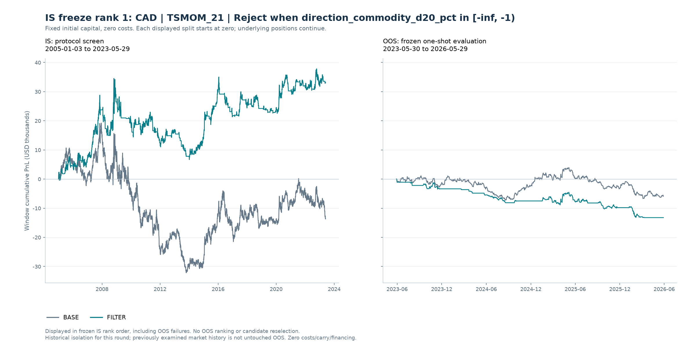
| 区间 | 账户 | 单利累计 % | 简单年化 % | 最大回撤 pp | 交易胜率 % | 交易盈亏比 | 已平仓数 | 已平仓交易保留比例 % | 跨界持仓数 | 期内开仓未平数 | 不足20笔平仓 | 预写OOS曲线标准 | OOS交易质量确认 |
|---|---|---|---|---|---|---|---|---|---|---|---|---|---|
| IS | BASE | -13.64 | -0.74 | -51.36 | 39.60 | 1.42 | 495 | 100.00 | 0 | 1 | 否 | — | — |
| IS | FILTER | 33.06 | 1.80 | -27.86 | 44.02 | 1.65 | 259 | 52.32 | 0 | 1 | 否 | — | — |
| OOS | BASE | -5.84 | -1.95 | -10.68 | 32.97 | 1.63 | 91 | 100.00 | 1 | 1 | 否 | 否 | 否 |
| OOS | FILTER | -13.22 | -4.41 | -13.30 | 25.00 | 1.02 | 44 | 48.35 | 1 | 0 | 否 | 否 | 否 |
冻结候选记录
| candidate_id | CAD|TSMOM_21|STATE_direction_commodity_d20_pct_0 |
|---|---|
| pair | CAD |
| strategy | TSMOM_21 |
| filter_id | STATE_direction_commodity_d20_pct_0 |
| is_new | 是 |
| gross_return_improvement_pp | 46.69 |
| win_rate_improvement_pp | 4.42 |
| payoff_absolute_improvement | 0.22 |
| payoff_relative_improvement | 0.16 |
| retention | 0.52 |
| is_gross_return_pct | 33.06 |
| is_net_return_pct | 33.06 |
| is_annualized_simple_pct | 1.80 |
| is_win_rate | 0.44 |
| is_payoff_ratio | 1.65 |
| is_closed_n | 259 |
| is_max_drawdown_pp | -27.86 |
| positive_blocks | 3 |
| improved_blocks | 2 |
| positive_and_annualized_pass | 是 |
| return_improvement_pass | 是 |
| win_rate_pass | 是 |
| payoff_pass | 是 |
| drawdown_pass | 是 |
| return_to_drawdown_pass | 是 |
| sample_pass | 是 |
| block_positive_pass | 是 |
| block_improvement_pass | 是 |
| pass | 是 |
| failed_criteria | — |
| freeze_rank | 1.00 |
| frozen | 是 |
| filter_name | Reject when direction_commodity_d20_pct in [-inf, -1) |
IS FREEZE RANK 2
NOK · MA_20_60
Reject when vol_ratio_20_63 in [0.8, 1) · 候选编号 NOK|MA_20_60|STATE_vol_ratio_20_63_1
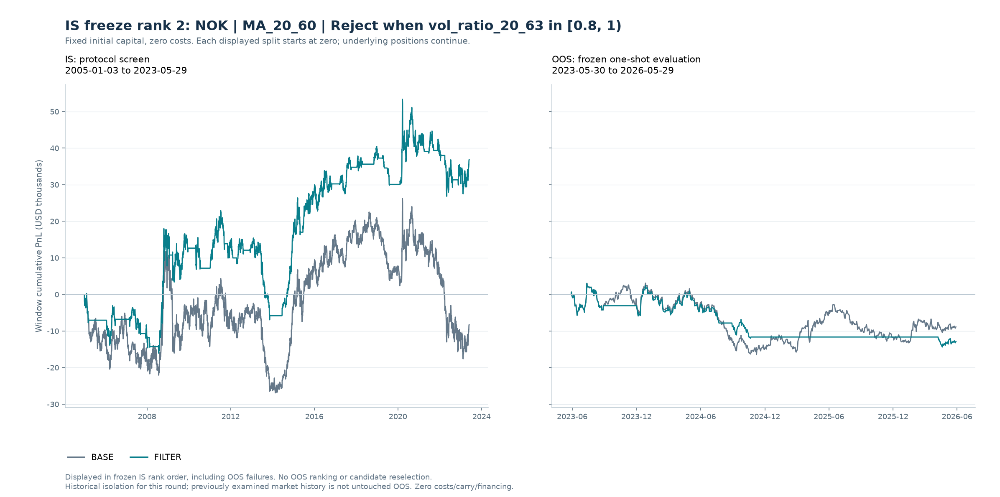
| 区间 | 账户 | 单利累计 % | 简单年化 % | 最大回撤 pp | 交易胜率 % | 交易盈亏比 | 已平仓数 | 已平仓交易保留比例 % | 跨界持仓数 | 期内开仓未平数 | 不足20笔平仓 | 预写OOS曲线标准 | OOS交易质量确认 |
|---|---|---|---|---|---|---|---|---|---|---|---|---|---|
| IS | BASE | -8.28 | -0.45 | -43.88 | 36.45 | 1.58 | 107 | 100.00 | 0 | 1 | 否 | — | — |
| IS | FILTER | 36.82 | 2.00 | -29.85 | 40.00 | 1.98 | 60 | 56.07 | 0 | 1 | 否 | — | — |
| OOS | BASE | -8.89 | -2.96 | -19.58 | 42.86 | 0.97 | 14 | 100.00 | 1 | 1 | 是 | 否 | 否 |
| OOS | FILTER | -12.91 | -4.30 | -17.41 | 33.33 | 0.19 | 6 | 42.86 | 1 | 1 | 是 | 否 | 否 |
冻结候选记录
| candidate_id | NOK|MA_20_60|STATE_vol_ratio_20_63_1 |
|---|---|
| pair | NOK |
| strategy | MA_20_60 |
| filter_id | STATE_vol_ratio_20_63_1 |
| is_new | 是 |
| gross_return_improvement_pp | 45.10 |
| win_rate_improvement_pp | 3.55 |
| payoff_absolute_improvement | 0.40 |
| payoff_relative_improvement | 0.25 |
| retention | 0.56 |
| is_gross_return_pct | 36.82 |
| is_net_return_pct | 36.82 |
| is_annualized_simple_pct | 2.00 |
| is_win_rate | 0.40 |
| is_payoff_ratio | 1.98 |
| is_closed_n | 60 |
| is_max_drawdown_pp | -29.85 |
| positive_blocks | 3 |
| improved_blocks | 3 |
| positive_and_annualized_pass | 是 |
| return_improvement_pass | 是 |
| win_rate_pass | 是 |
| payoff_pass | 是 |
| drawdown_pass | 是 |
| return_to_drawdown_pass | 是 |
| sample_pass | 是 |
| block_positive_pass | 是 |
| block_improvement_pass | 是 |
| pass | 是 |
| failed_criteria | — |
| freeze_rank | 2.00 |
| frozen | 是 |
| filter_name | Reject when vol_ratio_20_63 in [0.8, 1) |
IS FREEZE RANK 3
AUD · BB_BO_20
Reject when direction_commodity_d20_pct in [-inf, -1) · 候选编号 AUD|BB_BO_20|STATE_direction_commodity_d20_pct_0
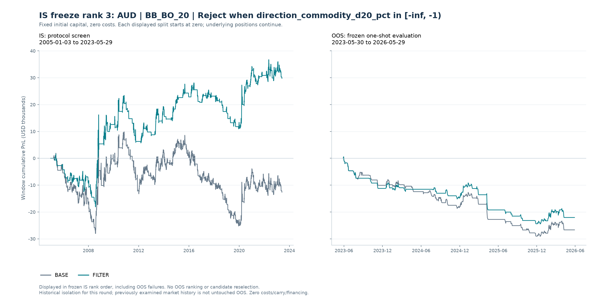
| 区间 | 账户 | 单利累计 % | 简单年化 % | 最大回撤 pp | 交易胜率 % | 交易盈亏比 | 已平仓数 | 已平仓交易保留比例 % | 跨界持仓数 | 期内开仓未平数 | 不足20笔平仓 | 预写OOS曲线标准 | OOS交易质量确认 |
|---|---|---|---|---|---|---|---|---|---|---|---|---|---|
| IS | BASE | -12.64 | -0.69 | -35.10 | 31.98 | 1.96 | 172 | 100.00 | 0 | 1 | 否 | — | — |
| IS | FILTER | 29.77 | 1.62 | -19.70 | 36.11 | 2.33 | 108 | 62.79 | 0 | 1 | 否 | — | — |
| OOS | BASE | -26.67 | -8.89 | -29.63 | 24.14 | 0.92 | 29 | 100.00 | 1 | 0 | 否 | 否 | 否 |
| OOS | FILTER | -22.06 | -7.35 | -25.02 | 26.09 | 0.88 | 23 | 79.31 | 1 | 0 | 否 | 否 | 否 |
冻结候选记录
| candidate_id | AUD|BB_BO_20|STATE_direction_commodity_d20_pct_0 |
|---|---|
| pair | AUD |
| strategy | BB_BO_20 |
| filter_id | STATE_direction_commodity_d20_pct_0 |
| is_new | 是 |
| gross_return_improvement_pp | 42.40 |
| win_rate_improvement_pp | 4.13 |
| payoff_absolute_improvement | 0.38 |
| payoff_relative_improvement | 0.19 |
| retention | 0.63 |
| is_gross_return_pct | 29.77 |
| is_net_return_pct | 29.77 |
| is_annualized_simple_pct | 1.62 |
| is_win_rate | 0.36 |
| is_payoff_ratio | 2.33 |
| is_closed_n | 108 |
| is_max_drawdown_pp | -19.70 |
| positive_blocks | 2 |
| improved_blocks | 3 |
| positive_and_annualized_pass | 是 |
| return_improvement_pass | 是 |
| win_rate_pass | 是 |
| payoff_pass | 是 |
| drawdown_pass | 是 |
| return_to_drawdown_pass | 是 |
| sample_pass | 是 |
| block_positive_pass | 是 |
| block_improvement_pass | 是 |
| pass | 是 |
| failed_criteria | — |
| freeze_rank | 3.00 |
| frozen | 是 |
| filter_name | Reject when direction_commodity_d20_pct in [-inf, -1) |
IS FREEZE RANK 4
JPY · VOTE_STRENGTH_4
Reject when K_vix_d5 in [-3, 0) · 候选编号 JPY|VOTE_STRENGTH_4|STATE_K_vix_d5_1
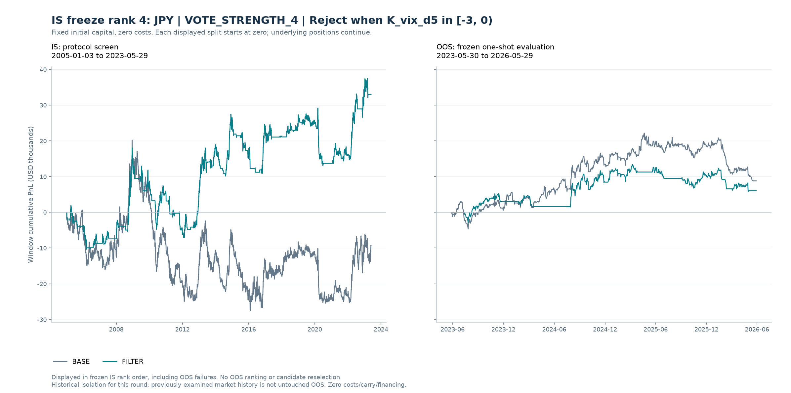
| 区间 | 账户 | 单利累计 % | 简单年化 % | 最大回撤 pp | 交易胜率 % | 交易盈亏比 | 已平仓数 | 已平仓交易保留比例 % | 跨界持仓数 | 期内开仓未平数 | 不足20笔平仓 | 预写OOS曲线标准 | OOS交易质量确认 |
|---|---|---|---|---|---|---|---|---|---|---|---|---|---|
| IS | BASE | -9.34 | -0.51 | -47.74 | 35.97 | 1.65 | 278 | 100.00 | 0 | 1 | 否 | — | — |
| IS | FILTER | 33.00 | 1.79 | -25.14 | 42.18 | 1.86 | 147 | 52.88 | 0 | 0 | 否 | — | — |
| OOS | BASE | 8.82 | 2.94 | -13.36 | 35.29 | 2.92 | 34 | 100.00 | 1 | 0 | 否 | 否 | 否 |
| OOS | FILTER | 6.06 | 2.02 | -7.58 | 33.33 | 3.18 | 21 | 61.76 | 0 | 0 | 否 | 否 | 否 |
冻结候选记录
| candidate_id | JPY|VOTE_STRENGTH_4|STATE_K_vix_d5_1 |
|---|---|
| pair | JPY |
| strategy | VOTE_STRENGTH_4 |
| filter_id | STATE_K_vix_d5_1 |
| is_new | 是 |
| gross_return_improvement_pp | 42.34 |
| win_rate_improvement_pp | 6.21 |
| payoff_absolute_improvement | 0.20 |
| payoff_relative_improvement | 0.12 |
| retention | 0.53 |
| is_gross_return_pct | 33.00 |
| is_net_return_pct | 33.00 |
| is_annualized_simple_pct | 1.79 |
| is_win_rate | 0.42 |
| is_payoff_ratio | 1.86 |
| is_closed_n | 147 |
| is_max_drawdown_pp | -25.14 |
| positive_blocks | 2 |
| improved_blocks | 3 |
| positive_and_annualized_pass | 是 |
| return_improvement_pass | 是 |
| win_rate_pass | 是 |
| payoff_pass | 是 |
| drawdown_pass | 是 |
| return_to_drawdown_pass | 是 |
| sample_pass | 是 |
| block_positive_pass | 是 |
| block_improvement_pass | 是 |
| pass | 是 |
| failed_criteria | — |
| freeze_rank | 4.00 |
| frozen | 是 |
| filter_name | Reject when K_vix_d5 in [-3, 0) |
IS FREEZE RANK 5
GBP · MACD_12_26_9
Reject when direction_dxy_d20_pct in [1, inf) · 候选编号 GBP|MACD_12_26_9|STATE_direction_dxy_d20_pct_3
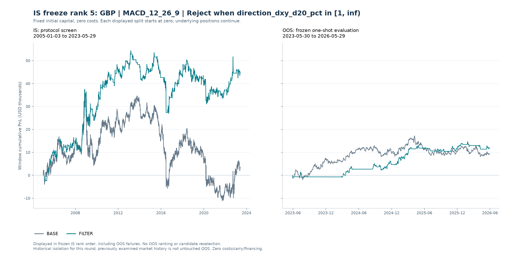
| 区间 | 账户 | 单利累计 % | 简单年化 % | 最大回撤 pp | 交易胜率 % | 交易盈亏比 | 已平仓数 | 已平仓交易保留比例 % | 跨界持仓数 | 期内开仓未平数 | 不足20笔平仓 | 预写OOS曲线标准 | OOS交易质量确认 |
|---|---|---|---|---|---|---|---|---|---|---|---|---|---|
| IS | BASE | 3.31 | 0.18 | -47.19 | 40.10 | 1.51 | 384 | 100.00 | 0 | 1 | 否 | — | — |
| IS | FILTER | 44.87 | 2.44 | -27.39 | 42.19 | 1.76 | 237 | 61.72 | 0 | 1 | 否 | — | — |
| OOS | BASE | 9.22 | 3.07 | -9.05 | 51.06 | 1.33 | 47 | 100.00 | 1 | 1 | 否 | 是 | 是 |
| OOS | FILTER | 11.80 | 3.93 | -3.30 | 57.14 | 2.56 | 21 | 44.68 | 1 | 1 | 否 | 是 | 是 |
冻结候选记录
| candidate_id | GBP|MACD_12_26_9|STATE_direction_dxy_d20_pct_3 |
|---|---|
| pair | GBP |
| strategy | MACD_12_26_9 |
| filter_id | STATE_direction_dxy_d20_pct_3 |
| is_new | 是 |
| gross_return_improvement_pp | 41.56 |
| win_rate_improvement_pp | 2.09 |
| payoff_absolute_improvement | 0.25 |
| payoff_relative_improvement | 0.17 |
| retention | 0.62 |
| is_gross_return_pct | 44.87 |
| is_net_return_pct | 44.87 |
| is_annualized_simple_pct | 2.44 |
| is_win_rate | 0.42 |
| is_payoff_ratio | 1.76 |
| is_closed_n | 237 |
| is_max_drawdown_pp | -27.39 |
| positive_blocks | 2 |
| improved_blocks | 3 |
| positive_and_annualized_pass | 是 |
| return_improvement_pass | 是 |
| win_rate_pass | 是 |
| payoff_pass | 是 |
| drawdown_pass | 是 |
| return_to_drawdown_pass | 是 |
| sample_pass | 是 |
| block_positive_pass | 是 |
| block_improvement_pass | 是 |
| pass | 是 |
| failed_criteria | — |
| freeze_rank | 5.00 |
| frozen | 是 |
| filter_name | Reject when direction_dxy_d20_pct in [1, inf) |
IS FREEZE RANK 6
CAD · VOTE_EQUAL_4
Reject when direction_commodity_d20_pct in [-inf, -1) · 候选编号 CAD|VOTE_EQUAL_4|STATE_direction_commodity_d20_pct_0
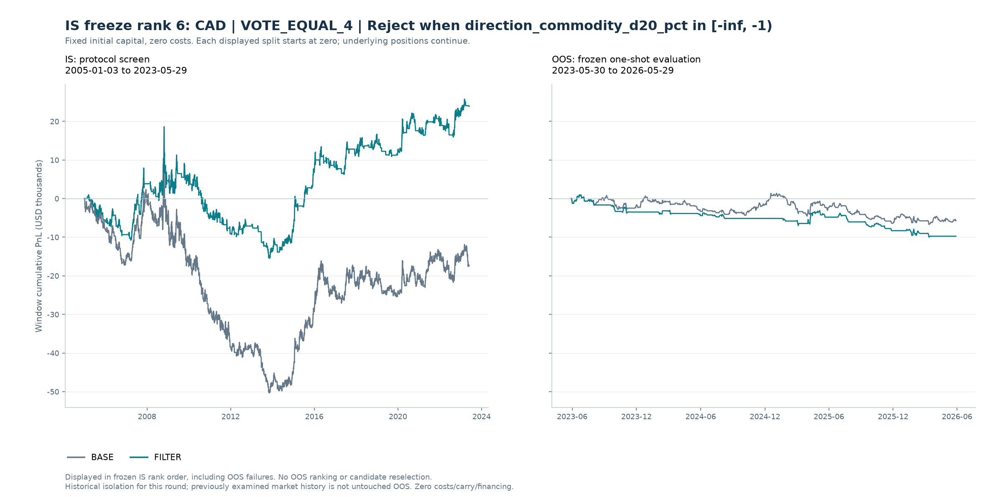
| 区间 | 账户 | 单利累计 % | 简单年化 % | 最大回撤 pp | 交易胜率 % | 交易盈亏比 | 已平仓数 | 已平仓交易保留比例 % | 跨界持仓数 | 期内开仓未平数 | 不足20笔平仓 | 预写OOS曲线标准 | OOS交易质量确认 |
|---|---|---|---|---|---|---|---|---|---|---|---|---|---|
| IS | BASE | -17.43 | -0.95 | -60.12 | 37.37 | 1.50 | 289 | 100.00 | 0 | 1 | 否 | — | — |
| IS | FILTER | 23.88 | 1.30 | -34.06 | 41.82 | 1.77 | 165 | 57.09 | 0 | 1 | 否 | — | — |
| OOS | BASE | -5.71 | -1.90 | -8.08 | 35.85 | 1.39 | 53 | 100.00 | 1 | 1 | 否 | 否 | 否 |
| OOS | FILTER | -9.75 | -3.25 | -10.96 | 26.67 | 1.09 | 30 | 56.60 | 1 | 0 | 否 | 否 | 否 |
冻结候选记录
| candidate_id | CAD|VOTE_EQUAL_4|STATE_direction_commodity_d20_pct_0 |
|---|---|
| pair | CAD |
| strategy | VOTE_EQUAL_4 |
| filter_id | STATE_direction_commodity_d20_pct_0 |
| is_new | 是 |
| gross_return_improvement_pp | 41.32 |
| win_rate_improvement_pp | 4.45 |
| payoff_absolute_improvement | 0.26 |
| payoff_relative_improvement | 0.18 |
| retention | 0.57 |
| is_gross_return_pct | 23.88 |
| is_net_return_pct | 23.88 |
| is_annualized_simple_pct | 1.30 |
| is_win_rate | 0.42 |
| is_payoff_ratio | 1.77 |
| is_closed_n | 165 |
| is_max_drawdown_pp | -34.06 |
| positive_blocks | 2 |
| improved_blocks | 2 |
| positive_and_annualized_pass | 是 |
| return_improvement_pass | 是 |
| win_rate_pass | 是 |
| payoff_pass | 是 |
| drawdown_pass | 是 |
| return_to_drawdown_pass | 是 |
| sample_pass | 是 |
| block_positive_pass | 是 |
| block_improvement_pass | 是 |
| pass | 是 |
| failed_criteria | — |
| freeze_rank | 6.00 |
| frozen | 是 |
| filter_name | Reject when direction_commodity_d20_pct in [-inf, -1) |
IS FREEZE RANK 7
JPY · TSMOM_21
Reject when K_vix in [-inf, 15) · 候选编号 JPY|TSMOM_21|STATE_K_vix_0
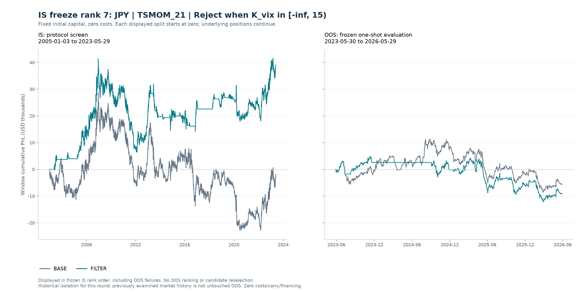
| 区间 | 账户 | 单利累计 % | 简单年化 % | 最大回撤 pp | 交易胜率 % | 交易盈亏比 | 已平仓数 | 已平仓交易保留比例 % | 跨界持仓数 | 期内开仓未平数 | 不足20笔平仓 | 预写OOS曲线标准 | OOS交易质量确认 |
|---|---|---|---|---|---|---|---|---|---|---|---|---|---|
| IS | BASE | -1.97 | -0.11 | -51.69 | 39.44 | 1.50 | 502 | 100.00 | 0 | 1 | 否 | — | — |
| IS | FILTER | 38.98 | 2.12 | -34.92 | 42.26 | 1.68 | 310 | 61.75 | 0 | 1 | 否 | — | — |
| OOS | BASE | -5.57 | -1.86 | -19.91 | 44.16 | 1.17 | 77 | 100.00 | 1 | 1 | 否 | 否 | 否 |
| OOS | FILTER | -9.15 | -3.05 | -16.94 | 42.59 | 1.08 | 54 | 70.13 | 1 | 1 | 否 | 否 | 否 |
冻结候选记录
| candidate_id | JPY|TSMOM_21|STATE_K_vix_0 |
|---|---|
| pair | JPY |
| strategy | TSMOM_21 |
| filter_id | STATE_K_vix_0 |
| is_new | 是 |
| gross_return_improvement_pp | 40.94 |
| win_rate_improvement_pp | 2.82 |
| payoff_absolute_improvement | 0.18 |
| payoff_relative_improvement | 0.12 |
| retention | 0.62 |
| is_gross_return_pct | 38.98 |
| is_net_return_pct | 38.98 |
| is_annualized_simple_pct | 2.12 |
| is_win_rate | 0.42 |
| is_payoff_ratio | 1.68 |
| is_closed_n | 310 |
| is_max_drawdown_pp | -34.92 |
| positive_blocks | 3 |
| improved_blocks | 3 |
| positive_and_annualized_pass | 是 |
| return_improvement_pass | 是 |
| win_rate_pass | 是 |
| payoff_pass | 是 |
| drawdown_pass | 是 |
| return_to_drawdown_pass | 是 |
| sample_pass | 是 |
| block_positive_pass | 是 |
| block_improvement_pass | 是 |
| pass | 是 |
| failed_criteria | — |
| freeze_rank | 7.00 |
| frozen | 是 |
| filter_name | Reject when K_vix in [-inf, 15) |
IS FREEZE RANK 8
NZD · VOTE_STRENGTH_4
Reject when direction_dxy_d20_pct in [-inf, -1) · 候选编号 NZD|VOTE_STRENGTH_4|STATE_direction_dxy_d20_pct_0
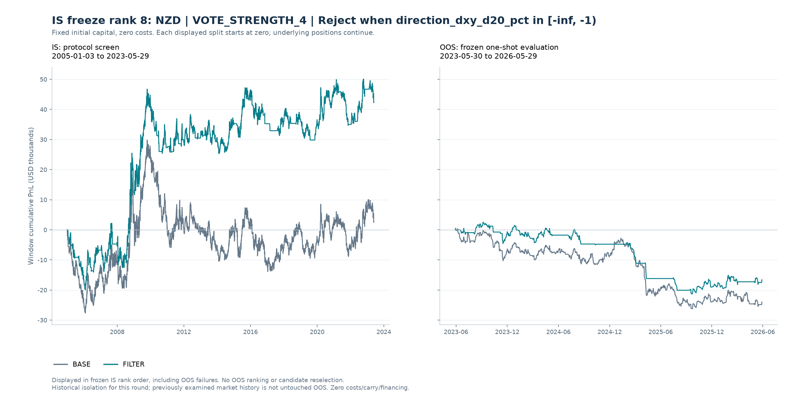
| 区间 | 账户 | 单利累计 % | 简单年化 % | 最大回撤 pp | 交易胜率 % | 交易盈亏比 | 已平仓数 | 已平仓交易保留比例 % | 跨界持仓数 | 期内开仓未平数 | 不足20笔平仓 | 预写OOS曲线标准 | OOS交易质量确认 |
|---|---|---|---|---|---|---|---|---|---|---|---|---|---|
| IS | BASE | 2.60 | 0.14 | -43.66 | 36.50 | 1.75 | 274 | 100.00 | 0 | 1 | 否 | — | — |
| IS | FILTER | 42.27 | 2.30 | -21.39 | 39.27 | 1.96 | 191 | 69.71 | 0 | 0 | 否 | — | — |
| OOS | BASE | -23.97 | -7.99 | -26.82 | 33.33 | 0.97 | 42 | 100.00 | 1 | 1 | 否 | 否 | 否 |
| OOS | FILTER | -16.61 | -5.54 | -23.82 | 37.93 | 0.66 | 29 | 69.05 | 0 | 1 | 否 | 否 | 否 |
冻结候选记录
| candidate_id | NZD|VOTE_STRENGTH_4|STATE_direction_dxy_d20_pct_0 |
|---|---|
| pair | NZD |
| strategy | VOTE_STRENGTH_4 |
| filter_id | STATE_direction_dxy_d20_pct_0 |
| is_new | 是 |
| gross_return_improvement_pp | 39.67 |
| win_rate_improvement_pp | 2.77 |
| payoff_absolute_improvement | 0.21 |
| payoff_relative_improvement | 0.12 |
| retention | 0.70 |
| is_gross_return_pct | 42.27 |
| is_net_return_pct | 42.27 |
| is_annualized_simple_pct | 2.30 |
| is_win_rate | 0.39 |
| is_payoff_ratio | 1.96 |
| is_closed_n | 191 |
| is_max_drawdown_pp | -21.39 |
| positive_blocks | 3 |
| improved_blocks | 3 |
| positive_and_annualized_pass | 是 |
| return_improvement_pass | 是 |
| win_rate_pass | 是 |
| payoff_pass | 是 |
| drawdown_pass | 是 |
| return_to_drawdown_pass | 是 |
| sample_pass | 是 |
| block_positive_pass | 是 |
| block_improvement_pass | 是 |
| pass | 是 |
| failed_criteria | — |
| freeze_rank | 8.00 |
| frozen | 是 |
| filter_name | Reject when direction_dxy_d20_pct in [-inf, -1) |
IS FREEZE RANK 9
EUR · MA_10_30
Reject when direction_dxy_d20_pct in [-1, 0) · 候选编号 EUR|MA_10_30|STATE_direction_dxy_d20_pct_1
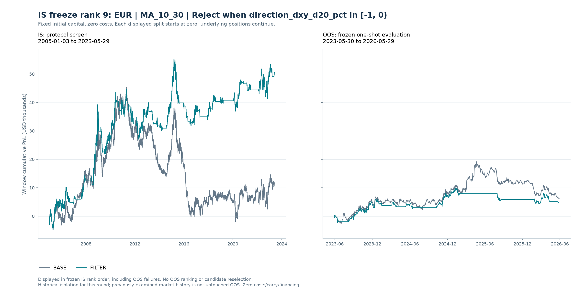
| 区间 | 账户 | 单利累计 % | 简单年化 % | 最大回撤 pp | 交易胜率 % | 交易盈亏比 | 已平仓数 | 已平仓交易保留比例 % | 跨界持仓数 | 期内开仓未平数 | 不足20笔平仓 | 预写OOS曲线标准 | OOS交易质量确认 |
|---|---|---|---|---|---|---|---|---|---|---|---|---|---|
| IS | BASE | 11.74 | 0.64 | -47.42 | 32.80 | 2.18 | 186 | 100.00 | 0 | 1 | 否 | — | — |
| IS | FILTER | 50.53 | 2.75 | -23.87 | 39.78 | 2.45 | 93 | 50.00 | 0 | 1 | 否 | — | — |
| OOS | BASE | 6.10 | 2.03 | -13.06 | 39.13 | 2.54 | 23 | 100.00 | 1 | 1 | 否 | 否 | 否 |
| OOS | FILTER | 4.61 | 1.53 | -5.46 | 40.00 | 3.45 | 10 | 43.48 | 1 | 1 | 是 | 否 | 否 |
冻结候选记录
| candidate_id | EUR|MA_10_30|STATE_direction_dxy_d20_pct_1 |
|---|---|
| pair | EUR |
| strategy | MA_10_30 |
| filter_id | STATE_direction_dxy_d20_pct_1 |
| is_new | 是 |
| gross_return_improvement_pp | 38.79 |
| win_rate_improvement_pp | 6.99 |
| payoff_absolute_improvement | 0.27 |
| payoff_relative_improvement | 0.13 |
| retention | 0.50 |
| is_gross_return_pct | 50.53 |
| is_net_return_pct | 50.53 |
| is_annualized_simple_pct | 2.75 |
| is_win_rate | 0.40 |
| is_payoff_ratio | 2.45 |
| is_closed_n | 93 |
| is_max_drawdown_pp | -23.87 |
| positive_blocks | 2 |
| improved_blocks | 3 |
| positive_and_annualized_pass | 是 |
| return_improvement_pass | 是 |
| win_rate_pass | 是 |
| payoff_pass | 是 |
| drawdown_pass | 是 |
| return_to_drawdown_pass | 是 |
| sample_pass | 是 |
| block_positive_pass | 是 |
| block_improvement_pass | 是 |
| pass | 是 |
| failed_criteria | — |
| freeze_rank | 9.00 |
| frozen | 是 |
| filter_name | Reject when direction_dxy_d20_pct in [-1, 0) |
IS FREEZE RANK 10
EUR · RSI_MOM_20
Reject when direction_return_20_vol in [1, inf) · 候选编号 EUR|RSI_MOM_20|STATE_direction_return_20_vol_3
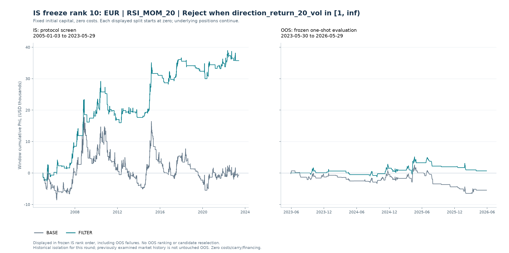
| 区间 | 账户 | 单利累计 % | 简单年化 % | 最大回撤 pp | 交易胜率 % | 交易盈亏比 | 已平仓数 | 已平仓交易保留比例 % | 跨界持仓数 | 期内开仓未平数 | 不足20笔平仓 | 预写OOS曲线标准 | OOS交易质量确认 |
|---|---|---|---|---|---|---|---|---|---|---|---|---|---|
| IS | BASE | -0.60 | -0.03 | -23.26 | 45.45 | 1.19 | 275 | 100.00 | 0 | 1 | 否 | — | — |
| IS | FILTER | 35.73 | 1.94 | -13.18 | 56.74 | 1.33 | 141 | 51.27 | 0 | 0 | 否 | — | — |
| OOS | BASE | -5.47 | -1.82 | -9.06 | 44.23 | 0.83 | 52 | 100.00 | 1 | 0 | 否 | 否 | 是 |
| OOS | FILTER | 0.67 | 0.22 | -4.48 | 50.00 | 1.09 | 28 | 53.85 | 0 | 0 | 否 | 否 | 是 |
冻结候选记录
| candidate_id | EUR|RSI_MOM_20|STATE_direction_return_20_vol_3 |
|---|---|
| pair | EUR |
| strategy | RSI_MOM_20 |
| filter_id | STATE_direction_return_20_vol_3 |
| is_new | 是 |
| gross_return_improvement_pp | 36.32 |
| win_rate_improvement_pp | 11.28 |
| payoff_absolute_improvement | 0.14 |
| payoff_relative_improvement | 0.11 |
| retention | 0.51 |
| is_gross_return_pct | 35.73 |
| is_net_return_pct | 35.73 |
| is_annualized_simple_pct | 1.94 |
| is_win_rate | 0.57 |
| is_payoff_ratio | 1.33 |
| is_closed_n | 141 |
| is_max_drawdown_pp | -13.18 |
| positive_blocks | 3 |
| improved_blocks | 3 |
| positive_and_annualized_pass | 是 |
| return_improvement_pass | 是 |
| win_rate_pass | 是 |
| payoff_pass | 是 |
| drawdown_pass | 是 |
| return_to_drawdown_pass | 是 |
| sample_pass | 是 |
| block_positive_pass | 是 |
| block_improvement_pass | 是 |
| pass | 是 |
| failed_criteria | — |
| freeze_rank | 10.00 |
| frozen | 是 |
| filter_name | Reject when direction_return_20_vol in [1, inf) |
IS FREEZE RANK 11
AUD · VOTE_STRENGTH_4
Reject when direction_spread_d20_bp in [-10, 0) · 候选编号 AUD|VOTE_STRENGTH_4|STATE_direction_spread_d20_bp_1
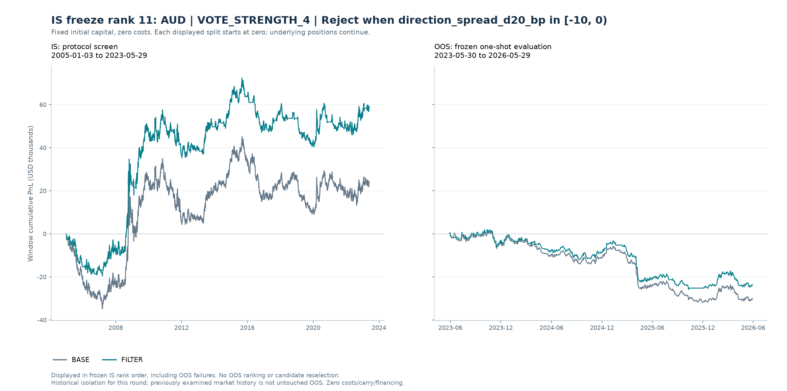
| 区间 | 账户 | 单利累计 % | 简单年化 % | 最大回撤 pp | 交易胜率 % | 交易盈亏比 | 已平仓数 | 已平仓交易保留比例 % | 跨界持仓数 | 期内开仓未平数 | 不足20笔平仓 | 预写OOS曲线标准 | OOS交易质量确认 |
|---|---|---|---|---|---|---|---|---|---|---|---|---|---|
| IS | BASE | 23.83 | 1.29 | -36.10 | 35.07 | 2.06 | 268 | 100.00 | 0 | 1 | 否 | — | — |
| IS | FILTER | 58.74 | 3.19 | -32.00 | 37.14 | 2.38 | 210 | 78.36 | 0 | 1 | 否 | — | — |
| OOS | BASE | -30.09 | -10.03 | -32.90 | 24.39 | 1.10 | 41 | 100.00 | 1 | 1 | 否 | 否 | 否 |
| OOS | FILTER | -23.62 | -7.87 | -27.79 | 30.30 | 0.96 | 33 | 80.49 | 1 | 1 | 否 | 否 | 否 |
冻结候选记录
| candidate_id | AUD|VOTE_STRENGTH_4|STATE_direction_spread_d20_bp_1 |
|---|---|
| pair | AUD |
| strategy | VOTE_STRENGTH_4 |
| filter_id | STATE_direction_spread_d20_bp_1 |
| is_new | 是 |
| gross_return_improvement_pp | 34.91 |
| win_rate_improvement_pp | 2.07 |
| payoff_absolute_improvement | 0.32 |
| payoff_relative_improvement | 0.16 |
| retention | 0.78 |
| is_gross_return_pct | 58.74 |
| is_net_return_pct | 58.74 |
| is_annualized_simple_pct | 3.19 |
| is_win_rate | 0.37 |
| is_payoff_ratio | 2.38 |
| is_closed_n | 210 |
| is_max_drawdown_pp | -32.00 |
| positive_blocks | 2 |
| improved_blocks | 3 |
| positive_and_annualized_pass | 是 |
| return_improvement_pass | 是 |
| win_rate_pass | 是 |
| payoff_pass | 是 |
| drawdown_pass | 是 |
| return_to_drawdown_pass | 是 |
| sample_pass | 是 |
| block_positive_pass | 是 |
| block_improvement_pass | 是 |
| pass | 是 |
| failed_criteria | — |
| freeze_rank | 11.00 |
| frozen | 是 |
| filter_name | Reject when direction_spread_d20_bp in [-10, 0) |
IS FREEZE RANK 12
CAD · TSMOM_63
Reject when direction_dxy_d20_pct in [-1, 0) · 候选编号 CAD|TSMOM_63|STATE_direction_dxy_d20_pct_1
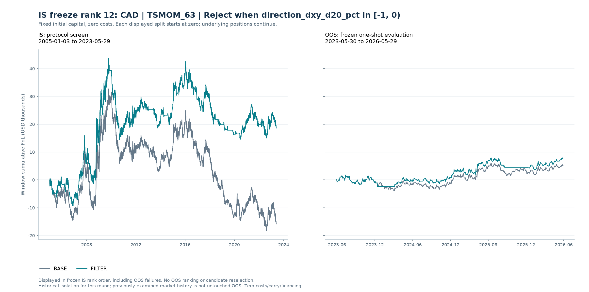
| 区间 | 账户 | 单利累计 % | 简单年化 % | 最大回撤 pp | 交易胜率 % | 交易盈亏比 | 已平仓数 | 已平仓交易保留比例 % | 跨界持仓数 | 期内开仓未平数 | 不足20笔平仓 | 预写OOS曲线标准 | OOS交易质量确认 |
|---|---|---|---|---|---|---|---|---|---|---|---|---|---|
| IS | BASE | -15.83 | -0.86 | -51.02 | 39.58 | 1.37 | 331 | 100.00 | 0 | 1 | 否 | — | — |
| IS | FILTER | 18.62 | 1.01 | -29.20 | 41.96 | 1.58 | 255 | 77.04 | 0 | 1 | 否 | — | — |
| OOS | BASE | 5.12 | 1.71 | -5.59 | 41.18 | 2.11 | 34 | 100.00 | 1 | 1 | 否 | 是 | 是 |
| OOS | FILTER | 7.56 | 2.52 | -4.31 | 46.15 | 2.49 | 26 | 76.47 | 1 | 1 | 否 | 是 | 是 |
冻结候选记录
| candidate_id | CAD|TSMOM_63|STATE_direction_dxy_d20_pct_1 |
|---|---|
| pair | CAD |
| strategy | TSMOM_63 |
| filter_id | STATE_direction_dxy_d20_pct_1 |
| is_new | 是 |
| gross_return_improvement_pp | 34.46 |
| win_rate_improvement_pp | 2.38 |
| payoff_absolute_improvement | 0.21 |
| payoff_relative_improvement | 0.15 |
| retention | 0.77 |
| is_gross_return_pct | 18.62 |
| is_net_return_pct | 18.62 |
| is_annualized_simple_pct | 1.01 |
| is_win_rate | 0.42 |
| is_payoff_ratio | 1.58 |
| is_closed_n | 255 |
| is_max_drawdown_pp | -29.20 |
| positive_blocks | 2 |
| improved_blocks | 3 |
| positive_and_annualized_pass | 是 |
| return_improvement_pass | 是 |
| win_rate_pass | 是 |
| payoff_pass | 是 |
| drawdown_pass | 是 |
| return_to_drawdown_pass | 是 |
| sample_pass | 是 |
| block_positive_pass | 是 |
| block_improvement_pass | 是 |
| pass | 是 |
| failed_criteria | — |
| freeze_rank | 12.00 |
| frozen | 是 |
| filter_name | Reject when direction_dxy_d20_pct in [-1, 0) |
IS FREEZE RANK 13
JPY · BB_MR_20
Reject when efficiency_63 in [0.1, 0.2) · 候选编号 JPY|BB_MR_20|STATE_efficiency_63_1
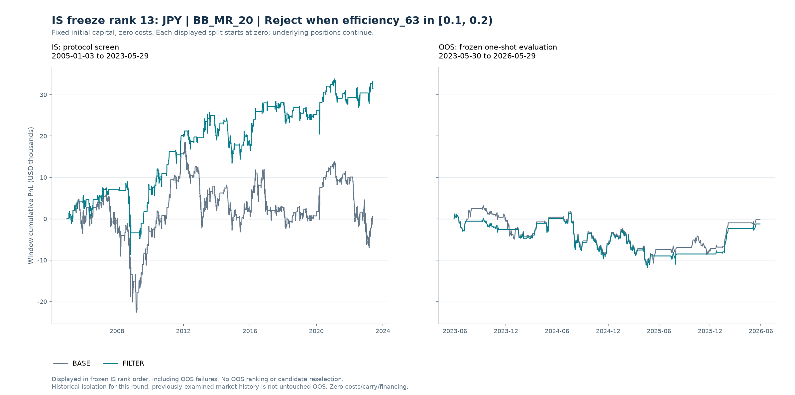
| 区间 | 账户 | 单利累计 % | 简单年化 % | 最大回撤 pp | 交易胜率 % | 交易盈亏比 | 已平仓数 | 已平仓交易保留比例 % | 跨界持仓数 | 期内开仓未平数 | 不足20笔平仓 | 预写OOS曲线标准 | OOS交易质量确认 |
|---|---|---|---|---|---|---|---|---|---|---|---|---|---|
| IS | BASE | -1.25 | -0.07 | -28.51 | 66.45 | 0.50 | 155 | 100.00 | 0 | 1 | 否 | — | — |
| IS | FILTER | 31.50 | 1.71 | -17.65 | 68.57 | 0.71 | 105 | 67.74 | 0 | 1 | 否 | — | — |
| OOS | BASE | -0.16 | -0.05 | -14.64 | 64.00 | 0.57 | 25 | 100.00 | 1 | 0 | 否 | 否 | 否 |
| OOS | FILTER | -1.25 | -0.42 | -13.19 | 68.42 | 0.45 | 19 | 76.00 | 1 | 0 | 是 | 否 | 否 |
冻结候选记录
| candidate_id | JPY|BB_MR_20|STATE_efficiency_63_1 |
|---|---|
| pair | JPY |
| strategy | BB_MR_20 |
| filter_id | STATE_efficiency_63_1 |
| is_new | 是 |
| gross_return_improvement_pp | 32.75 |
| win_rate_improvement_pp | 2.12 |
| payoff_absolute_improvement | 0.20 |
| payoff_relative_improvement | 0.40 |
| retention | 0.68 |
| is_gross_return_pct | 31.50 |
| is_net_return_pct | 31.50 |
| is_annualized_simple_pct | 1.71 |
| is_win_rate | 0.69 |
| is_payoff_ratio | 0.71 |
| is_closed_n | 105 |
| is_max_drawdown_pp | -17.65 |
| positive_blocks | 3 |
| improved_blocks | 3 |
| positive_and_annualized_pass | 是 |
| return_improvement_pass | 是 |
| win_rate_pass | 是 |
| payoff_pass | 是 |
| drawdown_pass | 是 |
| return_to_drawdown_pass | 是 |
| sample_pass | 是 |
| block_positive_pass | 是 |
| block_improvement_pass | 是 |
| pass | 是 |
| failed_criteria | — |
| freeze_rank | 13.00 |
| frozen | 是 |
| filter_name | Reject when efficiency_63 in [0.1, 0.2) |
IS FREEZE RANK 14
AUD · BB_MR_20
Reject when direction_commodity_d20_pct in [-inf, -1) · 候选编号 AUD|BB_MR_20|STATE_direction_commodity_d20_pct_0
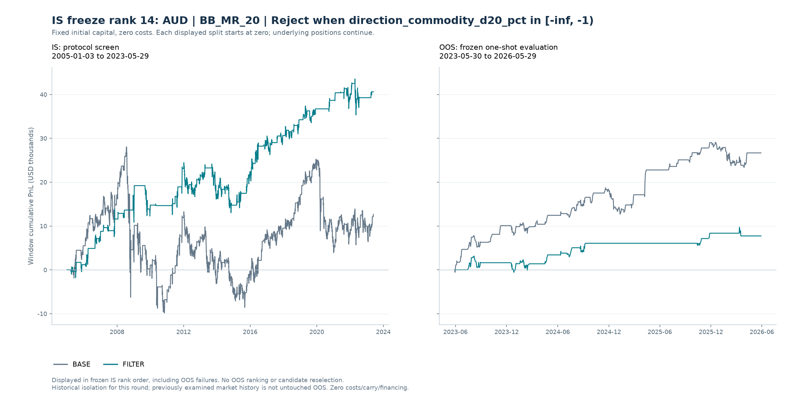
| 区间 | 账户 | 单利累计 % | 简单年化 % | 最大回撤 pp | 交易胜率 % | 交易盈亏比 | 已平仓数 | 已平仓交易保留比例 % | 跨界持仓数 | 期内开仓未平数 | 不足20笔平仓 | 预写OOS曲线标准 | OOS交易质量确认 |
|---|---|---|---|---|---|---|---|---|---|---|---|---|---|
| IS | BASE | 12.64 | 0.69 | -37.87 | 68.02 | 0.51 | 172 | 100.00 | 0 | 1 | 否 | — | — |
| IS | FILTER | 40.60 | 2.21 | -11.45 | 71.74 | 0.82 | 92 | 53.49 | 0 | 0 | 否 | — | — |
| OOS | BASE | 26.67 | 8.89 | -6.03 | 75.86 | 1.08 | 29 | 100.00 | 1 | 0 | 否 | 否 | 否 |
| OOS | FILTER | 7.73 | 2.58 | -3.68 | 66.67 | 2.37 | 12 | 41.38 | 0 | 0 | 是 | 否 | 否 |
冻结候选记录
| candidate_id | AUD|BB_MR_20|STATE_direction_commodity_d20_pct_0 |
|---|---|
| pair | AUD |
| strategy | BB_MR_20 |
| filter_id | STATE_direction_commodity_d20_pct_0 |
| is_new | 是 |
| gross_return_improvement_pp | 27.96 |
| win_rate_improvement_pp | 3.72 |
| payoff_absolute_improvement | 0.31 |
| payoff_relative_improvement | 0.61 |
| retention | 0.53 |
| is_gross_return_pct | 40.60 |
| is_net_return_pct | 40.60 |
| is_annualized_simple_pct | 2.21 |
| is_win_rate | 0.72 |
| is_payoff_ratio | 0.82 |
| is_closed_n | 92 |
| is_max_drawdown_pp | -11.45 |
| positive_blocks | 3 |
| improved_blocks | 2 |
| positive_and_annualized_pass | 是 |
| return_improvement_pass | 是 |
| win_rate_pass | 是 |
| payoff_pass | 是 |
| drawdown_pass | 是 |
| return_to_drawdown_pass | 是 |
| sample_pass | 是 |
| block_positive_pass | 是 |
| block_improvement_pass | 是 |
| pass | 是 |
| failed_criteria | — |
| freeze_rank | 14.00 |
| frozen | 是 |
| filter_name | Reject when direction_commodity_d20_pct in [-inf, -1) |
IS FREEZE RANK 15
EUR · BB_MR_20
Reject when direction_distance_ma_60_vol in [-inf, -1) · 候选编号 EUR|BB_MR_20|STATE_direction_distance_ma_60_vol_0
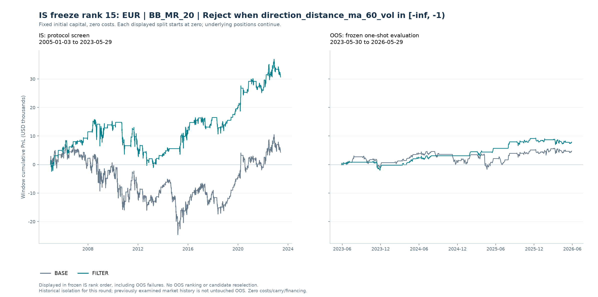
| 区间 | 账户 | 单利累计 % | 简单年化 % | 最大回撤 pp | 交易胜率 % | 交易盈亏比 | 已平仓数 | 已平仓交易保留比例 % | 跨界持仓数 | 期内开仓未平数 | 不足20笔平仓 | 预写OOS曲线标准 | OOS交易质量确认 |
|---|---|---|---|---|---|---|---|---|---|---|---|---|---|
| IS | BASE | 4.29 | 0.23 | -31.35 | 63.19 | 0.61 | 163 | 100.00 | 0 | 1 | 否 | — | — |
| IS | FILTER | 30.67 | 1.67 | -16.91 | 67.26 | 0.76 | 113 | 69.33 | 0 | 1 | 否 | — | — |
| OOS | BASE | 4.71 | 1.57 | -6.30 | 58.62 | 1.00 | 29 | 100.00 | 1 | 1 | 否 | 是 | 是 |
| OOS | FILTER | 7.87 | 2.62 | -3.18 | 65.00 | 1.91 | 20 | 68.97 | 1 | 1 | 否 | 是 | 是 |
冻结候选记录
| candidate_id | EUR|BB_MR_20|STATE_direction_distance_ma_60_vol_0 |
|---|---|
| pair | EUR |
| strategy | BB_MR_20 |
| filter_id | STATE_direction_distance_ma_60_vol_0 |
| is_new | 是 |
| gross_return_improvement_pp | 26.38 |
| win_rate_improvement_pp | 4.07 |
| payoff_absolute_improvement | 0.15 |
| payoff_relative_improvement | 0.25 |
| retention | 0.69 |
| is_gross_return_pct | 30.67 |
| is_net_return_pct | 30.67 |
| is_annualized_simple_pct | 1.67 |
| is_win_rate | 0.67 |
| is_payoff_ratio | 0.76 |
| is_closed_n | 113 |
| is_max_drawdown_pp | -16.91 |
| positive_blocks | 3 |
| improved_blocks | 3 |
| positive_and_annualized_pass | 是 |
| return_improvement_pass | 是 |
| win_rate_pass | 是 |
| payoff_pass | 是 |
| drawdown_pass | 是 |
| return_to_drawdown_pass | 是 |
| sample_pass | 是 |
| block_positive_pass | 是 |
| block_improvement_pass | 是 |
| pass | 是 |
| failed_criteria | — |
| freeze_rank | 15.00 |
| frozen | 是 |
| filter_name | Reject when direction_distance_ma_60_vol in [-inf, -1) |
IS FREEZE RANK 16
EUR · BB_MR_10
Reject when direction_dxy_d20_pct in [-1, 0) · 候选编号 EUR|BB_MR_10|STATE_direction_dxy_d20_pct_1
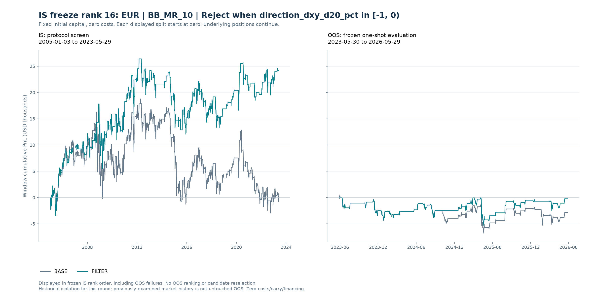
| 区间 | 账户 | 单利累计 % | 简单年化 % | 最大回撤 pp | 交易胜率 % | 交易盈亏比 | 已平仓数 | 已平仓交易保留比例 % | 跨界持仓数 | 期内开仓未平数 | 不足20笔平仓 | 预写OOS曲线标准 | OOS交易质量确认 |
|---|---|---|---|---|---|---|---|---|---|---|---|---|---|
| IS | BASE | -0.75 | -0.04 | -21.72 | 60.59 | 0.65 | 203 | 100.00 | 0 | 1 | 否 | — | — |
| IS | FILTER | 24.21 | 1.32 | -14.35 | 62.96 | 0.74 | 162 | 79.80 | 0 | 0 | 否 | — | — |
| OOS | BASE | -2.85 | -0.95 | -7.29 | 53.33 | 0.70 | 30 | 100.00 | 1 | 0 | 否 | 否 | 是 |
| OOS | FILTER | -0.23 | -0.08 | -5.43 | 57.14 | 0.74 | 28 | 93.33 | 0 | 0 | 否 | 否 | 是 |
冻结候选记录
| candidate_id | EUR|BB_MR_10|STATE_direction_dxy_d20_pct_1 |
|---|---|
| pair | EUR |
| strategy | BB_MR_10 |
| filter_id | STATE_direction_dxy_d20_pct_1 |
| is_new | 是 |
| gross_return_improvement_pp | 24.96 |
| win_rate_improvement_pp | 2.37 |
| payoff_absolute_improvement | 0.08 |
| payoff_relative_improvement | 0.13 |
| retention | 0.80 |
| is_gross_return_pct | 24.21 |
| is_net_return_pct | 24.21 |
| is_annualized_simple_pct | 1.32 |
| is_win_rate | 0.63 |
| is_payoff_ratio | 0.74 |
| is_closed_n | 162 |
| is_max_drawdown_pp | -14.35 |
| positive_blocks | 3 |
| improved_blocks | 3 |
| positive_and_annualized_pass | 是 |
| return_improvement_pass | 是 |
| win_rate_pass | 是 |
| payoff_pass | 是 |
| drawdown_pass | 是 |
| return_to_drawdown_pass | 是 |
| sample_pass | 是 |
| block_positive_pass | 是 |
| block_improvement_pass | 是 |
| pass | 是 |
| failed_criteria | — |
| freeze_rank | 16.00 |
| frozen | 是 |
| filter_name | Reject when direction_dxy_d20_pct in [-1, 0) |
IS FREEZE RANK 17
EUR · RSI_MR_7
Reject when direction_spread_d20_bp in [-inf, -10) · 候选编号 EUR|RSI_MR_7|STATE_direction_spread_d20_bp_0
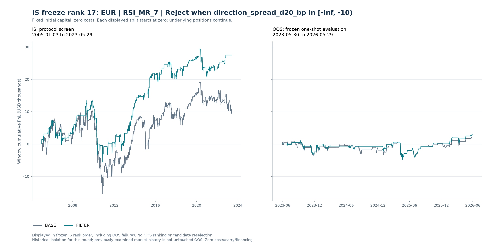
| 区间 | 账户 | 单利累计 % | 简单年化 % | 最大回撤 pp | 交易胜率 % | 交易盈亏比 | 已平仓数 | 已平仓交易保留比例 % | 跨界持仓数 | 期内开仓未平数 | 不足20笔平仓 | 预写OOS曲线标准 | OOS交易质量确认 |
|---|---|---|---|---|---|---|---|---|---|---|---|---|---|
| IS | BASE | 9.30 | 0.51 | -25.68 | 65.26 | 0.58 | 213 | 100.00 | 0 | 1 | 否 | — | — |
| IS | FILTER | 27.49 | 1.49 | -19.07 | 68.35 | 0.72 | 139 | 65.26 | 0 | 0 | 否 | — | — |
| OOS | BASE | 2.20 | 0.73 | -5.69 | 62.16 | 0.69 | 37 | 100.00 | 1 | 0 | 否 | 否 | 是 |
| OOS | FILTER | 2.98 | 0.99 | -5.89 | 65.38 | 0.70 | 26 | 70.27 | 0 | 0 | 否 | 否 | 是 |
冻结候选记录
| candidate_id | EUR|RSI_MR_7|STATE_direction_spread_d20_bp_0 |
|---|---|
| pair | EUR |
| strategy | RSI_MR_7 |
| filter_id | STATE_direction_spread_d20_bp_0 |
| is_new | 是 |
| gross_return_improvement_pp | 18.19 |
| win_rate_improvement_pp | 3.09 |
| payoff_absolute_improvement | 0.14 |
| payoff_relative_improvement | 0.23 |
| retention | 0.65 |
| is_gross_return_pct | 27.49 |
| is_net_return_pct | 27.49 |
| is_annualized_simple_pct | 1.49 |
| is_win_rate | 0.68 |
| is_payoff_ratio | 0.72 |
| is_closed_n | 139 |
| is_max_drawdown_pp | -19.07 |
| positive_blocks | 3 |
| improved_blocks | 3 |
| positive_and_annualized_pass | 是 |
| return_improvement_pass | 是 |
| win_rate_pass | 是 |
| payoff_pass | 是 |
| drawdown_pass | 是 |
| return_to_drawdown_pass | 是 |
| sample_pass | 是 |
| block_positive_pass | 是 |
| block_improvement_pass | 是 |
| pass | 是 |
| failed_criteria | — |
| freeze_rank | 17.00 |
| frozen | 是 |
| filter_name | Reject when direction_spread_d20_bp in [-inf, -10) |
IS FREEZE RANK 18
GBP · BB_MR_10
Reject when base_pnl_63_pct in [0, 2) · 候选编号 GBP|BB_MR_10|STATE_base_pnl_63_pct_2
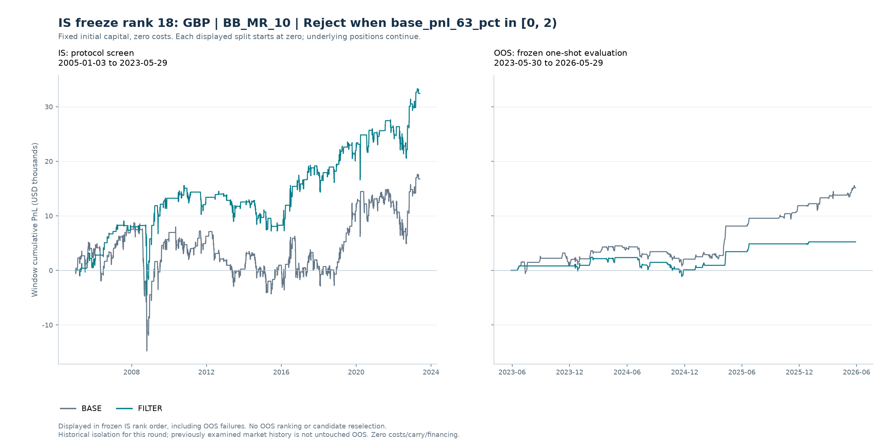
| 区间 | 账户 | 单利累计 % | 简单年化 % | 最大回撤 pp | 交易胜率 % | 交易盈亏比 | 已平仓数 | 已平仓交易保留比例 % | 跨界持仓数 | 期内开仓未平数 | 不足20笔平仓 | 预写OOS曲线标准 | OOS交易质量确认 |
|---|---|---|---|---|---|---|---|---|---|---|---|---|---|
| IS | BASE | 16.76 | 0.91 | -23.48 | 56.80 | 0.87 | 206 | 100.00 | 0 | 0 | 否 | — | — |
| IS | FILTER | 32.43 | 1.76 | -13.61 | 60.58 | 1.00 | 137 | 66.50 | 0 | 0 | 否 | — | — |
| OOS | BASE | 15.14 | 5.04 | -3.68 | 80.00 | 1.06 | 35 | 100.00 | 0 | 0 | 否 | 否 | 否 |
| OOS | FILTER | 5.22 | 1.74 | -3.57 | 80.00 | 0.73 | 15 | 42.86 | 0 | 0 | 是 | 否 | 否 |
冻结候选记录
| candidate_id | GBP|BB_MR_10|STATE_base_pnl_63_pct_2 |
|---|---|
| pair | GBP |
| strategy | BB_MR_10 |
| filter_id | STATE_base_pnl_63_pct_2 |
| is_new | 是 |
| gross_return_improvement_pp | 15.67 |
| win_rate_improvement_pp | 3.79 |
| payoff_absolute_improvement | 0.13 |
| payoff_relative_improvement | 0.15 |
| retention | 0.67 |
| is_gross_return_pct | 32.43 |
| is_net_return_pct | 32.43 |
| is_annualized_simple_pct | 1.76 |
| is_win_rate | 0.61 |
| is_payoff_ratio | 1.00 |
| is_closed_n | 137 |
| is_max_drawdown_pp | -13.61 |
| positive_blocks | 3 |
| improved_blocks | 3 |
| positive_and_annualized_pass | 是 |
| return_improvement_pass | 是 |
| win_rate_pass | 是 |
| payoff_pass | 是 |
| drawdown_pass | 是 |
| return_to_drawdown_pass | 是 |
| sample_pass | 是 |
| block_positive_pass | 是 |
| block_improvement_pass | 是 |
| pass | 是 |
| failed_criteria | — |
| freeze_rank | 18.00 |
| frozen | 是 |
| filter_name | Reject when base_pnl_63_pct in [0, 2) |
IS FREEZE RANK 19
GBP · TSMOM_63
Reject when base_pnl_63_pct in [-2, 0) · 候选编号 GBP|TSMOM_63|STATE_base_pnl_63_pct_1
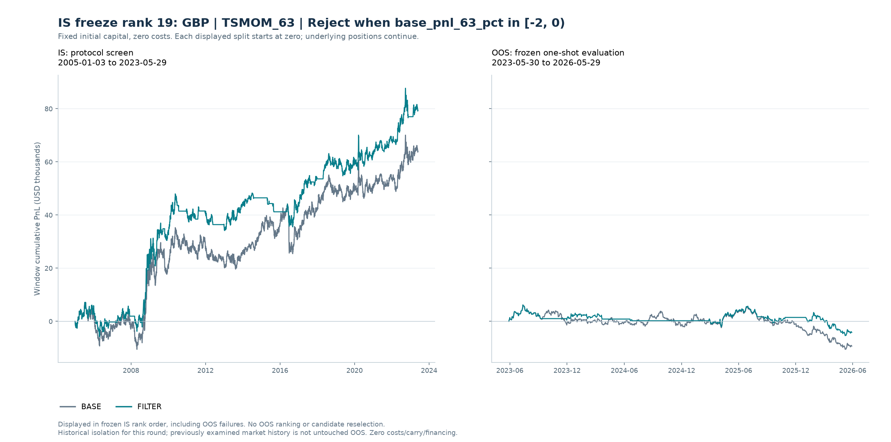
| 区间 | 账户 | 单利累计 % | 简单年化 % | 最大回撤 pp | 交易胜率 % | 交易盈亏比 | 已平仓数 | 已平仓交易保留比例 % | 跨界持仓数 | 期内开仓未平数 | 不足20笔平仓 | 预写OOS曲线标准 | OOS交易质量确认 |
|---|---|---|---|---|---|---|---|---|---|---|---|---|---|
| IS | BASE | 63.93 | 3.47 | -18.75 | 44.89 | 1.80 | 274 | 100.00 | 0 | 1 | 否 | — | — |
| IS | FILTER | 79.37 | 4.31 | -13.81 | 50.84 | 1.99 | 179 | 65.33 | 0 | 1 | 否 | — | — |
| OOS | BASE | -9.31 | -3.10 | -16.71 | 34.69 | 0.97 | 49 | 100.00 | 1 | 1 | 否 | 否 | 否 |
| OOS | FILTER | -4.15 | -1.38 | -11.55 | 30.00 | 1.34 | 30 | 61.22 | 1 | 1 | 否 | 否 | 否 |
冻结候选记录
| candidate_id | GBP|TSMOM_63|STATE_base_pnl_63_pct_1 |
|---|---|
| pair | GBP |
| strategy | TSMOM_63 |
| filter_id | STATE_base_pnl_63_pct_1 |
| is_new | 是 |
| gross_return_improvement_pp | 15.44 |
| win_rate_improvement_pp | 5.95 |
| payoff_absolute_improvement | 0.19 |
| payoff_relative_improvement | 0.10 |
| retention | 0.65 |
| is_gross_return_pct | 79.37 |
| is_net_return_pct | 79.37 |
| is_annualized_simple_pct | 4.31 |
| is_win_rate | 0.51 |
| is_payoff_ratio | 1.99 |
| is_closed_n | 179 |
| is_max_drawdown_pp | -13.81 |
| positive_blocks | 3 |
| improved_blocks | 2 |
| positive_and_annualized_pass | 是 |
| return_improvement_pass | 是 |
| win_rate_pass | 是 |
| payoff_pass | 是 |
| drawdown_pass | 是 |
| return_to_drawdown_pass | 是 |
| sample_pass | 是 |
| block_positive_pass | 是 |
| block_improvement_pass | 是 |
| pass | 是 |
| failed_criteria | — |
| freeze_rank | 19.00 |
| frozen | 是 |
| filter_name | Reject when base_pnl_63_pct in [-2, 0) |
IS FREEZE RANK 20
GBP · BB_MR_20
Reject when vol_ratio_20_63 in [1, 1.25) · 候选编号 GBP|BB_MR_20|STATE_vol_ratio_20_63_2
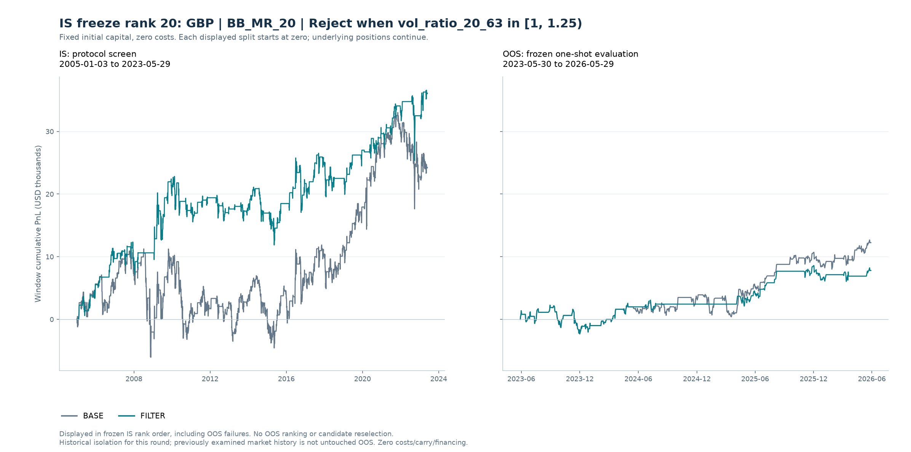
| 区间 | 账户 | 单利累计 % | 简单年化 % | 最大回撤 pp | 交易胜率 % | 交易盈亏比 | 已平仓数 | 已平仓交易保留比例 % | 跨界持仓数 | 期内开仓未平数 | 不足20笔平仓 | 预写OOS曲线标准 | OOS交易质量确认 |
|---|---|---|---|---|---|---|---|---|---|---|---|---|---|
| IS | BASE | 24.25 | 1.32 | -17.31 | 64.94 | 0.66 | 174 | 100.00 | 0 | 1 | 否 | — | — |
| IS | FILTER | 36.10 | 1.96 | -10.96 | 68.81 | 0.79 | 109 | 62.64 | 0 | 1 | 否 | — | — |
| OOS | BASE | 12.24 | 4.08 | -4.60 | 67.65 | 1.06 | 34 | 100.00 | 1 | 0 | 否 | 否 | 否 |
| OOS | FILTER | 7.80 | 2.60 | -4.60 | 66.67 | 1.10 | 21 | 61.76 | 1 | 0 | 否 | 否 | 否 |
冻结候选记录
| candidate_id | GBP|BB_MR_20|STATE_vol_ratio_20_63_2 |
|---|---|
| pair | GBP |
| strategy | BB_MR_20 |
| filter_id | STATE_vol_ratio_20_63_2 |
| is_new | 是 |
| gross_return_improvement_pp | 11.86 |
| win_rate_improvement_pp | 3.86 |
| payoff_absolute_improvement | 0.12 |
| payoff_relative_improvement | 0.18 |
| retention | 0.63 |
| is_gross_return_pct | 36.10 |
| is_net_return_pct | 36.10 |
| is_annualized_simple_pct | 1.96 |
| is_win_rate | 0.69 |
| is_payoff_ratio | 0.79 |
| is_closed_n | 109 |
| is_max_drawdown_pp | -10.96 |
| positive_blocks | 3 |
| improved_blocks | 2 |
| positive_and_annualized_pass | 是 |
| return_improvement_pass | 是 |
| win_rate_pass | 是 |
| payoff_pass | 是 |
| drawdown_pass | 是 |
| return_to_drawdown_pass | 是 |
| sample_pass | 是 |
| block_positive_pass | 是 |
| block_improvement_pass | 是 |
| pass | 是 |
| failed_criteria | — |
| freeze_rank | 20.00 |
| frozen | 是 |
| filter_name | Reject when vol_ratio_20_63 in [1, 1.25) |
IS FREEZE RANK 21
JPY · TSMOM_63
Reject when direction_dxy_d20_pct in [-inf, -1) · 候选编号 JPY|TSMOM_63|STATE_direction_dxy_d20_pct_0
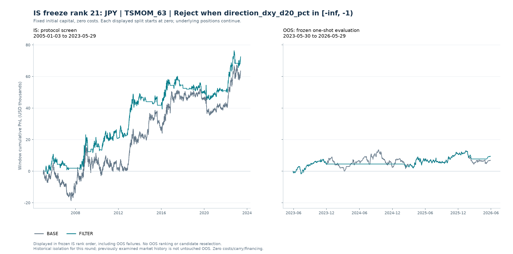
| 区间 | 账户 | 单利累计 % | 简单年化 % | 最大回撤 pp | 交易胜率 % | 交易盈亏比 | 已平仓数 | 已平仓交易保留比例 % | 跨界持仓数 | 期内开仓未平数 | 不足20笔平仓 | 预写OOS曲线标准 | OOS交易质量确认 |
|---|---|---|---|---|---|---|---|---|---|---|---|---|---|
| IS | BASE | 63.44 | 3.45 | -24.02 | 42.05 | 1.98 | 264 | 100.00 | 0 | 1 | 否 | — | — |
| IS | FILTER | 72.41 | 3.93 | -14.91 | 46.15 | 2.27 | 182 | 68.94 | 0 | 1 | 否 | — | — |
| OOS | BASE | 6.81 | 2.27 | -11.97 | 47.06 | 1.20 | 17 | 100.00 | 1 | 1 | 是 | 否 | 否 |
| OOS | FILTER | 9.36 | 3.12 | -5.65 | 37.50 | 3.15 | 8 | 47.06 | 1 | 1 | 是 | 否 | 否 |
冻结候选记录
| candidate_id | JPY|TSMOM_63|STATE_direction_dxy_d20_pct_0 |
|---|---|
| pair | JPY |
| strategy | TSMOM_63 |
| filter_id | STATE_direction_dxy_d20_pct_0 |
| is_new | 是 |
| gross_return_improvement_pp | 8.96 |
| win_rate_improvement_pp | 4.11 |
| payoff_absolute_improvement | 0.29 |
| payoff_relative_improvement | 0.15 |
| retention | 0.69 |
| is_gross_return_pct | 72.41 |
| is_net_return_pct | 72.41 |
| is_annualized_simple_pct | 3.93 |
| is_win_rate | 0.46 |
| is_payoff_ratio | 2.27 |
| is_closed_n | 182 |
| is_max_drawdown_pp | -14.91 |
| positive_blocks | 3 |
| improved_blocks | 2 |
| positive_and_annualized_pass | 是 |
| return_improvement_pass | 是 |
| win_rate_pass | 是 |
| payoff_pass | 是 |
| drawdown_pass | 是 |
| return_to_drawdown_pass | 是 |
| sample_pass | 是 |
| block_positive_pass | 是 |
| block_improvement_pass | 是 |
| pass | 是 |
| failed_criteria | — |
| freeze_rank | 21.00 |
| frozen | 是 |
| filter_name | Reject when direction_dxy_d20_pct in [-inf, -1) |
协议、冻结与一次评估证据
以下字段原样来自本轮运行器。哈希和状态用于定位实际记录；报告本身不另行认证缺失的冻结时刻或历史访问隔离。
预写协议
| version | state_original_screen_v7 |
|---|---|
| created_utc | 2026-10-23T07:05:45.511627+00:00 |
| is_start | 2005-01-03 |
| is_end | 2023-05-29 |
| oos_start | 2023-05-30 |
| oos_end | 2026-05-29 |
| oos_duration | Three calendar years immediately following IS, ending at the supplied workbook endpoint. |
| scope | {"pairs": ["EUR", "GBP", "AUD", "NZD", "JPY", "CHF", "CAD", "NOK", "SEK"], "strategies": ["RSI_MR_7", "RSI_MR_14", "RSI_MR_20", "RSI_MOM_7", "RSI_MOM_14", "RSI_MOM_20", "MA_10_30", "MA_20_60", "BB_MR_10", "BB_MR_20", "BB_BO_10", "BB_BO_20", "DONCHIAN_BO_10", "DONCHIAN_BO_20", "MACD_12_26_9", "TSMOM_21", "TSMOM_63", "VOTE_EQUAL_4", "VOTE_STRENGTH_4", "REGIME_RULE_FIXED"], "baseline_accounts": 180} |
| initial_capital_usd | 100,000 |
| accounting | fixed_initial_capital_simple |
| cost_bp | 0.00 |
| reference_cost_bp | 0.00 |
| cost_instruction | User explicitly requested no costs. No cost sensitivity is used this round. |
| carry_financing_cash_interest | 0.00 |
| prior_holdout_exposure | The 2023-2026 history was already plotted and inspected in earlier work. This is a development-isolated historical test, not virgin or newly collected OOS. |
| development_access | After workbook parsing, price and native feature rows after IS_END are removed before indicator/return/feature calculations. No full-sample outcome artifact is used as a development input. |
| screen | {"min_gross_annualized_simple_pct": 1.0, "min_return_improvement_pp": 5.0, "min_win_rate_improvement_pp": 2.0, "min_payoff_relative_improvement": 0.1, "max_drawdown_deterioration_pp": 2.0, "return_to_drawdown_must_improve": true, "min_closed_trades": 50, "min_closed_retention": 0.5, "min_positive_is_blocks": 2, "min_improved_is_blocks": 2, "last_is_block_positive_and_improved": true, "one_way_cost_bp": 0.0, "cost_sensitivity_evaluated": false, "cost_instruction": "User explicitly requested no costs for this round.", "rank": ["gross_return_improvement_pp DESC", "payoff_absolute_improvement DESC", "win_rate_improvement_pp DESC", "candidate_id ASC"], "freeze": "One highest IS-ranked passing NEW filter per pair/strategy. All passing versions retained in IS table.", "schedule_delay_is_diagnostic_only": true} |
| oos_screen | {"min_net_annualized_simple_pct": 1.0, "min_net_return_improvement_pp": 0.0, "worst_net_drawdown_pp": -15.0, "min_positive_anniversary_years": 2, "min_closed_trades": 10, "quality_confirmation": "Separately report whether both gross trade win rate and payoff are no worse than BASE, with >=20 closed trades. Not a license to tune on OOS."} |
| is_blocks | [["IS_EARLY", "2005-01-03", "2014-12-31"], ["IS_MIDDLE", "2015-01-01", "2019-12-31"], ["IS_LATE", "2020-01-01", "2023-05-29"]] |
| oos_anniversary_years | [["OOS_YEAR_1", "2023-05-30", "2024-05-29"], ["OOS_YEAR_2", "2024-05-30", "2025-05-29"], ["OOS_YEAR_3", "2025-05-30", "2026-05-29"]] |
| candidate_specs | [{"id": "STATE_vol_ratio_20_63_0", "feature": "vol_ratio_20_63", "state": 0}, {"id": "STATE_vol_ratio_20_63_1", "feature": "vol_ratio_20_63", "state": 1}, {"id": "STATE_vol_ratio_20_63_2", "feature": "vol_ratio_20_63", "state": 2}, {"id": "STATE_vol_ratio_20_63_3", "feature": "vol_ratio_20_63", "state": 3}, {"id": "STATE_realized_vol_20_pct_0", "feature": "realized_vol_20_pct", "state": 0}, {"id": "STATE_realized_vol_20_pct_1", "feature": "realized_vol_20_pct", "state": 1}, {"id": "STATE_realized_vol_20_pct_2", "feature": "realized_vol_20_pct", "state": 2}, {"id": "STATE_realized_vol_20_pct_3", "feature": "realized_vol_20_pct", "state": 3}, {"id": "STATE_efficiency_63_0", "feature": "efficiency_63", "state": 0}, {"id": "STATE_efficiency_63_1", "feature": "efficiency_63", "state": 1}, {"id": "STATE_efficiency_63_2", "feature": "efficiency_63", "state": 2}, {"id": "STATE_efficiency_63_3", "feature": "efficiency_63", "state": 3}, {"id": "STATE_direction_return_20_vol_0", "feature": "direction_return_20_vol", "state": 0}, {"id": "STATE_direction_return_20_vol_1", "feature": "direction_return_20_vol", "state": 1}, {"id": "STATE_direction_return_20_vol_2", "feature": "direction_return_20_vol", "state": 2}, {"id": "STATE_direction_return_20_vol_3", "feature": "direction_return_20_vol", "state": 3}, {"id": "STATE_direction_distance_ma_60_vol_0", "feature": "direction_distance_ma_60_vol", "state": 0}, {"id": "STATE_direction_distance_ma_60_vol_1", "feature": "direction_distance_ma_60_vol", "state": 1}, {"id": "STATE_direction_distance_ma_60_vol_2", "feature": "direction_distance_ma_60_vol", "state": 2}, {"id": "STATE_direction_distance_ma_60_vol_3", "feature": "direction_distance_ma_60_vol", "state": 3}, {"id": "STATE_K_vix_0", "feature": "K_vix", "state": 0}, {"id": "STATE_K_vix_1", "feature": "K_vix", "state": 1}, {"id": "STATE_K_vix_2", "feature": "K_vix", "state": 2}, {"id": "STATE_K_vix_3", "feature": "K_vix", "state": 3}, {"id": "STATE_K_vix_d5_0", "feature": "K_vix_d5", "state": 0}, {"id": "STATE_K_vix_d5_1", "feature": "K_vix_d5", "state": 1}, {"id": "STATE_K_vix_d5_2", "feature": "K_vix_d5", "state": 2}, {"id": "STATE_K_vix_d5_3", "feature": "K_vix_d5", "state": 3}, {"id": "STATE_direction_spread_bp_0", "feature": "direction_spread_bp", "state": 0}, {"id": "STATE_direction_spread_bp_1", "feature": "direction_spread_bp", "state": 1}, {"id": "STATE_direction_spread_bp_2", "feature": "direction_spread_bp", "state": 2}, {"id": "STATE_direction_spread_bp_3", "feature": "direction_spread_bp", "state": 3}, {"id": "STATE_direction_spread_d20_bp_0", "feature": "direction_spread_d20_bp", "state": 0}, {"id": "STATE_direction_spread_d20_bp_1", "feature": "direction_spread_d20_bp", "state": 1}, {"id": "STATE_direction_spread_d20_bp_2", "feature": "direction_spread_d20_bp", "state": 2}, {"id": "STATE_direction_spread_d20_bp_3", "feature": "direction_spread_d20_bp", "state": 3}, {"id": "STATE_direction_dxy_d20_pct_0", "feature": "direction_dxy_d20_pct", "state": 0}, {"id": "STATE_direction_dxy_d20_pct_1", "feature": "direction_dxy_d20_pct", "state": 1}, {"id": "STATE_direction_dxy_d20_pct_2", "feature": "direction_dxy_d20_pct", "state": 2}, {"id": "STATE_direction_dxy_d20_pct_3", "feature": "direction_dxy_d20_pct", "state": 3}, {"id": "STATE_direction_commodity_d20_pct_0", "feature": "direction_commodity_d20_pct", "state": 0}, {"id": "STATE_direction_commodity_d20_pct_1", "feature": "direction_commodity_d20_pct", "state": 1}, {"id": "STATE_direction_commodity_d20_pct_2", "feature": "direction_commodity_d20_pct", "state": 2}, {"id": "STATE_direction_commodity_d20_pct_3", "feature": "direction_commodity_d20_pct", "state": 3}, {"id": "STATE_base_pnl_63_pct_0", "feature": "base_pnl_63_pct", "state": 0}, {"id": "STATE_base_pnl_63_pct_1", "feature": "base_pnl_63_pct", "state": 1}, {"id": "STATE_base_pnl_63_pct_2", "feature": "base_pnl_63_pct", "state": 2}, {"id": "STATE_base_pnl_63_pct_3", "feature": "base_pnl_63_pct", "state": 3}, {"id": "STATE_base_pnl_252_pct_0", "feature": "base_pnl_252_pct", "state": 0}, {"id": "STATE_base_pnl_252_pct_1", "feature": "base_pnl_252_pct", "state": 1}, {"id": "STATE_base_pnl_252_pct_2", "feature": "base_pnl_252_pct", "state": 2}, {"id": "STATE_base_pnl_252_pct_3", "feature": "base_pnl_252_pct", "state": 3}] |
| legacy_comparator_ids | [] |
| family_application | All 180 BASE accounts retained in coverage; every original D proposal evaluated on its originating account. The original 1201 list is a fixed candidate set, not the complete universe of all feature/account bins. |
| boundary_policy | Main evaluation preserves continuous positions across IS/OOS; PnL display resets only. Quality uses entries and closes inside each interval. Carry-in and censored trades are reported separately. |
| fresh_start_sensitivity | Zero prior positions; only original BASE episodes with execution entry on/after OOS_START may enter. No mid-episode re-entry. |
| schedule_delay_sensitivity | No extra schedule-delay experiment in this campaign. |
| holdout_rule | Original SCREEN and original within-account ranking applied to the entire fixed 1201 set. Freeze one passing candidate per account; evaluate every frozen candidate unchanged, preserving all failures. No old outcome file is read to nominate or rank. |
| source_sha256 | {"run_filter_research.py": "b648e4043149df19dbdc48e37a65d2470f00613ffb95f2b9b3b904e024f2d7a9", "src/fx_filter_candidates.py": "695a80f3914a2663e12859fcc2b8121106dea9859f2bb7e00f4d3c3eefde12c7", "src/fx_filter_evaluation.py": "fb04db076d320dc21b245e5c7957d11b7448ed852656fa9a38f5a10896d099db", "src/fx_baselines.py": "40774774f34b048480f1684ecd5913b5439f0386f73695b391e6809acce0fe97", "src/fx_economics.py": "87314c8688d8cb52e2e637fe112f4a15124ce93ba893c7491a9b23c4114a868e", "src/fx_observation_features.py": "a34acd39e7a86ea5770fc2b7152a703f47c47fadc795b974ce7eb11e53fdf3c3", "run_state_original_screen.py": "7d05dec8925d4468c768e53641528ae81e9100744e0301ae4e66c5119296b475", "src/fx_state_filters.py": "47f6c3f4b5696bb2f1039cf31b67244da5c81929e6ecbc6aa91d08e78904e619", "src/fx_is_states.py": "b14cacc51e83587dbd15514e05ff608ecb1ead4e8a875f6eab2acaf41a6d8f5b", "run_state_filter_research.py": "8851bcd8ec23bb5bbefb0658106cad6c336337508a8ab3ebf153bbdd2319c92c"} |
| input_sha256 | {"FX_Research_Datasets/data/raw/FX_Features_Book.xlsx": "d2ea946ad85afdfc2e790307880528e6111b51aa6be00a73d5f8d083f4a67dc9", "FX_Research_Datasets/data/raw/FX_Technical_PIT_Dataset(6)(1).xlsx": "70283428b418ab78af49951cdecf741c7f909ffeb17dafd86aaf3d9f9107f2de", "run_filter_research.py": "b648e4043149df19dbdc48e37a65d2470f00613ffb95f2b9b3b904e024f2d7a9", "src/fx_filter_candidates.py": "695a80f3914a2663e12859fcc2b8121106dea9859f2bb7e00f4d3c3eefde12c7", "src/fx_filter_evaluation.py": "fb04db076d320dc21b245e5c7957d11b7448ed852656fa9a38f5a10896d099db", "src/fx_baselines.py": "40774774f34b048480f1684ecd5913b5439f0386f73695b391e6809acce0fe97", "src/fx_economics.py": "87314c8688d8cb52e2e637fe112f4a15124ce93ba893c7491a9b23c4114a868e", "src/fx_observation_features.py": "a34acd39e7a86ea5770fc2b7152a703f47c47fadc795b974ce7eb11e53fdf3c3", "run_state_filter_research.py": "8851bcd8ec23bb5bbefb0658106cad6c336337508a8ab3ebf153bbdd2319c92c", "src/fx_is_states.py": "b14cacc51e83587dbd15514e05ff608ecb1ead4e8a875f6eab2acaf41a6d8f5b", "src/fx_state_filters.py": "47f6c3f4b5696bb2f1039cf31b67244da5c81929e6ecbc6aa91d08e78904e619", "build_is_filter_observations.py": "e5f96075dd5102319110031b0e9d13b84d7f4bf75ba6806aa5eee9449b723485", "build_entry_interaction_observations.py": "ed53ec7acacaf763b0598af0818d47fa2bbb448e168d3d5c6a85d797ea114825", "reproduced/filter_is_diagnostics_v2/entry_state_protocol.json": "94e8208cb3039808de13af472339443cca6dd818324f08d84db669e8a0d01c04", "reproduced/filter_is_diagnostics_v2/entry_state_validation.json": "2637b364492c0f6b9ba80823cd3f4fcfbef2f5ddca05584a19ab010c4c208e18", "reproduced/filter_is_diagnostics_v2/technical_validation_amendment.json": "9b53b05bad9b78eafc75775ab7ea877aedb5ed7bcd253edbd1992d04261a7056", "reproduced/filter_is_diagnostics_v2/is_entry_state_ledger.csv.gz": "46718a115c30684bc4cbba1180120b1eb695a2d7c3fe2648ca259cc111f9f078", "reproduced/filter_is_diagnostics_v2/is_entry_state_summary.csv": "3e977f3e69662b1aba5e0e9d1d1cb8af4ecabccf24dd3fa2e315c9aa5ea91b2a", "reproduced/filter_is_diagnostics_v2/is_entry_cohort_coverage.csv": "3115e6fa52bfc599a1f0ffd3ebdd1208f05a9e265cc652e172d01f80651aaa8a", "reproduced/filter_is_diagnostics_v2/source_snapshots/fx_is_states_initial.py": "ca6caf54501109023e3ffe7d6777106c4cc746c328bd68955213f8208d12d90a", "reproduced/state_filter_v2/protocol.json": "1211276d44902490a873f85a207841cee03f744af6d2cbc1d35101a07341f448", "reproduced/state_filter_v2/discovery_proposals.json": "856e486434ef010bed09444cac16ba33d706cff08f3f1de37da750217d1557b6", "reproduced/state_filter_v2/validation_locked.json": "7e7275701d208811fed11f4149284c229a8a188d30b399b5ddfed94cde76b839", "reproduced/state_filter_v2/fit_status.json": "69ad8ce55140adb2ac305ab6b8d95570d0b843afb0779a642361cde6d356c8d5", "reproduced/state_filter_v2/preconfirmation_integrity_audit.json": "ced85fa5c9df7c49b29032035fdd595fa82341db92a1076b1b1e4492a6b020b4", "reproduced/state_filter_v2/frozen_selection.json": "069fd143beec224809a8454d477ff9dcafb5c8fe1a1c1c89a748529858b63f6c", "reproduced/state_filter_v2/development_status.json": "43813075e6a7898e3f02006fd94df1d9d0661d212b8dad0b05928adb91b95ca0", "reproduced/state_filter_v2/fit_selection.csv": "b95622f124578882080326ad9bfde36fbf2db4ccb9040464e063e4b8cb659776", "reproduced/state_filter_v2/fit_metrics.csv": "a1235f0e059a620042e574611eafe88d8efcb968b25fd4e2896cdfa48006919e", "reproduced/state_filter_v2/fit_locked_daily.csv.gz": "248d65b6f3dcce55bef1c701fbaf86db7e90e0ca2593bca93faa6501141c1fcc", "reproduced/state_filter_v2/confirmation_full_metrics.csv": "bf7667c80807496bb4c7085b13cc7250d7878a3fb3b1d95acc2d2fe4989e85b7", "reproduced/state_filter_supplement_v1/protocol.json": "d2ff2d289d9ba06c18bdd3032b068988a4da9d2506093b3a62cc0f622276eeea", "reproduced/state_filter_supplement_v1/frozen_selection.json": "eeaa471e2a702275aa2034784fcb34d5ddc645025e44f5c8abea67e69d96bb6c", "reproduced/state_original_screen_scope_review/review.json": "1bae3761d3adebda3700b16abbd74bfd3113e02e74011d0cf538fa23611abb7a"} |
| proposal_rule | Exactly the 1201 proposals in the immutable v2 discovery_proposals.json, including original ordering/specs/D-only evidence. Original D1/D2 >=10 closed and negative sum, combined D return after removing worst one still negative. No new proposal generation or feature/threshold search. |
| entry_rule | Use the unchanged fx_state_filters single-state engine. At each original BASE signal reject the complete original TARGET episode if its fixed feature state matches; UNKNOWN retained. No mid-episode entry, unchanged original technical exits, next-close fills, zero costs. |
| hypothesis_origin | Evaluation-scope completion for existing v2 D-only proposals: all 1201 had D/V/FIT metrics, only four v2 locked candidates had full-IS/confirmation paths. This separate campaign evaluates every fixed proposal using the user original SCREEN. Original v2 strict stages, locks and failures are not rewritten. Later repeated IS and historical OOS exposure are disclosed. |
| candidate_novelty | Existing hypotheses, newly completed original-standard evaluation; is_new is the original SCREEN engine eligibility flag, not a claim of unseen hypotheses. |
| original_proposal_count | 1,201 |
| original_v2_full_IS_count | 4 |
| original_v2_missing_full_IS_count | 1,197 |
| previously_evaluated_exact_candidates | [{"candidate_id": "JPY|BB_MR_20|STATE_efficiency_63_1", "spec": {"id": "STATE_efficiency_63_1", "feature": "efficiency_63", "state": 1}, "source_campaign": "state_filter_supplement_v1", "policy": "If selected under unchanged ranking, retain it. Any same historical OOS replay is verification of existing evidence, not new independent evidence; no exclusion or substitution based on prior outcomes."}] |
| state_bins | {"vol_ratio_20_63": [0.8, 1.0, 1.25], "realized_vol_20_pct": [5.0, 10.0, 15.0], "efficiency_63": [0.1, 0.2, 0.4], "direction_return_20_vol": [-1.0, 0.0, 1.0], "direction_distance_ma_60_vol": [-1.0, 0.0, 1.0], "K_vix": [15.0, 20.0, 30.0], "K_vix_d5": [-3.0, 0.0, 3.0], "direction_spread_bp": [-100.0, 0.0, 100.0], "direction_spread_d20_bp": [-10.0, 0.0, 10.0], "direction_dxy_d20_pct": [-1.0, 0.0, 1.0], "direction_commodity_d20_pct": [-1.0, 0.0, 1.0], "base_pnl_63_pct": [-2.0, 0.0, 2.0], "base_pnl_252_pct": [-5.0, 0.0, 5.0]} |
| observation_source_sha256 | {"run_filter_research.py": "b648e4043149df19dbdc48e37a65d2470f00613ffb95f2b9b3b904e024f2d7a9", "src/fx_filter_candidates.py": "695a80f3914a2663e12859fcc2b8121106dea9859f2bb7e00f4d3c3eefde12c7", "src/fx_filter_evaluation.py": "fb04db076d320dc21b245e5c7957d11b7448ed852656fa9a38f5a10896d099db", "src/fx_baselines.py": "40774774f34b048480f1684ecd5913b5439f0386f73695b391e6809acce0fe97", "src/fx_economics.py": "87314c8688d8cb52e2e637fe112f4a15124ce93ba893c7491a9b23c4114a868e", "src/fx_observation_features.py": "a34acd39e7a86ea5770fc2b7152a703f47c47fadc795b974ce7eb11e53fdf3c3", "run_state_filter_research.py": "8851bcd8ec23bb5bbefb0658106cad6c336337508a8ab3ebf153bbdd2319c92c", "src/fx_is_states.py": "b14cacc51e83587dbd15514e05ff608ecb1ead4e8a875f6eab2acaf41a6d8f5b", "src/fx_state_filters.py": "47f6c3f4b5696bb2f1039cf31b67244da5c81929e6ecbc6aa91d08e78904e619", "build_is_filter_observations.py": "e5f96075dd5102319110031b0e9d13b84d7f4bf75ba6806aa5eee9449b723485", "build_entry_interaction_observations.py": "ed53ec7acacaf763b0598af0818d47fa2bbb448e168d3d5c6a85d797ea114825", "FX_Research_Datasets/data/raw/FX_Features_Book.xlsx": "d2ea946ad85afdfc2e790307880528e6111b51aa6be00a73d5f8d083f4a67dc9", "FX_Research_Datasets/data/raw/FX_Technical_PIT_Dataset(6)(1).xlsx": "70283428b418ab78af49951cdecf741c7f909ffeb17dafd86aaf3d9f9107f2de", "reproduced/filter_is_diagnostics_v2/entry_state_protocol.json": "94e8208cb3039808de13af472339443cca6dd818324f08d84db669e8a0d01c04", "reproduced/filter_is_diagnostics_v2/entry_state_validation.json": "2637b364492c0f6b9ba80823cd3f4fcfbef2f5ddca05584a19ab010c4c208e18", "reproduced/filter_is_diagnostics_v2/technical_validation_amendment.json": "9b53b05bad9b78eafc75775ab7ea877aedb5ed7bcd253edbd1992d04261a7056", "reproduced/filter_is_diagnostics_v2/is_entry_state_ledger.csv.gz": "46718a115c30684bc4cbba1180120b1eb695a2d7c3fe2648ca259cc111f9f078", "reproduced/filter_is_diagnostics_v2/is_entry_state_summary.csv": "3e977f3e69662b1aba5e0e9d1d1cb8af4ecabccf24dd3fa2e315c9aa5ea91b2a", "reproduced/filter_is_diagnostics_v2/is_entry_cohort_coverage.csv": "3115e6fa52bfc599a1f0ffd3ebdd1208f05a9e265cc652e172d01f80651aaa8a", "reproduced/filter_is_diagnostics_v2/source_snapshots/fx_is_states_initial.py": "ca6caf54501109023e3ffe7d6777106c4cc746c328bd68955213f8208d12d90a", "reproduced/state_filter_v2/protocol.json": "1211276d44902490a873f85a207841cee03f744af6d2cbc1d35101a07341f448", "reproduced/state_filter_v2/discovery_proposals.json": "856e486434ef010bed09444cac16ba33d706cff08f3f1de37da750217d1557b6", "reproduced/state_filter_v2/validation_locked.json": "7e7275701d208811fed11f4149284c229a8a188d30b399b5ddfed94cde76b839", "reproduced/state_filter_v2/fit_status.json": "69ad8ce55140adb2ac305ab6b8d95570d0b843afb0779a642361cde6d356c8d5", "reproduced/state_filter_v2/preconfirmation_integrity_audit.json": "ced85fa5c9df7c49b29032035fdd595fa82341db92a1076b1b1e4492a6b020b4", "reproduced/state_filter_v2/frozen_selection.json": "069fd143beec224809a8454d477ff9dcafb5c8fe1a1c1c89a748529858b63f6c", "reproduced/state_filter_v2/development_status.json": "43813075e6a7898e3f02006fd94df1d9d0661d212b8dad0b05928adb91b95ca0", "reproduced/state_filter_v2/fit_selection.csv": "b95622f124578882080326ad9bfde36fbf2db4ccb9040464e063e4b8cb659776", "reproduced/state_filter_v2/fit_metrics.csv": "a1235f0e059a620042e574611eafe88d8efcb968b25fd4e2896cdfa48006919e", "reproduced/state_filter_v2/fit_locked_daily.csv.gz": "248d65b6f3dcce55bef1c701fbaf86db7e90e0ca2593bca93faa6501141c1fcc", "reproduced/state_filter_v2/confirmation_full_metrics.csv": "bf7667c80807496bb4c7085b13cc7250d7878a3fb3b1d95acc2d2fe4989e85b7", "reproduced/state_filter_supplement_v1/protocol.json": "d2ff2d289d9ba06c18bdd3032b068988a4da9d2506093b3a62cc0f622276eeea", "reproduced/state_filter_supplement_v1/frozen_selection.json": "eeaa471e2a702275aa2034784fcb34d5ddc645025e44f5c8abea67e69d96bb6c", "reproduced/state_original_screen_scope_review/review.json": "1bae3761d3adebda3700b16abbd74bfd3113e02e74011d0cf538fa23611abb7a"} |
本轮验证记录
| status | passed |
|---|---|
| started_utc | 2026-10-23T07:05:45.614780+00:00 |
| oos_evaluated | 是 |
| compute_cutoff | 2023-05-29 |
| finished_utc | 2026-10-23T07:11:58.384926+00:00 |
| is_screen_completed | 是 |
| source_integrity_pass | 是 |
| accounts_covered | 180 |
| candidates_evaluated | 1,201 |
| all_passing_versions | 23 |
| frozen_candidates | 21 |
| freeze_sha256 | 8aaf3d1b3ea70b7c384b57cbf998cf6ba15cdd72cef4f764c2e468d342ba209c |
| holdout_returns_computed | 否 |
| protocol_sha256 | 59dc3ab2dc0489030f97974470a9ee5e2da70cf4ec29c2e1b28bcd6e9ff7a548 |
| opened_utc | 2026-10-23T07:11:46.701723+00:00 |
| freeze_created_before_oos | 是 |
| candidate_count | 21 |
| retuning_permitted | 否 |
| is_prefix_positions_and_returns_match | 是 |
| curve_passing_candidates | 3 |
| quality_confirmed_candidates | 6 |
| both_curve_and_quality_candidates | 3 |
| output_sha256 | {"candidate_assessment.csv": "ca54634ed3d5f55c65b52c22ae070744c5fd48a67b3720380ee55df90bb3f549", "frozen_full_episode_decisions.csv.gz": "5b7733c5b963ed54a7a808c7e1f956ecd54baffba0eb123f4c339743e5acc537", "frozen_full_trade_ledger.csv.gz": "f04cfe889261d2f16ac574ae2257cd488892479775d122be1d3ee72739de4b36", "oos_anniversary_metrics.csv": "fe66bf9f9a1ab4d519f53ba7812a8f81aeaa806f1065e2383dff07dd73e98781", "oos_daily.csv.gz": "c3b13cc5b8e9741f2cf7bc2249368f210cf8280293891e2eee14baae490fda6a", "oos_fresh_start_metrics.csv": "d64d39129444db047362dadfc41999deaf4d6d8bfdac44306dfda8875ab4f0ab", "oos_metrics.csv": "f8a186459c8d475767d1919adc5e2265fee6f7016666669fa6f25a36d201f8a7"} |
完整输出
pnl_comparison.pdf 包含所有冻结候选，顺序与上表一致；PNG 保存在 figures/。
- candidate_assessment.csv
- frozen_full_episode_decisions.csv.gz
- frozen_full_trade_ledger.csv.gz
- is_account_coverage.csv
- is_all_decisions.csv.gz
- is_all_metrics.csv
- is_frozen_daily.csv.gz
- is_frozen_decisions.csv.gz
- is_frozen_metrics.csv
- is_frozen_trades.csv.gz
- is_selection.csv
- is_state_decision_counts.csv
- is_state_gate_failures.csv
- oos_anniversary_metrics.csv
- oos_daily.csv.gz
- oos_fresh_start_metrics.csv
- oos_metrics.csv
页面与图册均可离线查看。全期观测报告和既有 dashboard 未被本报告修改。